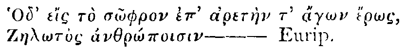

List of Original Advertisements Included
No. 417 |
Saturday, June 28, 1712 |
Addison |
Quem tu Melpomene semel
Nascentem placido lumine videris,
Non illum labor Isthmius
Clarabit pugilem, non equus impiger, &c.
Sed quæ Tibur aquæ fertile perfluunt,
Et Spissæ nemorum comæ
Fingent Æolio carmine nobilem.
Hor.
Dixit et avertens roseâ cervice refulsit:Homer's Persons are most of them God-like and Terrible; Virgil has scarce admitted any into his Poem, who are not Beautiful, and has taken particular Care to make his Heroe so.
Ambrosiæque comæ; divinum vertice odorem
Spiravere: Pedes vestis defluxit ad imos:
Et vera incessu patuit Dea—
—lumenque juventæIn a Word, Homer fills his Readers with Sublime Ideas, and, I believe, has raised the Imagination of all the good Poets that have come after him. I shall only instance Horace, who immediately takes Fire at the first Hint of any Passage in the Iliad or Odyssey, and always rises above himself, when he has Homer in his View. Virgil has drawn together, into his Æneid, all the pleasing Scenes his Subject is capable of admitting, and in his Georgics has given us a Collection of the most delightful Landskips that can be made out of Fields and Woods, Herds of Cattle, and Swarms of Bees.
Purpureum, et lætos oculis afflavit honores.
No. 418 |
Monday, June 30, 1712 |
Addison |
—ferat et rubus asper amomum.
Virg.
—Informe cadaverIt is for the same Reason that we are delighted with the reflecting upon Dangers that are past, or in looking on a Precipice at a distance, which would fill us with a different kind of Horror, if we saw it hanging over our Heads.
Protrahitur, nequeunt expleri corda tuendo
Terribiles oculos: vultum, villosaque satis
Pectora semiferi, atque extinctos faucibus ignes.
Virg.
No. 419 |
Tuesday, July 1, 1712 |
Addison |
—mentis gratissimus Error.
Hor.
Sylvis deducti caveant, me Judice, FauniI do not say with Mr. Bays in the Rehearsal, that Spirits must not be confined to speak Sense, but it is certain their Sense ought to be a little discoloured, that it may seem particular, and proper to the Person and the Condition of the Speaker.
Ne velut innati triviis ac pœne forenses
Aut nimium teneris juvenentur versibus
Hor.
No. 420 |
Wednesday, July 2, 1712 |
Addison |
Quocunque volunt mentem Auditoris agunto.
Hor.
No. 421 |
Thursday, July 3, 1712 |
Addison |
Ignotis errare locis, ignota videre
Flumina gaudebat; studio minuente laborem.
Ovid.
Eumenidum veluti demens videt Agmina Pentheus,There is not a Sight in Nature so mortifying as that of a Distracted Person, when his Imagination is troubled, and his whole Soul disordered and confused. Babylon in Ruins is not so melancholy a Spectacle. But to quit so disagreeable a Subject, I shall only consider, by way of Conclusion, what an infinite Advantage this Faculty gives an Almighty Being over the Soul of Man, and how great a measure of Happiness or Misery we are capable of receiving from the Imagination only.
Et solem geminum, et duplices se ostendere Thebas.
Aut Agamemnonius scenis agitatus Orestes,
Armatam facibus matrem et serpentibus atris
Cum videt, ultricesque sedent in limine Diræ.
Vir.
| [Vol. 2 link] Paper I |
The Perfection of our Sight above our other Senses. The Pleasures of the Imagination arise originally from Sight. The Pleasures of the Imagination divided under two Heads. The Pleasures of the Imagination in some Respects equal to those of the Understanding. The Extent of the Pleasures of the Imagination. The Advantages a Man receives from a Relish of these Pleasures. In what Respect they are preferable to those of the Understanding. |
| [Vol. 2 link] Paper II |
Three Sources of all the Pleasures of the Imagination, in our Survey of outward Objects. How what is Great pleases the Imagination. How what is New pleases the Imagination. How what is Beautiful in our own Species, pleases the Imagination. How what is Beautiful in general pleases the Imagination. What other Accidental Causes may contribute to the heightening of these Pleasures. |
| [Vol. 2 link] Paper III |
Why the Necessary Cause of our being pleased with what is Great, New, or Beautiful, unknown. Why the Final Cause more known and more useful. The Final Cause of our being pleased with what is Great. The Final Cause of our being pleased with what is New. The Final Cause of our being pleased with what is Beautiful in our own Species. The Final Cause of our being pleased with what is Beautiful in general. |
| [Vol. 2 link] Paper IV |
The Works of Nature more pleasant to the Imagination than those of Art. The Works of Nature still more pleasant, the more they resemble those of Art. The Works of Art more pleasant, the more they resemble those of Nature. Our English Plantations and Gardens considered in the foregoing Light. |
| [Vol. 2 link] Paper V |
Of Architecture as it affects the Imagination. Greatness in
Architecture relates either to the Bulk or to the Manner.
Greatness of Bulk in the Ancient Oriental Buildings. The ancient
Accounts of these Buildings confirm'd,
|
| [Vol. 2 link] Paper VI |
The Secondary Pleasures of the Imagination. The several Sources of these Pleasures (Statuary, Painting, Description and Musick) compared together. The Final Cause of our receiving Pleasure from these several Sources. Of Descriptions in particular. The Power of Words over the Imagination. Why one Reader more pleased with Descriptions than another. |
| Paper VII | How a whole Set of Ideas Hang together, &c. A Natural Cause assigned for it. How to perfect the Imagination of a Writer. Who among the Ancient Poets had this Faculty in its greatest Perfection. Homer excelled in Imagining what is Great; Virgil in Imagining what is Beautiful; Ovid in imagining what is New. Our own Country-man Milton very perfect in all three respects. |
| Paper VIII | Why any thing that is unpleasant to behold, pleases the Imagination when well described. Why the Imagination receives a more Exquisite Pleasure from the Description of what is Great, New, or Beautiful. The Pleasure still heightned, if—what is described raises Passion in the Mind. Disagreeable Passions pleasing when raised by apt Descriptions. Why Terror and Grief are pleasing to the Mind when excited by Descriptions. A particular Advantage the Writers in Poetry and Fiction have to please the Imagination. What Liberties are allowed them. |
| Paper IX | Of that kind of Poetry which Mr. Dryden calls the Fairy Way of Writing. How a Poet should be Qualified for it. The Pleasures of the Imagination that arise from it. In this respect why the Moderns excell the Ancients. Why the English excell the Moderns. Who the Best among the English. Of Emblematical Persons. |
| Paper X | What Authors please the Imagination who have nothing to do with Fiction. How History pleases the Imagination. How the Authors of the new Philosophy please the Imagination. The Bounds and Defects of the Imagination. Whether these Defects are Essential to the Imagination. |
| Paper XI | How those please the Imagination who treat of Subjects abstracted from Matter, by Allusions taken from it. What Allusions most pleasing to the Imagination. Great Writers how Faulty in this Respect. Of the Art of Imagining in General. The Imagination capable of Pain as well as Pleasure. In what Degree the Imagination is capable either of Pain or Pleasure. |
No. 422 |
Friday, July 4, 1712 |
Steele |
Hæc scripsi non otii abundantia sed amoris erga te.
Tull. Epis.
Peculiar therefore is her Way,T.
Whether by Nature taught,
I shall not undertake to say,
Or by experience bought;
For who o'er Night obtain'd her Grace,
She can next Day disown,
And stare upon the strange Man's Face,
As one she ne'er had known,
So well she can the Truth disguise,
Such artful Wonder frame,
The Lover or distrusts his Eyes,
Or thinks 'twas all a Dream.
Some censure this as lewd or low,
Who are to Bounty blind;
For to forget what we bestow,
Bespeaks a noble Mind.
No. 423 |
Satday, July 5, 1712 |
Steele |
—Nuper Idoneus.
Hor.
'All goes well; she is very angry at me, and I dare say hates me in earnest. It is a good time to Visit.The Comparison of Strephon's Gayety to Damon's Languishment, strikes her Imagination with a Prospect of very agreeable Hours with such a Man as the former, and Abhorrence of the insipid Prospect with one like the latter. To know when a Lady is displeased with another, is to know the best time of advancing your self. This method of two Persons playing into each other's Hand is so dangerous, that I cannot tell how a Woman could be able to withstand such a Siege. The Condition of Gloriana, I am afraid, is irretrievable, for Strephon has had so many Opportunities of pleasing without suspicion, that all which is left for her to do is to bring him, now she is advised, to an Explanation of his Passion, and beginning again, if she can conquer the kind Sentiments she has already conceived for him. When one shews himself a Creature to be avoided, the other proper to be fled to for Succour, they have the whole Woman between them, and can occasionally rebound her Love and Hatred from one to the other, in such a manner as to keep her at a distance from all the rest of the World, and cast Lots for the Conquest.
Yours.'
No. 424 |
Monday, July 7, 1712 |
Steele |
Est Ulubris, animus si te non deficit—T.
Hor.
London, June 24.
Mr. Spectator,
'A man who has it in his Power to chuse his own Company, would certainly be much to blame should he not, to the best of his Judgment, take such as are of a Temper most suitable to his own; and where that Choice is wanting, or where a Man is mistaken in his Choice, and yet under a Necessity of continuing in the same Company, it will certainly be to his Interest to carry himself as easily as possible.
'In this I am sensible I do but repeat what has been said a thousand times, at which however I think no Body has any Title to take Exception, but they who never failed to put this in Practice—Not to use any longer Preface, this being the Season of the Year in which great Numbers of all sorts of People retire from this Place of Business and Pleasure to Country Solitude, I think it not improper to advise them to take with them as great a Stock of Good-humour as they can; for tho' a Country-Life is described as the most pleasant of all others, and though it may in Truth be so, yet it is so only to those who know how to enjoy Leisure and Retirement.
'As for those who can't live without the constant helps of Business or Company, let them consider, that in the Country there is no Exchange, there are no Play-houses, no Variety of Coffee-houses, nor many of those other Amusements which serve here as so many Reliefs from the repeated Occurrences in their own Families; but that there the greatest Part of their Time must be spent within themselves, and consequently it behoves them to consider how agreeable it will be to them before they leave this dear Town.
'I remember, Mr. SPECTATOR, we were very well entertained last Year, with the Advices you gave us from Sir Roger's Country Seat; which I the rather mention, because 'tis almost impossible not to live pleasantly, where the Master of a Family is such a one as you there describe your Friend, who cannot therefore (I mean as to his domestick Character) be too often recommended to the Imitation of others. How amiable is that Affability and Benevolence with which he treats his Neighbours, and every one, even the meanest of his own Family! And yet how seldom imitated? instead of which we commonly meet with ill-natured Expostulations, Noise, and Chidings—And this I hinted, because the Humour and Disposition of the Head, is what chiefly influences all the other Parts of a Family.
'An Agreement and kind Correspondence between Friends and Acquaintance, is the greatest Pleasure of Life. This is an undoubted Truth, and yet any Man who judges from the Practice of the World, will be almost persuaded to believe the contrary; for how can we suppose People should be so industrious to make themselves uneasie? What can engage them to entertain and foment Jealousies of one another upon every the least Occasion? Yet so it is, there are People who (as it should seem) delight in being troublesome and vexatious, who (as Tully speaks) Mira sunt alacritate ad litigandum, Have a certain Chearfulness in wrangling. And thus it happens, that there are very few Families in which there are not Feuds and Animosities, tho' 'tis every one's Interest, there more particularly, to avoid 'em, because there (as I would willingly hope) no one gives another Uneasiness, without feeling some share of it—But I am gone beyond what I designed, and had almost forgot what I chiefly proposed; which was, barely to tell you, how hardly we who pass most of our Time in Town dispense with a long Vacation in the Country, how uneasie we grow to our selves and to one another when our Conversation is confined, insomuch that by Michaelmas 'tis odds but we come to downright squabbling, and make as free with one another to our Faces, as we do with the rest of the World behind their Backs. After I have told you this, I am to deSir e that you would now and then give us a Lesson of Good-humour, a Family-Piece; which, since we are all very fond of you, I hope may have some Influence upon us—
'After these plain Observations give me leave to give you an Hint of what a Set of Company of my Acquaintance, who are now gone into the Country, and have the Use of an absent Nobleman's Seat, have settled among themselves, to avoid the Inconveniencies above mentioned. They are a Collection of ten or twelve, of the same good Inclination towards each other, but of very different Talents and Inclinations: From hence they hope, that the Variety of their Tempers will only create Variety of Pleasures. But as there always will arise, among the same People, either for want of Diversity of Objects, or the like Causes, a certain Satiety, which may grow into ill Humour or Discontent, there is a large Wing of the House which they design to employ in the Nature of an Infirmary. Whoever says a peevish thing, or acts any thing which betrays a Sowerness or Indisposition to Company, is immediately to be conveyed to his Chambers in the Infirmary; from whence he is not to be relieved, till by his Manner of Submission, and the Sentiments expressed in his Petition for that Purpose, he appears to the Majority of the Company to be again fit for Society. You are to understand, that all ill-natured Words or uneasie Gestures are sufficient Cause for Banishment; speaking impatiently to Servants, making a Man repeat what he says, or any thing that betrays Inattention or Dishumour, are also criminal without Reprieve: But it is provided, that whoever observes the ill-natured Fit coming upon himself, and voluntarily retires, shall be received at his return from the Infirmary with the highest Marks of Esteem. By these and other wholesome Methods it is expected that if they cannot cure one another, yet at least they have taken Care that the ill Humour of one shall not be troublesome to the rest of the Company. There are many other Rules which the Society have established for the Preservation of their Ease and Tranquility, the Effects of which, with the Incidents that arise among them, shall be communicated to you from Time to Time for the publick Good, by,
Sir ,
Your most humble Servant,
R. O.
No. 425 |
Tuesday, July 8, 1712 |
Budgell |
Frigora mitescunt Zephyris, Ver proterit ÆstasZ.
Interitura, simul
Pomifer Autumnus fruges effuderit, et mox
Bruma recurrit iners
Hor.
Mr. SPECTATOR,
'There is hardly any thing gives me a more sensible Delight, than the Enjoyment of a cool still Evening after the Uneasiness of a hot sultry Day. Such a one I passed not long ago, which made me rejoice when the Hour as come for the Sun to set, that I might enjoy the Freshness of the Evening in my Garden, which then affords me the pleasantest Hours I pass in the whole Four and twenty. I immediately rose from my Couch, and went down into it. You descend at first by twelve Stone Steps into a large Square divided into four Grass-plots, in each of which is a Statue of white Marble. This is separated from a large Parterre by a low Wall, and from thence, thro' a Pair of Iron Gates, you are led into a long broad Walk of the finest Turf, set on each Side with tall Yews, and on either Hand bordered by a Canal, which on the Right divides the Walk from a Wilderness parted into Variety of Allies and Arbours, and on the Left from a kind of Amphitheatre, which is the Receptacle of a great Number of Oranges and Myrtles. The Moon shone bright, and seemed then most agreeably to supply the Place of the Sun, obliging me with as much Light as was necessary to discover a thousand pleasing Objects, and at the same time divested of all Power of Heat. The Reflection of it in the Water, the Fanning of the Wind rustling on the Leaves, the Singing of the Thrush and Nightingale, and the Coolness of the Walks, all conspired to make me lay aside all displeasing Thoughts, and brought me into such a Tranquility of Mind, as is I believe the next Happiness to that of hereafter. In this sweet Retirement I naturally fell into the Repetition of some Lines out of a Poem of Milton's, which he entitles Il Penseroso, the Ideas of which were exquisitely suited to my present Wandrings of Thought.Sweet Bird! that shun'st the Noise of Folly,I reflected then upon the sweet Vicissitudes of Night and Day, on the charming Disposition of the Seasons, and their Return again in a perpetual Circle; and oh! said I, that I could from these my declining Years return again to my first Spring of Youth and Vigour; but that, alas! is impossible: All that remains within my Power, is to soften the Inconveniences I feel, with an easie contented Mind, and the Enjoyment of such Delights as this Solitude affords me. In this Thought I sate me down on a Bank of Flowers and dropt into a Slumber, which whether it were the Effect of Fumes and Vapours, or my present Thoughts, I know not; but methought the Genius of the Garden stood before me, and introduced into the Walk where I lay this Drama and different Scenes of the Revolution of the Year, which whilst I then saw, even in my Dream, I resolved to write down, and send to the SPECTATOR. The first Person whom I saw advancing towards me was a Youth of a most beautiful Air and Shape, tho' he seemed not yet arrived at that exact Proportion and Symmetry of Parts which a little more time would have given him; but however, there was such a Bloom in his Countenance, such Satisfaction and Joy, that I thought it the most deSir able Form that I had ever seen. He was cloathed in a flowing Mantle of green Silk, interwoven with Flowers: He had a Chaplet of Roses on his Head, and a Narcissus in his Hand; Primroses and Violets sprang up under his Feet, and all Nature was cheer'd at his Approach. Flora was on one Hand and Vertumnus on the other in a Robe of changeable Silk. After this I was surprized to see the Moon-beams reflected with a sudden Glare from Armour, and to see a Man compleatly armed advancing with his Sword drawn. I was soon informed by the Genius it was Mars, who had long usurp'd a Place among the Attendants of the Spring. He made Way for a softer Appearance, it was Venus, without any Ornament but her own Beauties, not so much as her own Cestus, with which she had incompass'd a Globe, which she held in her right Hand, and in her left she had a Sceptre of Gold. After her followed the Graces with their Arms intwined within one another, their Girdles were loosed, and they moved to the Sound of soft Musick, striking the Ground alternately with their Feet: Then came up the three Months which belong to this Season. As March advanced towards me, there was methought in his Look a louring Roughness, which ill befitted a Month which was ranked in so soft a Season; but as he came forwards his Features became insensibly more mild and gentle: He smooth'd his Brow, and looked with so sweet a Countenance that I could not but lament his Departure, though he made way for April. He appeared in the greatest Gaiety imaginable, and had a thousand Pleasures to attend him: His Look was frequently clouded, but immediately return'd to its first Composure, and remained fixed in a Smile. Then came May attended by Cupid, with his Bow strung, and in a Posture to let fly an Arrow: As he passed by methought I heard a confused Noise of soft Complaints, gentle Ecstacies, and tender Sighs of Lovers; Vows of Constancy, and as many Complainings of Perfidiousness; all which the Winds wafted away as soon as they had reached my Hearing. After these I saw a Man advance in the full Prime and Vigour of his Age, his Complexion was sanguine and ruddy, his Hair black, and fell down in beautiful Ringlets not beneath his Shoulders, a Mantle of Hair-colour'd Silk hung loosely upon him: He advanced with a hasty Step after the Spring, and sought out the Shade and cool Fountains which plaid in the Garden. He was particularly well pleased when a Troop of Zephyrs fanned him with their Wings: He had two Companions who walked on each Side that made him appear the most agreeable, the one was Aurora with Fingers of Roses, and her Feet dewy, attired in grey: The other was Vesper in a Robe of Azure beset with Drops of Gold, whose Breath he caught whilst it passed over a Bundle of Honey-Suckles and Tuberoses which he held in his Hand. Pan and Ceres followed them with four Reapers, who danced a Morrice to the Sound of Oaten Pipes and Cymbals. Then came the Attendant Months. June retained still some small Likeness of the Spring; but the other two seemed to step with a less vigorous Tread, especially August, who seem'd almost to faint whilst for half the Steps he took the Dog-Star levelled his Rays full at his Head: They passed on and made Way for a Person that seemed to bend a little under the Weight of Years; his Beard and Hair, which were full grown, were composed of an equal Number of black and grey; he wore a Robe which he had girt round him of a yellowish Cast, not unlike the Colour of fallen Leaves, which he walked upon. I thought he hardly made Amends for expelling the foregoing Scene by the large Quantity of Fruits which he bore in his Hands. Plenty walked by his Side with an healthy fresh Countenance, pouring out from an Horn all the various Product of the Year. Pomona followed with a Glass of Cyder in her Hand, with Bacchus in a Chariot drawn by Tygers, accompanied by a whole Troop of Satyrs, Fauns, and Sylvans. September, who came next, seem'd in his Looks to promise a new Spring, and wore the Livery of those Months. The succeeding Month was all soiled with the Juice of Grapes, as if he had just come from the Wine-Press. November, though he was in this Division, yet, by the many Stops he made seemed rather inclined to the Winter, which followed close at his Heels. He advanced in the Shape of an old Man in the Extremity of Age: The Hair he had was so very white it seem'd a real Snow; his Eyes were red and piercing, and his Beard hung with a great Quantity of Icicles: He was wrapt up in Furrs, but yet so pinched with Excess of Cold that his Limbs were all contracted and his Body bent to the Ground, so that he could not have supported himself had it not been for Comus the God of Revels, and Necessity the Mother of Fate, who sustained him on each side. The Shape and Mantle of Comus was one of the things that most surprized me; as he advanced towards me, his Countenance seemed the most deSir able I had ever seen: On the fore Part of his Mantle was pictured Joy, Delight, and Satisfaction, with a thousand Emblems of Merriment, and Jests with Faces looking two Ways at once; but as he passed from me I was amazed at a Shape so little correspondent to his Face: His Head was bald, and all the rest of his Limbs appeared old and deformed. On the hinder Part of his Mantle was represented Murder with dishevelled Hair and a Dagger all bloody, Anger in a Robe of Scarlet, and Suspicion squinting with both Eyes; but above all the most conspicuous was the Battel of the Lapithæ and the Centaurs. I detested so hideous a Shape, and turned my Eyes upon Saturn, who was stealing away behind him with a Scythe in one Hand, and an Hour-glass in t'other unobserved. Behind Necessity was Vesta the Goddess of Fire with a Lamp which was perpetually supply'd with Oyl; and whose Flame was eternal. She cheered the rugged Brow of Necessity, and warmed her so far as almost to make her assume the Features and Likeness of Choice. December, January, and February, passed on after the rest all in Furrs; there was little Distinction to be made amongst them, and they were only more or less displeasing as they discovered more or less Haste towards the grateful Return of Spring.
Most musical! most melancholy!
Thee Chauntress, oft the Woods among,
I wooe to hear thy Evening Song:
And missing thee, I walk unseen
On the dry smooth-shaven Green,
To behold the wandring Moon,
Riding near her highest Noon,
Like one that hath been led astray,
Thro' the Heavn's wide pathless Way,
And oft, as if her Head she bow'd,
Stooping thro' a fleecy Cloud.
Then let some strange mysterious Dream
Wave with his Wings in airy Stream,
Of lively Portraiture displaid,
Softly on my Eyelids laid;
And as I wake, sweet Musick breathe
Above, about, or underneath,
Sent by Spirits to Mortals Good,
Or th' unseen Genius of the Wood.
No. 426 |
Wednesday, July 9, 1712 |
Steele |
—Quid non mortalia Pectora cogis
Auri sacra fames—
Virg.
No. 427 |
Thursday, July 10, 1712 |
Steele |
Quartum a rerum turpitudine abes, tantum Te a verborum libertate sejungas.
Tull.
No. 428 |
Friday, July 11, 1712 |
Steele |
Occupet extremum Scabies—
Hor.
No. 429 |
Saturday, July 12, 1712 |
Steele |
—Populumque falsis dedocet utiT.
Vocibus—
Mr. SPECTATOR,
Since I gave an Account of an agreeable Set of Company which were gone down into the Country, I have received Advices from thence, that the Institution of an Infirmary for those who should be out of Humour, has had very good Effects. My Letters mention particular Circumstances of two or three Persons, who had the good Sense to retire of their own Accord, and notified that they were withdrawn, with the Reasons of it, to the Company, in their respective Memorials.
The Memorial of Mrs. Mary Dainty, Spinster,There appeared a Delicacy and Sincerity in this Memorial very uncommon, but my Friend informs me, that the Allegations of it were groundless, insomuch that this Declaration of an Aversion to being praised, was understood to be no other than a secret Trap to purchase it, for which Reason it lies still on the Table unanswered.
Humbly Sheweth,
That conscious of her own want of Merit, accompanied with a Vanity of being admired, she had gone into Exile of her own accord.
She is sensible, that a vain Person is the most insufferable Creature living in a well-bred Assembly.
That she deSir ed, before she appeared in publick again, she might have Assurances, that tho' she might be thought handsome, there might not more Address or Compliment be paid to her, than to the rest of the Company.
That she conceived it a kind of Superiority, that one Person should take upon him to commend another.
Lastly, That she went into the Infirmary, to avoid a particular Person who took upon him to profess an Admiration of her.
She therefore prayed, that to applaud out of due place, might be declar'd an Offence, and punished in the same Manner with Detraction, in that the latter did but report Persons defective, and the former made them so.
All which is submitted, &c.The humble Memorial of the Lady Lydia Loller, Sheweth,It was immediately resolved, that Lady Lydia was still at London.
That the Lady Lydia is a Woman of Quality; married to a private Gentleman.
That she finds her self neither well nor ill.
That her Husband is a Clown.
That Lady Lydia cannot see Company. That she deSir es the Infirmary may be her Apartment during her stay in the Country.
That they would please to make merry with their Equals.
That Mr. Loller might stay with them if he thought fit.The humble Memorial of Thomas Sudden, Esq., of the Inner-Temple, Sheweth,His Indisposition was allowed to be sufficient to require a Cessation from Company.
That Mr. Sudden is conscious that he is too much given to Argumentation.
That he talks loud.
That he is apt to think all things matter of Debate.
That he stayed behind in Westminster-Hall, when the late Shake of the Roof happened, only because a Council of the other Side asserted it was coming down.
That he cannot for his Life consent to any thing.
That he stays in the Infirmary to forget himself.
That as soon as he has forgot himself, he will wait on the Company.The Memorial of Frank Jolly, Sheweth,...
That he hath put himself into the Infirmary, in regard he is sensible of a certain rustick Mirth which renders him unfit for polite Conversation.
That he intends to prepare himself by Abstinence and thin Diet to be one of the Company.
That at present he comes into a Room as if he were an Express from Abroad.
That he has chosen an Apartment with a matted Anti-Chamber, to practise Motion without being heard.
That he bows, talks, drinks, eats, and helps himself before a Glass, to learn to act with Moderation.
That by reason of his luxuriant Health he is oppressive to Persons of composed Behaviour.
That he is endeavouring to forget the Word Pshaw, Pshaw.
That he is also weaning himself from his Cane.
That when he has learnt to live without his said Cane, he will wait on the Company, &c.The Memorial of John Rhubarb, Esq.,The Valetudinarian was likewise easily excused; and this Society being resolved not only to make it their Business to pass their Time agreeably for the present Season, but also to commence such Habits in themselves as may be of Use in their future Conduct in general, are very ready to give into a fancied or real Incapacity to join with their Measures, in order to have no Humourist, proud Man, impertinent or sufficient ellow, break in upon their Happiness. Great Evils seldom happen to disturb Company; but Indulgence in Particularities of Humour, is the Seed of making half our Time hang in Suspence, or waste away under real Discomposures.
Sheweth,
That your Petitioner has retired to the Infirmary, but that he is in perfect good Health, except that he has by long Use. and for want of Discourse, contracted an Habit of Complaint that he is sick.
That he wants for nothing under the Sun, but what to say, and therefore has fallen into this unhappy Malady of complaining that he is sick.
That this Custom of his makes him, by his own Confession, fit only for the Infirmary, and therefore he has not waited for being sentenced to it.
That he is conscious there is nothing more improper than such a Complaint in good Company, in that they must pity, whether they think the Lamenter ill or not; and that the Complainant must make a silly Figure, whether he is pitied or not.
Your Petitioner humbly prays, that he may have Time to know how he does, and he will make his Appearance.
Among other Things it is carefully provided that there may not be disagreeable Familiarities. No one is to appear in the publick Rooms undressed, or enter abruptly into each other's Apartment without intimation. Every one has hitherto been so careful in his Behaviour, that there has but one Offender in ten Days Time been sent into the Infirmary, and that was for throwing away his Cards at Whist.
He has offered his Submission in the following Terms.The humble Petition of Jeoffry Hotspur, Esq.,
Sheweth,
Though the Petitioner swore, stamped, and threw down his Cards, he has all imaginable Respect for the Ladies, and the whole Company.
That he humbly deSir es it may be considered in the Case of Gaming, there are many Motives which provoke to Disorder.
That the DeSir e of Gain, and the DeSir e of Victory, are both thwarted in Losing.
That all Conversations in the World have indulged Human Infirmity in this Case.
Your Petitioner therefore most humbly prays, that he may be restored to the Company, and he hopes to bear ill Fortune with a good Grace for the future, and to demean himself so as to be no more than chearful when he wins, than grave when he loses.
No. 430 |
Monday, July 14, 1712 |
Steele |
Quære peregrinum vicinia rauca reclamat.T.
Hor.
Sir ,
As you are Spectator-General, you may with Authority censure whatsoever looks ill, and is offensive to the Sight; the worst Nusance of which kind, methinks, is the scandalous Appearance of Poor in all Parts of this wealthy City. Such miserable Objects affect the compassionate Beholder with dismal Ideas, discompose the Chearfulness of his Mind, and deprive him of the Pleasure that he might otherwise take in surveying the Grandeur of our Metropolis. Who can without Remorse see a disabled Sailor, the Purveyor of our Luxury, destitute of Necessaries? Who can behold an honest Soldier, that bravely withstood the Enemy, prostrate and in Want amongst his Friends? It were endless to mention all the Variety of Wretchedness, and the numberless Poor, that not only singly, but in Companies, implore your Charity. Spectacles of this Nature every where occur; and it is unaccountable, that amongst the many lamentable Cries that infest this Town, your Comptroller-General should not take notice of the most shocking, viz. those of the Needy and Afflicted. I can't but think he wav'd it meerly out of good Breeding, chusing rather to stifle his Resentment, than upbraid his Countrymen with Inhumanity; however, let not Charity be sacrificed to Popularity, and if his Ears were deaf to their Complaints, let not your Eyes overlook their Persons. There are, I know, many Impostors among them. Lameness and Blindness are certainly very often acted; but can those that have their Sight and Limbs, employ them better than in knowing whether they are counterfeited or not? I know not which of the two misapplies his Senses most, he who pretends himself blind to move Compassion, or he who beholds a miserable Object without pitying it. But in order to remove such Impediments, I wish, Mr. SPECTATOR, you would give us a Discourse upon Beggars, that we may not pass by true Objects of Charity, or give to Impostors. I looked out of my Window the other Morning earlier than ordinary, and saw a blind Beggar, an Hour before the Passage he stands in is frequented, with a Needle and Thread, thriftily mending his Stockings: My Astonishment was still greater, when I beheld a lame Fellow, whose Legs were too big to walk within an Hour after, bring him a Pot of Ale. I will not mention the Shakings, Distortions, and Convulsions which many of them practise to gain an Alms; but sure I am, they ought to be taken Care of in this Condition, either by the Beadle or the Magistrate. They, it seems, relieve their Posts according to their Talents. There is the Voice of an old Woman never begins to beg 'till nine in the Evening, and then she is destitute of Lodging, turned out for want of Rent, and has the same ill Fortune every Night in the Year. You should employ an Officer to hear the Distress of each Beggar that is constant at a particular Place, who is ever in the same Tone, and succeeds because his Audience is continually changing, tho' he does not alter his Lamentation. If we have nothing else for our Money, let us have more Invention to be cheated with. All which is submitted to your Spectatorial Vigilance: and I am,
Sir ,
Your most humble Servant.
Sir ,
I was last Sunday highly transported at our Parish-Church; the Gentleman in the Pulpit pleaded movingly in Behalf of the poor Children, and they for themselves much more forcibly by singing an Hymn; And I had the Happiness to be a Contributor to this little religious Institution of Innocents, and am sure I never disposed of Money more to my Satisfaction and Advantage. The inward Joy I find in my self, and the Good-will I bear to Mankind, make me heartily wish those pious Works may be encouraged, that the present Promoters may reap the Delight, and Posterity the Benefit of them. But whilst we are building this beautiful Edifice, let not the old Ruins remain in View to sully the Prospect: Whilst we are cultivating and improving this young hopeful Offspring, let not the ancient and helpless Creatures be shamefully neglected. The Crowds of Poor, or pretended Poor, in every Place, are a great Reproach to us, and eclipse the Glory of all other Charity. It is the utmost Reproach to Society, that there should be a poor Man unrelieved, or a poor Rogue unpunished. I hope you will think no Part of Human Life out of your Consideration, but will, at your Leisure, give us the History of Plenty and Want, and the natural Gradations towards them, calculated for the Cities of London and Westminster.
I am, Sir ,
Your most Humble Servant,
T. D.
Mr. SPECTATOR,
I beg you would be pleased to take Notice of a very great Indecency, which is extreamly common, though, I think, never yet under your Censure. It is, Sir , the strange Freedoms some ill-bred married People take in Company: The unseasonable Fondness of some Husbands, and the ill-timed Tenderness of some Wives. They talk and act, as if Modesty was only fit for Maids and Batchelors, and that too before both. I was once, Mr. SPECTATOR, where the Fault I speak of was so very flagrant, that (being, you must know, a very bashful Fellow, and several young Ladies in the Room) I protest I was quite out of Countenance. Lucina, it seems, was breeding, and she did nothing but entertain the Company with a Discourse upon the Difficulty of Reckoning to a Day, and said she knew those who were certain to an Hour; then fell a laughing at a silly unexperienced Creature, who was a Month above her Time. Upon her Husband's coming in, she put several Questions to him; which he not caring to resolve, Well, cries Lucina, I shall have 'em all at Night—But lest I should seem guilty of the very Fault I write against, I shall only intreat Mr. Spectator to correct such Misdemeanors;For higher of the Genial Bed by far,I am, Sir ,
And with mysterious Reverence, I deem.1
Your humble Servant,
T. Meanwell.
No. 431 |
Tuesday, July 15, 1712 |
Steele |
Quid Dulcius hominum generi a Natura datum est quam sui cuique liberi?
Tull.
Mr. SPECTATOR,T.
I am now entring into my One and Twentieth Year, and do not know that I had one Day's thorough Satisfaction since I came to Years of any Reflection, till the Time they say others lose their Liberty, the Day of my Marriage. I am Son to a Gentleman of a very great Estate, who resolv'd to keep me out of the Vices of the Age; and in order to it never let me see any Thing that he thought could give me the least Pleasure. At ten Years old I was put to a Grammar-School, where my Master received Orders every Post to use me very severely, and have no regard to my having a great Estate. At Fifteen I was removed to the University, where I liv'd, out of my Father's great Discretion, in scandalous Poverty and Want, till I was big enough to be married, and I was sent for to see the Lady who sends you the Underwritten. When we were put together, we both considered that we could not be worse than we were in taking one another, out of a DeSir e of Liberty entered into Wedlock. My Father says I am now a Man, and may speak to him like another Gentleman.
I am, Sir ,
Your most humble Servant,
Richard Rentfree.
Mr. SPEC.
I grew tall and wild at my Mother's, who is a gay Widow, and did not care for shewing me 'till about two Years and a half ago; at which time my Guardian Uncle sent me to a Boarding-School, with Orders to contradict me in nothing, for I had been misused enough already. I had not been there above a Month, when being in the Kitchin, I saw some Oatmeal on the Dresser; I put two or three Corns in my Mouth, liked it, stole a Handful, went into my Chamber, chewed it, and for two Months after never failed taking Toll of every Pennyworth of Oatmeal that came into the House: But one Day playing with a Tobacco-pipe between my Teeth, it happened to break in my Mouth, and the spitting out the Pieces left such a delicious Roughness on my Tongue, that I could not be satisfied 'till I had champed up the remaining Part of the Pipe. I forsook the Oatmeal, and stuck to the Pipes three Months, in which Time I had dispensed with thirty seven foul Pipes, all to the Boles; They belonged to an old Gentleman, Father to my Governess—He lock'd up the clean ones. I left off eating of Pipes, and fell to licking of Chalk. I was soon tired of this; I then nibbled all the red Wax of our last Ball-Tickets, and three Weeks after the black Wax from the Burying-Tickets of the old Gentleman. Two Months after this I liv'd upon Thunder-bolts, a certain long, round bluish Stone, which I found among the Gravel in our Garden. I was wonderfully delighted with this; but Thunder-bolts growing scarce, I fasten'd Tooth and Nail upon our Garden-Wall, which I stuck to almost a Twelvemonth, and had in that time peeled and devoured half a Foot towards our Neighbour's Yard. I now thought my self the happiest Creature in the World, and I believe in my Conscience, I had eaten quite through, had I had it in my Chamber; but now I became lazy, and unwilling to stir, and was obliged to seek Food nearer Home. I then took a strange Hankering to Coals; I fell to scranching 'em, and had already consumed, I am certain, as much as would have dressed my Wedding Dinner, when my Uncle came for me Home. He was in the Parlour with my Governess when I was called down. I went in, fell on my Knees, for he made me call him Father; and when I expected the Blessing I asked, the good Gentleman, in a Surprize, turns himself to my Governess, and asks, Whether this (pointing to me) was his Daughter? This (added he) is the very Picture of Death. My Child was a plump-fac'd, hale, fresh-coloured Girl; but this looks as if she was half-starved, a mere Skeleton. My Governess, who is really a good Woman, assured my Father I had wanted for nothing; and withal told him I was continually eating some Trash or other, and that I was almost eaten up with the Green-sickness, her Orders being never to cross me. But this magnified but little with my Father, who presently, in a kind of Pett, paying for my Board, took me home with him. I had not been long at home, but one Sunday at Church (I shall never forget it) I saw a young neighbouring Gentleman that pleased me hugely; I liked him of all Men I ever saw in my Life, and began to wish I could be as pleasing to him. The very next Day he came, with his Father, a visiting to our House: We were left alone together, with Directions on both Sides to be in Love with one another, and in three Weeks time we were married. I regained my former Health and Complexion, and am now as happy as the Day is long. Now, Mr. SPEC., I deSir e you would find out some Name for these craving Damsels, whether dignified or distinguished under some or all of the following Denominations, (to wit) Trash-eaters, Oatmeal-chewers, Pipe-champers, Chalk-lickers, Wax-nibbles, Coal-Scranchers, Wall-peelers, or Gravel-diggers: And, good Sir , do your utmost endeavour to prevent (by exposing) this unaccountable Folly, so prevailing among the young ones of our Sex, who may not meet with such sudden good Luck as,
Sir ,
Your constant Reader,
and very humble Servant,
Sabina Green,
Now Sabina Rentfree.
No. 432 |
Wednesday, July 16, 1712 |
Steele |
Inter-strepit anser olores.T.
Virg.
Oxford, July 14.
Mr. SPECTATOR,
According to a late Invitation in one of your Papers to every Man who pleases to write, I have sent you the following short Dissertation against the Vice of being prejudiced.
Your most humble Servant.
Man is a sociable Creature, and a Lover of Glory; whence it is that when several Persons are united in the same Society, they are studious to lessen the Reputation of others, in order to raise their own. The Wise are content to guide the Springs in Silence, and rejoice in Secret at their regular Progress: To prate and triumph is the Part allotted to the Trifling and Superficial: The Geese were providentially ordained to save the Capitol. Hence it is, that the Invention of Marks and Devices to distinguish Parties, is owing to the Beaux and Belles of this Island. Hats moulded into different Cocks and Pinches, have long bid mutual Defiance; Patches have been set against Patches in Battel-aray; Stocks have risen or fallen in Proportion to Head-Dresses; and Peace or War been expected, as the White or the Red Hood hath prevailed. These are the Standard-Bearers in our contending Armies, the Dwarfs and Squires who carry the Impresses of the Giants or Knights, not born to fight themselves, but to prepare the Way for the ensuing Combat.
It is Matter of Wonder to reflect how far Men of weak Understanding and strong Fancy are hurried by their Prejudices, even to the believing that the whole Body of the adverse Party are a Band of Villains and Dæmons. Foreigners complain, that the English are the proudest Nation under Heaven. Perhaps they too have their Share; but be that as it will, general Charges against Bodies of Men is the Fault I am writing against. It must be own'd, to our Shame, that our common People, and most who have not travelled, have an irrational Contempt for the Language, Dress, Customs, and even the Shape and Minds of other Nations. Some Men otherwise of Sense, have wondered that a great Genius should spring out of Ireland; and think you mad in affirming, that fine Odes have been written in Lapland.
This Spirit of Rivalship, which heretofore reigned in the Two Universities, is extinct, and almost over betwixt College and College: In Parishes and Schools the Thirst of Glory still obtains. At the Seasons of Football and Cock-fighting, these little Republicks reassume their national Hatred to each other. My Tenant in the Country is verily perswaded, that the Parish of the Enemy hath not one honest Man in it.
I always hated Satyrs against Woman, and Satyrs against Man; I am apt to suspect a Stranger who laughs at the Religion of The Faculty; My Spleen rises at a dull Rogue, who is severe upon Mayors and Aldermen; and was never better pleased than with a Piece of Justice executed upon the Body of a Templer, who was very arch upon Parsons.
The Necessities of Mankind require various Employments; and whoever excels in his Province is worthy of Praise. All Men are not educated after the same Manner, nor have all the same Talents. Those who are deficient deserve our Compassion, and have a Title to our Assistance. All cannot be bred in the same Place; but in all Places there arise, at different Times, such Persons as do Honour to their Society, which may raise Envy in little Souls, but are admired and cherished by generous Spirits.
It is certainly a great Happiness to be educated in Societies of great and eminent Men. Their Instructions and Examples are of extraordinary Advantage. It is highly proper to instill such a Reverence of the governing Persons, and Concern for the Honour of the Place, as may spur the growing Members to worthy Pursuits and honest Emulation: But to swell young Minds with vain Thoughts of the Dignity of their own Brotherhood, by debasing and villifying all others, doth them a real Injury. By this means I have found that their Efforts have become languid, and their Prattle irksome, as thinking it sufficient Praise that they are Children of so illustrious and ample a Family. I should think it a surer as well as more generous Method, to set before the Eyes of Youth such Persons as have made a noble Progress in Fraternities less talk'd of; which seems tacitly to reproach their Sloth, who loll so heavily in the Seats of mighty Improvement: Active Spirits hereby would enlarge their Notions, whereas by a servile Imitation of one, or perhaps two, admired Men in their own Body, they can only gain a secondary and derivative kind of Fame. These Copiers of Men, like those of Authors or Painters, run into Affectations of some Oddness, which perhaps was not disagreeable in the Original, but sits ungracefully on the narrow-soul'd Transcriber.
By such early Corrections of Vanity, while Boys are growing into Men, they will gradually learn not to censure superficially; but imbibe those Principles of general Kindness and Humanity, which alone can make them easie to themselves, and beloved by others.
Reflections of this nature have expunged all Prejudices out of my Heart, insomuch that, tho' I am a firm Protestant, I hope to see the Pope and Cardinals without violent Emotions; and tho' I am naturally grave, I expect to meet good Company at Paris.
I am, Sir ,
Your obedient Servant.
Mr. SPECTATOR,
I find you are a general Undertaker, and have by your Correspondents or self an Insight into most things: which makes me apply my self to you at present in the sorest Calamity that ever befel Man. My Wife has taken something ill of me, and has not spoke one Word, good or bad, to me, or any Body in the Family, since Friday was Seven-night. What must a Man do in that Case? Your Advice would be a great Obligation to,
Sir , Your most humble Servant,
Ralph Thimbleton.
Mr. SPECTATOR,
When you want a Trifle to fill up a Paper, in inserting this you will lay an Obligation on
Your humble Servant,
Olivio.
July 15th, 1712.Dear Olivia,
It is but this Moment I have had the Happiness of knowing to whom I am obliged for the Present I received the second of April. I am heartily sorry it did not come to Hand the Day before; for I can't but think it very hard upon People to lose their Jest, that offer at one but once a Year. I congratulate my self however upon the Earnest given me of something further intended in my Favour, for I am told, that the Man who is thought worthy by a Lady to make a Fool of, stands fair enough in her Opinion to become one Day her Husband. Till such time as I have the Honour of being sworn, I take Leave to subscribe my self,
Dear Olivia, Your Fool Elect,
Nicodemuncio.
No. 433 |
Thursday, July 17, 1712 |
Addison |
Perlege Mæonio cantatas carmine Ranas,
Et frontem nugis solvere disce meis.
Mart.
No. 434 |
Friday, July 18, 1712 |
Addison |
Quales Threiciæ cùm flumina Thermodoontis
Pulsant, et pictis bellantur Amazones armis:
Seu circum Hippolyten, seu cùm se Martia curru
Penthesilea refert, magnoque ululante tumultu
Fæminea exultant lunatis agmina peltis.
Virg.
No. 435 |
Saturday, July 19, 1712 |
Addison |
Nec duo sunt at forma duplex, nec fæmina dici
Nec puer ut possint, neutrumque et utrumque videntur.
Ovid.
No. 436 |
Monday, July 21, 1712 |
Steele |
Verso pollice vulgi
Quemlibet occidunt Populariter.
Juv.
I James Miller, Serjeant, (lately come from the Frontiers of Portugal) Master of the noble Science of Defence, hearing in most Places where I have been of the great Fame of Timothy Buck of London, Master of the said Science, do invite him to meet me, and exercise at the several Weapons following, viz.If the generous Ardour in James Miller to dispute the Reputation of Timothy Buck, had something resembling the old Heroes of Romance, Timothy Buck return'd Answer in the same Paper with the like Spirit, adding a little Indignation at being challenged, and seeming to condescend to fight James Miller, not in regard to Miller himself, but in that, as the Fame went out, he had fought Parkes of Coventry2. The Acceptance of the Combat ran in these Words:
Back-Sword Single Falchon Sword and Dagger Case of Falchons Sword and Buckler Quarter Staff
I Timothy Buck of Clare-Market, Master of the Noble Science of Defence, hearing he did fight Mr. Parkes of Coventry, will not fail (God Willing) to meet this fair Inviter at the Time and Place appointed, deSir ing a clear Stage and no Favour.I shall not here look back on the Spectacles of the Greeks and Romans of this kind, but must believe this Custom took its rise from the Ages of Knight-Errantry; from those who lov'd one Woman so well, that they hated all Men and Women else; from those who would fight you, whether you were or were not of their Mind; from those who demanded the Combat of their Contemporaries, both for admiring their Mistress or discommending her. I cannot therefore but lament, that the terrible Part of the ancient Fight is preserved, when the amorous Side of it is forgotten. We have retained the Barbarity, but lost the Gallantry of the old Combatants. I could wish, methinks, these Gentlemen had consulted me in the Promulgation of the Conflict. I was obliged by a fair young Maid whom I understood to be called Elizabeth Preston, Daughter of the Keeper of the Garden, with a Glass of Water; whom I imagined might have been, for Form's sake, the general Representative of the Lady sought for, and from her Beauty the proper Amarillis on these Occasions. It would have ran better in the Challenge, I James Miller, Serjeant, who have travelled Parts abroad, and came last from the Frontiers of Portugal, for the Love of Elizabeth Preston, do assert, That the said Elizabeth is the Fairest of Women. Then the Answer; I Timothy Buck, who have stay'd in Great Britain during all the War in Foreign Parts, for the Sake of Susanna Page, do deny that Elizabeth Preston is so fair as the said Susanna Page. Let Susanna Page look on, and I deSir e of James Miller no Favour.
Vivat Regina.
'To the memory of Mr. John Sparkes, a native of this city; he was a man of a mild disposition, a gladiator by profession, who, after having fought 350 battles in the principal parts of Europe with honour and applause, at length quitted the stage, sheathed his sword, and, with Christian resignation, submitted to the grand victor in the 52nd year of his age.Serjeant James Miller afterwards became a captain, and fought in Scotland, under the Duke of Cumberland in 1745.
Anno salutis humanæ, 1733.'
No. 437 |
Tuesday, July 22, 1712 |
Tune impune hæc facias? Tune hic homines adolescentulos
Imperitos rerum, eductos libere, in fraudem illicis?
Sollicitando, et pollicitando eorum animos lactas?
Ac meritricios amores nuptiis conglutinas?
Ter. And.
Mr. Spectator,T.
'I am entirely of your Opinion with Relation to the Equestrian Females, who affect both the Masculine and Feminine Air at the same time; and cannot forbear making a Presentment against another Order of them who grow very numerous and powerful; and since our Language is not very capable of good compound Words, I must be contented to call them only the Naked Shouldered. These Beauties are not contented to make Lovers where-ever they appear, but they must make Rivals at the same time. Were you to see Gatty walk the Park at high Mall, you would expect those who followed her and those who met her could immediately draw their Swords for her. I hope, Sir , you will provide for the future, that Women may stick to their Faces for doing any future Mischief and not allow any but direct Traders in Beauty to expose more than the fore Part of the Neck, unless you please to allow this After-Game to those who are very defective in the Charms of the Countenance. I can say, to my Sorrow, the present Practice is very unfair, when to look back is Death; and it may be said of our Beauties, as a great Poet did of Bullets,They kill and wound like Parthians as they fly.I submit this to your Animadversion; and am, for the little while I have left,
Your humble Servant, the languishing Philanthus.
P. S. Suppose you mended my Letter, and made a Simile about the Porcupine, but I submit that also.
No. 438 |
Wednesday, July 23, 1712 |
Steele |
—Animum rege qui nisi paret
Imperat—
Hor.
Away, begon, and give a Whirlwind Room,Every passionate Fellow in Town talks half the Day with as little Consistency, and threatens Things as much out of his Power.
Or I will blow you up like Dust! Avaunt;
Madness but meanly represents my Toil.
Eternal Discord!
Fury! Revenge! Disdain and Indignation!
Tear my swoln Breast, make way for Fire and Tempest.
My Brain is burst, Debate and Reason quench'd;
The Storm is up, and my hot bleeding Heart
Splits with the Rack, while Passions, like the Wind,
Rise up to Heav'n, and put out all the Stars.
No. 439 |
Thursday, July 24, 1712 |
Addison |
Hi narrata ferunt alio: mensuraque ficti
Crescit; et auditis aliquid novus adjicit auctor.
Ovid.
'He had not that Application and Submission, and Reverence for the Queen, as might have been expected from his Wisdom and Breeding; and often crossed her Pretences and DeSir es with more Rudeness than was natural to him. Yet he was impertinently sollicitous to know what her Majesty said of him in private, and what Resentments she had towards him. And when by some Confidents, who had their Ends upon him from those Offices, he was informed of some bitter Expressions fallen from her Majesty, he was so exceedingly afflicted and tormented with the Sense of it, that sometimes by passionate Complaints and Representations to the King; sometimes by more dutiful Addresses and Expostulations with the Queen, in bewailing his Misfortune; he frequently exposed himself, and left his Condition worse than it was before, and the Eclaircisment commonly ended in the Discovery of the Persons from whom he had received his most secret Intelligence.'5C.
No. 440 |
Friday, July 25, 1712 |
Addison |
Vivere si rectè nescis, discede peritis.
Hor.
Mr. SPECTATOR,C.
'We are glad to find that you approve the Establishment which we have here made for the retrieving of good Manners and agreeable Conversation, and shall use our best Endeavours so to improve our selves in this our Summer Retirement, that we may next Winter serve as Patterns to the Town. But to the end that this our Institution may be no less Advantageous to the Publick than to our selves, we shall communicate to you one Week of our Proceedings, deSir ing you at the same time, if you see any thing faulty in them, to favour us with your Admonitions. For you must know, Sir , that it has been proposed among us to chuse you for our Visitor, to which I must further add, that one of the College having declared last Week, he did not like the Spectator of the Day, and not being able to assign any just Reasons for such his Dislike, he was sent to the Infirmary Nemine Contradicente.
'On Monday the Assembly was in very good Humour, having received some Recruits of French Claret that Morning: when unluckily, towards the middle of the Dinner, one of the Company swore at his Servant in a very rough manner, for having put too much Water in his Wine. Upon which the President of the Day, who is always the Mouth of the Company, after having convinced him of the Impertinence of his Passion, and the Insult it had made upon the Company, ordered his Man to take him from the Table and convey him to the Infirmary. There was but one more sent away that Day; this was a Gentleman who is reckoned by some Persons one of the greatest Wits, and by others one of the greatest Boobies about Town. This you will say is a strange Character, but what makes it stranger yet, it is a very true one, for he is perpetually the Reverse of himself, being always merry or dull to Excess. We brought him hither to divert us, which he did very well upon the Road, having lavished away as much Wit and Laughter upon the Hackney Coachman as might have served him during his whole Stay here, had it been duly managed. He had been lumpish for two or three Days, but was so far connived at, in hopes of Recovery, that we dispatched one of the briskest Fellows among the Brotherhood into the Infirmary, for having told him at Table he was not merry. But our President observing that he indulged himself in this long Fit of Stupidity, and construing it as a Contempt of the College, ordered him to retire into the Place prepared for such Companions. He was no sooner got into it, but his Wit and Mirth returned upon him in so violent a manner, that he shook the whole Infirmary with the Noise of it, and had so good an Effect upon the rest of the Patients, that he brought them all out to Dinner with him the next Day.
'On Tuesday we were no sooner sat down, but one of the Company complained that his Head aked; upon which another asked him, in an insolent manner, what he did there then; this insensibly grew into some warm Words; so that the President, in order to keep the Peace, gave directions to take them both from the Table, and lodge them in the Infirmary. Not long after, another of the Company telling us, he knew by a Pain in his Shoulder that we should have some Rain, the President ordered him to be removed, and placed as a Weather-glass in the Apartment above mentioned.
'On Wednesday a Gentleman having received a Letter written in a Woman's Hand, and changing Colour twice or thrice as he read it, deSir ed leave to retire into the Infirmary. The President consented, but denied him the Use of Pen, Ink and Paper, till such time as he had slept upon it. One of the Company being seated at the lower end of the Table, and discovering his secret Discontent by finding fault with every Dish that was served up, and refusing to Laugh at any thing that was said, the President told him, that he found he was in an uneasie Seat, and deSir ed him to accommodate himself better in the Infirmary. After Dinner a very honest Fellow chancing to let a Punn fall from him, his Neighbour cryed out, to the Infirmary; at the same time pretending to be Sick at it, as having the same Natural Antipathy to a Punn, which some have to a Cat. This produced a long Debate. Upon the whole, the Punnster was Acquitted and his Neighbour sent off.
'On Thursday there was but one Delinquent. This was a Gentleman of strong Voice, but weak Understanding. He had unluckily engaged himself in a Dispute with a Man of excellent Sense, but of a modest Elocution. The Man of Heat replied to every Answer of his Antagonist with a louder Note than ordinary, and only raised his Voice when he should have enforced his Argument. Finding himself at length driven to an Absurdity, he still reasoned in a more clamorous and confused manner, and to make the greater Impression upon his Hearers, concluded with a loud Thump upon the Table. The President immediately ordered him to be carried off, and dieted with Water-gruel, till such time as he should be sufficiently weakened for Conversation.
'On Friday there passed very little remarkable, saving only, that several Petitions were read of the Persons in Custody, deSir ing to be released from their Confinement, and vouching for one another's good Behaviour for the future.
'On Saturday we received many Excuses from Persons who had found themselves in an unsociable Temper, and had voluntarily shut themselves up. The Infirmary was indeed never so full as on this Day, which I was at some loss to account for, till upon my going Abroad I observed that it was an Easterly Wind. The Retirement of most of my Friends has given me Opportunity and Leisure of writing you this Letter, which I must not conclude without assuring you, that all the Members of our College, as well those who are under Confinement, as those who are at Liberty, are your very humble Servants, tho' none more than, &c.'
No. 441 |
Saturday, July 26, 1712 |
Addison |
Si fractus illabatur orbis
Impavidum ferient ruinæ.
Hor.
| I | The Lord my Pasture shall prepare, And feed me with a Shepherd's Care; His Presence shall my Wants supply, And guard me with a watchful Eye; My Noon-day Walks he shall attend, And all my Mid-night Hours defend. |
| II | When in the sultry Glebe I faint, Or on the thirsty Mountain pant; To fertile Vales, and dewy Meads My weary wand'ring Steps he leads; Where peaceful Rivers, soft and slow, Amid the verdant Landskip flow. |
| III | Tho' in the Paths of Death I tread, With gloomy Horrors overspread, My steadfast Heart shall fear no Ill, For thou, O Lord, art with me still; Thy friendly Crook shall give me Aid, And guide me through the dreadful Shade. |
| IV | Tho' in a bare and rugged Way, Through devious lonely Wilds I stray, Thy Bounty shall my Pains beguile; The barren Wilderness shall smile, With sudden Greens and Herbage crown'd, And Streams shall murmur all around. |
No. 442 |
Monday, July 28, 1712 |
Steele |
—Scribimus Indocti Doctique—
Hor.
No. 443 |
Tuesday, July 29, 1712 |
Steele |
Sublatam ex oculis Quærimus invidi.
Hor.
Camillia to the Spectator.
Venice, July 10, N. S.
Mr. SPECTATOR,
'I Take it extreamly ill, that you do not reckon conspicuous Persons of your Nation are within your Cognizance, tho' out of the Dominions of Great Britain. I little thought in the green Years of my Life, that I should ever call it an Happiness to be out of dear England; but as I grew to Woman, I found my self less acceptable in Proportion to the Encrease of my Merit. Their Ears in Italy are so differently formed from the Make of yours in England, that I never come upon the Stage, but a general Satisfaction appears in every Countenance of the whole People. When I dwell upon a Note, I behold all the Men accompanying me with Heads enclining and falling of their Persons on one Side, as dying away with me. The Women too do Justice to my Merit, and no ill-natur'd worthless Creature cries, The vain Thing, when I am rapt up in the Performance of my Part, and sensibly touched with the Effect my Voice has upon all who hear me. I live here distinguished as one whom Nature has been liberal to in a graceful Person, an exalted Mein, and Heavenly Voice. These Particularities in this strange Country, are Arguments for Respect and Generosity to her who is possessed of them. The Italians see a thousand Beauties I am sensible I have no Pretence to, and abundantly make up to me the Injustice I received in my own Country, of disallowing me what I really had. The Humour of Hissing, which you have among you, I do not know any thing of; and their Applauses are uttered in Sighs, and bearing a Part at the Cadences of Voice with the Persons who are performing. I am often put in Mind of those complaisant Lines of my own Countryman1, when he is calling all his Faculties together to hear Arabella;Let all be hush'd, each softest Motion cease,'The whole City of Venice is as still when I am singing, as this Polite Hearer was to Mrs. Hunt. But when they break that Silence, did you know the Pleasure I am in, when every Man utters his Applause, by calling me aloud the Dear Creature, the Angel, the Venus; What Attitude she moves with!—Hush, she sings again! We have no boistrous Wits who dare disturb an Audience, and break the publick Peace meerly to shew they dare. Mr. SPECTATOR, I write this to you thus in Haste, to tell you I am so very much at ease here, that I know nothing but Joy; and I will not return, but leave you in England to hiss all Merit of your own Growth off the Stage. I know, Sir , you were always my Admirer, and therefore I am yours,
Be ev'ry loud tumultuous Thought at Peace;
And ev'ry ruder Gasp of Breath
Be calm, as in the Arms of Death:
And thou, most fickle, most uneasie Part,
Thou restless Wanderer, my Heart,
Be still; gently, ah! gently leave,
Thou busie, idle Thing, to heave.
Stir not a Pulse: and let my Blood,
That turbulent, unruly Flood,
Be softly staid;
Let me be all but my Attention dead.
Camilla2.
P. S. I am ten times better dressed than ever I was in England.
Mr. SPECTATOR,
'The Project in yours of the 11th Instant, of furthering the Correspondence and Knowledge of that considerable Part of Mankind, the Trading World, cannot but be highly commendable. Good Lectures to young Traders may have very good Effects on their Conduct: but beware you propagate no false Notions of Trade; let none of your Correspondents impose on the World, by putting forth base Methods in a good Light, and glazing them over with improper Terms. I would have no Means of Profit set for Copies to others, but such as are laudable in themselves. Let not Noise be called Industry, nor Impudence Courage. Let not good Fortune be imposed on the World for good Management, nor Poverty be called Folly; impute not always Bankruptcy to Extravagance, nor an Estate to Foresight; Niggardliness is not good Husbandry, nor Generosity Profusion.
'Honestus is a well-meaning and judicious Trader, hath substantial Goods, and trades with his own Stock; husbands his Money to the best Advantage, without taking all Advantages of the Necessities of his Workmen, or grinding the Face of the Poor. Fortunatus is stocked with Ignorance, and consequently with Self-Opinion; the Quality of his Goods cannot but be suitable to that of his Judgment. Honestus pleases discerning People, and keeps their Custom by good Usage; makes modest Profit by modest Means, to the decent Support of his Family: Whilst Fortunatus blustering always, pushes on, promising much, and performing little, with Obsequiousness offensive to People of Sense; strikes at all, catches much the greater Part; raises a considerable Fortune by Imposition on others, to the Disencouragement and Ruin of those who trade in the same Way.
'I give here but loose Hints, and beg you to be very circumspect in the Province you have now undertaken: If you perform it successfully, it will be a very great Good; for nothing is more wanting, than that Mechanick Industry were set forth with the Freedom and Greatness of Mind which ought always to accompany a Man of a liberal Education.
Your humble Servant,
R. C.
From my Shop under the Royal-Exchange, July 14.
July 24, 1712.
Mr. SPECTATOR,
'Notwithstanding the repeated Censures that your Spectatorial Wisdom has passed upon People more remarkable for Impudence than Wit, there are yet some remaining, who pass with the giddy Part of Mankind for sufficient Sharers of the latter, who have nothing but the former Qualification to recommend them. Another timely Animadversion is absolutely necessary; be pleased therefore once for all to let these Gentlemen know, that there is neither Mirth nor Good Humour in hooting a young Fellow out of Countenance; nor that it will ever constitute a Wit, to conclude a tart Piece of Buffoonry with a what makes you blush? Pray please to inform them again, That to speak what they know is shocking, proceeds from ill Nature, and a Sterility of Brain; especially when the Subject will not admit of Raillery, and their Discourse has no Pretension to Satyr but what is in their Design to disoblige. I should be very glad too if you would take Notice, that a daily Repetition of the same over-bearing Insolence is yet more insupportable, and a Confirmation of very extraordinary Dulness. The sudden Publication of this, may have an Effect upon a notorious Offender of this Kind, whose Reformation would redound very much to the Satisfaction and Quiet of
Your most humble Servant,
F. B.3
No. 444 |
Wednesday, July 30, 1712 |
Steele |
Parturiunt montes.
Hor.1
In Russel-Court, over-against the Cannon-Ball, at the Surgeon's Arms in Drury-Lane, is lately come from his Travels a Surgeon who has practised Surgery and Physick both by Sea and Land these twenty four Years. He (by the Blessing) cures the Yellow Jaundice, Green Sickness, Scurvy, Dropsy, Surfeits, long Sea Voyages, Campains, and Womens Miscarriages, Lying-Inn, &c. as some People that has been lame these thirty Years can testifie; in short, he cureth all Diseases incident to Men, Women, or Children2.If a Man could be so indolent as to look upon this Havock of the human Species which is made by Vice and Ignorance, it would be a good ridiculous Work to comment upon the Declaration of this accomplished Traveller. There is something unaccountably taking among the Vulgar in those who come from a great Way off. Ignorant People of Quality, as many there are of such, doat excessively this Way; many Instances of which every Man will suggest to himself without my Enumeration of them. The Ignorants of lower Order, who cannot, like the upper Ones, be profuse of their Money to those recommended by coming from a Distance, are no less complaisant than the others, for they venture their Lives from the same Admiration.
Dignum tanto feret hic promissor hiatureturn to footnote mark
Hor.
No. 445 |
Thursday, July 31, 1712 |
Addison |
Tanti non es ais. Sapis, Luperce.
Mart.
'the most learned labours of our ancient and best divines must now be corrected and defaced with a deleatur by the supercilious pen of my Lord's young chaplain, fit, perhaps, for the technical arts, but unfit to hold the chair of Divinity.'(Rushworth's Hist. Coll. iv. 55.) Historical works seem to have been submitted to the Secretary of State for his sanction. To May's poem of the Victorious Reign of King Edward the Third is prefixed,
'I have perused this Book, and conceive it very worthy to be published. Io. Coke, Knight, Principal Secretary of State, Whitehall, 17 of November, 1634.'But Aleyn's metrical History of Henry VII. (1638) is licensed by the Bishop of London's domestic chaplain, who writes:
'Perlegi historicum hoc poema, dignumque judico quod Typis mandetur. Tho. Wykes R. P. Episc. Lond. Chapell. Domest.'The first newspaper had been the Weekly Newes, first published May 23, 1622, at a time when, says Sir Erskine May (in his Constitutional History of England, 1760-1860),
'political discussion was silenced by the licenser, the Star Chamber, the dungeon, the pillory, mutilation, and branding.'The contest between King and Commons afterwards developed the free controversial use of tracts and newspapers, but the Parliament was not more tolerant than the king, and against the narrow spirit of his time Milton rose to his utmost height, fashioning after the masterpiece of an old Greek orator who sought to stir the blood of the Athenians, his Areopagitica, or Defence of the Liberty of Unlicensed Printing. In the reign of Charles II. the Licensing Act (13 and 14 Charles II. cap. 33) placed the control of printing in the Government, confined exercise of the printer's art to London, York, and the Universities, and limited the number of the master printers to twenty. Government established a monopoly of news in the London Gazette.
'Authors and printers of obnoxious works,' says Sir E. May, citing cases in notes, were hung, 'quartered, and mutilated, exposed in the pillory and flogged, or fined and imprisoned, according to the temper of their judges: their productions were burned by the common hangman. Freedom of opinion was under interdict: even news could not be published without license... James II. and his infamous judges carried the Licensing Act into effect with barbarous severity. But the Revolution brought indulgence even to the Jacobite Press; and when the Commons, in 1695, refused to renew the Licensing Act, a censorship of the press was for ever renounced by the law of England.'There remained, however, a rigorous interpretation of the libel laws; Westminster Hall accepting the traditions of the Star Chamber. Still there was enough removal of restriction to ensure the multiplication of newspapers and the blending of intelligence with free political discussion. In Queen Anne's reign the virulence of party spirit produced bitter personal attacks and willingness on either side to bring an antagonist under the libel laws. At the date of this Spectator paper Henry St. John, who had been made Secretary of State at the age of 32, was 34 years old, and the greatest commoner in England, as Swift said, turning the whole Parliament, who can do nothing without him. This great position and the future it might bring him he was throwing away for a title, and becoming Viscount Bolingbroke. His last political act as a commoner was to impose the halfpenny stamp upon newspapers and sheets like those of the Spectator. Intolerant of criticism, he had in the preceding session brought to the bar of the House of Commons, under his warrant as Secretary of State, fourteen printers and publishers. In the beginning of 1712, the Queen's message had complained that by seditious papers and factious rumours designing men had been able to sink credit, and the innocent had suffered. On the 12th of February a committee of the whole house was appointed to consider how to stop the abuse of the liberty of the press. Some were for a renewal of the Licensing Act, some for requiring writers' names after their articles. The Government carried its own design of a half-penny stamp by an Act (10 Anne, cap. 19) passed on the 10th of June, which was to come in force on the 1st of August, 1712, and be in force for 32 years.
'Do you know,' wrote Swift to Stella five days after the date of this Spectator paper, 'Do you know that all Grub street is dead and gone last week? No more ghosts or murders now for love or money... Every single half sheet pays a halfpenny to the Queen. The Observator is fallen; the Medleys are jumbled together with the Flying Post; the Examiner is deadly sick; the Spectator keeps up and doubles its price; I know not how long it will last.'It so happened that the mortality was greatest among Government papers. The Act presently fell into abeyance, was revived in 1725, and thenceforth maintained the taxation of newspapers until the abolition of the Stamp in 1859. One of its immediate effects was a fall in the circulation of the Spectator. The paper remained unchanged, and some of its subscribers seem to have resented the doubling of the tax upon them, by charging readers an extra penny for each halfpenny with which it had been taxed. (See No. 488.)
No. 446 |
Friday, August 1, 1712 |
Addison |
Quid deceat, quid non; quò Virtus, quò ferat Error.
Hor.
Nosces jocosæ dulce cum sacrum Floræ,An Accident of this Nature might happen once in an Age among the Greeks or Romans; but they were too wise and good to let the constant Nightly Entertainment be of such a Nature, that People of the most Sense and Virtue could not be at it. Whatever Vices are represented upon the Stage, they ought to be so marked and branded by the Poet, as not to appear either laudable or amiable in the Person who is tainted with them. But if we look into the English Comedies above mentioned, we would think they were formed upon a quite contrary Maxim, and that this Rule, tho' it held good upon the Heathen Stage, was not be regarded in Christian Theatres. There is another Rule likewise, which was observed by Authors of Antiquity, and which these modern Genius's have no regard to, and that was never to chuse an improper Subject for Ridicule. Now a Subject is improper for Ridicule, if it is apt to stir up Horrour and Commiseration rather than Laughter. For this Reason, we do not find any Comedy in so polite an Author as Terence, raised upon the Violations of the Marriage-Bed. The Falshood of the Wife or Husband has given Occasion to noble Tragedies, but a Scipio or a Lelius would have look'd upon Incest or Murder to have been as proper Subjects for Comedy. On the contrary, Cuckoldom is the Basis of most of our Modern Plays. If an Alderman appears upon the Stage, you may be sure it is in order to be Cuckolded. An Husband that is a little grave or elderly, generally meets with the same Fate. Knights and Baronets, Country Squires, and Justices of the Quorum, come up to Town for no other Purpose. I have seen poor Dogget Cuckolded in all these Capacities. In short, our English Writers are as frequently severe upon this innocent unhappy Creature, commonly known by the Name of a Cuckold, as the Ancient Comick Writers were upon an eating Parasite or a vain-glorious Soldier.
Festosque lusus, et licentiam vulgi,
Cur in Theatrum Cato severe venisti?
An ideo tantum veneras, ut exires?
Why dost thou come, great Censor of the Age,
To see the loose Diversions of the Stage?
With awful Countenance and Brow severe,
What in the Name of Goodness dost thou here?
See the mixt Crowd! how Giddy, Lewd and Vain!
Didst thou come in but to go out again?
No. 447 |
Saturday, August 2, 1712 |
Addison |
The paths of Virtue must be reached by toil,Works and Days, Bk. i. (Cooke's Translation).
Arduous and long, and on a rugged soil,
Thorny the gate, but when the top you gain,
Fair is the future and the prospect plain.
No. 448 |
Monday, August 4, 1712 |
Steele |
Fœdius hoc aliquid quandoque audebis.
Juv.
Mr. Stint,T.
You have gained a slight Satisfaction at the Expence of doing a very heinous Crime. At the Price of a faithful Friend you have obtained an inconstant Mistress. I rejoice in this Expedient I have thought of to break my Mind to you, and tell you, You are a base Fellow, by a Means which does not expose you to the Affront except you deserve it. I know, Sir , as criminal as you are, you have still Shame enough to avenge yourself against the Hardiness of any one that should publickly tell you of it. I therefore, who have received so many secret Hurts from you, shall take Satisfaction with Safety to my self. I call you Base, and you must bear it, or acknowledge it; I triumph over you that you cannot come at me; nor do I think it dishonourable to come in Armour to assault him, who was in Ambuscade when he wounded me. What need more be said to convince you of being guilty of the basest Practice imaginable, than that it is such as has made you liable to be treated after this Manner, while you your self cannot in your own Conscience but allow the Justice of the Upbraidings of Your Injured Friend, Ralph Trap.
No. 449 |
Tuesday, August 5, 1712 |
Addison |
—Tibi scriptus, Matrona, libellus—
Mart.
Mr. SPECTATOR,T.
'I was the other Day at the Bear-Garden, in hopes to have seen your short Face; but not being so fortunate, I must tell you by way of Letter, That there is a Mystery among the Gladiators which has escaped your Spectatorial Penetration. For being in a Box at an Ale-house, near that renowned Seat of Honour above-mentioned, I over-heard two Masters of the Science agreeing to quarrel on the next Opportunity. This was to happen in the Company of a Set of the Fraternity of Basket-Hilts, who were to meet that Evening. When this was settled, one asked the other, Will you give Cuts or receive? the other answered, Receive. It was replied, Are you a passionate Man? No, provided you cut no more nor no deeper than we agree. I thought it my Duty to acquaint you with this, that the People may not pay their Money for Fighting, and be cheated.
Your Humble Servant,
Scabbard Rusty.
No. 450 |
Wednesday, August 6, 1712 |
Steele |
—Quærenda pecunia primumT.
Virtus post nummos.
Mr. SPECTATOR,
All Men, through different Paths, make at the same common thing, Money; and it is to her we owe the Politician, the Merchant, and the Lawyer; nay, to be free with you, I believe to that also we are beholden for our Spectator. I am apt to think, that could we look into our own Hearts, we should see Money ingraved in them in more lively and moving Characters than Self-Preservation; for who can reflect upon the Merchant hoisting Sail in a doubtful Pursuit of her, and all Mankind sacrificing their Quiet to her, but must perceive that the Characters of Self-Preservation (which were doubtless originally the brightest) are sullied, if not wholly defaced; and that those of Money (which at first was only valuable as a Mean to Security) are of late so brightened, that the Characters of Self-Preservation, like a less Light set by a greater, are become almost imperceptible? Thus has Money got the upper Hand of what all Mankind formerly thought most dear, viz. Security; and I wish I could say she had here put a Stop to her Victories; but, alas! common Honesty fell a Sacrifice to her. This is the Way Scholastick Men talk of the greatest Good in the World; but I, a Tradesman, shall give you another Account of this Matter in the plain Narrative of my own Life. I think it proper, in the first Place, to acquaint my Readers, that since my setting out in the World, which was in the Year 1660, I never wanted Money; having begun with an indifferent good Stock in the Tobacco-Trade, to which I was bred; and by the continual Successes, it has pleased Providence to bless my Endeavours with, am at last arrived at what they call a Plumb1. To uphold my Discourse in the Manner of your Wits or Philosophers, by speaking fine things, or drawing Inferences, as they pretend, from the Nature of the Subject, I account it vain; having never found any thing in the Writings of such Men, that did not favour more of the Invention of the Brain, or what is styled Speculation, than of sound Judgment or profitable Observation. I will readily grant indeed, that there is what the Wits call Natural in their Talk; which is the utmost those curious Authors can assume to themselves, and is indeed all they endeavour at, for they are but lamentable Teachers. And, what, I pray, is Natural? That which is pleasing and easie: And what are Pleasing and Easie? Forsooth, a new Thought or Conceit dressed up in smooth quaint Language, to make you smile and wag your Head, as being what you never imagined before, and yet wonder why you had not; meer frothy Amusements! fit only for Boys or silly Women to be caught with.
'It is not my present Intention to instruct my Readers in the Methods of acquiring Riches; that may be the Work of another Essay; but to exhibit the real and solid Advantages I have found by them in my long and manifold Experience; nor yet all the Advantages of so worthy and valuable a Blessing, (for who does not know or imagine the Comforts of being warm or living at Ease? And that Power and Preheminence are their inseperable Attendants?) But only to instance the great Supports they afford us under the severest Calamities and Misfortunes; to shew that the Love of them is a special Antidote against Immorality and Vice, and that the same does likewise naturally dispose Men to Actions of Piety and Devotion: All which I can make out by my own Experience, who think my self no ways particular from the rest of Mankind, nor better nor worse by Nature than generally other Men are.
'In the Year 1665, when the Sickness was, I lost by it my Wife and two Children, which were all my Stock. Probably I might have had more, considering I was married between 4 and 5 Years; but finding her to be a teeming Woman, I was careful, as having then little above a Brace of thousand Pounds, to carry on my Trade and maintain a Family with. I loved them as usually Men do their Wives and Children, and therefore could not resist the first Impulses of Nature on so wounding a Loss; but I quickly roused my self, and found Means to alleviate, and at last conquer my Affliction, by reflecting how that she and her Children having been no great Expence to me, the best Part of her Fortune was still left; that my Charge being reduced to my self, a Journeyman, and a Maid, I might live far cheaper than before; and that being now a childless Widower, I might perhaps marry a no less deserving Woman, and with a much better Fortune than she brought, which was but £800. And to convince my Readers that such Considerations as these were proper and apt to produce such an Effect, I remember it was the constant Observation at that deplorable Time, when so many Hundreds were swept away daily, that the Rich ever bore the Loss of their Families and Relations far better than the Poor; the latter having little or nothing before-hand, and living from Hand to Mouth, placed the whole Comfort and Satisfaction of their Lives in their Wives and Children, and were therefore inconsolable.
'The following Year happened the Fire; at which Time, by good Providence, it was my Fortune to have converted the greatest Part of my Effects into ready Money, on the Prospect of an extraordinary Advantage which I was preparing to lay Hold on. This Calamity was very terrible and astonishing, the Fury of the Flames being such, that whole Streets, at several distant Places, were destroyed at one and the same Time, so that (as it is well known) almost all our Citizens were burnt out of what they had. But what did I then do? I did not stand gazing on the Ruins of our noble Metropolis; I did not shake my Head, wring my Hands, sigh, and shed Tears; I consider'd with my self what could this avail; I fell a plodding what Advantages might be made of the ready Cash I had, and immediately bethought my self what wonderful Pennyworths might be bought of the Goods, that were saved out of the Fire. In short, with about £2000 and a little Credit, I bought as much Tobacco as rais'd my Estate to the Value of £10000 I then looked on the Ashes of our City, and, the Misery of its late Inhabitants, as an Effect of the just Wrath and Indignation of Heaven towards a sinful and perverse People.
'After this I married again, and that Wife dying, I took another; but both proved to be idle Baggages: the first gave me a great deal of Plague and Vexation by her Extravagancies, and I became one of the Bywords of the City. I knew it would be to no manner of Purpose to go about to curb the Fancies and Inclinations of Women, which fly out the more for being restrained; but what I could I did. I watched her narrowly, and by good Luck found her in the Embraces (for which I had two Witnesses with me) of a wealthy Spark of the Court-end of the Town; of whom I recovered 15000 Pounds, which made me Amends for what she had idly squanderd, and put a Silence to all my Neighbours, taking off my Reproach by the Gain they saw I had by it. The last died about two Years after I married her, in Labour of three Children. I conjecture they were begotten by a Country Kinsman of hers, whom, at her Recommendation, I took into my Family, and gave Wages to as a Journeyman. What this Creature expended in Delicacies and high Diet with her Kinsman (as well as I could compute by the Poulterers, Fishmongers, and Grocers Bills) amounted in the said two Years to one hundred eighty six Pounds, four Shillings, and five Pence Half-penny. The fine Apparel, Bracelets, Lockets, and Treats, &c. of the other, according to the best Calculation, came in three Years and about three Quarters to Seven hundred forty four Pounds, seven Shillings and nine Pence. After this I resolv'd never to marry more, and found I had been a Gainer by my Marriages, and the Damages granted me for the Abuses of my Bed, (all Charges deducted) eight thousand three hundred Pounds within a Trifle.
'I come now to shew the good Effects of the Love of Money on the Lives of Men towards rendring them honest, sober, and religious. When I was a young Man, I had a Mind to make the best of my Wits, and over-reached a Country Chap in a Parcel of unsound Goods; to whom, upon his upbraiding, and threatning to expose me for it, I returned the Equivalent of his Loss; and upon his good Advice, wherein he clearly demonstrated the Folly of such Artifices, which can never end but in Shame, and the Ruin of all Correspondence, I never after transgressed. Can your Courtiers, who take Bribes, or your Lawyers or Physicians in their Practice, or even the Divines who intermeddle in worldly Affairs, boast of making but one Slip in their Lives, and of such a thorough and lasting Reformation? Since my coming into the World I do not remember I was ever overtaken in Drink, save nine times, one at the Christening of my first Child, thrice at our City Feasts, and five times at driving of Bargains. My Reformation I can attribute to nothing so much as the Love and Esteem of Money, for I found my self to be extravagant in my Drink, and apt to turn Projector, and make rash Bargains. As for Women, I never knew any, except my Wives: For my Reader must know, and it is what he may confide in as an excellent Recipe, That the Love of Business and Money is the greatest Mortifier of inordinate DeSir es imaginable, as employing the Mind continually in the careful Oversight of what one has, in the eager Quest after more, in looking after the Negligences and Deceits of Servants, in the due Entring and Stating of Accounts, in hunting after Chaps, and in the exact Knowledge of the State of Markets; which Things whoever thoroughly attends, will find enough and enough to employ his Thoughts on every Moment of the Day; So that I cannot call to Mind, that in all the Time I was a Husband, which, off and on, was about twelve Years, I ever once thought of my Wives but in Bed. And, lastly, for Religion, I have ever been a constant Churchman, both Forenoons and Afternoons on Sundays, never forgetting to be thankful for any Gain or Advantage I had had that Day; and on Saturday Nights, upon casting up my Accounts, I always was grateful for the Sum of my Week's Profits, and at Christmas for that of the whole Year. It is true, perhaps, that my Devotion has not been the most fervent; which, I think, ought to be imputed to the Evenness and Sedateness of my Temper, which never would admit of any Impetuosities of any Sort: And I can remember that in my Youth and Prime of Manhood, when my Blood ran brisker, I took greater Pleasure in Religious Exercises than at present, or many Years past, and that my Devotion sensibly declined as Age, which is dull and unwieldly, came upon me.
'I have, I hope, here proved, that the Love of Money prevents all Immorality and Vice; which if you will not allow, you must, that the Pursuit of it obliges Men to the same Kind of Life as they would follow if they were really virtuous: Which is all I have to say at present, only recommending to you, that you would think of it, and turn ready Wit into ready Money as fast as you can. I conclude,
Your Servant,
Ephraim Weed.'
No. 451 |
Thursday, August 7, 1712 |
Addison |
—Jam sævus apertam
In rabiem cæpit verti jocus, et per honestas
Ire minax impunè domos—
I cannot imagine, that a Man who disperses a Libel is less deSir ous of doing Mischief than the Author himself. But what shall we say of the Pleasure which a Man takes in the reading of a Defamatory Libel? Is it not an heinous Sin in the Sight of God? We must distinguish in this Point. This Pleasure is either an agreeable Sensation we are afflicted with, when we meet with a witty Thought which is well expressed, or it is a Joy which we conceive from the Dishonour of the Person who is defamed. I will say nothing to the first of these Cases; for perhaps some would think that my Morality is not severe enough, if I should affirm that a Man is not Master of those agreeable Sensations, any more than of those occasioned by Sugar or Honey, when they touch his Tongue; but as to the second, every one will own that Pleasure to be a heinous Sin. The Pleasure in the first Case is of no Continuance; it prevents our Reason and Reflection, and may be immediately followed by a secret Grief, to see our Neighbour's Honour blasted. If it does not cease immediately, it is a Sign that we are not displeased with the Ill-nature of the Satyrist, but are glad to see him defame his Enemy by all kinds of Stories; and then we deserve the Punishment to which the Writer of the Libel is subject. I shall here add the Words of a Modern Author. St. Gregory upon excommunicating those Writers who had dishonoured Castorius, does not except those who read their Works; because, says he, if Calumnies have always been the delight of the Hearers, and a gratification of those Persons who have no other Advantage over honest Men, is not he who takes Pleasure in reading them as guilty as he who composed them? It is an uncontested Maxim, that they who approve an Action would certainly do it if they could; that is, if some Reason of Self-love did not hinder them. There is no difference, says Cicero, between advising a Crime, and approving it when committed. The Roman Law confirmed this Maxim, having subjected the Approvers and Authors of this Evil to the same Penalty. We may therefore conclude, that those who are pleased with reading Defamatory Libels, so far as to approve the Authors and Dispersers of them, are as guilty as if they had composed them: for if they do not write such Libels themselves, it is because they have not the Talent of Writing, or because they will run no hazard1.The Author produces other Authorities to confirm his Judgment in this particular.
No. 452 |
Friday, August 8, 1712 |
Addison |
Est natura Hominum Novitatis avida.
Plin. apud Lill.
Mr. SPECTATOR,
'You must have observed, that Men who frequent Coffee-houses, and delight in News, are pleased with every thing that is Matter of Fact, so it be what they have not heard before. A Victory, or a Defeat, are equally agreeable to them. The shutting of a Cardinal's Mouth pleases them one Post, and the opening of it another. They are glad to hear the French Court is removed to Marli, and are afterwards as much delighted with its Return to Versailles. They read the Advertisements with the same Curiosity as the Articles of publick News; and are as pleased to hear of a Pye-bald Horse that is stray'd out of a Field near Islington, as of a whole Troop that has been engaged in any Foreign Adventure. In short, they have a Relish for every thing that is News, let the matter of it be what it will; or to speak more properly, they are Men of a Voracious Appetite, but no Taste. Now, Sir , since the great Fountain of News, I mean the War, is very near being dried up; and since these Gentlemen have contracted such an inextinguishable Thirst after it; I have taken their Case and my own into Consideration, and have thought of a Project which may turn to the Advantage of us both. I have Thoughts of publishing a daily Paper, which shall comprehend in it all the most remarkable Occurences in every little Town, Village and Hamlet, that lye within ten Miles of London, or in other Words, within the Verge of the Penny-Post. I have pitched upon this Scene of Intelligence for two Reasons; first, because the Carriage of Letters will be very cheap; and secondly, because I may receive them every Day. By this means my Readers will have their News fresh and fresh, and many worthy Citizens who cannot Sleep with any Satisfaction at present, for want of being informed how the World goes, may go to Bed contentedly, it being my Design to put out my Paper every Night at nine-a-Clock precisely. I have already established Correspondences in these several Places, and received very good Intelligence.
By my last Advices from Knights-bridge I hear that a Horse was clapped into the Pound on the third Instant, and that he was not released when the Letters came away.
We are informed from Pankridge2 that a dozen Weddings were lately celebrated in the Mother Church of that Place, but are referred to their next Letters for the Names of the Parties concerned.
Letters from Brompton advise. That the Widow Bligh had received several Visits from John Milldew, which affords great matter of Speculation in those Parts.
By a Fisherman which lately touched at Hammersmith, there is Advice from Putney, that a certain Person well known in that Place, is like to lose his Election for Church-warden; but this being Boat-news, we cannot give entire Credit to it.
Letters from Paddington bring little more, than that William Squeak, the Sow-gelder, passed through that Place the 5th Instant.
They advise from Fulham, that things remained there in the same State they were. They had Intelligence, just as the Letters came away, of a Tub of excellent Ale just set abroach at Parson's Green; but this wanted Confirmation.
I have here, Sir , given you a Specimen of the News with which I intend to entertain the Town, and which, when drawn up regularly in the Form of a News Paper, will, I doubt not, be very acceptable to many of those Publick-spirited Readers, who take more delight in acquainting themselves with other People's Business than their own. I hope a Paper of this kind, which lets us know what is done near home, may be more useful to us, than those which are filled with Advices from Zug and Bender, and make some amends for that Dearth of Intelligence, which we may justly apprehend from times of Peace. If I find that you receive this Project favourably, I will shortly trouble you with one or two more; and in the mean time am, most worthy Sir , with all due Respect,
Your most Obedient,
and most Humble Servant.
No. 453 |
Saturday, August 9, 1712 |
Addison |
Non usitatâ nec tenui ferar
Pennâ—
Hor.
| I | When all thy Mercies, O my God, My rising Soul surveys; Transported with the View, I'm lost In Wonder, Love, and Praise: |
| II | O how shall Words with equal Warmth The Gratitude declare That glows within my ravish'd Heart? But thou canst read it there. |
| III | Thy Providence my Life sustain'd, And all my Wants redrest, When in the silent Womb I lay, And hung upon the Breast. |
| IV | To all my weak Complaints and Cries, Thy Mercy lent an Ear, Ere yet my feeble Thoughts had learnt To form themselves in Pray'r. |
| V | Unnumbered Comforts to my Soul Thy tender Care bestow'd, Before my infant Heart conceiv'd From whom those Comforts flow'd. |
| VI | When in the slippery Paths of Youth With heedless Steps I ran, Thine Arm unseen convey'd me safe And led me up to Man. |
| VII | Through hidden Dangers, Toils, and Deaths, It gently clear'd my Way, And through the pleasing Snares of Vice, More to be fear'd than they. |
| VIII | When worn with Sickness oft hast thou With Health renew'd my Face, And when in Sins and Sorrows sunk Revived my Soul with Grace. |
| IX | Thy bounteous Hand with worldly Bliss Has made my Cup run o'er, And in a kind and faithful Friend Has doubled all my Store. |
| X | Ten thousand thousand precious Gifts My Daily Thanks employ, Nor is the least a chearful Heart, That tastes those Gifts with Joy. |
| XI | Through every Period of my Life Thy Goodness I'll pursue; And after Death in distant Worlds The Glorious Theme renew. |
| XII | When Nature fails, and Day and Night Divide thy Works no more, My Ever-grateful Heart, O Lord, Thy Mercy shall adore. |
| XIII | Through all Eternity to Thee A joyful Song I'll raise, For oh! Eternity's too short To utter all thy Praise. |
No. 454 |
Monday, August 11, 1712 |
Steele |
Sine me, Vacivum tempus ne quod dem mihi Laboris.
Ter. Heau.
No. 455 |
Tuesday, August 12, 1712 |
Steele |
—Ergo Apis Matinæ
More modoque
Grata Carpentis thyma per laborem
Plurimum—
Mr. SPECTATOR,T.
As I walked t'other Day in a fine Garden, and observed the great Variety of Improvements in Plants and Flowers beyond what they otherwise would have been, I was naturally led into a Reflection upon the Advantages of Education, or Moral Culture; how many good Qualities in the Mind are lost, for want of the like due Care in nursing and skilfully managing them, how many Virtues are choaked, by the Multitude of Weeds which are suffered to grow among them; how excellent Parts are often starved and useless, by being planted in a wrong Soil; and how very seldom do these Moral Seeds produce the noble Fruits which might be expected from them, by a Neglect of proper Manuring, necessary Pruning, and an artful Management of our tender Inclinations and first Spring of Life: These obvious Speculations made me at length conclude, that there is a sort of vegetable Principle in the Mind of every Man when he comes into the World. In Infants the Seeds lie buried and undiscovered, till after a while they sprout forth in a kind of rational Leaves, which are Words; and in due Season the Flowers begin to appear in Variety of beautiful Colours, and all the gay Pictures of youthful Fancy and Imagination; at last the Fruit knits and is formed, which is green, perhaps, first, and soure, unpleasant to the Taste, and not fit to be gathered; till ripened by due Care and Application, it discovers itself in all the noble Productions of Philosophy, Mathematicks, close Reasoning, and handsome Argumentation: And these Fruits, when they arrive at a just Maturity, and are of a good Kind, afford the most vigorous Nourishment to the Minds of Men. I reflected further on the intellectual Leaves beforementioned, and found almost as great a Variety among them as in the vegetable World. I could easily observe the smooth shining Italian Leaves; the nimble French Aspen always in Motion; the Greek and Latin Evergreens, the Spanish Myrtle, the English Oak, the Scotch Thistle, the Irish Shambrogue, the prickly German and Dutch Holly, the Polish and Russian Nettle, besides a vast Number of Exoticks imported from Asia, Africk, and America. I saw several barren Plants, which bore only Leaves, without any Hopes of Flower or Fruit: The Leaves of some were fragrant and well-shaped, of others ill-scented and irregular. I wonder'd at a Set of old whimsical Botanists, who spent their whole Lives in the Contemplation of some withered Ægyptian, Coptick, Armenian, or Chinese Leaves, while others made it their Business to collect in voluminous Herbals all the several Leaves of some one Tree. The Flowers afforded a most diverting Entertainment, in a wonderful Variety of Figures, Colours and Scents; however, most of them withered soon, or at best are but Annuals. Some professed Florists make them their constant Study and Employment, and despise all Fruit; and now and then a few fanciful People spend all their Time in the Cultivation of a single Tulip, or a Carnation: But the most agreeable Amusement seems to be the well chusing, mixing, and binding together these Flowers, in pleasing Nosegays to present to Ladies. The Scent of Italian Flowers is observed, like their other Perfume, to be too strong, and to hurt the Brain; that of the French with glaring, gaudy Colours, yet faint and languid; German and Northern Flowers have little or no Smell, or sometimes an unpleasant one. The Antients had a Secret to give a lasting Beauty, Colour, and Sweetness to some of their choice Flowers, which flourish to this Day, and which few of the Moderns can effect. These are becoming enough and agreeable in their Season, and do often handsomely adorn an Entertainment, but an Over-fondness of them seems to be a Disease. It rarely happens to find a Plant vigorous enough, to have (like an Orange-Tree) at once beautiful shining Leaves, fragrant Flowers, and delicious nourishing Fruit.
Sir , Yours, &c.
August 6, 1712.
Dear SPEC,
You have given us in your Spectator of Saturday last, a very excellent Discourse upon the Force of Custom, and its wonderful Efficacy in making every thing pleasant to us. I cannot deny but that I received above Two penny-worth of Instruction from your Paper, and in the general was very well pleased with it; but I am, without a Compliment, sincerely troubled that I cannot exactly be of your Opinion, That it makes every thing pleasing to us. In short, I have the Honour to be yoked to a young Lady, who is, in plain English, for her Standing, a very eminent Scold. She began to break her Mind very freely both to me and to her Servants about two Months after our Nuptials; and tho' I have been accustomed to this Humour of hers this three Years, yet, I do not know what's the Matter with me, but I am no more delighted with it than I was at the very first. I have advised with her Relations about her, and they all tell me that her Mother and her Grandmother before her were both taken much after the same Manner; so that since it runs in the Blood, I have but small Hopes of her Recovery. I should be glad to have a little of your Advice in this Matter: I would not willingly trouble you to contrive how it may be a Pleasure to me; if you will but put me in a Way that I may bear it with Indifference, I shall rest satisfied.
Dear SPEC, Your very humble Servant.
P. S. I must do the poor Girl the Justice to let you know, that this Match was none of her own chusing, (or indeed of mine either;) in Consideration of which I avoid giving her the least Provocation; and indeed we live better together than usually Folks do who hated one another when they were first joined: To evade the Sin against Parents, or at least to extenuate it, my Dear rails at my Father and Mother, and I curse hers for making the Match.
Mr. SPECTATOR,
I like the Theme you lately gave out extremely, and should be as glad to handle it as any Man living: But I find myself no better qualified to write about Money, than about my Wife; for, to tell you a Secret which I deSir e may go no further, I am Master of neither of those Subjects.
Yours,
Pill Garlick.
Aug. 8, 1712.
Mr. SPECTATOR,
I deSir e you would print this in Italick, so as it may be generally taken Notice of. It is designed only to admonish all Persons, who speak either at the Bar, Pulpit, or any publick Assembly whatsoever, how they discover their Ignorance in the Use of Similes. There are in the Pulpit it self, as well as other Places, such gross Abuses in this Kind, that I give this Warning to all I know, I shall bring them for the Future before your Spectatorial Authority. On Sunday last, one, who shall be nameless, reproving several of his Congregation for standing at Prayers, was pleased to say, One would think, like the Elephant, you had no Knees. Now I my self saw an Elephant in Bartholomew-Fair kneel down to take on his Back the ingenious Mr. William Penkethman.
Your most humble Servant.
No. 456 |
Wednesday, August 13, 1712 |
Steele |
De quo libelli in celeberrimis locis proponuntur
Huic ne perire quidem tacite conceditur.
Tull.
I pass'd this very Moment by thy Doors,Nothing indeed can be more unhappy than the Condition of Bankrupcy. The Calamity which happens to us by ill Fortune, or by the Injury of others, has in it some Consolation; but what arises from our own Misbehaviour or Error, is the State of the most exquisite Sorrow. When a Man considers not only an ample Fortune, but even the very Necessaries of Life, his Pretence to Food it self at the Mercy of his Creditors, he cannot but look upon himself in the State of the Dead, with his Case thus much worse, that the last Office is performed by his Adversaries, instead of his Friends. From this Hour the cruel World does not only take Possession of his whole Fortune, but even of every thing else, which had no Relation to it. All his indifferent Actions have new Interpretations put upon them; and those whom he has favoured in his former Life, discharge themselves of their Obligations to him, by joining in the Reproaches of his Enemies. It is almost incredible that it should be so; but it is too often seen that there is a Pride mixed with the Impatience of the Creditor, and there are who would rather recover their own by the Downfal of a prosperous Man, than be discharged to the common Satisfaction of themselves and their Creditors. The wretched Man, who was lately Master of Abundance, is now under the Direction of others; and the Wisdom, &œlig;conomy, good Sense and Skill in human Life before, by reason of his present Misfortune, are of no Use to him in the Disposition of any thing. The Incapacity of an Infant or a Lunatick, is designed for his Provision and Accommodation; but that of a Bankrupt, without any Mitigation in respect of the Accidents by which it arrived, is calculated for his utter Ruin, except there be a Remainder ample enough after the Discharge of his Creditors to bear also the Expence of rewarding those by whose Means the Effect of all his Labours was transferred from him. This Man is to look on and see others giving Directions upon what Terms and Conditions his Goods are to be purchased, and all this usually done not with an Air of Trustees to dispose of his Effects, but Destroyers to divide and tear them to Pieces.
And found them guarded by a Troop of Villains:
The Sons of publick Rapine were destroying.
They told me, by the Sentence of the Law,
They had Commission to seize all thy Fortune:
Nay more, Priuli's cruel Hand had sign'd it.
Here stood a Ruffian with a horrid Face,
Lording it o'er a Pile of massy Plate,
Tumbled into a Heap for publick Sale.
There was another making villanous Jests
At thy Undoing: He had ta'en Possession
Of all thy ancient most domestick Ornaments:
Rich Hangings intermix'd and wrought with Gold;
The very Bed, which on thy Wedding Night
Received thee to the Arms of Belvedira,
The Scene of all thy Joys, was violated
By the coarse Hands of filthy Dungeon Villains,
And thrown amongst the common Lumber.
Sir ,This was answered with a Condescension that did not, by long impertinent Professions of Kindness, insult his Distress, but was as follows.
It is in vain to multiply Words and make Apologies for what is never to be defended by the best Advocate in the World, the Guilt of being Unfortunate. All that a Man in my Condition can do or say, will be received with Prejudice by the Generality of Mankind, but I hope not with you: You have been a great Instrument in helping me to get what I have lost, and I know (for that Reason, as well as Kindness to me) you cannot but be in pain to see me undone. To shew you I am not a Man incapable of bearing Calamity, I will, though a poor Man, lay aside the Distinction between us, and talk with the Frankness we did when we were nearer to an Equality: As all I do will be received with Prejudice, all you do will be looked upon with Partiality. What I deSir e of you, is, that you, who are courted by all, would smile upon me who am shunned by all. Let that Grace and Favour which your Fortune throws upon you, be turned to make up the Coldness and Indifference that is used towards me. All good and generous Men will have an Eye of Kindness for me for my own Sake, and the rest of the World will regard me for yours. There is an happy Contagion in Riches, as well as a destructive one in Poverty; the Rich can make rich without parting with any of their Store, and the Conversation of the Poor makes Men poor, though they borrow nothing of them. How this is to be accounted for I know not? but Men's Estimation follows us according to the Company we keep. If you are what you were to me, you can go a great Way towards my Recovery; if you are not, my good Fortune, if ever it returns, will return by slower Approaches.
I am Sir ,
Your Affectionate Friend,
and Humble Servant.
Dear Tom,T.
I am very glad to hear that you have Heart enough to begin the World a second Time. I assure you, I do not think your numerous Family at all diminished (in the Gifts of Nature for which I have ever so much admired them) by what has so lately happened to you. I shall not only countenance your Affairs with my Appearance for you, but shall accommodate you with a considerable Sum at common Interest for three Years. You know I could make more of it; but I have so great a Love for you that I can wave Opportunities of Gain to help you: For I do not care whether they say of me after I am dead, that I had an hundred or fifty thousand Pounds more than I wanted when I was living.
Your obliged humble Servant.
No. 457 |
Thursday, August 14, 1712 |
Addison |
—Multa et præclara minantis.
Hor.
Sir ,C.
The kind Reception you gave my last Friday's Letter, in which I broached my Project of a News-Paper, encourages me to lay before you two or three more; for, you must know, Sir , that we look upon you to be the Lowndes of the learned World, and cannot think any Scheme practicable or rational before you have approved of it, tho' all the Money we raise by it is on our own Funds, and for our private Use.
I have often thought that a News-Letter of Whispers, written every Post, and sent about the Kingdom, after the same Manner as that of Mr. Dyer, Mr. Dawkes, or any other Epistolary Historian, might be highly gratifying to the Publick, as well as beneficial to the Author. By Whispers I mean those Pieces of News which are communicated as Secrets, and which bring a double Pleasure to the Hearer; first, as they are private History, and in the next place as they have always in them a Dash of Scandal. These are the two chief Qualifications in an Article of News, which1 recommend it, in a more than ordinary Manner, to the Ears of the Curious. Sickness of Persons in high Posts, Twilight Visits paid and received by Ministers of State, Clandestine Courtships and Marriages, Secret Amours, Losses at Play, Applications for Places, with their respective Successes or Repulses, are the Materials in which I chiefly intend to deal. I have two Persons, that are each of them the Representative of a Species, who are to furnish me with those Whispers which I intend to convey to my Correspondents. The first of these is Peter Hush, descended from the ancient Family of the Hushes. The other is the old Lady Blast, who has a very numerous Tribe of Daughters in the two great Cities of London and Westminster. Peter Hush has a whispering Hole in most of the great Coffee-houses about Town. If you are alone with him in a wide Room, he carries you up into a Corner of it, and speaks in your Ear. I have seen Peter seat himself in a Company of seven or eight Persons, whom he never saw before in his Life; and after having looked about to see there was no one that overheard him, has communicated to them in a low Voice, and under the Seal of Secrecy, the Death of a great Man in the Country, who was perhaps a Fox-hunting the very Moment this Account was given2 of him. If upon your entring into a Coffee-house you see a Circle of Heads bending over the Table, and lying close by one another, it is ten to one but my Friend Peter is among them. I have known Peter publishing the Whisper of the Day by eight a-Clock in the Morning at Garraway's, by twelve at Will's, and before two at the Smyrna. When Peter has thus effectually launched a Secret, I have been very well pleased to hear People whispering it to one another at second Hand, and spreading it about as their own; for you must know, Sir , the great Incentive to Whispering is the Ambition which every one has of being thought in the Secret, and being look'd upon as a Man who has Access to greater People than one would imagine. After having given you this Account of Peter Hush, I proceed to that virtuous Lady, the old Lady Blast, who is to communicate to me the private Transactions of the Crimp Table, with all the Arcana of the Fair Sex. The Lady Blast, you must understand, has such a particular Malignity in her Whisper, that it blights like an Easterly Wind, and withers every Reputation that it breathes upon. She has a particular Knack at making private Weddings, and last Winter married above five Women of Quality to their Footmen. Her Whisper can make an innocent young Woman big with Child, or fill an healthful young Fellow with Distempers that are not to be named. She can turn a Visit into an Intrigue, and a distant Salute into an Assignation. She can beggar the Wealthy, and degrade the Noble. In short, she can whisper Men Base or Foolish, Jealous or Ill-natured, or, if Occasion requires, can tell you the Slips of their Great Grandmothers, and traduce the Memory of honest Coachmen that have been in their Graves above these hundred Years. By these and the like Helps, I question not but I shall furnish out a very handsome News-Letter. If you approve my Project, I shall begin to whisper by the very next Post, and question not but every one of my Customers will be very well pleased with me, when he considers that every Piece of News I send him is a Word in his Ear, and lets him into a Secret.
Having given you a Sketch of this Project, I shall, in the next Place, suggest to you another for a Monthly Pamphlet, which I shall likewise submit to your Spectatorial Wisdom. I need not tell you, Sir , that there are several Authors in France, Germany, and Holland, as well as in our own Country, who publish every Month, what they call An Account of the Works of the Learned, in which they give us an Abstract of all such Books as are printed in any Part of Europe. Now, Sir , it is my Design to publish every Month, An Account of the Works of the Unlearned. Several late Productions of my own Countrymen, who many of them make a very eminent Figure in the Illiterate World, Encourage me in this Undertaking. I may, in this Work, possibly make a Review of several Pieces which have appeared in the Foreign Accounts above-mentioned, tho' they ought not to have been taken Notice of in Works which bear such a Title. I may, likewise, take into Consideration, such Pieces as appear, from time to time, under the Names of those Gentlemen who Compliment one another, in Publick Assemblies, by the Title of the Learned Gentlemen. Our Party-Authors will also afford me a great Variety of Subjects, not to mention Editors, Commentators, and others, who are often Men of no Learning, or, what is as bad, of no Knowledge. I shall not enlarge upon this Hint; but if you think any thing can be made of it, I shall set about it with all the Pains and Application that so useful a Work deserves.
I am ever,
Most Worthy Sir , &c.
No. 458 |
Friday, August 15, 1712 |
Addison |
—Pudor malus—
Hor.
No. 459 |
Saturday, August 16, 1712 |
Addison |
—quicquid dignum sapiente bonoque est.
Hor.
I have only touched on these several Heads, which every one who is conversant in Discourses of this Nature will easily enlarge upon in his own Thoughts, and draw Conclusions from them which may be useful to him in the Conduct of his Life. One I am sure is so obvious, that he cannot miss it, namely that a Man cannot be perfect in his Scheme of Morality, who does not strengthen and support it with that of the Christian Faith.
- First: In explaining and carrying to greater Heights, several Points of Morality.
- Secondly: In furnishing new and stronger Motives to enforce the Practice of Morality.
- Thirdly: In giving us more amiable Ideas of the Supreme Being, more endearing Notions of one another, and a truer State of our selves, both in regard to the Grandeur and Vileness of our Natures.
- Fourthly: By shewing us the Blackness and Deformity of Vice, which in the Christian System is so very great, that he who is possessed of all Perfection and the Sovereign Judge of it, is represented by several of our Divines as hating Sin to the same Degree that he loves the Sacred Person who was made the Propitiation of it.
- Fifthly: In being the ordinary and prescribed Method of making Morality effectual to Salvation.
No. 460 |
Monday, August 18, 1712 |
Parnell1 |
—Decipimur Specie Recti—
Hor.
Mr. SPECTATOR,T.
'I write to you to deSir e, that you would again touch upon a certain Enormity, which is chiefly in Use among the Politer and better-bred Part of Mankind; I mean the Ceremonies, Bows, Courtsies, Whisperings, Smiles, Winks, Nods, with other familiar Arts of Salutation, which take up in our Churches so much Time, that might be better employed, and which seem so utterly inconsistent with the Duty and true Intent of our entering into those Religious Assemblies. The Resemblance which this bears to our indeed proper Behaviour in Theatres, may be some Instance of its Incongruity in the above-mentioned Places. In Roman Catholick Churches and Chappels abroad, I my self have observed, more than once, Persons of the first Quality, of the nearest Relation, and intimatest Acquaintance passing by one another unknowing as it were and unknown, and with so little Notices of each other, that it looked like having their Minds more suitably and more solemnly engaged; at least it was an Acknowledgment that they ought to have been so. I have been told the same even of the Mahometans, with relation to the Propriety of their Demeanour in the Conventions of their erroneous Worship: And I cannot but think either of them sufficient and laudable Patterns for our Imitation in this Particular.
'I cannot help upon this Occasion remarking on the excellent Memories of those Devotionists, who upon returning from Church shall give a particular Account how two or three hundred People were dressed; a Thing, by reason of its Variety, so difficult to be digested and fixed in the Head, that 'tis a Miracle to me how two poor Hours of Divine Service can be Time sufficient for so elaborate an undertaking, the Duty of the Place too being jointly and, no doubt, oft pathetically performed along with it. Where it is said in Sacred Wit, that the Woman ought to have a Covering on her Head, because of the Angels2 that last Word is by some thought to be metaphorically used, and to signify young Men. Allowing this Interpretation to be right, the Text may not appear to be wholly foreign to our present Purpose.
'When you are in a Disposition proper for writing on such a Subject, I earnestly recommend this to you, and am,
Sir ,
Your very humble Servant.
No. 461 |
Tuesday, August 19, 1712 |
Steele |
—Non Ego credulus illis—
Virg.
For the SPECTATOR.T.
Mr. SPECTATOR,
'You very much promote the Interests of Virtue, while you reform the Taste of a Prophane Age, and persuade us to be entertained with Divine Poems, while we are distinguished by so many thousand Humours, and split into so many different Sects and Parties; yet Persons of every Party, Sect, and Humour are fond of conforming their Taste to yours. You can transfuse your own Relish of a Poem into all your Readers, according to their Capacity to receive; and when you recommend the pious Passion that reigns in the Verse, we seem to feel the Devotion, and grow proud and pleas'd inwardly, that we have Souls capable of relishing what the Spectator approves.
'Upon reading the Hymns that you have published in some late Papers, I had a Mind to try Yesterday whether I could write one. The 114th Psalm appears to me an admirable Ode, and I began to turn it into our Language. As I was describing the Journey of Israel from Egypt, and added the Divine Presence amongst them, I perceived a Beauty in the Psalm which was entirely new to me, and which I was going to lose; and that is, that the Poet utterly conceals the Presence of God in the Beginning of it, and rather lets a Possessive Pronoun go without a Substantive, than he will so much as mention any thing of Divinity there. Judah was his Sanctuary, and Israel his Dominion or Kingdom. The Reason now seems evident, and this Conduct necessary: For if God had appeared before, there could be no wonder why the Mountains should leap and the Sea retire; therefore that this Convulsion of Nature may be brought in with due Surprise, his Name is not mentioned till afterward, and then with a very agreeable Turn of Thought God is introduced at once in all his Majesty. This is what I have attempted to imitate in a Translation without Paraphrase, and to preserve what I could of the Spirit of the sacred Author.
'If the following Essay be not too incorrigible, bestow upon it a few Brightnings from your Genius, that I may learn how to write better, or to write no more.
Your daily Admirer, and humble Servant1, &c.
I When Israel, freed from Pharaoh's Hand,
Left the proud Tyrant and his Land,
The Tribes with chearful Homage own
Their King, and Judah was his Throne.II Across the Deep their Journey lay,
The Deep divides to make them Way;
The Streams of Jordan saw, and fed
With backward Current to their Head.III The Mountains shook like frighted Sheep,
Like Lambs the little Hillocks leap;
Not Sinai on her Base could stand,
Conscious of Sovereign Power at hand.IV What Power could make the Deep divide?
Make Jordan backward roll his Tide?
Why did ye leap, ye little Hills?
And whence the Fright that Sinai feels?V Let every Mountain, every Flood
Retire, and know th' approaching God,
The King of Israel: See him here;
Tremble thou Earth, adore and fear.VI He thunders, and all Nature mourns:
The Rock to standing Pools he turns;
Flints spring with Fountains at his Word,
And Fires and Seas confess their Lord.
Mr. SPECTATOR,
There are those who take the Advantage of your putting an Half-penny Value upon your self above the rest of our daily Writers, to defame you in publick Conversation, and strive to make you unpopular upon the Account of this said Half-penny. But if I were you, I would insist upon that small Acknowledgment for the superior Merit of yours, as being a Work of Invention. Give me Leave therefore to do you Justice, and say in your Behalf what you cannot your self, which is, That your Writings have made Learning a more necessary Part of good Breeding than it was before you appeared: That Modesty is become fashionable, and Impudence stands in need of some Wit, since you have put them both in their proper Lights. Prophaneness, Lewdness, and Debauchery are not now Qualifications, and a Man may be a very fine Gentleman, tho' he is neither a Keeper nor an Infidel.
I would have you tell the Town the Story of the Sybills, if they deny giving you Two-Pence. Let them know, that those sacred Papers were valued at the same Rate after two Thirds of them were destroyed, as when there was the whole Set. There are so many of us who will give you your own Price, that you may acquaint your Non-Conformist Readers, That they shall not have it, except they come in within such a Day, under Three-pence. I don't know, but you might bring in the Date Obolum Belisario with a good Grace. The Witlings come in Clusters to two or three Coffee-houses which have left you off, and I hope you will make us, who fine to your Wit, merry with their Characters who stand out against it.
I am your most humble Servant.
P. S. I have lately got the ingenious Authors of Blacking for Shoes, Powder for colouring the Hair, Pomatum for the Hands, Cosmetick for the Face, to be your constant Customers; so that your Advertisements will as much adorn the outward Man, as your Paper does the inward2.
De la foy d'un Chrétien les mystères terriblesand pointed to the way he had chosen for himself as a Biblical rhymer. Poesy, he reminds his readers, is, as his title indicates, not the business of his life.
D'ornemens egayéz ne sont point susceptibles;
'And if I seized those hours of leisure, wherein my soul was in a more sprightly frame, to entertain them or myself with a divine or moral song, I hope I shall find an easy pardon.'Watts died in 1748, aged 74.
No. 462 |
Wednesday, August 20, 1712 |
Steele |
Nil ego prætulerem Jucundo sanus amico.
Hor.
Mr. Spectator,T.
'There is no one Passion which all Mankind so naturally give into as Pride, nor any other Passion which appears in such different Disguises: It is to be found in all Habits and all Complexions. Is it not a Question, whether it does more Harm or Good in the World? And if there be not such a Thing as what we may call a virtuous and laudable Pride?
'It is this Passion alone, when misapplyed, that lays us so open to Flatterers; and he who can agreeably condescend to sooth our Humour or Temper, finds always an open Avenue to our Soul; especially if the Flatterer happen to be our Superior.
'One might give many Instances of this in a late English Monarch, under the Title of, The Gayeties of King Charles II. This Prince was by Nature extreamly familiar, of very easie Access, and much delighted to see and be seen; and this happy Temper, which in the highest Degree gratified his Peoples Vanity, did him more Service with his loving Subjects than all his other Virtues, tho' it must be confessed he had many. He delighted, tho' a mighty King, to give and take a Jest, as they say; and a Prince of this fortunate Disposition, who were inclined to make an ill Use of his Power, may have any thing of his People, be it never so much to their Prejudice. But this good King made generally a very innocent Use, as to the Publick, of this ensnaring Temper; for, 'tis well known, he pursued Pleasure more than Ambition: He seemed to glory in being the first Man at Cock-matches, Horse-races, Balls, and Plays; he appeared highly delighted on those Occasions, and never failed to warm and gladden the Heart of every Spectator. He more than once dined with his good Citizens of London on their Lord-Mayor's Day, and did so the Year that Sir Robert Viner was Mayor. Sir Robert was a very loyal Man, and, if you will allow the Expression, very fond of his Sovereign; but what with the Joy he felt at Heart for the Honour done him by his Prince, and thro' the Warmth he was in with continual toasting Healths to the Royal Family, his Lordship grew a little fond of his Majesty, and entered into a Familiarity not altogether so graceful in so publick a Place. The King understood very well how to extricate himself on all kinds of Difficulties, and with an Hint to the Company to avoid Ceremony, stole off and made towards his Coach, which stood ready for him in Guild-Hall Yard: But the Mayor liked his Company so well, and was grown so intimate, that he pursued him hastily, and catching him fast by the Hand, cryed out with a vehement Oath and Accent, Sir , You shall stay and take t'other Bottle. The airy Monarch looked kindly at him over his Shoulder, and with a Smile and graceful Air, (for I saw him at the Time, and do now) repeated this Line of the old Song;He that's drunk is as great as a King.and immediately turned1 back and complied with his Landlord.
I give you this Story, Mr. SPECTATOR, because, as I said, I saw the Passage; and I assure you it's very true, and yet no common one; and when I tell you the Sequel, you will say I have yet a better Reason for't. This very Mayor afterwards erected a Statue of his merry Monarch in Stocks-Market2, and did the Crown many and great Services; and it was owing to this Humour of the King, that his Family had so great a Fortune shut up in the Exchequer of their pleasant Sovereign. The many good-natured Condescensions of this Prince are vulgarly known: and it is excellently said of him by a great Hand which writ his Character, That he was not a King a Quarter of an Hour together in his whole Reign3. He would receive Visits even from Fools and half Mad-men, and at Times I have met with People who have Boxed, fought at Back-sword, and taken Poison before King Charles II. In a Word, he was so pleasant a Man, that no one could be sorrowful under his Government. This made him capable of baffling, with the greatest Ease imaginable, all Suggestions of Jealousie, and the People could not entertain Notions of any thing terrible in him, whom they saw every way agreeable. This Scrap of the familiar Part of that Prince's History I thought fit to send you, in compliance to the Request you lately made to your Correspondents.
I am, Sir ,
Your most humble Servant.
No. 463 |
Thursday, August 21, 1712 |
Addison |
Omnia quæ sensu volvuntur vota diurno
Pectore sopito reddit amica quies.
Venator defessa toro cùm membra reponit
Mens tamen ad sylvas et sua lustra redit.
Judicibus lites, aurigis somnia currus,
Vanaque nocturnis meta cavetur equis.
Me quoque Musarum studium sub nocte silenti
Artibus assuetis sollicitare solet.
Claud.
Th' Eternal to prevent such horrid frayThese several amusing Thoughts having taken Possession of my Mind some time before I went to sleep, and mingling themselves with my ordinary Ideas, raised in my Imagination a very odd kind of Vision. I was, methought, replaced in my Study, and seated in my Elbow Chair, where I had indulged the foregoing Speculations, with my Lamp burning by me, as usual. Whilst I was here meditating on several Subjects of Morality, and considering the Nature of many Virtues and Vices, as Materials for those Discourses with which I daily entertain the Publick; I saw, methought, a Pair of Golden Scales hanging by a Chain of the same Metal over the Table that stood before me; when on a sudden, there were great Heaps of Weights thrown down on each side of them. I found upon examining these Weights, they shewed the Value of every thing that is in Esteem among Men. I made an Essay of them, by putting the Weight of Wisdom in one Scale, and that of Riches in another, upon which the latter, to shew its comparative Lightness, immediately flew up and kickt the Beam.
Hung forth in Heav'n his golden Scales, yet seen
Betwixt Astrea and the Scorpion Sign,
Wherein all things created first he weigh'd,
The pendulous round Earth with ballanc'd Air
In counterpoise, now ponders all events,
Battels and Realms; in these he puts two weights
The sequel each of parting and of fight,
The latter quick up flew, and kickt the Beam:
Which Gabriel spying, thus bespake the Fiend.
Satan, I know thy Strength, and thou know'st mine,
Neither our own, but giv'n; what folly then
To boast what Arms can do, since thine no more
Than Heav'n permits; nor mine, though doubled now
To trample thee as mire: For proof look up,
And read thy Lot in yon celestial Sign
Where thou art weigh'd, and shewn how light, how weak,
If thou resist. The Fiend look'd up, and knew
His mounted Scale aloft; nor more, but fled
Murm'ring, and with him fled the Shades of Night.
No. 464 |
Friday, August 22, 1712 |
Addison |
Auream quisquis mediocritatem
Diligit, tutus caret obsoleti
Sordibus tecti, caret invidendâ
Sobrius aulâ.
Hor.
No. 465 |
Saturday, August 23, 1712 |
Addison |
Quâ ratione queas traducere leniter ævum:
Ne te semper inops agitet vexetque cupido;
Ne pavor et rerum mediocriter utilium Spes.
Hor.
| I | The Spacious Firmament on high With all the blue Etherial Sky, And spangled Heav'ns, a Shining Frame, Their great Original proclaim: Th' unwearied Sun, from Day to Day, Does his Creator's Pow'r display, And publishes to every Land The Work of an Almighty Hand. |
| II | Soon as the Evening Shades prevail, The Moon takes up the wondrous Tale, And nightly to the listning Earth Repeats the Story of her Birth: Whilst all the Stars that round her burn, And all the Planets in their turn, Confirm the Tidings as they rowl, And spread the Truth from Pole to Pole. |
| III | What though, in solemn Silence, all Move round the dark terrestrial Ball? What tho' nor real Voice nor Sound Amid their radiant Orbs be found? In Reason's Ear they all rejoice, And utter forth a glorious Voice, For ever singing, as they shine, 'The Hand that made us is Divine?' |
No. 466 |
Monday, August 25, 1712 |
Steele |
—Vera incessu patuit Dea.
Virg.
Mr. SPECTATOR,
I am a Widower with but one Daughter; she was by Nature much inclined to be a Romp, and I had no way of educating her, but commanding a young Woman, whom I entertained to take Care of her, to be very watchful in her Care and Attendance about her. I am a Man of Business, and obliged to be much abroad. The Neighbours have told me, that in my Absence our Maid has let in the Spruce Servants in the Neighbourhood to Junketings, while my Girl play'd and romped even in the Street. To tell you the plain Truth, I catched her once, at eleven Years old, at Chuck-Farthing among the Boys. This put me upon new Thoughts about my Child, and I determined to place her at a Boarding-School, and at the same Time gave a very discreet young Gentlewoman her Maintenance at the same Place and Rate, to be her Companion. I took little Notice of my Girl from Time to Time, but saw her now and then in good Health, out of Harm's way, and was satisfied. But by much Importunity I was lately prevailed with to go to one of their Balls. I cannot express to you the anxiety my silly Heart was in, when I saw my Romp, now fifteen, taken out: I never felt the pangs of a Father upon me so strongly in my whole Life before; and I could not have suffered more, had my whole Fortune been at Stake. My Girl came on with the most becoming Modesty I had ever seen, and casting a respectful Eye, as if she feared me more than all the Audience, I gave a Nod, which, I think, gave her all the Spirit she assumed upon it, but she rose properly to that Dignity of Aspect. My Romp, now the most graceful Person of her Sex, assumed a Majesty which commanded the highest Respect; and when she turned to me, and saw my Face in Rapture, she fell into the prettiest Smile, and I saw in all her Motion that she exulted in her Father's Satisfaction. You, Mr. SPECTATOR, will, better than I can tell you, imagine to yourself all the different Beauties and Changes of Aspect in an accomplished young Woman, setting forth all her Beauties with a Design to please no one so much as her Father. My Girl's Lover can never know half the Satisfaction that I did in her that Day. I could not possibly have imagined, that so great Improvement could have been wrought by an Art that I always held in it self ridiculous and contemptible. There is, I am convinced, no Method like this, to give young Women a Sense of their own Value and Dignity; and I am sure there can be none so expeditious to communicate that Value to others. As for the flippant insipidly Gay and wantonly Forward, whom you behold among Dancers, that Carriage is more to be attributed to the perverse Genius of the Performers, than imputed to the Art it self. For my Part, my Child has danced her self into my Esteem, and I have as great an Honour for her as ever I had for her Mother, from whom she derived those latent good Qualities which appeared in her Countenance when she was dancing; for my Girl, tho' I say it my self, shewed in one Quarter of an Hour the innate Principles of a modest Virgin, a tender Wife, a generous Friend, a kind Mother, and an indulgent Mistress. I'll strain hard but I will purchase for her an Husband suitable to her Merit. I am your Convert in the Admiration of what I thought you jested when you recommended; and if you please to be at my House on Thursday next, I make a Ball for my Daughter, and you shall see her Dance, or, if you will do her that Honour, dance with her. I am, Sir ,
Your most humble Servant,
Philipater.
No. 467 |
Tuesday, August 26, 1712 |
John Hughes? |
Quodcunque meæ poterunt Audere Camænæ
Seu Tibi par poterunt, seu, quod spes abnuit ultra;
Sive minus; certeque canent minus; omne vovemus
Hoc tibi; ne tanto careat mihi nomine Charta.
Tibull. ad Messalam.
Swear, that Theron sure has sworn,Never did Atticus succeed better in gaining the universal Love and Esteem of all Men; nor steer with more Success betwixt the Extreams of two contending Parties. 'Tis his peculiar Happiness, that while he espouses neither with an intemperate Zeal, he is not only admired, but, what is a more rare and unusual Felicity, he is beloved and caressed by both and I never yet saw any Person of whatsoever Age or Sex, but was immediately struck with the Merit of Manilius. There are many who are acceptable to some particular Persons, whilst the rest of Mankind look upon them with Coldness and Indifference but he is the first whose entire good Fortune it is ever to please and to be pleased, where-ever he comes to be admired, and where-ever he is absent to be lamented. His Merit fares like the Pictures of Raphael, which are either seen with Admiration by all, or at least no one dare own he has no Taste for a Composition which has received so universal an Applause. Envy and Malice find it against their Interest to indulge Slander and Obloquy. 'Tis as hard for an Enemy to detract from as for a Friend to add to his Praise. An Attempt upon his Reputation is a sure lessening of one's own; and there is but one Way to injure him, which is to refuse him his just Commendations, and be obstinately silent.
No one near him should be Poor.
Swear, that none e'er had such a graceful Art,
Fortune's Free-Gifts as freely to impart,
With an unenvious Hand, and an unbounded Heart.
'Why might we not as well once more hear a speech from Cicero? There is no doubt that Ligarius is a bad man and an enemy.'Yet the effect of the speech was that Cæsar was stirred with emotion, changed colour, and at reference to the battle of Pharsalia,
'he was,' says Plutarch, 'so affected that his body trembled, and some of the papers he held dropped from his hands, and thus he was overpowered, and acquitted Ligarius.'Of Pliny the younger there remains a fulsome Panegyric upon Trajan.
No. 468 |
Wednesday, August 27, 1712 |
Steele |
Erat Homo ingeniosus, acutus, acer, et qui plurimum et salis haberet et fellis, nec candoris minus.
Plin. Epist.
Alas, poor Yorick! I knew him, Horatio, a Fellow of infinite Jest, of most excellent Fancy; he hath born me on his Back a thousand times: And how abhorred my Imagination is now, my Gorge rises at it. Here hung those Lips that I have kiss'd I know not how oft. Where be your Gibes now, your Gambols, your Songs, your Flashes of Merriment, that were wont to set the Table on a Roar: No one now to mock your own Jeerings: quite Chop-fallen. Now get you to my Lady's Chamber, and tell her, Let her paint an Inch thick, to this Favour she must come. Make her laugh at that.It is an Insolence natural to the Wealthy, to affix, as much as in them lies, the Character of a Man to his Circumstances. Thus it is ordinary with them to praise faintly the good Qualities of those below them, and say, It is very extraordinary in such a Man as he is, or the like, when they are forced to acknowledge the Value of him whose Lowness upbraids their Exaltation. It is to this Humour only, that it is to be ascribed, that a quick Wit in Conversation, a nice Judgment upon any Emergency, that could arise, and a most blameless inoffensive Behaviour, could not raise this Man above being received only upon the Foot of contributing to Mirth and Diversion. But he was as easy under that Condition, as a Man of so excellent Talents was capable; and since they would have it, that to divert was his Business, he did it with all the seeming Alacrity imaginable, tho' it stung him to the Heart that it was his Business. Men of Sense, who could taste his Excellencies, were well satisfied to let him lead the Way in Conversation, and play after his own Manner; but Fools who provoked him to Mimickry, found he had the Indignation to let it be at their Expence who called for it, and he would shew the Form of conceited heavy Fellows as Jests to the Company at their own Request, in Revenge for interrupting him from being a Companion to put on the Character of a Jester.
go on—This passage, omitted from the reprint, expresses Steele's anger at the neglect of Estcourt in his last hours by Dr. John Radcliffe, one of the chief physicians of the time, who as a rough-spoken humourist made many enemies, and was condemned as an empiric by many of his professional brethren. When called, in 1699, to attend King William, who asked his opinion on his swollen ankles, he said, 'I would not have your Majesty's two legs for your three kingdoms.' His maxim for making a fortune was to use all men ill, but Mead, it has been observed, made more money by the opposite method. Not very long after this bitter censure of Radcliffe for neglect of Estcourt, attempts were made to censure him formally in the House of Commons for refusal to attend in the last illness of Queen Anne, although requested to do so by the Privy Council. He denied that he had been asked to attend. He died himself three months after the Queen (in 1714, aged 64), his last days embittered by the public odium following the charge of disrespect to his dying sovereign. He died unmarried, and left the greater part of his money to beneficent uses, among them the erection of an infirmary and of the Radcliffe Library in Oxford.
It is a felicity his Friends may rejoice in, that he had his Senses, and used them as he ought to do, in his last Moments. It is remarkable that his Judgment was in its calm Perfection to the utmost Article, for when his Wife out of her fondness, deSir ed she might send for a certain illiterate Humourist (whom he had accompanied in a thousand mirthful Moments, and whose Insolence makes Fools think he assumes from conscious Merit) he answered, 'Do what you please, but he won't come near me.' Let poor Eastcourt's Negligence about this Message convince the unwary of a triumphant Empiric's Ignorance and Inhumanity.
No. 469 |
Thursday, August 28, 1712 |
Addison |
Detrahere aliquid altieri, et hominem hominis incommodo suum augere commodum, magis est contra naturam, quam mors, quam paupertas, quam dolor, quam cætera quæ possunt aut corpori accidere, aut rebus externis.
Tull.
No. 470 |
Friday, August 29, 1712 |
Addison |
Turpe est difficiles babere nugas,
Et stultus est labor ineptiarum.
Mart.
My Love was fickle once and changing,
Nor e'er would settle in my Heart;
From Beauty still to Beauty ranging,
In ev'ry Face I found a Dart.
'Twas first a charming Shape enslav'd me,
An Eye then gave the fatal Stroke;
'Till by her Wit Corinna sav'd me,
And all my former Fetters broke.
But now a long and lasting Anguish
For Belvidera I endure;
Hourly I Sigh and hourly Languish,
Nor hope to find the wonted Cure.
For here the false unconstant Lover,
After a thousand Beauties shown,
Does new surprizing Charms discover,
And finds Variety in One.
No. 471 |
Saturday, August 30, 1712 |
Addison |
I have set the Lord always before me: Because he is at my right Hand, I shall not be moved. Therefore my Heart is glad, and my Glory rejoiceth: my Flesh also shall rest in hope. For thou wilt not leave my Soul in Hell, neither wilt thou suffer thine Holy One to see Corruption. Thou wilt shew me the Path of Life: in thy Presence is Fullness of Joy, at thy right Hand there are Pleasures for evermore2.C.
No. 472 |
Monday, September 1, 1712 |
Steele |
—Voluptas
Solamenque mali—
Virg.
Mr. Basil Plenty,The Reader's own Imagination will suggest to him the Reasonableness of such Correspondence; and diversify them into a thousand Forms; but I shall close this as I began upon the Subject of Blindness. The following Letter seems to be written by a Man of Learning, who is returned to his Study after a Suspence of an Ability to do so. The Benefit he reports himself to have received, may well claim the handsomest Encomium he can give the Operator.
Sir ,
You have the Gout and Stone, with Sixty thousand Pound Sterling; I have the Gout and Stone, not worth one Farthing; I shall pray for you, and deSir e you would pay the Bearer Twenty Shillings for Value received from,
Sir ,
Your humble Servant,
Lazarus Hopeful.
Cripple-Gate,
Aug. 29, 1712.
Mr. SPECTATOR,T.
'Ruminating lately on your admirable Discourses on the Pleasures of the Imagination, I began to consider to which of our Senses we are obliged for the greatest and most important Share of those Pleasures; and I soon concluded that it was to the Sight: That is the Sovereign of the Senses, and Mother of all the Arts and Sciences, that have refined the Rudeness of the uncultivated Mind to a Politeness that distinguishes the fine Spirits from the barbarous Goût of the great Vulgar and the small. The Sight is the obliging Benefactress, that bestows on us the most transporting Sensations that we have from the various and wonderful Products of Nature. To the Sight we owe the amazing Discoveries of the Height, Magnitude, and Motion of the Planets; their several Revolutions about their common Centre of Light, Heat, and Motion, the Sun. The Sight travels yet farther to the fixed Stars, and furnishes the Understanding with solid Reasons to prove, that each of them is a Sun moving on its own Axis in the Centre of its own Vortex or Turbillion, and performing the same Offices to its dependant Planets, that our glorious Sun does to this. But the Enquiries of the Sight will not be stopped here, but make their Progress through the immense Expanse to the Milky Way, and there divide the blended Fires of the Galaxy into infinite and different Worlds, made up of distinct Suns, and their peculiar Equipages of Planets, till unable to pursue this Track any farther, it deputes the Imagination to go on to new Discoveries, till it fill the unbounded Space with endless Worlds.
The Sight informs the Statuary's Chizel with Power to give Breath to lifeless Brass and Marble, and the Painter's Pencil to swell the flat Canvas with moving Figures actuated by imaginary Souls. Musick indeed may plead another Original, since Jubal, by the different Falls of his Hammer on the Anvil, discovered by the Ear the first rude Musick that pleasd the Antediluvian Fathers; but then the Sight has not only reduced those wilder Sounds into artful Order and Harmony, but conveys that Harmony to the most distant Parts of the World without the Help of Sound. To the Sight we owe not only all the Discoveries of Philosophy, but all the Divine Imagery of Poetry that transports the intelligent Reader of Homer, Milton, and Virgil.
As the Sight has polished the World, so does it supply us with the most grateful and lasting Pleasure. Let Love, let Friendship, paternal Affection, filial Piety, and conjugal Duty, declare the Joys the Sight bestows on a Meeting after Absence. But it would be endless to enumerate all the Pleasures and Advantages of Sight; every one that has it, every Hour he makes use of it, finds them, feels them, enjoys them.
Thus as our greatest Pleasures and Knowledge are derived from the Sight, so has Providence been more curious in the Formation of its Seat, the Eye, than of the Organs of the other Senses. That stupendous Machine is compos'd in a wonderful Manner of Muscles, Membranes, and Humours. Its Motions are admirably directed by the Muscles; the Perspicuity of the Humours transmit the Rays of Light; the Rays are regularly refracted by their Figure, the black Lining of the Sclerotes effectually prevents their being confounded by Reflection. It is wonderful indeed to consider how many Objects the Eye is fitted to take in at once, and successively in an Instant, and at the same time to make a Judgment of their Position, Figure, or Colour. It watches against our Dangers, guides our Steps, and lets in all the visible Objects, whose Beauty and Variety instruct and delight.
The Pleasures and Advantages of Sight being so great, the Loss must be very grievous; of which Milton, from Experience, gives the most sensible Idea, both in the third Book of his Paradise Lost, and in his Sampson Agonistes.
To Light in the former.—Thee I revisit safe,And a little after,
And feel thy sovereign vital Lamp; but thou
Revisit'st not these Eyes, that roul in vain
To find thy piercing Ray, but find no Dawn.Seasons return, but not to me returnsAgain, in Sampson Agonistes.
Day, or the sweet Approach of Ev'n and Morn,
Or Sight of vernal Bloom, or Summer's Rose,
Or Flocks or Herds, or human Face divine;
But Cloud instead, and ever-during Dark
Surround me: From the chearful Ways of Men
Cut off, and for the Book of Knowledge fair,
Presented—with an universal Blank
Of Nature's Works, to me expung'd and raz'd,
And Wisdom at one Entrance quite shut out.—But Chief of all,The Enjoyment of Sight then being so great a Blessing, and the Loss of it so terrible an Evil, how excellent and valuable is the Skill of that Artist which can restore the former, and redress the latter? My frequent Perusal of the Advertisements in the publick News-Papers (generally the most agreeable Entertainment they afford) has presented me with many and various Benefits of this kind done to my Countrymen by that skilful Artist Dr. Grant, Her Majesty's Oculist Extraordinary, whose happy Hand has brought and restored to Sight several Hundreds in less than Four Years. Many have received Sight by his Means, who came blind from their Mother's Womb, as in the famous Instance of Jones of Newington1. I my self have been cured by him of a Weakness in my Eyes next to Blindness, and am ready to believe any thing that is reported of his Ability this way; and know that many, who could not purchase his Assistance with Money, have enjoy'd it from his Charity. But a List of Particulars would swell my Letter beyond its Bounds, what I have said being sufficient to comfort those who are in the like Distress, since they may conceive Hopes of being no longer miserable in this Kind, while there is yet alive so able an Oculist as Dr. Grant.
O Loss of Sight! of thee I most complain;
Blind among Enemies! O worse than Chains,
Dungeon, or Beggary, or decrepid Age!
Light, the prime Work of God, to me extinct,
And all her various Objects of Delight
Annull'd—
—Still as a Fool,
In Power of others, never in my own,
Scarce half I seem to live, dead more than Half:
O dark! dark! dark! amid the Blaze of Noon:
Irrecoverably dark, total Eclipse,
Without all Hopes of Day!
I am the Spectator's humble Servant,
Philanthropus
No. 473 |
Tuesday, September 2, 1712 |
Steele |
Quid? si quis vultu torvo ferus et pede nudo
Exiguæque togæ simulet textore Catonem;
Virtutemne repræsentet moresque Catonis?
Hor.
To the SPECTATOR.
Sir ,
I am now in the Country, and employ most of my Time in reading, or thinking upon what I have read. Your paper comes constantly down to me, and it affects me so much, that I find my Thoughts run into your Way; and I recommend to you a Subject upon which you have not yet touched, and that is the Satisfaction some Men seem to take in their Imperfections, I think one may call it glorying in their Insufficiency; a certain great Author is of Opinion it is the contrary to Envy, tho perhaps it may proceed from it. Nothing is so common, as to hear Men of this Sort, speaking of themselves, add to their own Merit (as they think) by impairing it, in praising themselves for their Defects, freely allowing they commit some few frivolous Errors, in order to be esteemed persons of uncommon Talents and great Qualifications. They are generally professing an injudicious Neglect of Dancing, Fencing and Riding, as also an unjust Contempt for Travelling and the Modern Languages; as for their Part (say they) they never valued or troubled their Head about them. This panegyrical Satyr on themselves certainly is worthy of your Animadversion. I have known one of these Gentlemen think himself obliged to forget the Day of an Appointment, and sometimes even that you spoke to him; and when you see em, they hope youll pardon 'em, for they have the worst Memory in the World. One of em started up tother Day in some Confusion, and said, Now I think on't, I'm to meet Mr. Mortmain the Attorney about some Business, but whether it is to Day or to Morrow, faith, I can't tell. Now to my certain Knowledge he knew his Time to a Moment, and was there accordingly. These forgetful Persons have, to heighten their Crime, generally the best Memories of any People, as I have found out by their remembring sometimes through Inadvertency. Two or three of em that I know can say most of our modern Tragedies by Heart. I asked a Gentleman the other Day that is famous for a Good Carver, (at which Acquisition he is out of Countenance, imagining it may detract from some of his more essential Qualifications) to help me to something that was near him; but he excused himself, and blushing told me, Of all things he could never carve in his Life; though it can be proved upon him, that he cuts up, disjoints, and uncases with incomparable Dexterity. I would not be understood as if I thought it laudable for a Man of Quality and Fortune to rival the Aquisitions of Artificers, and endeavour to excel in little handy Qualities; No, I argue only against being ashamed at what is really Praiseworthy. As these Pretences to Ingenuity shew themselves several Ways, you'll often see a Man of this Temper ashamed to be clean, and setting up for Wit only from Negligence in his Habit. Now I am upon this Head, I can't help observing also upon a very different Folly proceeding from the same Cause. As these above-mentioned arise from affecting an Equality with Men of greater Talents from having the same Faults, there are others who would come at a Parallel with those above them, by possessing little Advantages which they want. I heard a young Man not long ago, who has sense, comfort himself in his Ignorance of Greek, Hebrew, and the Orientals: At the same Time that he published his Aversion to those Languages, he said that the Knowledge of 'em was rather a Diminution than an Advancement of a Man's Character: tho' at the same Time I know he languishes and repines he is not Master of them himself. Whenever I take any of these fine Persons, thus detracting from what they don't understand, I tell them I will complain to you, and say I am sure you will not allow it an Exception against a thing, that he who contemns it is an Ignorant in it.
I am, Sir ,
Your most humble Servant,
S. P.
Mr. SPECTATOR,
I am a Man of a very good Estate, and am honourably in Love. I hope you will allow, when the ultimate Purpose is honest, there may be, without Trespass against Innocence, some Toying by the Way. People of Condition are perhaps too distant and formal on those Occasions; but, however that is, I am to confess to you, that I have writ some Verses to atone for my Offence. You profess'd Authors are a little severe upon us, who write like Gentlemen: But if you are a Friend to Love, you will insert my Poem. You cannot imagine how much Service it will do me with my Fair one, as well as Reputation with all my Friends, to have something of mine in the Spectator. My Crime was, that I snatch'd a Kiss, and my Poetical Excuse as follows:
I Belinda, see from yonder Flowers
The Bee flies loaded to its Cell;
Can you perceive what it devours?
Are they impar'd in Show or Smell?II So, tho' I robb'd you of a Kiss,
Sweeter than their Ambrosial Dew;
Why are you angry at my Bliss?
Has it at all impoverish'd you?III 'Tis by this Cunning I contrive,
In spight of your unkind Reserve,
To keep my famish'd Love alive,
Which you inhumanly would starve.
I am, Sir ,
Your humble Servant,
Timothy Stanza.
Aug. 23, 1712.
Sir ,
Having a little Time upon my Hands, I could not think of bestowing it better, than in writing an Epistle to the SPECTATOR, which I now do, and am,
Sir , Your humble Servant,
BOB SHORT.
P. S. If you approve of my Style, I am likely enough to become your Correspondent. I deSir e your Opinion of it. I design it for that Way of Writing called by the Judicious the Familiar.
No. 474 |
Wednesday, September 3, 1712 |
Steele |
Asperitas agrestis et inconcinna.
Hor.
Mr. SPECTATOR,
Being of the Number of those that have lately retired from the Center of Business and Pleasure, my Uneasiness in the Country where I am, arises rather from the Society than the Solitude of it. To be obliged to receive and return Visits from and to a Circle of Neighbours, who through Diversity of Age or Inclinations, can neither be entertaining or serviceable to us, is a vile Loss of Time, and a Slavery from which a Man should deliver himself, if possible: For why must I lose the remaining part of my Life, because they have thrown away the former Part of theirs? It is to me an insupportable Affliction, to be tormented with the Narrations of a Set of People, who are warm in their Expressions of the quick Relish of that Pleasure which their Dogs and Horses have a more delicate Taste of. I do also in my Heart detest and abhor that damnable Doctrine and Position of the Necessity of a Bumper, though to one's own Toast; for though 'tis pretended that these deep Politicians are used only to inspire Gaiety, they certainly drown that Chearfulness which would survive a moderate Circulation. If at these Meetings it were left to every Stranger either to fill his Glass according to his own Inclination, or to make his Retreat when he finds he has been sufficiently obedient to that of others, these Entertainments would be governed with more good Sense, and consequently with more good Breeding, than at present they are. Indeed where any of the Guests are known to measure their Fame or Pleasure by their Glass, proper Exhortations might be used to these to push their Fortunes in this sort of Reputation; but where 'tis unseasonably insisted on to a modest Stranger, this Drench may be said to be swallowed with the same Necessity, as if it had been tendered in the Horn1 for that purpose, with this aggravating Circumstance, that it distresses the Entertainer's Guest in the same degree as it relieves his Horses.
To attend without Impatience an Account of five-barr'd Gates, double Ditches, and Precipices, and to survey the Orator with deSir ing Eyes, is to me extremely difficult, but absolutely necessary, to be upon tolerable Terms with him: but then the occasional Burstings out into Laughter, is of all other Accomplishments the most requisite. I confess at present I have not that command of these Convulsions, as is necessary to be good Company; therefore I beg you would publish this Letter, and let me be known all at once for a queer Fellow, and avoided. It is monstrous to me, that we, who are given to Reading and calm Conversation, should ever be visited by these Roarers: But they think they themselves, as Neighbours, may come into our Rooms with the same Right, that they and their Dogs hunt in our Grounds.
Your Institution of Clubs I have always admir'd, in which you constantly endeavoured the Union of the metaphorically Defunct, that is such as are neither serviceable to the Busy and Enterprizing part of Mankind, nor entertaining to the Retir'd and Speculative. There should certainly therefore in each County be established a Club of the Persons whose Conversations I have described, who for their own private, as also the publick Emolument, should exclude, and be excluded all other Society. Their Attire should be the same with their Huntsmen's, and none should be admitted into this green Conversation-Piece, except he had broke his Collar-bone thrice. A broken Rib or two might also admit a Man without the least Opposition. The President must necessarily have broken his Neck, and have been taken up dead once or twice: For the more Maims this Brotherhood shall have met with, the easier will their Conversation flow and keep up; and when any one of these vigorous Invalids had finished his Narration of the Collar-bone, this naturally would introduce the History of the Ribs. Besides, the different Circumstances of their Falls and Fractures would help to prolong and diversify their Relations. There should also be another Club of such Men, who have not succeeded so well in maiming themselves, but are however in the constant Pursuit of these Accomplishments. I would by no means be suspected by what I have said to traduce in general the Body of Fox-hunters; for whilst I look upon a reasonable Creature full-speed after a Pack of Dogs, by way of Pleasure, and not of Business, I shall always make honourable mention of it.
But the most irksome Conversation of all others I have met with in the Neighbourhood, has been among two or three of your Travellers, who have overlooked Men and Manners, and have passed through Franceand Italywith the same Observation that the Carriers and Stage-Coachmen do through Great-Britain;that is, their Stops and Stages have been regulated according to the Liquor they have met with in their Passage. They indeed remember the Names of abundance of Places, with the particular Fineries of certain Churches: But their distinguishing Mark is certain Prettinesses of Foreign Languages, the Meaning of which they could have better express'd in their own. The Entertainment of these fine Observers, Shakespearhas described to consistIn talking of the Alps and Appennines,and then concludes with a Sigh,
The Pyrenean, and the River Po.2Now this is worshipful Society!I would not be thought in all this to hate such honest Creatures as Dogs; I am only unhappy that I cannot partake in their Diversions. But I love them so well, as Dogs, that I often go with my Pockets stuffed with Bread to dispense my Favours, or make my way through them at Neighbours' Houses. There is in particular a young Hound of great Expectation, Vivacity, and Enterprize, that attends my Flights where-ever he spies me. This Creature observes my Countenance, and behaves himself accordingly. His Mirth, his Frolick, and Joy upon the Sight of me has been observed, and I have been gravely deSir ed not to encourage him so much, for it spoils his Parts; but I think he shews them sufficiently in the several Boundings, Friskings, and Scourings, when he makes his Court to me: But I foresee in a little time he and I must keep Company with one another only, for we are fit for no other in these Parts. Having informd you how I do pass my time in the Country where I am, I must proceed to tell you how I would pass it, had I such a Fortune as would put me above the Observance of Ceremony and Custom.
My Scheme of a Country Life then should be as follows. As I am happy in three or four very agreeable Friends, these I would constantly have with me; and the Freedom we took with one another at School and the University, we would maintain and exert upon all Occasions with great Courage. There should be certain Hours of the Day to be employ'd in Reading, during which time it should be impossible for any one of us to enter the other's Chamber, unless by Storm. After this we would communicate the Trash or Treasure we had met with, with our own Reflections upon the Matter; the Justness of which we would controvert with good-humour'd Warmth, and never spare one another out of the complaisant Spirit of Conversation, which makes others affirm and deny the same matter in a quarter of an Hour. If any of the Neighbouring Gentlemen, not of our Turn, should take it in their heads to visit me, I should look upon these Persons in the same degree Enemies to my particular state of Happiness, as ever the French were to that of the Publick, and I would be at an annual Expence in Spies to observe their Motions. Whenever I should be surprized with a Visit, as I hate Drinking. I would be brisk in swilling Bumpers, upon this Maxim, That it is better to trouble others with my Impertinence, than to be troubled my self with theirs. The Necessity of an Infirmary makes me resolve to fall into that Project; and as we should be but Five, the Terrors of an involuntary Separation, which our Number cannot so well admit of, would make us exert our selves, in opposition to all the particulars mentioned in your Institution of that equitable Confinement. This my way of Life I know would subject me to the Imputation of a morose, covetous and singular Fellow. These and all other hard words, with all manner of insipid Jests, and all other Reproach, would be matter of Mirth to me and my Friends: Besides, I would destroy the Application of the Epithets Morose and Covetous, by a yearly Relief of my undeservedly necessitous Neighbours, and by treating my Friends and Domesticks with an Humanity that should express the Obligation to lie rather on my side; and for the word Singular, I was always of opinion every Man must be so, to be what one would deSir e him.
Your very humble Servant,
J. R.3
Mr. SPECTATOR,
About two Years ago I was called upon by the younger part of a Country Family, by my Mother's side related to me, to visit Mr. Campbell, the dumb Man4; for they told me that that was chiefly what brought them to Town, having heard Wonders of him in Essex. I, who always wanted Faith in Matters of that kind, was not easily prevailed on to go; but lest they should take it ill, I went with them; when to my surprize, Mr. Campbell related all their past Life, (in short, had he not been prevented, such a Discovery would have come out, as would have ruined the next design of their coming to Town, viz. buying Wedding-Cloaths.) Our Names—though he never heard of us before—and we endeavoured to conceal—were as familiar to him as to our selves. To be sure, Mr. SPECTATOR, he is a very learned and wise Man. Being impatient to know my Fortune, having paid my respects in a Family-Jacobus, he told me (after his manner) among several other things, that in a Year and nine Months I should fall ill of a new Fever, be given over by my Physicians, but should with much difficulty recover: That the first time I took the Air afterwards, I should be address'd to by a young Gentleman of a plentiful Fortune, good Sense, and a generous Spirit. Mr. SPECTATOR, he is the purest Man in the World, for all he said is come to pass, and I am the happiest She in Kent. I have been in quest of Mr. Campbell these three Months, and cannot find him out. Now hearing you are a dumb Man too, I thought you might correspond, and be able to tell me something; for I think my self highly oblig'd to make his Fortune, as he has mine. 'Tis very possible your Worship, who has Spies all over this Town, can inform me how to send to him: If you can, I Beseech you be as speedy as possible, and you will highly oblige
Your constant Reader and Admirer,
Dulcibella Thankley.
No. 475 |
Thursday, September 4, 1712 |
Addison |
—Quæ res in se neque Consilium neque modum
Habet ullum, eam consilio regere non potes.
Tert.
Mr. SPECTATOR, Now, Sir , the thing is this: Mr. Shapely is the prettiest Gentleman about Town. He is very tall, but not too tall neither. He dances like a Angel. His Mouth is made I don't know how, but 'tis the prettiest that I ever saw in my Life. He is always laughing, for he has an infinite deal of Wit. If you did but see how he rolls his Stockins! He has a thousand pretty Fancies, and I am sure, if you saw him, you would like him. He is a very good Scholar, and can talk Latin as fast as English. I wish you could but see him dance. Now you must understand poor Mr. Shapely has no Estate; but how can he help that, you know? And yet my Friends are so unreasonable as to be always teazing me about him, because he has no Estate: but I am sure he has that that is better than an Estate; for he is a Good-natured, Ingenious, Modest, Civil, Tall, Well-bred, Handsome Man, and I am obliged to him for his Civilities ever since I saw him. I forgot to tell you that he has black Eyes, and looks upon me now and then as if he had tears in them. And yet my Friends are so unreasonable, that they would have me be uncivil to him. I have a good Portion which they cannot hinder me of, and I shall be fourteen on the 29th Day of August next, and am therefore willing to settle in the World as soon as I can, and so is Mr. Shapely. But every body I advise with here is poor Mr. Shapely's Enemy. I deSir e therefore you will give me your Advice, for I know you are a wise Man; and if you advise me well, I am resolved to follow it. I heartily wish you could see him dance, and am,C.
Sir ,
Your most humble Servant,
B. D.
He loves your Spectators mightily.
No. 476 |
Friday, September 5, 1712 |
Addison |
—lucidus Ordo—
Hor.
Hourly his learn'd Impertinence affordsreturn
A barren Superfinity of Words.
No. 477 |
Saturday, September 6, 1712 |
Addison |
—An me ludit amabilisC.
Insania? audire et videor pios
Errare per lucos, amœnæ
Quos et aquæ subeunt et auræ.
Hor.
Sir ,
Having lately read your Essay on the Pleasures of the Imagination, I was so taken with your Thoughts upon some of our English Gardens, that I cannot forbear troubling you with a Letter upon that Subject. I am one, you must know, who am looked upon as an Humorist in Gardening. I have several Acres about my House, which I call my Garden, and which a skilful Gardener would not know what to call. It is a Confusion of Kitchin and Parterre, Orchard and Flower-Garden, which lie so mixt and interwoven with one another, that if a Foreigner who had seen nothing of our Country should be convey'd into my Garden at his first landing, he would look upon it as a natural Wilderness, and one of the uncultivated Parts of our Country. My Flowers grow up in several Parts of the Garden in the greatest Luxuriancy and Profusion. I am so far from being fond of any particular one, by reason of its Rarity, that if I meet with any one in a Field which pleases me, I give it a place in my Garden. By this means, when a Stranger walks with me, he is surprized to see several large Spots of Ground cover'd with ten thousand different Colours, and has often singled out Flowers that he might have met with under a common Hedge, in a Field, or in a Meadow, as some of the greatest Beauties of the Place. The only Method I observe in this Particular, is to range in the same Quarter the Products of the same Season, that they may make their Appearance together, and compose a Picture of the greatest Variety. There is the same Irregularity in my Plantations, which run into as great a Wildness as their Natures will permit. I take in none that do not naturally rejoice in the Soil, and am pleased when I am walking in a Labyrinth of my own raising, not to know whether the next Tree I shall meet with is an Apple or an Oak, an Elm or a Pear-Tree. My Kitchin has likewise its particular Quarters assigned it; for besides the wholesome Luxury which that Place abounds with, I have always thought a Kitchin-Garden a more pleasant Sight than the finest Orangery, or artificial Greenhouse. I love to see everything in its Perfection, and am more pleased to survey my Rows of Coleworts and Cabbages, with a thousand nameless Pot-herbs, springing up in their full Fragrancy and Verdure, than to see the tender Plants of Foreign Countries kept alive by artificial Heats, or withering in an Air and Soil that are not adapted to them. I must not omit, that there is a Fountain rising in the upper part of my Garden, which forms a little wandring Rill, and administers to the Pleasure as well as the Plenty of the Place. I have so conducted it, that it visits most of my Plantations; and have taken particular Care to let it run in the same manner as it would do in an open Field, so that it generally passes through Banks of Violets and Primroses, Plats of Willow, or other Plants, that seem to be of its own producing. There is another Circumstance in which I am very particular, or, as my Neighbours call me, very whimsical: As my Garden invites into it all the Birds of the Country, by offering them the Conveniency of Springs and Shades, Solitude and Shelter, I do not suffer any one to destroy their Nests in the Spring, or drive them from their usual Haunts in Fruit-time. I value my Garden more for being full of Blackbirds than Cherries, and very frankly give them Fruit for their Songs. By this means I have always the Musick of the Season in its Perfection, and am highly delighted to see the Jay or the Thrush hopping about my Walks, and shooting before my Eye across the several little Glades and Alleys that I pass thro'. I think there are as many kinds of Gardening as of Poetry: Your Makers of Parterres and Flower-Gardens, are Epigrammatists and Sonneteers in this Art: Contrivers of Bowers and Grotto's, Treillages and Cascades, are Romance Writers. Wise and London are our heroick Poets; and if, as a Critick, I may single out any Passage of their Works to commend, I shall take notice of that Part in the upper Garden at Kensington, which was at first nothing but a Gravel-Pit. It must have been a fine Genius for Gardening, that could have thought of forming such an unsightly Hollow into so beautiful an Area, and to have hit the Eye with so uncommon and agreeable a Scene as that which it is now wrought into. To give this particular Spot of Ground the greater Effect, they have made a very pleasing Contrast; for as on one side of the Walk you see this hollow Basin, with its several little Plantations lying so conveniently under the Eye of the Beholder; on the other side of it there appears a seeming Mount, made up of Trees rising one higher than another in proportion as they approach the Center. A Spectator, who has not heard this Account of it, would think this Circular Mount was not only a real one, but that it had been actually scooped out of that hollow Space which I have before mention'd. I never yet met with any one who had walked in this Garden, who was not struck with that Part of it which I have here mention'd. As for my self, you will find, by the Account which I have already given you, that my Compositions in Gardening are altogether after the Pindarick Manner, and run into the beautiful Wildness of Nature, without affecting the nicer Elegancies of Art. What I am now going to mention, will, perhaps, deserve your Attention more than any thing I have yet said. I find that in the Discourse which I spoke of at the Beginning of my Letter, you are against filling an English Garden with Ever-Greens; and indeed I am so far of your Opinion, that I can by no means think the Verdure of an Ever-Green comparable to that which shoots out annually, and clothes our Trees in the Summer-Season. But I have often wonder'd that those who are like my self, and love to live in Gardens, have never thought of contriving a Winter Garden, which would consist of such Trees only as never cast their Leaves. We have very often little Snatches of Sunshine and fair Weather in the most uncomfortable Parts of the Year; and have frequently several Days in November and January that are as agreeable as any in the finest Months. At such times, therefore, I think there could not be a greater Pleasure, than to walk in such a Winter-Garden as I have proposed. In the Summer-Season the whole Country blooms, and is a kind of Garden, for which reason we are not so sensible of those Beauties that at this time may be every where met with; but when Nature is in her Desolation, and presents us with nothing but bleak and barren Prospects, there is something unspeakably chearful in a Spot of Ground which is covered with Trees that smile amidst all the Rigours of Winter, and give us a View of the most gay Season in the midst of that which is the most dead and melancholy. I have so far indulged my self in this Thought, that I have set apart a whole Acre of Ground for the executing of it. The Walls are covered with Ivy instead of Vines. The Laurel, the Hornbeam, and the Holly, with many other Trees and Plants of the same nature, grow so thick in it, that you cannot imagine a more lively Scene. The glowing Redness of the Berries, with which they are hung at this time, vies with the Verdure of their Leaves, and are apt to inspire the Heart of the Beholder with that vernal Delight which you have somewhere taken notice of in your former papers1. It is very pleasant, at the same time, to see the several kinds of Birds retiring into this little Green Spot, and enjoying themselves among the Branches and Foliage, when my great Garden, which I have before mention'd to you, does not afford a single Leaf for their Shelter.
You must know, Sir , that I look upon the Pleasure which we take in a Garden, as one of the most innocent Delights in Human Life. A Garden was the Habitation of our first Parents before the Fall. It is naturally apt to fill the Mind with Calmness and Tranquillity, and to lay all its turbulent Passions at rest. It gives us a great insight into the Contrivance and Wisdom of Providence, and suggests innumerable Subjects for Meditation. I cannot but think the very Complacency and Satisfaction which a Man takes in these Works of Nature, to be a laudable, if not a virtuous Habit of Mind. For all which Reasons I hope you will pardon the Length of my present Letter. I am,
No. 478 |
Monday, September 8, 1712 |
Steele |
—Usus
Quem penes Arbitrium est, et Jus et Norma—
Mr. SPECTATOR,
It happened lately, that a Friend of mine, who had many things to buy for his Family, would oblige me to walk with him to the Shops. He was very nice in his way, and fond of having every thing shewn, which at first made me very uneasy; but as his Humour still continu'd, the things which I had been staring at along with him, began to fill my Head, and led me into a Set of amusing Thoughts concerning them.
I fancied it must be very surprizing to any one who enters into a detail of Fashions, to consider how far the Vanity of Mankind has laid it self out in Dress, what a prodigious number of People it maintains, and what a Circulation of Money it occasions. Providence in this Case makes use of the Folly which we will not give up, and it becomes instrumental to the Support of those who are willing to labour. Hence it is that Fringe-Makers, Lace-Men, Tire-Women, and a number of other Trades, which would be useless in a simple State of Nature, draw their Subsistence; tho' it is seldom seen that such as these are extremely rich, because their original Fault of being founded upon Vanity, keeps them poor by the light Inconstancy of its Nature. The Variableness of Fashion turns the Stream of Business which flows from it now into one Channel, and anon into another; so that different Sets of People sink or flourish in their turns by it.
From the Shops we retir'd to the Tavern, where I found my Friend express so much satisfaction for the Bargains he had made, that my moral Reflections, (if I had told them) might have pass'd for a Reproof; so I chose rather to fall in with him, and let the Discourse run upon the use of Fashions.
Here we remembred how much Man is govern'd by his Senses, how lively he is struck by the Objects which appear to him in an agreeable manner, how much Clothes contribute to make us agreeable Objects, and how much we owe it to our selves that we should appear so.
We considered Man as belonging to Societies; Societies as form'd of different Ranks; and different Ranks distinguished by Habits, that all proper Duty or Respect might attend their Appearance.
We took notice of several Advantages which are met with in the Occurrences of Conversation. How the bashful Man has been sometimes so rais'd, as to express himself with an Air of Freedom, when he imagines that his Habit introduces him to Company with a becoming Manner: And again, how a Fool in fine Clothes shall be suddenly heard with Attention, till he has betray'd himself; whereas a Man of Sense appearing with a Dress of Negligence, shall be but coldly received, till he be proved by Time, and established in a Character. Such things as these we cou'd recollect to have happen'd to our knowledge so very often, that we concluded the Author had his Reasons, who advises his Son to go in Dress rather above his Fortune than under it.
At last the Subject seem'd so considerable, that it was proposed to have a Repository built for Fashions, as there are Chambers for Medals and other Rarities. The Building may be shap'd as that which stands among the Pyramids, in the Form of a Woman's Head. This may be rais'd upon Pillars, whose Ornaments shall bear a just relation to the Design. Thus there may be an Imitation of Fringe carv'd in the Base, a sort of Appearance of Lace in the Frieze, and a Representation of curling Locks, with Bows of Ribband sloping over them, may fill up the Work of the Cornish. The Inside may be divided into two Apartments appropriated to each Sex. The Apartments may be fill'd with Shelves, on which Boxes are to stand as regularly as Books in a Library. These are to have Folding-Doors, which being open'd, you are to behold a Baby dressed out in some Fashion which has flourish'd, and standing upon a Pedestal, where the time of its Reign is mark'd down. For its further Regulation, let it be order'd, that every one who invents a Fashion shall bring in his Box, whose Front he may at pleasure have either work'd or painted with some amorous or gay Device, that, like Books with gilded Leaves and Covers, it may the sooner draw the Eyes of the Beholders. And to the end that these may be preserv'd with all due Care, let there be a Keeper appointed, who shall be a Gentleman qualify'd with a competent Knowledge in Clothes; so that by this means the Place, will be a comfortable Support for some Beau who has spent his Estate in dressing.
The Reasons offer'd by which we expected to gain the Approbation of the Publick, were as follows.
First, That every one who is considerable enough to be a Mode, and has any Imperfection of Nature or Chance, which it is possible to hide by the Advantage of Clothes, may, by coming to this Repository, be furnish'd her self, and furnish all who are under the same Misfortune, with the most agreeable Manner of concealing it; and that on the other side, every one who has any Beauty in Face or Shape, may also be furnished with the most agreeable Manner of shewing it.
Secondly, That whereas some of our young Gentlemen who travel, give us great reason to suspect that they only go abroad to make or improve a Fancy for Dress, a Project of this nature may be a means to keep them at home, which is in effect the keeping of so much Money in the Kingdom. And perhaps the Balance of Fashion in Europe, which now leans upon the side of France, may be so alter'd for the future, that it may become as common with Frenchmen to come to England for their finishing Stroke of Breeding, as it has been for Englishmen to go to France for it.
Thirdly, Whereas several great Scholars, who might have been otherwise useful to the World, have spent their time in studying to describe the Dresses of the Ancients from dark Hints, which they are fain to interpret and support with much Learning, it will from henceforth happen, that they shall be freed from the Trouble, and the World from useless Volumes. This Project will be a Registry, to which Posterity may have recourse, for the clearing such obscure Passages as tend that way in Authors; and therefore we shall not for the future submit our selves to the Learning of Etymology, which might persuade the Age to come, that the Farthingal was worn for Cheapness, or the Furbeloe for Warmth.
Fourthly, Whereas they who are old themselves, have often a way of railing at the Extravagance of Youth, and the whole Age in which their Children live; it is hoped that this ill Humour will be much suppress'd, when we can have recourse to the Fashions of their Times, produce them in our Vindication, and be able to shew that it might have been as expensive in Queen Elizabeth's time only to wash and quill a Ruff, as it is now to buy Cravats or Neck-Handkerchiefs.
We deSir e also to have it taken Notice of, That because we would shew a particular respect to Foreigners, which may induce them to perfect their Breeding here in a Knowledge which is very proper for pretty Gentlemen, we have conceived the Motto for the House in the Learned Language. There is to be a Picture over the Door, with a Looking-Glass and a Dressing-Chair in the Middle of it: Then on one side are to be seen, above one another, Patch-Boxes, Pin-Cushions, and little Bottles; on the other, Powder Baggs, Puffs, Combs and Brushes; beyond these, Swords with fine Knots, whose Points are hidden, and Fans almost closed, with the Handles downward, are to stand out interchangeably from the Sides till they meet at the Top, and form a Semicircle over the rest of the Figures: Beneath all, the Writing is to run in this pretty sounding Manner:Adeste, O quotquot sunt, Veneres, Gratiæ, Cupidines1,I am, Sir ,
En vobis adsunt in promptu
Faces, Vincula, Spicula,
Hinc eligite, sumite, regite.
Your most humble Servant,
A. B.
All ye Venuses, Graces, and Cupids, attend:return to footnote mark
See prepared to your hands
Darts, torches, and bands:
Your weapons here choose, and your empire extend.
No. 479 |
Tuesday, September 9, 1712 |
Steele |
—Dare Jure maritis.
Hor.
quædam sunt sub virga, ut uxores, &c.but qualifies private right with the secondary claim of the community.
No. 480 |
Wednesday, September 10, 1712 |
Steele |
Responsare cupidinibus, contemnere honores,
Fortis, et in seipso totus teres, atque rotundus.
Hor.
Monsieur Chezluy to Pharamond.T.
Dread Sir ,
I have from your own Hand (enclosed under the Cover of Mr. Eucrate of your Majesty's Bed-Chamber) a Letter which invites me to Court. I understand this great Honour to be done me out of Respect and Inclination to me, rather than Regard to your own Service: For which Reason I beg leave to lay before your Majesty my Reasons for declining to depart from Home; and will not doubt but, as your Motive in deSir ing my Attendance was to make me an happier Man, when you think that will not be effected by my Remove, you will permit me to stay where I am. Those who have an Ambition to appear in Courts, have ever an Opinion that their Persons or their Talents are particularly formed for the Service or Ornament of that Place; or else are hurried by downright DeSir e of Gain, or what they call Honour, or take upon themselves whatever the Generosity of their Master can give them Opportunities to grasp at. But your Goodness shall not be thus imposed upon by me: I will therefore confess to you, that frequent Solitude, and long Conversation with such who know no Arts which polish Life, have made me the plainest Creature in your Dominions. Those less Capacities of moving with a good Grace, bearing a ready Affability to all around me, and acting with ease before many, have quite left me. I am come to that, with regard to my Person, that I consider it only as a Machine I am obliged to take Care of, in order to enjoy my Soul in its Faculties with Alacrity; well remembering, that this Habitation of Clay will in a few years be a meaner Piece of Earth than any Utensil about my House. When this is, as it really is, the most frequent Reflection I have, you will easily imagine how well I should become a Drawing-Room: Add to this, What shall a Man without DeSir es do about the generous Pharamond? Monsieur Eucrate has hinted to me, that you have thoughts of distinguishing me with Titles. As for my self, in the Temper of my present Mind, Appellations of Honour would but embarrass Discourse, and new Behaviour towards me perplex me in every Habitude of Life. I am also to acknowledge to you, that my Children, of whom your Majesty condescended to enquire, are all of them mean, both in their Persons and Genius. The Estate my eldest Son is Heir to, is more than he can enjoy with a good Grace. My Self-love will not carry me so far, as to impose upon Mankind the Advancement of Persons (merely for their being related to me) into high Distinctions, who ought for their own Sakes, as well as that of the Publick, to affect Obscurity. I wish, my generous Prince, as it is in your power to give Honours and Offices, it were also to give Talents suitable to them: Were it so, the noble Pharamond would reward the Zeal of my Youth with Abilities to do him Service in my Age.
'Those who accept of Favour without Merit, support themselves in it at the Expence of your Majesty. Give me Leave to tell you, Sir , this is the Reason that we in the Country hear so often repeated the Word Prerogative. That Part of your Law which is reserved in your self for the readier Service and Good of the Publick, slight Men are eternally buzzing in our Ears to cover their own Follies and Miscarriages. It would be an Addition to the high Favour you have done me, if you would let Eucrate send me word how often, and in what Cases you allow a Constable to insist upon the Prerogative. From the highest to the lowest Officer in your Dominions, something of their own Carriage they would exempt from Examination under the Shelter of the Word Prerogative. I would fain, most noble Pharamond, see one of your Officers assert your Prerogative by good and gracious Actions. When is it used to help the Afflicted, to rescue the Innocent, to comfort the Stranger? Uncommon Methods, apparently undertaken to attain worthy Ends, would never make Power invidious. You see, Sir , I talk to you with the Freedom your noble Nature approves, in all whom you admit to your Conversation.
'But, to return to your Majesty's Letter, I humbly conceive, that all Distinctions are useful to Men, only as they are to act in Publick; and it would be a romantick Madness, for a Man to be a Lord in his Closet. Nothing can be honourable to a Man apart from the World, but the Reflection upon worthy Actions; and he that places Honour in a Consciousness of Well-doing, will have but little Relish for any outward Homage that is paid him, since what gives him distinction to himself, cannot come within the Observation of his Beholders. Thus all the Words of Lordship, Honour, and Grace, are only Repetitions to a Man that the King has order'd him to be called so; but no Evidences that there is any thing in himself that would give the Man who applies to him those Ideas, without the Creation of his Master.
'I have, most noble Pharamond, all Honours and all Titles in your own Approbation; I triumph in them as they are your Gift, I refuse them as they are to give me the Observation of others. Indulge me, my Noble Master, in this Chastity of Renown; let me know my self in the Favour of Pharamond; and look down upon the Applause of the People.
I am,
in all Duty and Loyally,
Your Majesty's most obedient
Subject and Servant,
Jean Chezluy.
Sir ,
'I need not tell you with what Disadvantages Men of low Fortunes and great Modesty come into the World; what wrong Measures their Diffidence of themselves, and Fear of offending, often obliges them to take; and what a Pity it is that their greatest Virtues and Qualities, that should soonest recommend them, are the main Obstacle in the way of their Preferment.
'This, Sir , is my Case; I was bred at a Country-School, where I learned Latin and Greek. The Misfortunes of my Family forced me up to Town, where a Profession of the politer sort has protected me against Infamy and Want. I am now Clerk to a Lawyer, and, in times of Vacancy and Recess from Business, have made my self Master of Italian and French; and tho' the Progress I have made in my Business has gain'd me Reputation enough for one of my standing, yet my Mind suggests to me every day, that it is not upon that Foundation I am to build my Fortune.
'The Person I have my present Dependance upon, has it in his Nature, as well as in his Power, to advance me, by recommending me to a Gentleman that is going beyond Sea in a publick Employment. I know the printing this Letter would point me out to those I want Confidence to speak to, and I hope it is not in your Power to refuse making any Body happy.
September 9, 1712.
Yours, &c.
M. D.2
No. 481 |
Thursday, September 11, 1712 |
Addison |
—Uti non
Compositus melius cum Bitho Bacchius, in jus
Acres procurrunt—
Hor.
'Tell me,' he said, 'of the conquests of Alexander. He had no Dutch deputies in his army.'Count Rechteren, deputy for Overyssel, complained that, a few days after this battle, when he was riding in his carriage by the gate of M. Ménager, the French Plenipotentiary, that gentleman's lackeys insulted his lackeys with grimaces and indecent gestures. He sent his secretary to complain to M. Ménager, demand satisfaction, and say that if it were not given, he should take it. Ménager replied, in writing, that although this was but an affair between lackeys, he was far from approving ill behaviour in his servants towards other servants, particularly towards servants of Count Rechteren, and he was ready to send to the Count those lackeys whom he had seen misbehaving, or even those whom his other servants should point out as guilty of the offensive conduct. Rechteren, when the answer arrived, was gone to the Hague, and it was forwarded to his colleague, M. MoÎrman. Upon his return to Utrecht, Rechteren sent his secretary again to Ménager, with the complaint as before, and received the answer as before. He admitted that he had not himself seen the grimaces and insulting gestures, but he ought, he said, to be at liberty to send his servants into Ménager's house for the detection of the offenders. A few days afterwards Ménager and Rechteren were on the chief promenade of Utrecht, with others who were Plenipotentiaries of the United Provinces, and after exchange of civilities, Rechteren said that he was still awaiting satisfaction. Ménager replied as before, and said that his lackeys all denied the charge against them. Ménager refused also to allow the accusers of his servants to come into his house and be their judges. Rechteren said he would have justice yet upon master and men. He was invested with a sovereign power as well as Ménager. He was not a man to take insults. He spoke some words in Dutch to his attendants, and presently Ménager's lackeys came with complaint that the lackeys of Rechteren tripped them up behind, threw them upon their faces, and threatened them with knives. Rechteren told the French Plenipotentiary that he would pay them for doing that, and discharge them if they did not do it. Rechteren's colleagues did what they could to cover or excuse his folly, and begged that the matter might not appear in a despatch to France or be represented to the States-general, but be left to the arbitration of the English Plenipotentiaries. This the French assented to, but they now demanded satisfaction against Rechteren, and refused to accept the excuse made for him, that he was drunk. He might, under other circumstances, says M. Torcy, the French minister of the time, in his account of the Peace Negociations, have dismissed the petty quarrel of servants by accepting such an excuse but, says M. de Torcy,
'it was deSir able to retard the Conferences, and this dispute gave a plausible reason.'Therefore until the King of France and Bolingbroke had come to a complete understanding, the King of France ordered his three Plenipotentiaries to keep the States-general busy, with the task of making it clear to his French Majesty whether Rechteren's violence was sanctioned by them, or whether he had acted under private passion, excited by the Ministers of the House of Austria. Then they must further assent to a prescribed form of disavowal, and deprive Rechteren of his place as a deputy. This was the high policy of the affair of the lackeys, which, as Addison says, held all the affairs of Europe in suspense, a policy avowed with all complacency by the high politician who was puller of the strings. (Memoires de Torcy, Vol. iii. pp. 411-13.)
No. 482 |
Friday, September 12, 1712 |
Addison |
Floriferis ut apes in saltibus omnia libant.
Lucr.
Mr. SPECTATOR,O.
You have given us a lively Picture of that kind of Husband who comes under the Denomination of the Hen-peck'd; but I do not remember that you have ever touched upon one that is of the quite different Character, and who, in several Places of England, goes by the Name of a Cot-Quean. I have the Misfortune to be joined for Life with one of this Character, who in reality is more a Woman than I am1. He was bred up under the Tuition of a tender Mother, till she had made him as good a House-wife as her self. He could preserve Apricots, and make Gellies, before he had been two Years out of the Nursery. He was never suffered to go abroad, for fear of catching Cold: when he should have been hunting down a Buck, he was by his Mother's Side learning how to Season it, or put it in Crust; and was making Paper-Boats with his Sisters, at an Age when other young Gentlemen are crossing the Seas, or travelling into Foreign Countries. He has the whitest Hand that you ever saw in your Life, and raises Paste better than any Woman in England. These Qualifications make him a sad Husband: He is perpetually in the Kitchin, and has a thousand Squabbles with the Cook-maid. He is better acquainted with the Milk-Score, than his Steward's Accounts. I fret to Death when I hear him find fault with a Dish that is not dressed to his liking, and instructing his Friends that dine with him in the best Pickle for a Walnut, or Sauce for an Haunch of Venison. With all this, he is a very good-natured Husband, and never fell out with me in his Life but once, upon the over-roasting of a Dish of Wild-Fowl: At the same time I must own I would rather he was a Man of a rough Temper, that would treat me harshly sometimes, than of such an effeminate busy Nature in a Province that does not belong to him. Since you have given us the Character of a Wife who wears the Breeches, pray say something of a Husband that wears the Petticoat. Why should not a Female Character be as ridiculous in a Man, as a Male Character in one of our Sex?
I am, &c.
No. 483 |
Saturday, September 13, 1712 |
Addison |
Nec Deus intersit nisi dignus vindice nodus
Inciderit—
Hor.
No. 484 |
Monday, September 15, 1712 |
Steele |
Neque cuiquam tam statim clarum ingenium est, ut possit emergere; nisi illi materia, occasio, fautor etiam, commendatorque contingat.
Plin. Epist.
Mr. SPECTATOR,
Of all the young Fellows who are in their Progress thro' any Profession, none seem to have so good a Title to the Protection of the Men of Eminence in it as the modest Man; not so much because his Modesty is a certain Indication of his Merit, as because 'tis a certain Obstacle to the producing of it. Now, as of all Professions this Virtue is thought to be more particularly unnecessary in that of the Law than in any other, I shall only apply my self to the Relief of such who follow this Profession with this Disadvantage. What aggravates the matter is, that those Persons who, the better to prepare themselves for this Study, have made some Progress in others, have, by addicting themselves to Letters, encreased their natural Modesty, and consequently heighten'd the Obstruction to this sort of Preferment; so that every one of these may emphatically be said to be such a one as laboureth and taketh pains, and is still the more behind. It may be a Matter worth discussing then, Why that which made a Youth so amiable to the Ancients, should make him appear so ridiculous to the Moderns? and, Why in our days there should be Neglect, and even Oppression of young Beginners, instead of that Protection which was the Pride of theirs? In the Profession spoken of, 'tis obvious to every one whose Attendance is required at Westminster-Hall, with what Difficulty a Youth of any Modesty has been permitted to make an Observation, that could in no wise detract from the Merit of his Elders, and is absolutely necessary for the advancing his own. I have often seen one of these not only molested in his Utterance of something very pertinent, but even plunder'd of his Question, and by a strong Serjeant shoulder'd out of his Rank, which he has recover'd with much Difficulty and Confusion. Now as great part of the Business of this Profession might be dispatched by one that perhaps—Abest virtute disertiso I can't conceive the Injustice done to the Publick, if the Men of Reputation in this Calling would introduce such of the young ones into Business, whose Application to this Study will let them into the Secrets of it, as much as their Modesty will hinder them from the Practice: I say, it would be laying an everlasting Obligation upon a young Man, to be introduc'd at first only as a Mute, till by this Countenance, and a Resolution to support the good Opinion conceiv'd of him in his Betters, his Complexion shall be so well settled, that the Litigious of this Island may be secure of his obstreperous Aid. If I might be indulged to speak in the Style of a Lawyer, I would say, That any one about thirty years of Age, might make a common Motion to the Court with as much Elegance and Propriety as the most aged Advocates in the Hall.
Messalæ, nec scit quantum Causellius Aulus—
Hor.
I can't advance the Merit of Modesty by any Argument of my own so powerfully, as by enquiring into the Sentiments the greatest among the Ancients of different Ages entertain'd upon this Virtue. If we go back to the Days of Solomon, we shall find Favour a necessary Consequence to a shame-fac'd Man. Pliny, the greatest Lawyer and most Elegant Writer of the Age he lived in, in several of his Epistles is very sollicitous in recommending to the Publick some young Men of his own Profession, and very often undertakes to become an Advocate, upon condition that some one of these his Favourites might be joined with him, in order to produce the Merit of such, whose Modesty otherwise would have suppressed it. It may seem very marvellous to a saucy Modern, that Multum sanguinis, multum verecundiæ, multum sollicitudinis in ore; to have the Face first full of Blood, then the Countenance dashed with Modesty, and then the whole Aspect as of one dying with Fear, when a Man begins to speak; should be esteem'd by Pliny the necessary Qualifications of a fine Speaker1. Shakespear has also express'd himself in the same favourable Strain of Modesty, when he says,—In the Modesty of fearful DutyNow since these Authors have profess'd themselves for the Modest Man, even in the utmost Confusions of Speech and Countenance, why should an intrepid Utterance and a resolute Vociferation thunder so successfully in our Courts of Justice? And why should that Confidence of Speech and Behaviour, which seems to acknowledge no Superior, and to defy all Contradiction, prevail over that Deference and Resignation with which the Modest Man implores that favourable Opinion which the other seems to command?
I read as much as from the rattling Tongue
Of saucy and audacious Eloquence—2
As the Case at present stands, the best Consolation that I can administer to those who cannot get into that Stroke of Business (as the Phrase is) which they deserve, is to reckon every particular Acquisition of Knowledge in this Study as a real Increase of their Fortune; and fully to believe, that one day this imaginary Gain will certainly be made out by one more substantial. I wish you would talk to us a little on this Head, you would oblige,
Sir ,
Your most humble Servant.
'Etenim, nescio quo pacto, magis in studiis homines timor quam fiducia decet.'return to footnote mark
'I don't know how it is, but in brain-work mistrust better becomes men than self-confidence.'
No. 485 |
Tuesday, September 16, 1712 |
Steele |
Nihil tam firmum est, cui periculum non sit, etiam ab Invalido.T.
Quint. Curt.
Mr. SPECTATOR,
'My Lord Clarendon has observed, That few Men have done more harm than those who have been thought to be able to do least; and there cannot be a greater Error, than to believe a Man whom we see qualified with too mean Parts to do good, to be therefore incapable of doing hurt. There is a Supply of Malice, of Pride, of Industry, and even of Folly, in the Weakest, when he sets his heart upon it, that makes a strange progress in Mischief1. What may seem to the Reader the greatest Paradox in the Reflection of the Historian, is, I suppose, that Folly, which is generally thought incapable of contriving or executing any Design, should be so formidable to those whom it exerts it self to molest. But this will appear very plain, if we remember that Solomon says, It is as Sport to a Fool to do mischief; and that he might the more emphatically express the calamitous Circumstances of him who falls under the displeasure of this wanton Person, the same Author adds further, That a Stone is heavy, and the Sand weighty, but a Fool's Wrath is heavier than them both. It is impossible to suppress my own Illustration upon this Matter, which is, That as the Man of Sagacity bestirs himself to distress his Enemy by Methods probable and reducible to Reason, so the same Reason will fortify his Enemy to elude these his regular Efforts; but your Fool projects, acts, and concludes with such notable Inconsistence, that no regular Course of Thought can evade or counterplot his prodigious Machinations. My Frontispiece, I believe, may be extended to imply, That several of our Misfortunes arise from Things, as well as Persons, that seem of very little consequence. Into what tragical Extravagancies does Shakespear hurry Othello upon the loss of an Handkerchief only? and what Barbarities does Desdemona suffer from a slight Inadvertency in regard to this fatal Trifle? If the Schemes of all enterprizing Spirits were to be carefully examined, some intervening Accident, not considerable enough to occasion any Debate upon, or give 'em any apprehension of ill Consequence from it, will be found to be the occasion of their ill Success, rather than any Error in Points of Moment and Difficulty, which naturally engag'd their maturest Deliberations. If you go to the Levée of any great Man, you will observe him exceeding gracious to several very insignificant Fellows; and this upon this Maxim, That the Neglect of any Person must arise from the mean Opinion you have of his Capacity to do you any Service or Prejudice; and that this calling his Sufficiency in question, must give him Inclination, and where this is, there never wants Strength or Opportunity to annoy you. There is no body so weak of Invention, that can't aggravate or make some little Stories to vilify his Enemy; and there are very few but have good Inclinations to hear 'em, and 'tis infinite Pleasure to the Majority of Mankind to level a Person superior to his Neighbours. Besides, in all matter of Controversy, that Party which has the greatest Abilities labours under this Prejudice, that he will certainly be supposed, upon Account of his Abilities, to have done an Injury, when perhaps he has received one. It would be tedious to enumerate the Strokes that Nations and particular Friends have suffer'd from Persons very contemptible.
I Think Henry IV. of France, so formidable to his Neighbours, could no more be secur'd against the resolute Villany of Ravillac, than Villiers, Duke of Buckingham, could be against that of Felton. And there is no incens'd Person so destitute, but can provide himself with a Knife or a Pistol, if he finds stomach to apply them. That Things and Persons of no moment should give such powerful Revolutions to the progress of those of the greatest, seems a providential Disposition to baffle and abate the Pride of human Sufficiency; as also to engage the Humanity and Benevolence of Superiors to all below 'em, by letting them into this Secret, that the Stronger depends upon the Weaker.
I am, Sir ,
Your very humble Servant.
Temple, Paper-Buildings.
Dear Sir ,
'I received a Letter from you some time ago, which I should have answered sooner, had you informed me in yours to what part of this Island I might have directed my Impertinence; but having been let into the Knowledge of that Matter, this handsome Excuse is no longer serviceable. My Neighbour Prettyman shall be the Subject of this Letter; who falling in with the Spectator's Doctrine concerning the Month of May, began from that Season to dedicate himself to the Service of the Fair in the following Manner. I observed at the Beginning of the Month he bought him a new Night-gown, either side to be worn outwards, both equally gorgeous and attractive; but till the End of the Month I did not enter so fully into the knowledge of his Contrivance, as the Use of that Garment has since suggested to me. Now you must know that all new Clothes raise and warm the Bearer's Imagination into a Conceit of his being a much finer Gentleman than he was before, banishing all Sobriety and Reflection, and giving him up to Gallantry and Amour. Inflam'd therefore with this way of thinking, and full of the Spirit of the Month of May, did this merciless Youth resolve upon the Business of Captivating. At first he confin'd himself to his Room only, now and then appearing at his Window in his Night-gown, and practising that easy Posture which expresses the very Top and Dignity of Languishment. It was pleasant to see him diversify his Loveliness, sometimes obliging the Passengers only with a Side-Face, with a Book in his Hand; sometimes being so generous as to expose the whole in the fulness of its Beauty; at the other times, by a judicious throwing back of his Perriwig, he would throw in his Ears. You know he is that Sort of Person which the Mob call a handsome jolly Man; which Appearance can't miss of Captives in this part of the Town. Being emboldened by daily Success, he leaves his Room with a Resolution to extend his Conquests; and I have apprehended him in his Night-gown smiting in all Parts of this Neighbourhood.
This I, being of an amorous Complection, saw with Indignation, and had Thoughts of purchasing a Wig in these Parts; into which, being at a greater Distance from the Earth, I might have thrown a very liberal Mixture of white Horse-hair, which would make a fairer, and consequently a handsomer Appearance, while my Situation would secure me against any Discoveries. But the Passion to the handsome Gentleman seems to be so fixed to that part of the Building, that it will be extremely difficult to divert it to mine; so that I am resolved to stand boldly to the Complection of my own Eye-brow, and prepare me an immense Black Wig of the same sort of Structure with that of my Rival. Now, tho' by this I shall not, perhaps, lessen the number of the Admirers of his Complection, I shall have a fair Chance to divide the Passengers by the irresistible Force of mine.
I expect sudden Dispatches from you, with Advice of the Family you are in now, how to deport my self upon this so delicate a Conjuncture; with some comfortable Resolutions in favour of the handsome black Man against the handsome fair one.
I am, Sir ,
Your most humble Servant,
C.
N. B. He who writ this, is a black Man two Pair of Stairs; the Gentleman of whom he writes, is fair, and one Pair of Stairs.
Mr. SPECTATOR,
'I only say, that it is impossible for me to say how much I am
Yours,
Robin Shorter.
P. S. 'I shall think it a little hard, if you do not take as much notice of this Epistle, as you have of the ingenious Mr. Short's. I am not afraid to let the World see which is the Deeper Man of the two.
No. 486 |
Wednesday, September 17, 1712 |
Steele |
—Audire est operæ pretium procedere recteT.
Qui mechis non vultis—
Hor.
Mr. SPECTATOR,
'There are very many of my Acquaintance Followers of Socrates, with more particular regard to that part of his Philosophy which we, among, our selves, call his Domesticks; under which Denomination, or Title, we include all the Conjugal Joys and Sufferings. We have indeed, with very great Pleasure, observed the Honour you do the whole Fraternity of the Hen-peck'd, in placing that illustrious Man at our Head, and it does in a very great measure baffle the Raillery of pert Rogues, who have no advantage above us, but in that they are single. But when you look about into the Crowd of Mankind, you will find the Fair Sex reigns with greater Tyranny over Lovers than Husbands. You shall hardly meet one in a thousand who is wholly exempt from their Dominion, and those that are so, are capable of no Taste of Life, and breathe and walk about the Earth as Insignificants. But I am going to deSir e your further Favour in behalf of our harmless Brotherhood, and hope you will shew in a true light the un-married Hen-peck'd, as well as you have done Justice to us, who submit to the Conduct of our Wives. I am very particularly acquainted with one who is under entire Submission to a kind Girl, as he calls her; and tho' he knows I have been Witness both to the ill Usage he has received from her, and his Inability to resist her Tyranny, he still pretends to make a Jest of me for a little more than ordinary Obsequiousness to my Spouse. No longer than Tuesday last he took me with him to visit his Mistress; and he having, it seems, been a little in Disgrace before, thought by bringing me with him she would constrain herself, and insensibly fall into general Discourse with him; and so he might break the Ice, and save himself all the ordinary Compunctions and Mortifications she used to make him suffer before she would be reconciled after any Act of Rebellion on his Part. When we came into the Room, we were received with the utmost Coldness; and when he presented me as Mr. Such-a-one, his very good Friend, she just had Patience to suffer my Salutation; but when he himself, with a very gay Air, offered to follow me, she gave him a thundering Box on the Ear, called him pitiful poor-spirited Wretch, how durst he see her Face? His Wig and Hat fell on different Parts of the Floor. She seized the Wig too soon for him to recover it, and kicking it down Stairs, threw herself into an opposite Room, pulling the Door after her with a Force, that you would have thought the Hinges would have given Way. We went down, you must think, with no very good Countenances; and as we sneaked off, and were driving home together, he confessed to me, that her Anger was thus highly raised, because he did not think fit to fight a Gentleman who had said she was what she was; but, says he, a kind Letter or two, or fifty pieces, will put her in Humour again. I asked him why he did not part with her; he answered, he loved her with all the Tenderness imaginable, and she had too many Charms to be abandoned for a little Quickness of Spirit. Thus does this illegitimate Hen-pecked over-look the Hussy's having no Regard to his very Life and Fame, in putting him upon an infamous Dispute about her Reputation; yet has he the Confidence to laugh at me, because I obey my poor Dear in keeping out of Harm's Way, and not staying too late from my own Family, to pass through the Hazards of a Town full of Ranters and Debauchees. You that are a Philosopher should urge in our behalf, that when we bear with a froward Woman, our Patience is preserved, in consideration that a breach with her might be a Dishonour to Children who are descended from us, and whose Concern makes us tolerate a thousand Frailties, for fear they should redound Dishonour upon the Innocent. This and the like Circumstances, which carry with them the most valuable Regards of human Life, may be mentioned for our long Suffering; but in the case of Gallants, they swallow ill Usage from one to whom they have no Obligation, but from a base Passion, which it is mean to indulge, and which it would be glorious to overcome.
'These Sort of Fellows are very numerous, and some have been conspicuously such, without Shame; nay they have carried on the Jest in the very Article of Death, and, to the Diminution of the Wealth and Happiness of their Families, in bar of those honourably near to them, have left immense Wealth to their Paramours. What is this but being a Cully in the Grave! Sure this is being Hen-peck'd with a Vengeance! But without dwelling upon these less frequent Instances of eminent Cullyism, what is there so common as to hear a Fellow curse his Fate that he cannot get rid of a Passion to a Jilt, and quote an Half-Line out of a Miscellany Poem to prove his Weakness is natural? If they will go on thus, I have nothing to say to it: But then let them not pretend to be free all this while, and laugh at us poor married Patients.
'I have known one Wench in this Town carry an haughty Dominion over her Lovers so well, that she has at the same time been kept by a Sea-Captain in the Straits, a Merchant in the City, a Country Gentleman in Hampshire, and had all her Correspondences managed by one she kept for her own Uses. This happy Man (as the Phrase is) used to write very punctually every Post, Letters for the Mistress to transcribe. He would sit in his Night-Gown and Slippers, and be as grave giving an Account, only changing Names, that there was nothing in those idle Reports they had heard of such a Scoundrel as one of the other Lovers was; and how could he think she could condescend so low, after such a fine Gentleman as each of them? For the same Epistle said the same thing to and of every one of them. And so Mr. Secretary and his Lady went to Bed with great Order.
'To be short, Mr. SPECTATOR, we Husbands shall never make the Figure we ought in the Imaginations of young Men growing up in the World, except you can bring it about that a Man of the Town shall be as infamous a Character as a Woman of the Town. But of all that I have met in my time, commend me to Betty Duall: She is the Wife of a Sailor, and the kept Mistress of a Man of Quality; she dwells with the latter during the Sea-faring of the former. The Husband asks no Questions, sees his Apartments furnished with Riches not his, when he comes into Port, and the Lover is as joyful as a Man arrived at his Haven when the other puts to Sea. Betty is the most eminently victorious of any of her Sex, and ought to stand recorded the only Woman of the Age in which she lives, who has possessed at the same time two Abused, and two Contented...
No. 487 |
Thursday, September 18, 1712 |
Addison |
—Cum prostrata sopore
Urget membra quies, et mem sine pondere ludit—
Petr.
We are somewhat more than our selves in our Sleeps, and the Slumber of the Body seems to be but the Waking of the Soul. It is the Litigation of Sense, but the Liberty of Reason; and our waking Conceptions do not match the Fancies of our Sleeps. At my Nativity my Ascendant was the watery Sign of Scorpius: I was born in the Planetary Hour of Saturn, and I think I have a piece of that leaden Planet in me. I am no way facetious, nor disposed for the Mirth and Galliardize of Company; yet in one Dream I can compose a whole Comedy, behold the Action, apprehend the Jests, and laugh my self awake at the Conceits thereof. Were my Memory as faithful as my Reason is then fruitful, I would never study but in my Dreams; and this time also would I chuse for my Devotions: but our grosser Memories have then so little hold of our abstracted Understandings, that they forget the Story, and can only relate to our awaked Souls a confused and broken Tale of that that has passed—Thus it is observed that Men sometimes, upon the Hour of their Departure, do speak and reason above themselves; for then the Soul beginning to be freed from the Ligaments of the Body, begins to reason like her self, and to discourse in a strain above Mortality.We may likewise observe in the third Place, that the Passions affect the Mind with greater Strength when we are asleep, than when we are awake. Joy and Sorrow give us more vigorous Sensations of Pain or Pleasure at this time, than at any other. Devotion likewise, as the excellent Author above-mentioned has hinted, is in a very particular manner heightned and inflamed, when it rises in the Soul at a time that the Body is thus laid at Rest. Every Man's Experience will inform him in this matter, though it is very probable, that this may happen differently, in different Constitutions. I shall conclude this Head with the two following Problems, which I shall leave to the Solution of my Reader. Supposing a Man always happy in his Dreams, and miserable in his waking Thoughts, and that his Life was equally divided between them, whether would he be more happy or miserable? Were a Man a King in his Dreams, and a Beggar awake, and dreamt as consequentially, and in as continued unbroken Schemes as he thinks when awake, whether he would be in reality a King or Beggar, or rather whether he would not be both?
—Semperque relinquiBut this Observation I only make by the way. What I would here remark, is that wonderful Power in the Soul, of producing her own Company on these Occasions. She converses with numberless Beings of her own Creation, and is transported into ten thousand Scenes of her own raising. She is herself the Theatre, the Actors, and the Beholder. This puts me in mind of a Saying which I am infinitely pleased with, and which Plutarch ascribes to Heraclitus, That all Men whilst they are awake are in one common World; but that each of them, when he is asleep, is in a World of his own.2 The waking Man is conversant in the World of Nature, when he sleeps he retires to a private World that is particular to himself. There seems something in this Consideration that intimates to us a natural Grandeur and Perfection in the Soul, which is rather to be admired than explained.
Sola sili, semper longam incomitata videtur
Ire viam—
Virg.
But to the superstitious man there is no common world, for neither does he use right reason when awake, nor is he freed, when sleeping, from his perturbations.return
No. 488 |
Friday, September 19, 1712 |
Addison |
Quanti emptæ? parvi. Quanti ergo? octo assibus. Eheu!
Hor.
Sir ,O.
'Having heard the following Epigram very much commended, I wonder that it has not yet had a place in any of your Papers: I think the Suffrage of our Poet Laureat should not be overlooked, which shews the Opinion he entertains of your Paper, whether the Notion he proceeds upon be true or false. I make bold to convey it to you, not knowing if it has yet come to your Hands.Sir ,
'Having heard the following Epigram very much commended, I wonder that it has not yet had a place in any of your Papers: I think the Suffrage of our Poet Laureat should not be overlooked, which shews the Opinion he entertains of your Paper, whether the Notion he proceeds upon be true or false. I make bold to convey it to you, not knowing if it has yet come to your Hands.On the SPECTATOR.
By Mr. Tate1.--Aliusque et idem
Nasceris—
Hor.
'When first the Tatler to a Mute was turn'd,
Great Britain for her Censor's Silence mourn'd.
Robb'd of his sprightly Beams, she wept the Night,
'Till the Spectator rose, and blaz'd as bright.
So the first Man the Sun's first Setting view'd,
And sigh'd, till circling Day his Joys renew'd;
Yet doubtful how that second Sun to name,
Whether a bright Successor, or the same.
So we: but now from this Suspense are freed,
Since all agree, who both with Judgment read,
'Tis the same Sun, and does himself succeed.'
No. 489 |
Saturday, September 20, 1712 |
Addison |
O.4
Sir ,
Upon reading your Essay concerning the Pleasures of the Imagination, I find, among the three Sources of those Pleasures which you have discovered, that Greatness is one. This has suggested to me the reason why, of all Objects that I have ever seen, there is none which affects my Imagination so much as the Sea or Ocean. I cannot see the Heavings of this prodigious Bulk of Waters, even in a Calm, without a very pleasing Astonishment; but when it is worked up in a Tempest, so that the Horizon on every side is nothing but foaming Billows and floating Mountains, it is impossible to describe the agreeable Horrour that rises from such a Prospect. A troubled Ocean, to a Man who sails upon it, is, I think, the biggest Object that he can see in motion, and consequently gives his Imagination one of the highest kinds of Pleasure that can arise from Greatness. I must confess, it is impossible for me to survey this World of fluid Matter, without thinking on the Hand that first poured it out, and made a proper Channel for its Reception. Such an Object naturally raises in my Thoughts the Idea of an Almighty Being, and convinces me of his Existence as much as a metaphysical Demonstration. The Imagination prompts the Understanding, and by the Greatness of the sensible Object, produces in it the Idea of a Being who is neither circumscribed by Time nor Space.
As I have made several Voyages upon the Sea, I have often been tossed in Storms, and on that occasion have frequently reflected on the Descriptions of them in ancient Poets. I remember Longinus highly recommends one in Homer, because the Poet has not amused himself with little Fancies upon the occasion, as Authors of an inferiour Genius, whom he mentions, had done, but because he has gathered together those Circumstances which are the most apt to terrify the Imagination, and which really happen in the raging of a Tempest1. It is for the same reason, that I prefer the following Description of a Ship in a Storm, which the Psalmist has made, before any other I have ever met with.They that go down to the Sea in Ships, that do Business in great Waters: These see the Works of the Lord, and his Wonders in the Deep. For he commandeth and raiseth the stormy Wind, which lifteth up the Waters thereof. They mount up to the Heaven, they go down again to the Depths, their Soul is melted because of Trouble. They reel to and fro, and stagger like a drunken Man, and are at their Wits End. Then they cry unto the Lord in their Trouble, and he bringeth them out of their Distresses. He maketh the Storm a Calm, so that the Waves thereof are still. Then they are glad because they be quiet, so he bringeth them unto their deSir ed Haven.2By the way, how much more comfortable, as well as rational, is this System of the Psalmist, than the Pagan Scheme in Virgil, and other Poets, where one Deity is represented as raising a Storm, and another as laying it? Were we only to consider the Sublime in this Piece of Poetry, what can be nobler than the Idea it gives us of the Supreme Being thus raising the Tumult among the Elements, and recovering them out of their Confusion; thus troubling and becalming Nature?
Great Painters do not only give us Landskips of Gardens, Groves, and Meadows, but very often employ their Pencils upon Sea-Pieces: I could wish you would follow their Example. If this small Sketch may deserve a Place among your Works, I shall accompany it with a divine Ode, made by a Gentleman3 upon the Conclusion of his Travels.
I r1c2 I How are thy Servants blest, O Lord!
How sure is their Defence!
Eternal Wisdom is their Guide,
Their Help Omnipotence.II In foreign Realms, and Lands remote,
Supported by thy Care,
Thro' burning Climes I pass'd unhurt,
And breath'd in tainted Air.III Thy Mercy sweeten'd ev'ry Soil,
Made ev'ry Region please;
The hoary Alpine Hills it warm'd,
And smooth'd the Tyrrhene Seas:IV Think, O my Soul, devoutly think,
How with affrighted Eyes
Thou saw'st the wide extended Deep
In all its Horrors rise!V Confusion dwelt in ev'ry Face,
And Fear in ev'ry Heart;
When Waves on Waves, and Gulphs in Gulphs,
O'ercame the Pilot's Art.VI Yet then from all my Griefs, O Lord,
Thy Mercy set me free,
Whilst in the Confidence of Pray'r
My Soul took hold on thee;VII For tho' in dreadful Whirles we hung
High on the broken Wave,
I knew thou wert not slow to Hear,
Nor impotent to Save.VIII The Storm was laid, the Winds retir'd,
Obedient to thy Will;
The Sea that roar'd at thy Command,
At thy Command was still.IX In midst of Dangers, Fears and Death,
Thy Goodness I'll adore,
And praise Thee for Thy Mercies past;
And humbly hope for more.X My Life, if thou preserv'st my Life,
Thy Sacrifice shall be;
And Death, if Death must be my Doom,
Shall join my Soul to thee.
He bursts upon them all:return to footnote mark
Bursts as a wave that from the cloud impends,
And swell'd with tempests on the ship descends;
White are the decks with foam; the winds aloud
Howl o'er the masts, and sing through every shroud:
Pale, trembling, tir'd, the sailors freeze with fears,
And instant death on every wave appears.
The Author of the Spectator having received the Pastoral Hymn in his 441st Paper, set to Musick by one of the most Eminent Composers of our own Country and by a Foreigner, who has not put his name to his ingenious Letter, thinks himself obliged to return his thanks to those Gentlemen for the Honour they have done him.
No. 490 |
Monday, September 22, 1712 |
Steele |
Domus et placens Uxor.
Hor.
When my bright Consort, now nor Wife nor Maid,My Friend would not allow that this luscious Account could be given of a Wife, and therefore used the Word Consort; which, he learnedly said, would serve for a Mistress as well, and give a more Gentlemanly Turn to the Epigram. But, under favour of him and all other such fine Gentlemen, I cannot be persuaded but that the Passion a Bridegroom has for a virtuous young Woman, will, by little and little, grow into Friendship, and then it is ascended to a2 higher Pleasure than it was in its first Fervour. Without this happens, he is a very unfortunate Man who has enter'd into this State, and left the Habitudes of Life he might have enjoy'd with a faithful Friend. But when the Wife proves capable of filling serious as well as joyous Hours, she brings Happiness unknown to Friendship itself. Spencer speaks of each kind of Love with great Justice, and attributes the highest Praise to Friendship; and indeed there is no disputing that Point, but by making that Friendship take Place3 between two married Persons.
Asham'd and wanton, of Embrace afraid,
Fled to the Streams, the Streams my Fair betray'd;
To my fond Eyes she all transparent stood,
She blush'd, I smil'd at the slight covering Flood.
Thus thro' the Glass the Lovely Lilly glows,
Thus thro' the ambient Gem shines forth the Rose.
I saw new Charms, and plung'd to seize my Store,
Kisses I snatch'd, the Waves prevented more.
Hard is the Doubt, and difficult to deem,T.
When all three kinds of Love together meet,
And to dispart the Heart with Power extreme,
Whether shall weigh the Ballance down; to wit,
The dear Affection unto Kindred sweet,
Or raging Fire of Love to Womenkind,
Or Zeal of Friends combin'd by Virtues meet.
But, of them all, the Band of virtuous Mind
Methinks the gentle Heart should most assured bind.
For natural Affection soon doth cease,
And quenched is with Cupid's greater Flame;
But faithful Friendship doth them both suppress,
And them with mastering Discipline does tame,
Through Thoughts aspiring to eternal Fame.
For as the Soul doth rule the Earthly Mass,
And all the Service of the Body frame;
So Love of Soul doth Love of Body pass,
No less than perfect Gold surmounts the meanest Brass.
No. 491 |
Tuesday, September 23, 1712 |
Steele |
Digna satis fortuna revisit.
Virg.
No. 492 |
Wednesday, September 24, 1712 |
Steele |
Quicquid est boni moris Levitate extinguiter.T.
Sen.
Tunbridge, Sept. 18.
Dear Mr. SPECTATOR,
'I am a young Woman of Eighteen Years of Age, and, I do assure you, a Maid of unspotted Reputation, founded upon a very careful Carriage in all my Looks, Words and Actions. At the same time I must own to you, that it is with much constraint to Flesh and Blood that my Behaviour is so strictly irreproachable; for I am naturally addicted to Mirth, to Gaiety, to a Free Air, to Motion and Gadding. Now what gives me a great deal of Anxiety, and is some Discouragement in the Pursuit of Virtue, is, that the young Women who run into greater Freedoms with the Men are more taken Notice of than I am. The Men are such unthinking Sots, that they do not prefer her who restrains all her Passions and Affections and keeps much within the Bounds of what is lawful, to her who goes to the utmost Verge of Innocence, and parlies at the very Brink of Vice, whether she shall be a Wife or a Mistress. But I must appeal to your Spectatorial Wisdom, who, I find, have passed very much of your Time in the Study of Woman, whether this is not a most unreasonable Proceeding. I have read somewhere, that Hobbes of Malmesbury asserts, that continent Persons have more of what they contain, than those who give a loose to their DeSir es. According to this Rule, let there be equal Age, equal Wit, and equal Good-Humour, in the Woman of Prudence, and her of Liberty; what Stores has he to expect, who takes the former? What Refuse must he be contented with, who chuses the latter? Well, but I sate down to write to you to vent my Indignation against several pert Creatures who are address'd to and courted in this Place, while poor I, and two or three like me, are wholly unregarded.
Every one of these affect gaining the Hearts of your Sex: This is generally attempted by a particular manner of carrying themselves with Familiarity. Glycera has a dancing Walk, and keeps Time in her ordinary Gate. Chloe, her Sister, who is unwilling to interrupt her Conquests, comes into the Room before her with a familiar Run. Dulcissa takes Advantage of the Approach of the Winter, and has introduc'd a very pretty Shiver; closing up her Shoulders, and shrinking as she moves. All that are in this Mode carry their Fans between both Hands before them. Dulcissa herself, who is Author of this Air, adds the pretty Run to it; and has also, when she is in very good Humour, a taking Familiarity in throwing herself into the lowest Seat in the Room, and letting her hoop'd Petticoats fall with a lucky Decency about her. I know she practices this way of sitting down in her Chamber; and indeed she does it as well as you may have seen an Actress fall down dead in a Tragedy. Not the least Indecency in her Posture. If you have observ'd what pretty Carcasses are carry'd off at the end of a Verse at the Theatre, it will give you a Notion how Dulcissa plumps into a Chair. Here's a little Country Girl that's very cunning, that makes her use of being young and unbred, and outdoes the Insnarers, who are almost twice her Age. The Air that she takes is to come into Company after a Walk, and is very successfully out of Breath upon occasion. Her Mother is in the Secret, and calls her Romp, and then looks round to see what young Men stare at her.
It would take up more than can come into one of your Papers, to enumerate all the particular Airs of the younger Company in this Place. But I cannot omit Dulceorella, whose manner is the most indolent imaginable, but still as watchful of Conquest as the busiest Virgin among us. She has a peculiar Art of staring at a young Fellow, till she sees she has got him, and inflam'd him by so much Observation. When she sees she has him, and he begins to toss his Head upon it, she is immediately short-sighted, and labours to observe what he is at a distance with her Eyes half shut. Thus the Captive, that thought her first struck, is to make very near Approaches, or be wholly disregarded. This Artifice has done more Execution than all the ogling of the rest of the Women here, with the utmost Variety of half Glances, attentive Heedlessnesses, childish Inadvertencies, haughty Contempts, or artificial Oversights. After I have said thus much of Ladies among us who fight thus regularly, I am to complain to you of a Set of Familiar Romps, who have broken thro' all common Rules, and have thought of a very effectual way of shewing more Charms than all of us. These, Mr. SPECTATOR, are the Swingers. You are to know these careless pretty Creatures are very Innocents again; and it is to be no matter what they do, for 'tis all harmless Freedom. They get on Ropes, as you must have seen the Children, and are swung by their Men Visitants. The Jest is, that Mr. such a one can name the Colour of Mrs. Such-a-one's Stockings; and she tells him, he is a lying Thief, so he is, and full of Roguery; and she'll lay a Wager, and her Sister shall tell the Truth if he says right, and he can't tell what Colour her Garters are of. In this Diversion there are very many pretty Shrieks, not so much for fear of falling, as that their Petticoats shou'd untye: For there is a great care had to avoid Improprieties; and the Lover who swings the Lady, is to tye her Clothes very close with his Hatband, before she admits him to throw up her Heels.
'Now, Mr. SPECTATOR, except you can note these Wantonnesses in their Beginnings, and bring us sober Girls into Observation, there is no help for it, we must swim with the Tide; the Coquets are too powerful a Party for us. To look into the Merit of a regular and well-behav'd Woman, is a slow thing. A loose trivial Song gains the Affections, when a wise Homily is not attended to. There is no other way but to make war upon them, or we must go over to them. As for my Part, I will shew all the World it is not for want of Charms that I stand so long unasked; and if you do not take measures for the immediate Redress of us Rigids, as the Fellows call us, I can move with a speaking Mien, can look significantly, can lisp, can trip, can loll, can start, can blush, can rage, can weep, if I must do it, and can be frighted as agreeably as any She in England. All which is humbly submitted to your Spectatorial Consideration with all Humility, by
Your most humble Servant,
Matilda Mohair.
No. 493 |
Thursday, September 25, 1712 |
Steele |
Qualem commendes etiam atque etiam adspice, ne mox
Incutiant aliena tibi peccata pudorem.
Hor.
The Bearer hereof is so uneasie to me, that it will be an Act of Charity in you to take him off my Hands; whether you prefer him or not, it is all one, for I have no manner of Kindness for him, or Obligation to him or his; and do what you please as to that.As negligent as Men are in this respect, a point of Honour is concerned in it; and there is nothing a Man should be more ashamed of, than passing a worthless Creature into the Service or Interests of a Man who has never injured you. The Women indeed are a little too keen in their Resentments, to trespass often this Way: But you shall sometimes know that the Mistress and the Maid shall quarrel, and give each other very free Language, and at last the Lady shall be pacified to turn her out of Doors, and give her a very good Word to any body else. Hence it is that you see, in a Year and Half's time, the same Face a Domestick in all parts of the Town. Good-breeding and Good-nature lead People in a great Measure to this Injustice: When Suitors of no Consideration will have Confidence enough to press upon their Superiors, those in Power are tender of speaking the Exceptions they have against them, and are mortgaged into Promises out of their Impatience of Importunity. In this latter Case, it would be a very useful Enquiry to know the History of Recommendations: There are, you must know, certain Abettors of this way of Torment, who make it a Profession to manage the Affairs of Candidates: These Gentlemen let out their Impudence to their Clients, and supply any Defective Recommendation, by informing how such and such a Man is to be attacked. They will tell you, get the least Scrap from Mr. Such-a-one, and leave the rest to them. When one of these Undertakers have your Business in hand, you may be sick, absent in Town or Country, and the Patron shall be worried, or you prevail. I remember to have been shewn a Gentleman some Years ago, who punish'd a whole People for their Facility in giving their Credentials. This Person had belonged to a Regiment which did Duty in the West-Indies, and by the Mortality of the Place happened to be commanding Officer in the Colony. He oppressed his Subjects with great frankness, till he became sensible that he was heartily hated by every Man under his Command. When he had carried his Point, to be thus detestable, in a pretended Fit of Dishumour, and feigned Uneasiness of living where he found he was so universally unacceptable, he communicated to the chief Inhabitants a Design he had to return for England, provided they would give him ample Testimonials of their Approbation. The Planters came into it to a Man; and in proportion to his deserving the quite contrary, the Words Justice, Generosity, and Courage, were inserted in his Commission, not omitting the general Good-liking of People of all Conditions in the Colony. The Gentleman returns for England, and within few Months after came back to them their Governour on the Strength of their own Testimonials.
Sir ,Now this was very fair Dealing. Jack knew very well, that though the Love of Order made a Man very awkward in his Equipage, it was a valuable Quality among the Queer People who live by Rule; and had too much good Sense and good Nature to let the Fellow starve, because he was not fit to attend his Vivacities.
'Thomas that lived with me was turned away because he was too good for me. You know I live in Taverns; he is an orderly sober Rascal, and thinks much to sleep in an Entry till two in a Morning. He told me one day when he was dressing me, that he wondered I was not dead before now, since I went to Dinner in the Evening, and went to Supper at two in the Morning. We were coming down Essex-street one Night a little flustrated, and I was giving him the Word to alarm the Watch; he had the Impudence to tell me it was against the Law. You that are married, and live one Day after another the same Way, and so on the whole Week, I dare say will like him, and he will be glad to have his Meat in due Season. The Fellow is certainly very Honest. My Service to your Lady.
Yours, J. T.
To Claudius Nero.T.
Sir ,
'Septimus, who waits upon you with this, is very well acquainted with the place you are pleased to allow me in your Friendship. For when he beseeches me to recommend him to your Notice, in such a manner as to be received by you, who are delicate in the choice of your Friends and Domesticks, he knows our Intimacy, and understands my Ability to serve him better than I do myself. I have defended my self against his Ambition to be yours, as long as I possibly could; but fearing the Imputation of hiding my Power in you out of mean and selfish Considerations, I am at last prevailed upon to give you this Trouble. Thus, to avoid the Appearance of a greater Fault, I have put on this Confidence. If you can forgive this Transgression of Modesty in behalf of a Friend, receive this Gentleman into your Interests and Friendship, and take it from me that he is an honest and brave Man.
No. 494 |
Friday, September 26, 1712 |
Addison |
Ægritudinem laudare, unam rem maximè detestabilem, quorum est tandem Philosophorum?
Cic.
No. 495 |
Saturday, September 27, 1712 |
Addison |
Duris ut ilex tonsa bipennibus
Nigræ feraci frondis in Algido,
Per damna, per cades, ab ipso
Ducit opes animumque ferro.
Hor.
No. 496 |
Monday, September 29, 1712 |
Steele |
Gnatum pariter uti his decuit aut etiam amplius,T.
Quod illa ætas magis ad hæc utenda idonea est.
Terent. Heaut. A. 1. Sc. 1.
Mr. SPECTATOR,
'Those Ancients who were the most accurate in their Remarks on the Genius and Temper of Mankind, by considering the various Bent and Scope of our Actions throughout the Progress of Life, have with great Exactness allotted Inclinations and Objects of DeSir e particular to every Stage, according to the different Circumstances of our Conversation and Fortune, thro' the several Periods of it. Hence they were disposed easily to excuse those Excesses which might possibly arise from a too eager Pursuit of the Affections more immediately proper to each State: They indulged the Levity of Childhood with Tenderness, overlooked the Gayety of Youth with Good-nature, tempered the forward Ambition and Impatience of ripen'd Manhood with Discretion, and kindly imputed the tenacious Avarice of old Men to their want of relish for any other Enjoyment. Such Allowances as these were no less advantageous to common Society than obliging to particular Persons; for by maintaining a Decency and Regularity in the Course of Life, they supported the Dignity of human Nature, which then suffers the greatest Violence when the Order of things is inverted; and in nothing is it more remarkably vilify'd and ridiculous, than when Feebleness preposterously attempts to adorn it self with that outward Pomp and Lustre, which serve only to set off the Bloom of Youth with better advantage. I was insensibly carried into Reflections of this nature, by just now meeting Paulino (who is in his Climacterick) bedeck'd with the utmost Splendour of Dress and Equipage, and giving an unbounded Loose to all manner of Pleasure, whilst his only Son is debarr'd all innocent Diversion, and may be seen frequently solacing himself in the Mall with no other Attendance than one antiquated Servant of his Father's for a Companion and Director.
'It is a monstrous want of Reflection, that a Man cannot consider, that when he cannot resign the Pleasures of Life in his Decay of Appetite and Inclination to them, his Son must have a much uneasier Task to resist the Impetuosity of growing DeSir es. The Skill therefore should, methinks, be to let a Son want no lawful Diversion, in proportion to his future Fortune, and the Figure he is to make in the World. The first Step towards Virtue that I have observed in young Men of Condition that have run into Excesses, has been that they had a regard to their Quality and Reputation in the Management of their Vices. Narrowness in their Circumstances has made many Youths, to supply themselves as Debauchees, commence Cheats and Rascals. The Father who allows his Son to his utmost ability avoids this latter Evil, which as to the World is much greater than the former. But the contrary Practice has prevail'd so much among some Men, that I have known them deny them what was merely necessary for Education suitable to their Quality. Poor young Antonio is a lamentable Instance of ill Conduct in this kind. The young Man did not want natural Talents; but the Father of him was a Coxcomb, who affected being a fine Gentleman so unmercifully, that he could not endure in his sight, or the frequent mention of one, who was his Son, growing into Manhood, and thrusting him out of the gay World. I have often thought the Father took a secret Pleasure in reflecting that when that fine House and Seat came into the next hands, it would revive his Memory, as a Person who knew how to enjoy them, from Observation of the Rusticity and Ignorance of his Successor. Certain it is that a Man may, if he will, let his Heart close to the having no regard to any thing but his dear self, even with exclusion of his very Children. I recommend this Subject to your Consideration, and am,
Sir , Your most humble Servant,
T. B.
London, Sept. 26, 1712.
Mr. SPECTATOR,
'I am just come from Tunbridge, and have since my return read Mrs. Matilda Mohair's Letter to you: She pretends to make a mighty Story about the Diversion of Swinging in that Place. What was done, was only among Relations; and no Man swung any Woman who was not second Cousin at farthest. She is pleased to say, care was taken that the Gallants tied the Ladies Legs before they were wafted into the Air. Since she is so spiteful, I'll tell you the plain Truth; there was no such Nicety observed, since we were all, as I just now told you, near Relations; but Mrs. Mohair her self has been swung there, and she invents all this Malice, because it was observed she has crooked Legs, of which I was an Eye-Witness.
Your humble Servant,
Rachel Shoestring.
Tunbridge, Sept. 26, 1712.
Mr. SPECTATOR,
'We have just now read your Paper, containing Mrs. Mohair's Letter. It is an Invention of her own from one end to the other; and I deSir e you would print the enclosed Letter by it self, and shorten it so as to come within the Compass of your Half-Sheet. She is the most malicious Minx in the World, for all she looks so innocent. Don't leave out that Part about her being in love with her Father's Butler, which makes her shun Men; for that is the truest of it all.
Your humble Servant,
Sarah Trice.
P. S. 'She has crooked Legs.'
Tunbridge, Sept. 26, 1712. Mr. SPECTATOR,
'All that Mrs. Mohair is so vexed at against the good Company of this Place, is, that we all know she has crooked Legs. This is certainly true. I don't care for putting my Name, because one would not be in the Power of the Creature.
Your humble Servant unknown.
Tunbridge, Sept. 26, 1712.
Mr. SPECTATOR,
'That insufferable Prude Mrs. Mohair, who has told such Stories of the Company here, is with Child, for all her nice Airs and her crooked Legs. Pray be sure to put her in for both those two Things, and you'll oblige every Body here, especially
Your humble Servant,
Alice Bluegarter.'
No. 497 |
Thursday, September 30, 1712 |
Steele |
Do not be surprized, most holy Father, at seeing, instead of a Coxcomb to laugh at, your old Friend who has taken this way of Access to admonish you of your own Folly. Can any thing shew your Holiness how unworthily you treat Mankind, more than my being put upon this Difficulty to speak with you? It is a degree of Folly to delight to see it in others, and it is the greatest Insolence imaginable to rejoice in the Disgrace of human Nature. It is a criminal Humility in a Person of your Holiness's Understanding, to believe you cannot excel but in the Conversation of Half-wits, Humorists, Coxcombs, and Buffoons. If your Holiness has a mind to be diverted like a rational Man, you have a great opportunity for it, in disrobing all the Impertinents you have favour'd, of all their Riches and Trappings at once, and bestowing them on the Humble, the Virtuous, and the Meek. If your Holiness is not concerned for the sake of Virtue and Religion, be pleased to reflect, that for the sake of your own Safety it is not proper to be so very much in jest. When the Pope is thus merry, the People will in time begin to think many things, which they have hitherto beheld with great Veneration, are in themselves Objects of Scorn and Derision. If they once get a Trick of knowing how to laugh, your Holiness's saying this Sentence in one Night-Cap and t'other with the other, the change of your Slippers, bringing you your Staff in the midst of a Prayer, then stripping you of one Vest and clapping on a second during divine Service, will be found out to have nothing in it. Consider, Sir , that at this rate a Head will be reckoned never the wiser for being Bald; and the ignorant will be apt to say, that going bare-foot does not at all help on in the way to Heaven. The red Cap and the Coul will fall under the same Contempt; and the Vulgar will tell us to our Faces that we shall have no Authority over them, but from the Force of our Arguments, and the Sanctity of our Lives.T.
No. 498 |
Wednesday, October 1, 1712 |
Steele |
—Frustra retinacula tendensT.
Fertur equis Auriga, neque audit currus habenas.
To the SPECTATOR-GENERAL of Great Britain.
From the farther end of the Widow's Coffee-house in Devereaux Court, Monday Evening, twenty eight Minutes and a Half past Six.
Dear Dumb,
'In short, to use no further Preface, if I should tell you that I have seen a Hackney-Coachman, when he has come to set down his Fare, which has consisted of two or three very fine Ladies, hand them out, and salute every one of them with an Air of Familiarity, without giving the least Offence, you would perhaps think me guilty of a Gasconade. But to clear my self from that Imputation, and to explain this Matter to you, I assure you that there are many Illustrious Youths within this City, who frequently recreate themselves by driving of a Hackney-Coach: But those whom, above all others, I would recommend to you, are the young Gentlemen belonging to our Inns of Court. We have, I think, about a dozen Coachmen, who have Chambers here in the Temple; and as it is reasonable to believe others will follow their Example, we may perhaps in time (if it shall be thought convenient) be drove to Westminster by our own Fraternity, allowing every fifth Person to apply his Meditations in this way, which is but a modest Computation, as the Humour is now likely to take. It is to be hop'd likewise, that there are in the other Nurseries of the Law to be found a proportionable number of these hopeful Plants, springing up to the everlasting Renown of their native Country. Of how long standing this Humour has been, I know not; the first time I had any particular Reason to take notice of it, was about this time twelvemonth, when being upon Hampstead-Heath with some of these studious young Men, who went thither purely for the Sake of Contemplation, nothing would serve them but I must go thro' a Course of this Philosophy too; and being ever willing to embelish my self with any commendable Qualification, it was not long e'er they persuaded me into the Coach-box; nor indeed much longer, before I underwent the Fate of my Brother Phaeton, for having drove about fifty Paces with pretty good Success, through my own natural Sagacity, together with the good Instructions of my Tutors, who, to give them their due, were on all Hands encouraging and assisting me in this laudable Undertaking; I say, Sir , having drove about fifty Paces with pretty good Success, I must needs be exercising the Lash, which the Horses resented so ill from my Hands, that they gave a sudden Start, and thereby pitched me directly upon my Head, as I very well remembered about Half an Hour afterwards, which not only deprived me of all the Knowledge I had gain'd for fifty Yards before, but had like to have broken my Neck into the Bargain. After such a severe Reprimand, you may imagine I was not very easily prevail'd with to make a second Attempt; and indeed, upon mature Deliberation, the whole Science seem'd, at least to me, to be surrounded with so many Difficulties, that notwithstanding the unknown Advantages which might have accrued to me thereby, I gave over all Hopes of attaining it; and I believe had never thought of it more, but that my Memory has been lately refreshed by seeing some of these ingenious Gentlemen ply in the open Streets, one of which I saw receive so suitable a Reward of his Labours, that tho' I know you are no Friend to Story-telling, yet I must beg leave to trouble you with this at large.
'About a fortnight since, as I was diverting my self with a pennyworth of Walnuts at the Temple-Gate, a lively young Fellow in a Fustian Jacket shot by me, beckon'd a Coach, and told the Coachman he wanted to go as far as Chelsey: They agreed upon the Price, and this young Gentleman mounts the Coach-box; the Fellow staring at him, deSir 'd to know if he should not drive till they were out of Town? No, no, replied he: He was then going to climb up to him, but received another Check, and was then ordered to get into the Coach, or behind it, for that he wanted no Instructors; but be sure you Dog you, says he, don't you bilk me. The Fellow thereupon surrender'd his Whip, scratch'd his Head, and crept into the Coach. Having my self occasion to go into the Strand about the same Time, we started both together; but the Street being very full of Coaches, and he not so able a Coachman as perhaps he imagined himself, I had soon got a little Way before him; often, however, having the curiosity to cast my Eye back upon him, to observe how he behaved himself in this high Station; which he did with great Composure till he came to the Pass, which is a Military Term the Brothers of the Whip have given the Strait at St. Clement's Church: when he was arrived near this Place, where are always Coaches in waiting, the Coachmen began to suck up the Muscles of their Cheeks, and to tip the Wink upon each other, as if they had some Roguery in their Heads, which I was immediately convinced of; for he no sooner came within Reach, but the first of them with his Whip took the exact Dimension of his Shoulders, which he very ingeniously call'd Endorsing; and indeed I must say, that every one of them took due Care to endorse him as he came thro' their Hands. He seem'd at first a little uneasy under the Operation, and was going in all haste to take the Numbers of their Coaches; but at length by the Mediation of the worthy Gentleman in the Coach, his Wrath was asswaged, and he prevail'd upon to pursue his Journey; tho' indeed I thought they had clapt such a Spoke in his Wheel, as had disabled him from being a Coachman for that Day at least: For I am only mistaken, Mr. Spec. if some of these Endorsements were not wrote in so strong a Hand, that they are still legible. Upon my enquiring the Reason of this unusual Salutation, they told me, that it was a Custom among them, whenever they saw a Brother tottering or unstable in his Post, to lend him a hand in order to settle him again therein: For my part I thought their Allegations but reasonable, and so march'd off. Besides our Coachmen, we abound in divers other Sorts of ingenious robust Youth, who, I hope, will not take it ill if I refer giving you an account of their several Recreations to another Opportunity. In the mean time, if you would but bestow a little of your wholesome Advice upon our Coachmen, it might perhaps be a Reprieve to some of their Necks. As I understand you have several Inspectors under you, if you would but send one amongst us here in the Temple, I am persuaded he would not want Employment. But I leave this to your own Consideration, and am,
'Sir , Your very humble Servant,
'Moses Greenbag.
'P. S. I have heard our Criticks in the Coffee-houses hereabout talk mightily of the Unity of Time and Place: According to my Notion of the Matter, I have endeavoured at something like it in the Beginning of my Epistle. I deSir e to be inform'd a little as to that Particular. In my next I design to give you some account of excellent Watermen, who are bred to the Law, and far outdo the Land-Students above-mentioned.'
No. 499 |
Thursday, October 2, 1712 |
Addison |
—Nimis uncis
Naribus indulges—
Pers.
Dear SPEC.
'I was, about two Nights ago, in Company with very agreeable young People of both Sexes, where talking of some of your Papers which are written on Conjugal Love, there arose a Dispute among us, whether there were not more bad Husbands in the World than bad Wives. A Gentleman, who was Advocate for the Ladies, took this occasion to tell us the story of a famous Siege in Germany, which I have since found related in my Historical Dictionary, after the following manner. When the Emperor Conrade the Third had besieged Guelphus, Duke of Bavaria, in the City of Hensberg, the Women finding that the Town could not possibly hold out long, petitioned the Emperor that they might depart out of it, with so much as each of them could carry. The Emperor knowing they could not convey away many of their Effects, granted them their Petition; When the Women, to his great Surprize, came out of the Place with every one her Husband upon her back. The Emperor was so moved at the sight, that he burst into Tears, and after having very much extolled the Women for their conjugal Affection, gave the Men to their Wives, and received the Duke into his Favour.
'The Ladies did not a little triumph at this Story, asking us at the same time, whether in our Consciences we believed that the Men of any Town in Great Britain would, upon the same Offer, and at the same Conjuncture, have loaden themselves with their Wives; or rather, whether they would not have been glad of such an opportunity to get rid of them? To this my very good Friend Tom Dapperwit, who took upon him to be the Mouth of our Sex, replied, that they would be very much to blame if they would not do the same good Office for the Women, considering that their Strength would be greater, and their Burdens lighter. As we were amusing our selves with Discourses of this nature, in order to pass away the Evening, which now begins to grow tedious, we fell into that laudable and primitive Diversion of Questions and Commands. I was no sooner vested with the regal Authority, but I enjoined all the Ladies, under pain of my Displeasure, to tell the Company ingenuously, in case they had been in the Siege abovementioned, and had the same Offers made them as the good Women of that Place, what every one of them would have brought off with her, and have thought most worth the saving? There were several merry Answers made to my Question, which entertained us till Bed-time. This filled my Mind with such a huddle of Ideas, that upon my going to sleep, I fell into the following Dream.
'I saw a Town of this Island, which shall be nameless, invested on every side, and the Inhabitants of it so straitned as to cry for Quarter. The General refused any other Terms than those granted to the abovementioned Town of Hensberg, namely, that the married Women might come out with what they could bring along with them. Immediately the City-Gates flew open, and a Female Procession appeared. Multitudes of the Sex following one another in a row, and staggering under their respective Burdens. I took my Stand upon an Eminence in the Enemies Camp, which was appointed for the general Rendezvous of these Female Carriers, being very deSir ous to look into their several Ladings. The first of them had a huge Sack upon her Shoulders, which she set down with great Care: Upon the opening of it, when I expected to have seen her Husband shot out of it, I found it was filled with China-Ware. The next appeared in a more decent Figure, carrying a handsome young Fellow upon her Back: I could not forbear commending the young Woman for her Conjugal Affection, when to my great Surprize, I found that she had left the good Man at home, and brought away her Gallant. I saw the third, at some distance, with a little withered Face peeping over her Shoulder, whom I could not suspect for any but her Spouse, till upon her setting him down I heard her call him dear Pugg, and found him to be her Favourite Monkey. A fourth brought a huge Bale of Cards along with her; and the fifth a Bolonia Lap-Dog; for her Husband, it seems, being a very Burly Man, she thought it would be less trouble for her to bring away little Cupid. The next was the Wife of a rich Usurer, loaden with a Bag of Gold; she told us that her Spouse was very old, and by the course of Nature could not expect to live long; and that to shew her tender regards for him, she had saved that which the poor Man loved better than his Life. The next came towards us with her Son upon her Back, who, we were told, was the greatest Rake in the Place, but so much the Mother's Darling, that she left her Husband behind with a large Family of hopeful Sons and Daughters, for the sake of this Graceless Youth.
'It would be endless to mention the several Persons, with their several Loads that appeared to me in this strange Vision. All the Place about me was covered with packs of Ribbands, Brocades, Embroidery, and Ten thousand other Materials, sufficient to have furnished a whole Street of Toy-shops. One of the Women, having an Husband who was none of the heaviest, was bringing him off upon her Shoulders, at the same time that she carried a great bundle of Flanders-lace under her Arm; but finding herself so overloaden, that she could not save both of them, she dropp'd the good Man, and brought away the Bundle. In short, I found but one Husband among this great Mountain of Baggage, who was a lively Cobler, that kick'd and spurr'd all the while his Wife was carrying him on, and, as it was said, had scarce passed a Day in his Life without giving her the Discipline of the Strap.
'I cannot conclude my Letter, Dear Spec., without telling thee one very odd Whim in this my Dream, I saw, methoughts, a dozen Women employed in bringing off one Man; I could not guess who it should be, till upon his nearer approach I discover'd thy short Phiz. The Women all declared that it was for the sake of thy Works, and not thy Person, that they brought thee off, and that it was on condition that thou should'st continue the Spectator. If thou thinkest this Dream will make a tolerable one, it is at thy Service, from,
'Dear Spec.
'Thine, Sleeping and Waking,
'Will. Honeycomb.'
LONDON: Printed for S. Buckley and J. Tonson: And Sold by A. Baldwin in Warwick-Lane. But an announcement at the head of the advertisement sets forth that Advertisements for this Paper continue to be taken in by S. Buckley at the Dolphin in Little-Britain, J. Tonson at Shakespear's Head in the Strand, C. Lillie at the Corner of Beauford Buildings, and A. Baldwin in Warwick-Lane.return to footnote mark
No. 500 |
Friday, October 3, 1712 |
Addison |
—Huc natas adjice septem,O.
Et totidem juvenes, et mox generosque nurusque.
Quærite nunc, habeat quam nostra superbia causam.
Ov. Met.
Sir ,
'You who are so well acquainted with the Story of Socrates, must have read how, upon his making a Discourse concerning Love, he pressed his Point with so much Success, that all the Batchelors in his Audience took a Resolution to Marry by the first Opportunity, and that all the married Men immediately took Horse and galloped home to their Wives. I am apt to think your Discourses, in which you have drawn so many agreeable Pictures of Marriage, have had a very good Effect this way in England. We are obliged to you, at least for having taken off that Senseless Ridicule, which for many Years the Witlings of the Town have turned upon their Fathers and Mothers. For my own part, I was born in Wedlock, and I don't care who knows it; For which Reason, among many others, I should look upon my self as a most insufferable Coxcomb, did I endeavour to maintain that Cuckoldom was inseparable from Marriage, or to make use of Husband and Wife as Terms of Reproach. Nay, Sir , I will go one step further, and declare to you before the whole World, that I am a married Man, and at the same time I have so much Assurance as not to be ashamed of what I have done.
'Among the several Pleasures that accompany this state of Life, and which you have described in your former Papers, there are two you have not taken Notice of, and which are seldom cast into the Account, by those who write on this Subject. You must have observed, in your Speculations on Human Nature, that nothing is more gratifying to the Mind of Man than Power or Dominion; and this I think my self amply possessed of, as I am the Father of a Family. I am perpetually taken up in giving out Orders, in prescribing Duties, in hearing Parties, in administring Justice, and in distributing Rewards and Punishments. To speak in the Language of the Centurion, I say unto one, Go, and he goeth; and to another, Come, and he cometh; and to my Servant, Do This, and he doth it. In short, Sir , I look upon my Family as a Patriarchal Sovereignty, in which I am my self both King and Priest. All great Governments are nothing else but Clusters of these little private Royalties, and therefore I consider the Masters of Families as small Deputy-Governors presiding over the several little Parcels and Divisions of their Fellow Subjects. As I take great pleasure in the Administration of my Government in particular, so I look upon my self not only as a more useful, but as a much greater and happier Man than any Batchelor in England of my1 Rank and Condition.
'There is another accidental Advantage in Marriage, which has likewise fallen to my share, I mean the having a Multitude of Children. These I cannot but regard as very great Blessings. When I see my little Troop before me, I rejoice in the Additions which I have made to my Species, to my Country, and to my Religion, in having produced such a Number of reasonable Creatures, Citizens, and Christians. I am pleased to see my self thus perpetuated; and as there is no Production comparable to that of a human Creature, I am more proud of having been the Occasion of ten such glorious Productions, than if I had built a hundred Pyramids at my own Expence, or published as many Volumes of the finest Wit and Learning. In what a beautiful Light has the Holy Scripture represented Abdon, one of the Judges of Israel, who had forty Sons and thirty Grandsons, that rode on Threescore and Ten Ass-Colts, according to the Magnificence of the Eastern Countries? How must the Heart of the old Man rejoice, when he saw such a beautiful Procession of his own Descendants, such a numerous Cavalcade of his own raising? For my own part, I can sit in my Parlour with great content, when I take a review of half a dozen of my little Boys mounting upon Hobby-Horses, and of as many little Girls tutoring their Babies, each of them endeavouring to excel the rest, and to do something that may gain my Favour and Approbation. I cannot question but he who has blessed me with so many Children, will assist my Endeavours in providing for them. There is one thing I am able to give each of them, which is a virtuous Education. I think it is Sir Francis Bacon's Observation, that in a numerous Family of Children the eldest is often spoiled by the Prospect of an Estate, and the youngest by being the Darling of the Parent; but that some one or other in the middle, who has not perhaps been regarded, has made his way in the World, and over-topped the rest. It is my Business to implant in every one of my Children the same Seeds of Industry, and the same honest Principles. By this Means I think I have a fair Chance, that one or other of them may grow considerable in some or other way of Life, whether it be in the Army, or in the Fleet, in Trade, or any of the three learned Professions; for you must know, Sir , that from long Experience and Observation, I am persuaded of what seems a Paradox to most of those with whom I converse, namely, That a Man who has many Children, and gives them a good Education, is more likely to raise a Family, than he who has but one, notwithstanding he leaves him his whole Estate. For this reason I cannot forbear amusing my self with finding out a General, an Admiral, or an Alderman of London, a Divine, a Physician, or a Lawyer, among my little People who are now perhaps in Petticoats; and when I see the Motherly Airs of my little Daughters when they are playing with their Puppets, I cannot but flatter my self that their Husbands and Children will be happy in the Possession of such Wives and Mothers.
'If you are a Father, you will not perhaps think this Letter impertinent: but if you are a single Man, you will not know the Meaning of it, and probably throw it into the Fire: Whatever you determine of it, you may assure yourself that it comes from one who is
'Your most humble Servant, and Well-wisher,
'Philogamus.'
No. 501 |
Saturday, October 4, 1712 |
Parnell |
Durum: sed levius sit patientiâ
Quicquid corrigere est nefas.
Hor.
No. 502 |
Monday, October 6, 1712 |
Steele |
Melius, pejus, prosit, obsit, nil vident nisi quod lubent.
Ter.
When I came to the House, said he, an old Woman opened the Door, and I followed her in, because I could by entring upon them unawares better observe what was your Mistress's ordinary manner of spending her Time, the only way of judging any one's Inclinations and Genius. I found her at her Needle in a sort of second Mourning, which she wore for an Aunt she had lately lost. She had nothing on but what shewed she dressed only for herself. Her Hair hung negligently about her Shoulders. She had none of the Arts with which others use to set themselves off, but had that Negligence of Person which is remarkable in those who are careful of their Minds—Then she had a Maid who was at work near her, that was a Slattern, because her Mistress was careless; which I take to be another Argument of your security in her; for the Go-betweens of Women of Intrigue are rewarded too well to be dirty. When you were named, I told her you deSir ed to see her, she threw down her Work for Joy, covered her Face, and decently hid her Tears2He must be a very good Actor, and draw Attention rather from his own Character than the Words of the Author, that could gain it among us for this Speech, though so full of Nature and good Sense.
'believed, that if a Man were permitted to make all the ballads, he need not care who should make the laws of a nation'?Andrew Fletcher, who could not have known any of Elizabeth's statesmen, was yet alive when this paper was written.
No. 503 |
Tuesday, October 7, 1712 |
Steele |
Deleo omnes dehinc ex animo Mulieres.T.
Ter.
Mr. SPECTATOR,
'You have often mention'd with great Vehemence and Indignation the Misbehaviour of People at Church; but I am at present to talk to you on that Subject, and complain to you of one, whom at the same time I know not what to accuse of, except it be looking too well there, and diverting the Eyes of the Congregation to that one Object. However I have this to say, that she might have stay'd at her own Parish, and not come to perplex those who are otherwise intent upon their Duty.
'Last Sunday was Seven-night I went into a Church not far from London-Bridge; but I wish I had been contented to go to my own Parish, I am sure it had been better for me: I say, I went to Church thither, and got into a Pew very near the Pulpit. I had hardly been accommodated with a Seat, before there entered into the Isle a young Lady in the very Bloom of Youth and Beauty, and dressed in the most elegant manner imaginable. Her Form was such, that it engaged the Eyes of the whole Congregation in an Instant, and mine among the rest. Tho' we were all thus fixed upon her, she was not in the least out of Countenance, or under the least Disorder, tho' unattended by any one, and not seeming to know particularly where to place her self. However, she had not in the least a confident Aspect, but moved on with the most graceful Modesty, every one making Way till she came to a Seat just over-against that in which I was placed. The Deputy of the Ward sat in that Pew, and she stood opposite to him; and at a Glance into the Seat, tho' she did not appear the least acquainted with the Gentleman, was let in, with a Confusion that spoke much Admiration at the Novelty of the Thing. The Service immediately began, and she compos'd her self for it with an Air of so much Goodness and Sweetness, that the Confession which she uttered so as to be heard where I sat, appeared an Act of Humiliation more than she had Occasion for. The Truth is, her Beauty had something so innocent, and yet so sublime, that we all gazed upon her like a Phantom. None of the Pictures which we behold of the best Italian Painters, have any thing like the Spirit which appeared in her Countenance, at the different Sentiments expressed in the several Parts of Divine Service: That Gratitude and Joy at a Thanksgiving, that Lowliness and Sorrow at the Prayers for the Sick and Distressed, that Triumph at the Passages which gave Instances of divine Mercy, which appeared respectively in her Aspect, will be in my Memory to my last Hour. I protest to you, Sir , she suspended the Devotion of every one around her; and the Ease she did every thing with, soon dispersed the churlish Dislike and Hesitation in approving what is excellent, too frequent amongst us, to a general Attention and Entertainment in observing her Behaviour. All the while that we were gazing at her, she took Notice of no Object about her, but had an Art of seeming awkwardly attentive, whatever else her Eyes were accidentally thrown upon. One Thing indeed was particular, she stood the whole Service, and never kneeled or sat; I do not question but that was to shew her self with the greater Advantage, and set forth to better Grace her Hands and Arms, lifted up with the most ardent Devotion, and her Bosom, the fairest Observation; while she, you must think, knew nothing of the Concern she gave others, any other than as an Example of Devotion, that threw her self out, without regard to Dress or Garment, all Contrition, and loose of all Worldly Regards, in Ecstasy of Devotion. Well, now the Organ was to play a Voluntary, and she was so skilful in Musick, and so touched with it, that she kept time not only with some Motion of her Head, but also with a different Air in her Countenance. When the Musick was strong and bold, she look'd exalted, but serious; when lively and airy, she was smiling and gracious; when the Notes were more soft and languishing, she was kind and full of Pity. When she had now made it visible to the whole Congregation, by her Motion and Ear, that she could dance, and she wanted now only to inform us that she could sing too, when the Psalm was given out, her Voice was distinguished above all the rest, or rather People did not exert their own in order to hear her. Never was any heard so sweet and so strong. The Organist observed it, and he thought fit to play to her only, and she swelled every Note; when she found she had thrown us all out, and had the last Verse to herself in such a manner as the whole Congregation was intent upon her, in the same manner as we see in the Cathedrals, they are on the Person who sings alone the Anthem. Well, it came at last to the Sermon, and our young Lady would not lose her Part in that neither; for she fixed her Eye upon the Preacher, and as he said any thing she approved, with one of Charles Mathers's fine Tablets she set down the Sentence, at once shewing her fine Hand, the Gold-Pen, her Readiness in Writing, and her Judgment in chusing what to write. To sum up what I intend by this long and particular Account, I mean to appeal to you, whether it is reasonable that such a Creature as this shall come from a jaunty Part of the Town, and give herself such violent Airs, to the disturbance of an innocent and inoffensive Congregation, with her Sublimities. The Fact, I assure you, was as I have related; but I had like to have forgot another very considerable Particular. As soon as Church was done, she immediately stepp'd out of her Pew, and fell into the finest pitty-pat Air, forsooth, wonderfully out of Countenance, tossing her Head up and down as she swam along the Body of the Church. I, with several others of the Inhabitants, follow'd her out, and saw her hold up her Fan to an Hackney-Coach at a Distance, who immediately came up to her, and she whipp'd into it with great Nimbleness, pull'd the Door with a bowing Mein, as if she had been used to a better Glass. She said aloud, You know where to go, and drove off. By this time the best of the Congregation was at the Church-Door, and I could hear some say, A very fine Lady; others, I'll warrant ye, she's no better than she should be; and one very wise old Lady said, She ought to have been taken up. Mr. SPECTATOR, I think this Matter lies wholly before you: for the Offence does not come under any Law, tho' it is apparent this Creature came among us only to give herself Airs, and enjoy her full Swing in being admir'd. I deSir e you would print this, that she may be confin'd to her own Parish; for I can assure you there is no attending any thing else in a Place where she is a Novelty. She has been talked of among us ever since under the Name of the Phantom: But I would advise her to come no more; for there is so strong a Party made by the Women against her, that she must expect they will not be excell'd a second time in so outrageous a manner, without doing her some Insult. Young Women, who assume after this rate, and affect exposing themselves to view in Congregations at t'other end of the Town, are not so mischievous, because they are rivall'd by more of the same Ambition, who will not let the rest of the Company be particular: But in the Name of the whole Congregation where I was, I deSir e you to keep these agreeable Disturbances out of the City, where Sobriety of Manners is still preserv'd, and all glaring and ostentatious Behaviour, even in things laudable, discountenanced. I wish you may never see the Phantom, and am,'
Sir ,
Your most humble Servant,
Ralph Wonder.
No. 504 |
Wednesday, October 8, 1712 |
Steele |
Lepus tute es, et pulpamentum quæris.
Ter.
'I'll teach you a way to outwit Mrs. Johnson; it is a new fashioned way of being witty, and they call it a Bite. You must ask a bantering question, or tell some lie in a serious manner, then she will answer, or speak as if you were in earnest, and then cry you, "Madam, there's a Bite." I would not have you undervalue this, for it is the constant amusement in Court, and every where else among the great people; and I let you know it, in order to have it among you, and to teach you a new refinement.'(Journal to Stella). Although 'bite' and 'biter' have not retained this sense, it remains in an occasional use of the word 'bitten.'
No. 505 |
Thursday, October 9, 1712 |
Addison |
Non habeo denique nauci Marsum Augurem,
Non vicanos Aruspices, non de circo Astrologos,
Non Isiacos Conjectores, non Interpletes somnium:
Non enim sunt ii aut scientiâ, aut arte Divini,
Sed superstitiosi vates, impudentesque harioli,
Aut inertes, aut insani, aut quibus egestas imperat:
Qui sui questus causa fictas suscitant sententias,
Qui sibi semitam non sapiunt, alteri monstrant viam,
Quibus divitias pollicentur, ab iis drachmam petunt;
De divitiis deducant drachmam, reddant cœtera.
Ennius.
Moor-Fields, Oct. 4, 1712.O.
Mr. SPECTATOR,
'Having long consider'd whether there be any Trade wanting in this great City, after having survey'd very attentively all kinds of Ranks and Professions, I do not find in any Quarter of the Town an Oneirocritick, or, in plain English, an Interpreter of Dreams. For want of so useful a Person, there are several good People who are very much puzled in this Particular, and dream a whole Year together without being ever the wiser for it. I hope I am pretty well qualify'd for this Office, having studied by Candlelight all the Rules of Art which have been laid down upon this Subject. My great Uncle by my Wife's Side was a Scotch Highlander, and second-sighted. I have four Fingers and two Thumbs upon one Hand, and was born on the longest Night of the Year. My Christian and Sir -Name begin and end with the same Letters. I am lodg'd in Moorfields, in a House that for these fifty years has been always tenanted by a Conjurer.
'If you had been in Company, so much as my self, with ordinary Women of the Town, you must know that there are many of them who every day in their Lives, upon seeing or hearing of any thing that is unexpected, cry, My Dream is out; and cannot go to sleep in quiet the next night, till something or other has happen'd which has expounded the Visions of the preceding one. There are others who are in very great pain for not being able to recover the Circumstances of a Dream, that made strong Impressions upon them while it lasted. In short, Sir , there are many whose waking Thoughts are wholly employ'd on their sleeping ones. For the benefit therefore of this curious and inquisitive Part of my Fellow-Subjects, I shall in the first place tell those Persons what they dreamt of, who fancy they never dream at all. In the next place, I shall make out any Dream, upon hearing a single Circumstance of it; and in the last place, shall expound to them the good or bad Fortune which such Dreams portend. If they do not presage good luck, I shall deSir e nothing for my Pains; not questioning at the same time that those who consult me will be so reasonable as to afford me a moderate Share out of any considerable Estate, Profit or Emolument which I shall thus discover to them. I interpret to the Poor for nothing, on condition that their Names may be inserted in Publick Advertisements, to attest the Truth of such my Interpretations. As for People of Quality or others, who are indisposed, and do not care to come in Person, I can interpret their Dreams by seeing their Water. I set aside one Day in the Week for Lovers; and interpret by the great for any Gentlewoman who is turned of Sixty, after the rate of half a Crown per Week, with the usual Allowances for good Luck. I have several Rooms and Apartments fitted up, at reasonable rates, for such as have not Conveniences for dreaming at their own Houses.
Titus Trophonius.
N. B. I am not dumb.
No. 506 |
Friday, October 10, 1712 |
Budgell |
Candida perpetuo reside, concordia, lecto,
Tamque pari semper sit Venus æqua jugo.
Diligat illa, senem quondam: Sed et ipsa marito,
Tunc quoque cum fuerit, non videatur anus.
Mart.
No. 507 |
Saturday, October 11, 1712 |
Addison |
Defendit numerus, junctæque umbone Phalanges.
Juv.
No. 508 |
Monday, October 13, 1712 |
Steele |
Omnes autem et habentur et dicuntur Tyranni, qui potestate sunt perpetua, in ea Civitate quæ libertate usa est.
Corn. Nepos.
Mr. SPECTATOR,T.
'In former Ages all Pretensions to Dominion have been supported and submitted to, either upon Account of Inheritance, Conquest or Election; and all such Persons who have taken upon 'em any Soveraignty over their Fellow-Creatures upon any other Account, have been always called Tyrants, not so much because they were guilty of any particular Barbarities, as because every Attempt to such a Superiority was in its Nature tyrannical. But there is another sort of Potentates, who may with greater Propriety be call'd Tyrants, than those last mention'd, both as they assume a despotick Dominion over those as free as themselves, and as they support it by Acts of notable Oppression and Injustice; and these are the Rulers in all Clubs and Meetings. In other Governments, the Punishments of some have been alleviated by the Reward of others; but what makes the Reign of these Potentates so particularly grievous, is, that they are exquisite in punishing their Subjects, at the same time they have it not in their power to reward 'em. That the Reader may the better comprehend the Nature of these Monarchs, as well as the miserable State of those that are their Vassals, I shall give an Account of the King of the Company I am fallen into, whom for his particular Tyranny I shall call Dionysius; as also of the Seeds that sprung up to this odd sort of Empire.
'Upon all Meetings at Taverns, 'tis necessary some one of the Company should take it upon him to get all things in such order and readiness, as may contribute as much as possible to the Felicity of the Convention; such as hastening the Fire, getting a sufficient number of Candles, tasting the Wine with a judicious Smack, fixing the Supper, and being brisk for the Dispatch of it. Know then, that Dionysius went thro' these Offices with an Air that seem'd to express a Satisfaction rather in serving the Publick, than in gratifying any particular Inclination of his own. We thought him a Person of an exquisite Palate, and therefore by consent beseeched him to be always our Proveditor; which Post, after he had handsomely denied, he could do no otherwise than accept. At first he made no other use of his Power, than in recommending such and such things to the Company, ever allowing these Points to be disputable; insomuch that I have often carried the Debate for Partridge, when his Majesty has given Intimation of the high Relish of Duck, but at the same time has chearfully submitted, and devour'd his Partridge with most gracious Resignation. This Submission on his side naturally produc'd the like on ours; of which he in a little time made such barbarous Advantage, as in all those Matters, which before seem'd indifferent to him, to issue out certain Edicts as uncontroulable and unalterable as the Laws of the Medes and Persians. He is by turns outragious, peevish, froward and jovial. He thinks it our Duty for the little Offices, as Proveditor, that in Return all Conversation is to be interrupted or promoted by his Inclination for or against the present Humour of the Company. We feel, at present, in the utmost Extremity, the Insolence of Office; however, I being naturally warm, ventur'd to oppose him in a Dispute about a Haunch of Venison. I was altogether for roasting, but Dionysius declar'd himself for boiling with so much Prowess and Resolution, that the Cook thought it necessary to consult his own Safety rather than the Luxury of my Proposition. With the same Authority that he orders what we shall eat and drink, he also commands us where to do it, and we change our Taverns according as he suspects any Treasonable Practices in the settling the Bill by the Master, or sees any bold Rebellion in point of Attendance by the Waiters. Another Reason for changing the Seat of Empire, I conceive to be the Pride he takes in the Promulgation of our Slavery, tho' we pay our Club for our Entertainments even in these Palaces of our grand Monarch. When he has a mind to take the Air, a Party of us are commanded out by way of Life-Guard, and we march under as great Restrictions as they do. If we meet a neighbouring King, we give or keep the Way according as we are outnumber'd or not; and if the Train of each is equal in number, rather than give Battle, the Superiority is soon adjusted by a Desertion from one of 'em.
'Now, the Expulsion of these unjust Rulers out of all Societies, would gain a Man as everlasting a Reputation, as either of the Brutus's got from their Endeavours to extirpate Tyranny from among the Romans. I confess my self to be in a Conspiracy against the Usurper of our Club; and to shew my Reading, as well as my merciful Disposition, shall allow him till the Ides of March to dethrone himself. If he seems to affect Empire till that time, and does not gradually recede from the Incursions he has made upon our Liberties, he shall find a Dinner dress'd which he has no Hand in, and shall be treated with an Order, Magnificence and Luxury as shall break his proud Heart; at the same time that he shall be convinc'd in his Stomach he was unfit for his Post, and a more mild and skilful Prince receive the Acclamations of the People, and be set up in his Room: but, as Milton says,—These Thoughts'I am, Sir , Your most obedient humble Servant.
Full Counsel must mature. Peace is despair'd,
And who can think Submission? War, then War
Open, or understood, must be resolved.1
Mr. SPECTATOR,
'I am a young Woman at a Gentleman's Seat in the Country, who is a particular Friend of my Father's, and came hither to pass away a Month or two with his Daughters. I have been entertained with the utmost Civility by the whole Family, and nothing has been omitted which can make my Stay easy and agreeable on the Part of the Family; but there is a Gentleman here, a Visitant as I am, whose Behaviour has given me great Uneasinesses. When I first arrived here, he used me with the utmost Complaisance; but, forsooth, that was not with regard to my Sex, and since he has no Designs upon me, he does not know why he should distinguish me from a Man in things indifferent. He is, you must know, one of those familiar Coxcombs, who have observed some well-bred Men with a good Grace converse with Women, and say no fine things, but yet treat them with that sort of Respect which flows from the Heart and the Understanding, but is exerted in no Professions or Compliments. This Puppy, to imitate this Excellence, or avoid the contrary Fault of being troublesome in Complaisance, takes upon him to try his Talent upon me, insomuch that he contradicts me upon all Occasions, and one day told me I lied. If I had stuck him with my Bodkin, and behaved my self like a Man, since he won't treat me as a Woman, I had, I think, served him right. I wish, Sir , you would please to give him some Maxims of Behaviour in these Points, and resolve me if all Maids are not in point of Conversation to be treated by all Batchelors as their Mistresses? if not so, are they not to be used as gently as their Sisters? Is it sufferable, that the Fop of whom I complain should say, as he would rather have such a-one without a Groat, than me with the Indies? What right has any Man to make Suppositions of things not in his Power, and then declare his Will to the dislike of one that has never offended him? I assure you these are things worthy your Consideration, and I hope we shall have your Thoughts upon them. I am, tho' a Woman justly offended, ready to forgive all this, because I have no Remedy but leaving very agreeable Company sooner than I deSir e. This also is an heinous Aggravation of his Offence, that he is inflicting Banishment upon me. Your printing this Letter may perhaps be an Admonition to reform him: As soon as it appears I will write my Name at the End of it, and lay it in his Way; the making which just Reprimand, I hope you will put in the Power of,
Sir ,
Your constant Reader,
and humble Servant.
No. 509 |
Tuesday, October 14, 1712 |
Steele |
Hominis frugi et temperantis functus officium.
Ter.
Broadstreet, Oct. 10, 1712.T.
Mr. WILLIAM SPECTATOR,
Sir ,
'I accuse you of many Discourses on the Subject of Money, which you have heretofore promis'd the Publick, but have not discharg'd your self thereof. But, forasmuch as you seem to depend upon Advice from others what to do in that Point, have sate down to write you the Needful upon that Subject. But, before I enter thereupon, I shall take this Opportunity to observe to you, that the thriving frugal Man shews it in every Part of his Expence, Dress, Servants, and House; and I must in the first place, complain to you, as SPECTATOR, that in these Particulars there is at this Time, throughout the City of London, a lamentable Change from that Simplicity of Manners, which is the true Source of Wealth and Prosperity. I just now said, the Man of Thrift shews Regularity in every thing; but you may, perhaps, laugh that I take Notice of such a Particular as I am going to do, for an Instance that this City is declining, if their antient &œlig;conomy is not restor'd. The Thing which gives me this Prospect, and so much Offence, is the Neglect of the Royal-Exchange, I mean the Edifice so called, and the Walks appertaining thereunto. The Royal-Exchange is a Fabrick that well deserves to be so called, as well to express that our Monarch's highest Glory and Advantage consists in being the Patrons of Trade, as that it is commodious for Business, and an Instance of the Grandeur both of Prince and People. But alas! at present it hardly seems to be set apart for any such Use or Purpose. Instead of the Assembly of honourable Merchants, substantial Tradesmen, and knowing Masters of Ships; the Mumpers, the Halt, the Blind, and the Lame; your Venders of Trash, Apples, Plumbs; your Ragamuffins, Rakeshames, and Wenches, have justled the greater Number of the former out of that Place. Thus it is, especially on the Evening-Change; so that what with the Din of Squalings, Oaths and Cries of Beggars, Men of the greatest Consequence in our City absent themselves from the Place. This Particular, by the way, is of evil Consequence; for if the Change be no Place for Men of the highest Credit to frequent, it will not be a Disgrace to those of less Abilities to absent. I remember the time when Rascally Company were kept out, and the unlucky Boys with Toys and Balls were whipped away by a Beadle. I have seen this done indeed of late, but then it has been only to chase the Lads from Chuck, that the Beadle might seize their Copper.
I must repeat the Abomination, that the Walnut Trade is carry'd on by old Women within the Walks, which makes the Place impassable by reason of Shells and Trash. The Benches around are so filthy, that no one can sit down, yet the Beadles and Officers have the Impudence at Christmas to ask for their Box, though they deserve the Strapado. I do not think it impertinent to have mentioned this, because it speaks a neglect in the Domestick Care of the City, and the Domestick is the truest Picture of a Man every where else.
But I designed to speak on the Business of Money and Advancement of Gain. The Man proper for this, speaking in the general, is of a sedate, plain, good Understanding, not apt to go out of his way, but so behaving himself at home, that Business may come to him. Sir William Turner, that valuable Citizen, has left behind him a most excellent Rule, and couched it in very few Words, suited to the meanest Capacity. He would say, Keep your Shop and your Shop will keep you. It must be confessed, that if a Man of a great Genius could add Steadiness to his Vivacities, or substitute slower Men of Fidelity to transact the methodical part of his Affairs, such a one would outstrip the rest of the World: But Business and Trade is not to be managed by the same Heads which write Poetry, and make Plans for the Conduct of Life in general. So tho' we are at this day beholden to the late witty and inventive Duke of Buckingham for the whole Trade and Manufacture of Glass, yet I suppose there is no one will aver, that, were his Grace yet living, they would not rather deal with my diligent Friend and Neighbour, Mr. Gumley, for any Goods to be prepared and delivered on such a Day, than he would with that illustrious Mechanick abovementioned.
'No, no, Mr. SPECTATOR, you Wits must not pretend to be rich; and it is possible the Reason may be, in some Measure, because you despise, or at least you do not value it enough to let it take up your chief Attention; which the Trader must do, or lose his Credit, which is to him what Honour, Reputation, Fame, or Glory is to other sort of Men.
'I shall not speak to the Point of Cash it self, till I see how you approve of these my Maxims in general: But, I think, a Speculation upon Many a Little makes a Mickle, A Penny sav'd is a Penny got, Penny wise and Pound foolish, It is Need that makes the old Wife trot, would be very useful to the World, and if you treated them with Knowledge would be useful to your self, for it would make Demands for your Paper among those who have no Notion of it at present. But of these Matters more hereafter. If you did this, as you excel many Writers of the present Age for Politeness, so you would outgo the Author of the true Strops of Razors for Use.
'I shall conclude this Discourse with an Explanation of a Proverb, which by vulgar Errour is taken and used when a Man is reduced to an Extremity, whereas the Propriety of the Maxim is to use it when you would say, there is Plenty, but you must make such a Choice, as not to hurt another who is to come after you.
'Mr. Tobias Hobson, from whom we have the Expression, was a very honourable Man, for I shall ever call the Man so who gets an Estate honestly. Mr. Tobias Hobson was a Carrier, and being a Man of great Abilities and Invention, and one that saw where there might good Profit arise, though the duller Men overlooked it; this ingenious Man was the first in this Island who let out Hackney-Horses. He lived in Cambridge, and observing that the Scholars rid hard, his manner was to keep a large Stable of Horses, with Boots, Bridles, and Whips to furnish the Gentlemen at once, without going from College to College to borrow, as they have done since the Death of this worthy Man: I say, Mr. Hobson kept a Stable of forty good Cattle, always ready and fit for travelling; but when a Man came for a Horse, he was led into the Stable, where there was great Choice, but he obliged him to take the Horse which stood next to the Stable-Door; so that every Customer was alike well served according to his Chance, and every Horse ridden with the same Justice: From whence it became a Proverb, when what ought to be your Election was forced upon you, to say, Hobson's Choice. This memorable Man stands drawn in Fresco at an Inn (which he used) in Bishopsgate-street, with an hundred Pound Bag under his Arm, with this Inscription upon the said Bag,
The fruitful Mother of an Hundred more.'Whatever Tradesman will try the Experiment, and begin the day after you publish this my Discourse to treat his Customers all alike, and all reasonably and honestly, I will ensure him the same Success.
I am, Sir ,
Your loving Friend,
Hezekiah Thrift
No. 510 |
Wednesday, October 15, 1712 |
Steele |
—Si sapis
Neque præterquam quas ipse amor molestias
Habet addas; et illas, quas habet, recte feras.
Ter.
What Means did the Devil find out, or what Instruments did his own Subtlety present him, as fittest and aptest to work his Mischief by? Even the unquiet Vanity of the Woman; so as by Adam's hearkening to the Voice of his Wife, contrary to the express Commandment of the living God, Mankind by that her Incantation became the subject of Labour, Sorrow, and Death; the Woman being given to Man for a Comforter and Companion, but not for a Counsellor. It is also to be noted by whom the Woman was tempted; even by the most ugly and unworthy of all Beasts, into whom the Devil entered and persuaded. Secondly, What was the Motive of her Disobedience? Even a deSir e to know what was most unfitting her Knowledge; an Affection which has ever since remained in all the Posterity of her Sex. Thirdly, What was it that moved the Man to yield to her Persuasions; even the same Cause which hath moved all Men since to the like Consent, namely, an Unwillingness to grieve her or make her sad, lest she should pine, and be overcome with Sorrow. But if Adam in the state of Perfection, and Solomon the Son of David, God's chosen Servant, and himself a Man endued with the greatest Wisdom, did both of them disobey their Creator by the Persuasion and for the Love they bare to a Woman, it is not so wonderful as lamentable, that other Men in succeeding Ages have been allured to so many inconvenient and wicked Practices by the Persuasion of their Wives, or other beloved Darlings, who cover over and shadow many malicious Purposes with a counterfeit Passion of dissimulate Sorrow and Unquietness.The Motions of the Minds of Lovers are no where so well described, as in the Works of skillful Writers for the Stage. The Scene between Fulvia and Curius, in the second Act of Johnson's Catiline, is an excellent Picture of the Power of a Lady over her Gallant. The Wench plays with his Affections; and as a Man of all Places in the World wishes to make a good Figure with his Mistress, upon her upbraiding him with Want of Spirit, he alludes to Enterprizes which he cannot reveal but with the Hazard of his Life. When he is worked thus far, with a little Flattery of her Opinion of his Gallantry, and deSir e to know more of it out of her overflowing Fondness to him, he brags to her till his Life is in her Disposal.
No. 511 |
Thursday, October 16, 1712 |
Addison |
Quis non invenit turbâ quod amaret in illâ?O.
Ovid.
Dear SPEC.
'Finding that my last Letter took, I do intend to continue my epistolary Correspondence with thee, on those dear confounded Creatures, Women. Thou knowest, all the little Learning I am Master of is upon that Subject; I never looked in a Book, but for their sakes. I have lately met with two pure Stories for a Spectator, which I am sure will please mightily, if they pass through thy Hands. The first of them I found by chance in a English Book called Herodotus, that lay in my Friend Dapperwit's Window, as I visited him one Morning. It luckily opened in the Place where I met with the following Account. He tells us that it was the Manner among the Persians to have several Fairs in the Kingdom, at which all the young unmarried Women were annually exposed to Sale. The Men who wanted Wives came hither to provide themselves: Every Woman was given to the highest Bidder, and the Mony which she fetched laid aside for the publick Use, to be employed as thou shalt hear by and by. By this means the richest People had the Choice of the Market, and culled out all the most extraordinary Beauties. As soon as the Fair was thus picked, the Refuse was to be distributed among the Poor, and among those who could not go to the Price of a Beauty Several of these married the Agreeables, without paying a Farthing for them, unless somebody chanced to think it worth his while to bid for them, in which Case the best Bidder was always the Purchaser. But now you must know, Spec. it happened in Persia as it does in our own Country, that there were as many ugly Women, as Beauties or Agreeables; so that by Consequence, after the Magistrates had put off a great many, there were still a great many that stuck upon their Hands. In order therefore to clear the Market, the Money which the Beauties had sold for, was disposed of among the Ugly; so that a poor Man, who could not afford to have a Beauty for his Wife, was forced to take up with a Fortune; the greatest Portion being always given to the most Deformed. To this the Author adds, that every poor Man was forced to live kindly with his Wife, or in case he repented of his Bargain, to return her Portion with her to the next publick Sale.
What I would recommend to thee on this Occasion is, to establish such an imaginary Fair in Great Britain: Thou couldst make it very pleasant, by matching Women of Quality with Coblers and Carmen, or describing Titles and Garters leading off in great Ceremony Shop-keepers and Farmers Daughters. Tho' to tell thee the Truth, I am confoundedly afraid that as the love of Mony prevails in our Island more than it did in Persia, we should find that some of our greatest Men would chuse out the Portions, and rival one another for the richest Piece of Deformity; and that on the contrary, the Toasts and Belles would be bought up by extravagant Heirs, Gamesters and Spendthrifts. Thou couldst make very pretty Reflections upon this Occasion in Honour of the Persian Politicks, who took care, by such Marriages, to beautify the upper part of the Species, and to make the greatest Persons in the Government the most graceful. But this I shall leave to thy judicious Pen.
'I have another Story to tell thee, which I likewise met with in a Book. It seems the General of the Tartars, after having laid siege to a strong Town in China, and taken it by Storm, would set to Sale all the Women that were found in it. Accordingly, he put each of them into a Sack, and after having thoroughly considered the Value of the Woman who was inclosed, marked the Price that was demanded for her upon the Sack. There were a great Confluence of Chapmen, that resorted from every Part, with a Design to purchase, which they were to do unsight unseen. The Book mentions a Merchant in particular, who observing one of the Sacks to be marked pretty high, bargained for it, and carried it off with him to his House. As he was resting with it upon a half-way Bridge, he was resolved to take a Survey of his Purchase: Upon opening the Sack, a little old Woman popped her Head out of it; at which the Adventurer was in so great a Rage, that he was going to shoot her out into the River. The old Lady, however, begged him first of all to hear her Story, by which he learned that she was sister to a great Mandarin, who would infallibly make the Fortune of his Brother-in-Law as soon as he should know to whose Lot she fell. Upon which the Merchant again tied her up in his Sack, and carried her to his House, where she proved an excellent Wife, and procured him all the Riches from her Brother that she had promised him.
'I fancy, if I was disposed to dream a second time, I could make a tolerable Vision upon this Plan. I would suppose all the unmarried Women in London and Westminster brought to Market in Sacks, with their respective Prices on each Sack. The first Sack that is sold is marked with five thousand Pound: Upon the opening of it, I find it filled with an admirable Housewife, of an agreeable Countenance: The Purchaser, upon hearing her good Qualities, pays down her Price very chearfully. The second I would open, should be a five hundred Pound Sack: The Lady in it, to our surprize, has the Face and Person of a Toast: As we are wondering how she came to be set at so low a Price, we hear that she would have been valued at ten thousand Pound, but that the Publick had made those Abatements for her being a Scold. I would afterwards find some beautiful, modest, and discreet Woman, that should be the top of the Market; and perhaps discover half a dozen Romps tyed up together in the same Sack, at one hundred Pound an Head. The Prude and the Coquet should be valued at the same Price, tho' the first should go off the better of the two. I fancy thou wouldst like such a Vision, had I time to finish it; because, to talk in thy own way, there is a Moral in it. Whatever thou may'st think of it, pr'ythee do not make any of thy queer Apologies for this Letter, as thou didst for my last. The Women love a gay lively Fellow, and are never angry at the Railleries of one who is their known Admirer. I am always bitter upon them, but well with them.
Thine,
Honeycomb.
No. 512 |
Friday, October 17, 1712 |
Addison |
Lectorem delectando pariterque monendo.
Hor.
No. 513 |
Saturday, October 18, 1712 |
Addison |
—Afflata est numine quando
Jam propiore Dei—
Virg.
Sir ,O.
'The Indisposition which has long hung upon me, is at last grown to such a1 Head, that it must quickly make an End of me, or of it self. You may imagine, that whilst I am in this bad state of Health, there are none of your Works which I read with greater Pleasure than your Saturday's Papers. I should be very glad if I could furnish you with any Hints for that Day's Entertainment. Were I able to dress up several Thoughts of a serious nature, which have made great Impressions on my Mind during a long Fit of Sickness, they might not be an improper Entertainment for that Occasion.
'Among all the Reflections which usually rise in the Mind of a sick Man, who has Time and Inclination to consider his approaching End, there is none more natural than that of his going to appear Naked and Unbodied before Him who made him. When a Man considers, that as soon as the vital Union is dissolved, he shall see that Supreme Being, whom he now contemplates at a Distance, and only in his Works; or, to speak more philosophically, when by some Faculty in the Soul he shall apprehend the Divine Being, and be more sensible of his Presence, than we are now of the Presence of any Object which the Eye beholds, a Man must be lost in Carelessness and Stupidity, who is not alarmed at such a Thought. Dr. Sherlock, in his excellent Treatise upon Death, has represented, in very strong and lively Colours, the State of the Soul in its first Separation from the Body, with regard to that invisible World which every where surrounds us, tho' we are not able to discover it through this grosser World of Matter, which is accommodated to our Senses in this Life. His Words are as follow.That Death, which is our leaving this World, is nothing else but our putting off these Bodies, teaches us, that it is only our Union to these Bodies, which intercepts the sight of the other World: The other World is not at such a distance from us, as we may imagine; the Throne of God indeed is at a great remove from this Earth, above the third Heavens, where he displays his Glory to those blessed Spirits which encompass his Throne; but as soon as we step out of these Bodies, we step into the other World, which is not so properly another World, (for there is the same Heaven and Earth still) as a new state of Life. To live in these Bodies is to live in this World; to live out of them is to remove into the next: For while our Souls are confined to these Bodies, and can look only thro' these material Casements, nothing but what is material can affect us; nay, nothing but what is so gross, that it can reflect Light, and convey the Shapes and Colours of Things with it to the Eye: So that though within this visible World, there be a more glorious Scene of Things than what appears to us, we perceive nothing at all of it; for this Veil of Flesh parts the visible and invisible World: But when we put off these Bodies, there are new and surprizing Wonders present themselves to our Views; when these material Spectacles are taken off, the Soul, with its own naked Eyes, sees what was invisible before: And then we are in the other World, when we can see it, and converse with it: Thus St. Paul tell us, That when we are at home in the Body, we are absent from the Lord; but when we are absent from the Body, we are present with the Lord, 2 Cor. 5. 6, 8. And methinks this is enough to cure us of our Fondness for these Bodies, unless we think it more deSir able to be confined to a Prison, and to look through a Grate all our Lives, which gives us but a very narrow prospect, and that none of the best neither, than to be set at liberty to view all the Glories of the World. What would we give now for the least Glimpse of that invisible World, which the first step we take out of these Bodies will present us with? There are such things as Eye hath not seen, nor Ear heard, neither hath it entered into the Heart of Man to conceive: Death opens our Eyes, enlarges our Prospect, presents us with a new and more glorious World, which we can never see while we are shut up in Flesh; which should make us as willing to part with this Veil, as to take the Film off of our Eyes, which hinders our Sight.'As a thinking Man cannot but be very much affected with the Idea of his appearing in the presence of that Being whom none can see and live; he must be much more affected when he considers that this Being whom he appears before, will examine all the Actions of his past Life, and reward or punish him accordingly. I must confess that I think there is no Scheme of Religion, besides that of Christianity, which can possibly support the most virtuous Person under this Thought. Let a Man's Innocence be what it will, let his Virtues rise to the highest pitch of Perfection attainable in this Life, there will be still in him so many secret Sins, so many human Frailties, so many Offences of Ignorance, Passion and Prejudice, so many unguarded Words and Thoughts, and in short, so many Defects in his best Actions, that, without the Advantages of such an Expiation and Atonement as Christianity has revealed to us, it is impossible that he should be cleared before his Sovereign Judge, or that he should be able to stand in his Sight. Our Holy Religion suggests to us the only Means whereby our Guilt may be taken away, and our imperfect Obedience accepted.
'It is this Series of Thought that I have endeavoured to express in the following Hymn, which I have composed during this my Sickness.
I When rising from the Bed of Death,
O'erwhelm'd with Guilt and Fear,
I see my Maker, Face to Face,
O how shall I appear!II If yet, while Pardon may be found,
And Mercy may be sought,
My Heart with inward Horrour shrinks,
And trembles at the Thought;III When thou, O Lord, shalt stand disclos'd
In Majesty severe,
And sit in Judgment on my Soul,
O how shall I appear!IV But thou hast told the troubled Mind,
Who does her Sins lament,
The timely Tribute of her Tears
Shall endless Woe prevent.V Then see the Sorrows of my Heart,
Ere yet it be too late;
And hear my Saviour's dying Groans,
To give those Sorrows Weight.VI For never shall my Soul despair
Her Pardon to procure,
Who knows thine only Son has dy'd
To make her Pardon sure.
'There is a noble Hymn in French, which Monsieur Bayle has celebrated for a very fine one, and which the famous Author of the Art of Speaking calls an Admirable one, that turns upon a Thought of the same Nature. If I could have done it Justice in English, I would have sent it you translated; it was written by Monsieur Des Barreaux; who had been one of the greatest Wits and Libertines in France, but in his last Years was as remarkable a Penitent2.Grand Dieu, tes jugemens sont remplis d'equité;'If these Thoughts may be serviceable to you, I deSir e you would place them in a proper Light, and am ever, with great Sincerity,'
Toûjours tu prens plaiSir à nous tre propice:
Mais j'ai tant fait de mal, que jamais ta bonté
Ne me pardonnera sans choquer ta Justice.
Ouy, mon Dieu, la grandeur de mon impieté
Ne laisse à ton pouvoir que le choix du suplice:
Ton interest s' oppose a ma felicité;
Et ta clemence meme attend que je perisse.
Contente ton deSir puis qu'il t'est glorieux;
Offense toy des pleurs qui coulent de mes yeux;
Tonne, frappe, il est temps, rens moi guerre pour guerre.
J'adore en perissant la raison qui t'aigrit:
Mais dessus quel endroit tombera ton tonnerre,
Qui ne soit tout convert du sang de Jesus Christ.
Sir , Yours, &c.
No. 5141 |
Monday, October 20, 1712 |
Steele |
Me Parnassi deserta per ardua, dulcisT.
Raptat Amor; juvat ire jugis qua nulla priorum
Castaliam molle divertitur Orbita Clivo.
Virg.
Mr. SPECTATOR,
'I came home a little later than usual the other Night, and not finding my self inclined to sleep, I took up Virgil to divert me till I should be more disposed to Rest. He is the Author whom I always chuse on such Occasions, no one writing in so divine, so harmonious, nor so equal a Strain, which leaves the Mind composed, and softened into an agreeable Melancholy; the Temper in which, of all others, I chuse to close the Day. The Passages I turned to were those beautiful Raptures in his Georgicks, where he professes himself entirely given up to the Muses, and smit with the Love of Poetry, passionately wishing to be transported to the cool Shades and Retirements of the Mountain Hæmus. I clos'd the Book and went to Bed. What I had just before been reading made so strong an Impression on my Mind, that Fancy seemed almost to fulfil to me the Wish of Virgil, in presenting to me the following Vision.
'Methought I was on a sudden plac'd in the Plains of Boeotia, where at the end of the Horizon I saw the Mountain Parnassus rising before me. The Prospect was of so large an Extent, that I had long wander'd about to find a Path which should directly lead me to it, had I not seen at some distance a Grove of Trees, which in a Plain that had nothing else remarkable enough in it to fix my Sight, immediately determined me to go thither. When I arrived at it, I found it parted out into a great Number of Walks and Alleys, which often widened into beautiful Openings, as Circles or Ovals, set round with Yews and Cypresses, with Niches, Grotto's, and Caves placed on the Sides, encompassed with Ivy. There was no Sound to be heard in the whole Place, but only that of a gentle Breeze passing over the Leaves of the Forest, every thing beside was buried in a profound Silence. I was captivated with the Beauty and Retirement of the Place, and never so much, before that Hour, was pleased with the Enjoyment of my self. I indulged the Humour, and suffered my self to wander without Choice or Design. At length, at the end of a Range of Trees, I saw three Figures seated on a Bank of Moss, with a silent Brook creeping at their Feet. I ador'd them as the tutelar Divinities of the Place, and stood still to take a particular View of each of them. The Middlemost, whose Name was Solitude, sat with her Arms across each other, and seemed rather pensive and wholly taken up with her own Thoughts, than any ways grieved or displeased. The only Companions which she admitted into that Retirement, was the Goddess Silence, who sat on her right Hand with her Finger on her Mouth, and on her left Contemplation, with her Eyes fixed upon the Heavens. Before her lay a celestial Globe, with several Schemes of Mathematical Theorems. She prevented my Speech with the greatest Affability in the World: Fear not, said she, I know your Request before you speak it; you would be led to the Mountain of the Muses; the only way to it lies thro' this Place, and no one is so often employ'd in conducting Persons thither as my self. When she had thus spoken, she rose from her Seat, and I immediately placed my self under her Direction; but whilst I passed through the Grove, I could not help enquiring of her who were the Persons admitted into that sweet Retirement. Surely, said I, there can nothing enter here but Virtue and virtuous Thoughts: The whole Wood seems design'd for the Reception and Reward of such Persons as have spent their Lives according to the Dictates of their Conscience and the Commands of the Gods. You imagine right, said she; assure your self this Place was at first designed for no other: Such it continued to be in the Reign of Saturn, when none entered here but holy Priests, Deliverers of their Country from Oppression and Tyranny, who repos'd themselves here after their Labours, and those whom the Study and Love of Wisdom had fitted for divine Conversation. But now it is become no less dangerous than it was before deSir able: Vice has learned so to mimick Virtue, that it often creeps in hither under its Disguise. See there! just before you, Revenge stalking by, habited in the Robe of Honour. Observe not far from him Ambition standing alone; if you ask him his Name, he will tell you it is Emulation or Glory. But the most frequent Intruder we have is Lust, who succeeds now the Deity to whom in better Days this Grove was entirely devoted. Virtuous Love, with Hymen, and the Graces attending him, once reign'd over this happy Place; a whole Train of Virtues waited on him, and no dishonourable Thought durst presume for Admittance: But now! how is the whole Prospect changed? and how seldom renewed by some few who dare despise sordid Wealth, and imagine themselves fit Companions for so charming a Divinity?
'The Goddess had no sooner said thus, but we were arriv'd at the utmost Boundaries of the Wood, which lay contiguous to a Plain that ended at the Foot of the Mountain. Here I kept close to my Guide, being sollicited by several Phantomes, who assured me they would shew me a nearer Way to the Mountain of the Muses. Among the rest Vanity was extremely importunate, having deluded infinite Numbers, whom I saw wandering at the Foot of the Hill. I turned away from this despicable Troop with Disdain, and addressing my self to my Guide, told her, that as I had some Hopes I should be able to reach up part of the Ascent, so I despaired of having Strength enough to attain the Plain on the Top. But being informed by her that it was impossible to stand upon the Sides, and that if I did not proceed onwards, I should irrecoverably fall down to the lowest Verge, I resolved to hazard any Labour and Hardship in the Attempt: So great a deSir e had I of enjoying the Satisfaction I hoped to meet with at the End of my Enterprize!
'There were two Paths, which led up by different Ways to the Summit of the Mountain; the one was guarded by the Genius which presides over the Moment of our Births. He had it in charge to examine the several Pretensions of those who deSir ed a Pass that Way, but to admit none excepting those only on whom Melpomene had look'd with a propitious Eye at the Hour of their Nativity. The other Way was guarded by Diligence, to whom many of those Persons apply'd who had met with a Denial the other Way; but he was so tedious in granting their Request, and indeed after Admittance the Way was so very intricate and laborious, that many after they had made some Progress, chose rather to return back than proceed, and very few persisted so long as to arrive at the End they proposed. Besides these two Paths, which at length severally led to the Top of the Mountain, there was a third made up of these two, which a little after the Entrance joined in one. This carried those happy Few, whose good Fortune it was to find it, directly to the Throne of Apollo. I don't know whether I should even now have had the Resolution to have demanded Entrance at either of these Doors, had I not seen a Peasant-like Man (followed by a numerous and lovely Train of Youths of both Sexes) insist upon Entrance for all whom he led up. He put me in mind of the Country Clown who is painted in the Map for leading Prince Eugene over the Alps. He had a Bundle of Papers in his Hand, and producing several, which he said, were given to him by Hands which he knew Apollo would allow as Passes; among which, methoughts, I saw some of my own Writing; the whole Assembly was admitted, and gave, by their Presence, a new Beauty and Pleasure to these happy Mansions. I found the Man did not pretend to enter himself, but served as a kind of Forester in the Lawns to direct Passengers, who by their own Merit, or Instructions he procured for them, had Virtue enough to travel that way. I looked very attentively upon this kind homely Benefactor, and forgive me, Mr. SPECTATOR, if I own to you I took him for your self. We were no sooner entered, but we were sprinkled three times with the Water of the Fountain Aganippe, which had Power to deliver us from all Harms, but only Envy, which reached even to the End of our Journey. We had not proceeded far in the middle Path when we arrived at the Summit of the Hill, where there immediately appeared to us two Figures, which extremely engaged my Attention: the one was a young Nymph in the Prime of her Youth and Beauty; she had Wings on her Shoulders and Feet, and was able to transport herself to the most distant Regions in the smallest Space of Time. She was continually varying her Dress, sometimes into the most natural and becoming Habits in the World, and at others into the most wild and freakish Garb that can be imagined. There stood by her a Man full-aged, and of great Gravity, who corrected her Inconsistences, by shewing them in his Mirror, and still flung her affected and unbecoming Ornaments down the Mountain, which fell in the Plain below, and were gathered up and wore with great Satisfaction by those that inhabited it. The Name of the Nymph was Fancy, the Daughter of Liberty, the most beautiful of all the Mountain-Nymphs. The other was Judgment, the Off-spring of Time, and the only Child he acknowledged to be his. A Youth, who sat upon a Throne just between them, was their genuine Offspring; his Name was Wit, and his Seat was composed of the Works of the most celebrated Authors. I could not but see with a secret Joy, that though the Greeks and Romans made the Majority, yet our own Countrymen were the next both in Number and Dignity. I was now at Liberty to take a full Prospect of that delightful Region. I was inspired with new Vigour and Life, and saw every thing in nobler and more pleasing Views than before; I breathed a purer Æther in a Sky which was a continued Azure, gilded with perpetual Sunshine. The two Summits of the Mountain rose on each Side, and formed in the midst a most delicious Vale, the Habitation of the Muses, and of such as had composed Works worthy of Immortality. Apollo was seated upon a Throne of Gold, and for a Canopy an aged Laurel spread its Boughs and its Shade over his Head. His Bow and Quiver lay at his Feet. He held his Harp in his Hand, whilst the Muses round about him celebrated with Hymns his Victory over the Serpent Python, and sometimes sung in softer Notes the Loves of Leucothoe and Daphnis. Homer, Virgil, and Milton were seated the next to them. Behind were a great Number of others, among whom I was surprized to see some in the Habit of Laplanders, who, notwithstanding the Uncouthness of their Dress, had lately obtained a Place upon the Mountain. I saw Pindar walking all alone, no one daring to accost him, till Cowley join'd himself to him; but growing weary of one who almost walked him out of breath, he left him for Horace and Anacreon, with whom he seemed infinitely delighted.
'A little further I saw another Groupe of Figures; I made up to them, and found it was Socrates dictating to Xenophon, and the Spirit of Plato; but most of all, Musoeus had the greatest Audience about him. I was at too great a Distance to hear what he said, or to discover the Faces of his Hearers; only I thought I now perceived Virgil, who had joined them, and stood in a Posture full of Admiration at the Harmony of his Words.
'Lastly, At the very Brink of the Hill I saw Boccalini sending Dispatches to the World below of what happened upon Parnassus; but I perceived he did it without leave of the Muses, and by stealth, and was unwilling to have them revised by Apollo. I could now from this Height and serene Sky behold the infinite Cares and Anxieties with which Mortals below sought out their way through the Maze of Life. I saw the Path of Virtue lie strait before them, whilst Interest, or some malicious Demon, still hurry'd them out of the Way. I was at once touched with Pleasure at my own Happiness, and Compassion at the sight of their inextricable Errors. Here the two contending Passions rose so high, that they were inconsistent with the sweet Repose I enjoy'd, and awaking with a sudden start, the only Consolation I could admit of for my Loss, was the Hopes that this Relation of my Dream will not displease you.'2
A Letter written October 14, dated Middle Temple, has been overlooked, by reason it was not directed to the Spectator at the usual Places; and the Letter of the 18th, dated from the same Place, is groundless, the Author of the Paper of Friday last not having ever seen the Letter of the 14th. In all circumstances except the Place of Birth of the Person to whom the Letters were written, the Writer of them is misinformed.return
No. 515 |
Tuesday, October 21, 1712 |
Steele |
Pudet me et miseret qui harum mores contabat mihiT.
Monuisse frustra—
Ter.
Mr. SPECTATOR,
'I am obliged to you for printing the Account I lately sent you of a Coquet who disturbed a sober Congregation in the City of London. That Intelligence ended at her taking Coach, and bidding the Driver go where he knew. I could not leave her so, but dogged her, as hard as she drove, to Paul's Church-Yard, where there was a Stop of Coaches attending Company coming out of the Cathedral. This gave me opportunity to hold up a Crown to her Coachman, who gave me the Signal, that he would hurry on, and make no Haste, as you know the Way is when they favour a Chase. By his many kind Blunders, driving against other Coaches, and slipping off some of his Tackle, I could keep up with him, and lodged my fine Lady in the Parish of St. James's. As I guessed when I first saw her at Church, her Business is to win Hearts and throw 'em away, regarding nothing but the Triumph. I have had the Happiness, by tracing her through all with whom I heard she was acquainted, to find one who was intimate with a Friend of mine, and to be introduced to her Notice. I have made so good use of my Time, as to procure from that Intimate of hers one of her Letters, which she writ to her when in the Country. This Epistle of her own may serve to alarm the World against her in ordinary Life, as mine, I hope, did those, who shall behold her at Church. The Letter was written last Winter to the Lady who gave it me; and I doubt not but you will find it the Soul of an happy self-loving Dame, that takes all the Admiration she can meet with, and returns none of it in Love to her Admirers.'Dear Jenny,'Give me leave, Mr. SPECTATOR, to add her Friend's Answer to this Epistle, who is a very discreet ingenious Woman.'
"I am glad to find you are likely to be dispos'd of in Marriage so much to your Approbation as you tell me. You say you are afraid only of me, for I shall laugh at your Spouse's Airs. I beg of you not to fear it, for I am too nice a Discerner to laugh at any, but whom most other People think fine Fellows; so that your Dear may bring you hither as soon as his Horses are in Case enough to appear in Town, and you be very safe against any Raillery you may apprehend from me; for I am surrounded with Coxcombs of my own making, who are all ridiculous in a manner: your Good-man, I presume, can't exert himself. As Men who cannot raise their Fortunes, and are uneasy under the Incapacity of shining in Courts, rail at Ambition; so do awkard1 and insipid Women, who cannot warm the Hearts and charm the Eyes of Men, rail at Affectation: But she that has the Joy of seeing a Man's Heart leap into his Eyes at beholding her, is in no Pain for want of Esteem among a Crew of that Part of her own Sex, who have no Spirit but that of Envy, and no Language but that of Malice. I do not in this, I hope, express my self insensible of the Merit of Leodacia, who lowers her Beauty to all but her Husband, and never spreads her Charms but to gladden him who has a Right in them: I say, I do Honour to those who can be Coquets, and are not such; but I despise all who would be so, and in Despair of arriving at it themselves, hate and vilify all those who can. But, be that as it will, in Answer to your DeSir e of knowing my History: One of my chief present Pleasures is in Country-Dances: and, in Obedience to me, as well as the Pleasure of coming up to me with a good Grace, shewing themselves in their Address to others in my Presence, and the like Opportunities, they are all Proficients that Way: And I had the Happiness of being the other Night where we made six Couple, and every Woman's Partner a profess'd Lover of mine. The wildest Imagination cannot form to it self on any Occasion, higher Delight than I acknowledge my self to have been in all that Evening. I chose out of my Admirers a Set of Men who most love me, and gave them Partners of such of my own Sex who most envy'd me.
"My way is, when any Man who is my Admirer pretends to give himself Airs of Merit, as at this Time a certain Gentleman you know did, to mortify him by favouring in his Presence the most insignificant Creature I can find. At this Ball I was led into the Company by pretty Mr. Fanfly, who, you know, is the most obsequious, well-shaped, well-bred Woman's Man in Town. I at first Entrance declared him my Partner if I danced at all; which put the whole Assembly into a Grin, as forming no Terrours from such a Rival. But we had not been long in the Room, before I overheard the meritorious Gentleman above-mention'd say with an Oath, There is no Raillery in the Thing, she certainly loves the Puppy. My Gentleman, when we were dancing, took an Occasion to be very soft in his Oglings upon a Lady he danced with, and whom he knew of all Women I love most to outshine. The Contest began who should plague the other most. I, who do not care a Farthing for him, had no hard Task to out-vex him. I made Fanfly, with a very little Encouragement, cut Capers Coupee, and then sink with all the Air and Tenderness imaginable. When he perform'd this, I observed the Gentleman you know of fall into the same way, and imitate as well as he could the despised Fanfly. I cannot well give you, who are so grave a Country Lady, the Idea of the Joy we have when we see a stubborn Heart breaking, or a Man of Sense turning Fool for our sakes; but this happened to our Friend, and I expect his Attendance whenever I go to Church, to Court, to the Play, or the Park. This is a Sacrifice due to us Women of Genius, who have the Eloquence of Beauty, an easie Mein. I mean by an easie Mein, one which can be on Occasion easily affected: For I must tell you, dear Jenny, I hold one Maxim, which is an uncommon one, to wit, That our greatest Charms are owing to Affectation. 'Tis to That that our Arms can lodge so quietly just over our Hips, and the Fan can play without any Force or Motion but just of the Wrist. 'Tis to Affectation we owe the pensive Attention of Deidamia at a Tragedy, the scornful Approbation of Dulciamara at a Comedy, and the lowly Aspect of Lanquicelsa at a Sermon.
"To tell you the plain Truth, I know no Pleasure but in being admir'd, and have yet never failed of attaining the Approbation of the Man whose Regard I had a Mind to. You see all the Men who make a Figure in the World (as wise a Look as they are pleased to put upon the Matter) are moved by the same Vanity as I am. What is there in Ambition, but to make other People's Wills depend upon yours? This indeed is not to be aim'd at by one who has a Genius no higher than to think of being a very good Housewife in a Country Gentleman's Family. The Care of Poultrey and Piggs are great Enemies to the Countenance: The vacant Look of a fine Lady is not to be preserved, if she admits any thing to take up her Thoughts but her own dear Person. But I interrupt you too long from your Cares, and my self from my Conquests."
I am, Madam, Your most humble Servant.Dear Gatty,
"I take your Raillery in very good Part, and am obliged to you for the free Air with which you speak of your own Gayeties. But this is but a barren superficial Pleasure; indeed2, Gatty, we are made for Man, and in serious Sadness I must tell you, whether you yourself know it or no, all these Gallantries tend to no other End but to be a Wife and Mother as fast as you can."
I am, Madam, Your most humble3 Servant.
No. 516 |
Wednesday, October 22, 1712 |
Steele |
Immortale odium et nunquam sanabile vulnus.
Inde furor vulgo, quod Numina vicinorum
Odit uterque locus, quum solos credit habendos
Esse Deos quos ipse colat.
Juv.
'There were not ever, before the Entrance of the Christian Name into the World, Men who have maintained a more renowned Carriage, than the two great Rivals who possess the full Fame of the present Age, and will be the Theme and Examination of the future. They are exactly form'd by Nature for those Ends to which Heaven seems to have sent them amongst us: Both animated with a restless DeSir e of Glory, but pursue it by different Means, and with different Motives. To one it consists in an extensive undisputed Empire over his Subjects, to the other in their rational and voluntary Obedience: One's Happiness is founded in their want of Power, the other's in their want of DeSir e to oppose him. The one enjoys the Summit of Fortune with the Luxury of a Persian, the other with the Moderation of a Spartan: One is made to oppress, the other to relieve the Oppressed: The one is satisfy'd with the Pomp and Ostentation of Power to prefer and debase his Inferiours, the other delighted only with the Cause and Foundation of it to cherish and protect 'em. To one therefore Religion is but a convenient Disguise, to the other a vigorous Motive of Action.T.
'For without such Ties of real and solid Honour, there is no way of forming a Monarch, but after the Machiavillian Scheme, by which a Prince must ever seem to have all Virtues, but really to be Master of none, but is to be liberal, merciful and just, only as they serve his Interests; while, with the noble Art of Hypocrisy, Empire would be to be extended, and new Conquests be made by new Devices, by which prompt Address his Creatures might insensibly give Law in the Business of Life, by leading Men in the Entertainment of it1.
'Thus when Words and Show are apt to pass for the substantial things they are only to express, there would need no more to enslave a Country but to adorn a Court; for while every Man's Vanity makes him believe himself capable of becoming Luxury, Enjoyments are a ready Bait for Sufferings, and the Hopes of Preferment Invitations to Servitude; which Slavery would be colour'd with all the Agreements, as they call it, imaginable. The noblest Arts and Artists, the finest Pens and most elegant Minds, jointly employ'd to set it off, with the various Embellishments of sumptuous Entertainments, charming Assemblies, and polished Discourses; and those apostate Abilities of Men, the adored Monarch might profusely and skilfully encourage, while they flatter his Virtue, and gild his Vice at so high a rate, that he, without Scorn of the one, or Love of the other, would alternately and occasionally use both: So that his Bounty should support him in his Rapines, his Mercy in his Cruelties.
'Nor is it to give things a more severe Look than is natural, to suppose such must be the Consequences of a Prince's having no other Pursuit than that of his own Glory; for, if we consider an Infant born into the World, and beholding it self the mightiest thing in it, it self the present Admiration and future Prospect of a fawning People, who profess themselves great or mean, according to the Figure he is to make amongst them, what Fancy would not be debauched to believe they were but what they professed themselves, his mere Creatures, and use them as such by purchasing with their Lives a boundless Renown, which he, for want of a more just Prospect, would place in the Number of his Slaves, and the Extent of his Territories? Such undoubtedly would be the tragical Effects of a Prince's living with no Religion, which are not to be surpassed but by his having a false one.
'If Ambition were spirited with Zeal, what would follow, but that his People should be converted into an Army, whose Swords can make Right in Power, and solve Controversy in Belief? And if Men should be stiff-neck'd to the Doctrine of that visible Church, let them be contented with an Oar and a Chain, in the midst of Stripes and Anguish, to contemplate on him, whose Yoke is easy, and whose Burthen is light.
'With a Tyranny begun on his own Subjects, and Indignation that others draw their Breath independent of his Frown or Smile, why should he not proceed to the Seizure of the World? And if nothing but the Thirst of Sway were the Motive of his Actions, why should Treaties be other than mere Words, or solemn national Compacts be any thing but an Halt in the March of that Army, who are never to lay down their Arms, till all Men are reduc'd to the necessity of hanging their Lives on his wayward Will; who might supinely, and at leisure, expiate his own Sins by other Mens Sufferings, while he daily meditates new Slaughter, and new Conquest?
'For mere Man, when giddy with unbridled Power, is an insatiate Idol, not to be appeased with Myriads offer'd to his Pride, which may be puffed up by the Adulation of a base and prostrate World, into an Opinion that he is something more than human, by being something less: And, alas, what is there that mortal Man will not believe of himself, when complimented with the Attributes of God? Can he then conceive Thoughts of a Power as Omnipresent as his! But should there be such a Foe of Mankind now upon Earth, have our Sins so far provoked Heaven, that we are left utterly naked to his Fury? Is there no Power, no Leader, no Genius, that can conduct and animate us to our Death or our Defence? Yes; our great God never gave one to feign by his Permission, but he gave to another also to reign by his Grace.
'All the Circumstances of the illustrious Life of our Prince, seem to have conspired to make him the Check and Bridle of Tyranny; for his Mind has been strengthened and confirmed by one continual Struggle, and Heaven has educated him by Adversity to a quick Sense of the Distresses and Miseries of Mankind, which he was born to redress: In just scorn of the trivial Glories and light Ostentations of Power, that glorious Instrument of Providence moves, like that, in a steddy, calm, and silent Course, independent either of Applause or Calumny; which renders him, if not in a political, yet in a moral, a philosophick, an heroick, and a Christian Sense, an absolute Monarch; who satisfy'd with this unchangeable, just, and ample Glory, must needs turn all his Regards from himself to the Service of others; for he begins his Enterprize with his own Share in the Success of them; for Integrity bears in it self its Reward, nor can that which depends not on Event ever know Disappointment.
'With the undoubted Character of a glorious Captain, and (what he much more values than the most splendid Titles) that of a sincere and honest Man, he is the Hope and Stay of Europe, an universal Good not to be engrossed by us only, for distant Potentates implore his Friendship, and injur'd Empires court his Assistance. He rules the World, not by an Invasion of the People of the Earth, but the Address of its Princes; and if that World should be again rous'd from the Repose which his prevailing Arms had given it, why should we not hope that there is an Almighty, by whose Influence the terrible Enemy that thinks himself prepar'd for Battel, may find he is but ripe for Destruction? and that there may be in the Womb of Time great Incidents, which may make the Catastrophe of a prosperous Life as unfortunate as the particular Scenes of it were successful? For there does not want a skilful Eye and resolute Arm to observe and grasp the Occasion: A Prince, who from2—Fuit Ilium et ingens
Gloria—
Virg.
'... the Entertainment of it, and making their great Monarch the Fountain of all that's delicate and refined, and his Court the Model for Opinions in Pleasure, as well as the Pattern in Dress; which might prevail so far upon an undiscerning world as (to accomplish it or its approaching Slavery) to make it receive a superfluous Babble for an Universal Language.'return to footnote mark
'A Prince who from just Notion of his Duty to that Being to whom he must be accountable, has in the Service of his Fellow Creatures a noble Contempt of Pleasures, and Patience of Labours, to whom 'tis Hereditary to be the Guardian and Asserter of the native Rights and Liberties of Mankind;'A few more clauses to the sentence formed the summary of William's character before the book closed with a prayer that Heaven would guard his important life.
No. 517 |
Thursday, October 23, 1712 |
Addison |
Heu Pietas! heu prisca Fides!
Virg.
Honoured Sir ,
'Knowing that you was my old Master's good Friend, I could not forbear sending you the melancholy News of his Death, which has afflicted the whole Country, as well as his poor Servants, who loved him, I may say, better than we did our Lives. I am afraid he caught his Death the last County Sessions, where he would go to see Justice done to a poor Widow Woman, and her Fatherless Children, that had been wronged by a neighbouring Gentleman; for you know, Sir , my good Master was always the poor Man's Friend. Upon his coming home, the first Complaint he made was, that he had lost his Roast-Beef Stomach, not being able to touch a Sir loin, which was served up according to Custom; and you know he used to take great Delight in it. From that time forward he grew worse and worse, but still kept a good Heart to the last. Indeed we were once in great Hope2 of his Recovery, upon a kind Message that was sent him from the Widow Lady whom he had made love to the Forty last Years of his Life; but this only proved a Light'ning before Death. He has bequeathed to this Lady, as a token of his Love, a great Pearl Necklace, and a Couple of Silver Bracelets set with Jewels, which belonged to my good old Lady his Mother: He has bequeathed the fine white Gelding, that he used to ride a hunting upon, to his Chaplain, because he thought he would be kind to him, and has left you all his Books. He has, moreover, bequeathed to the Chaplain a very pretty Tenement with good Lands about it. It being a very cold Day when he made his Will, he left for Mourning, to every Man in the Parish, a great Frize-Coat, and to every Woman a black Riding-hood. It was a most moving Sight to see him take leave of his poor Servants, commending us all for our Fidelity, whilst we were not able to speak a Word for weeping. As we most of us are grown Gray-headed in our Dear Master's Service, he has left us Pensions and Legacies, which we may live very comfortably upon, the remaining part of our Days.
He has bequeath'd a great deal more in Charity, which is not yet come to my Knowledge, and it is peremptorily said in the Parish, that he has left Mony to build a Steeple to the Church; for he was heard to say some time ago, that if he lived two Years longer, Coverly Church should have a Steeple to it. The Chaplain tells every body that he made a very good End, and never speaks of him without Tears. He was buried according to his own Directions, among the Family of the Coverly's, on the Left Hand of his Father Sir Arthur. The Coffin was carried by Six of his Tenants, and the Pall held up by Six of the Quorum: The whole Parish follow'd the Corps with heavy Hearts, and in their Mourning Suits, the Men in Frize, and the Women in Riding-Hoods. Captain Sentry, my Master's Nephew, has taken Possession of the Hall-House, and the whole Estate. When my old Master saw him a little before his Death, he shook him by the Hand, and wished him Joy of the Estate which was falling to him, deSir ing him only to make good Use of it, and to pay the several Legacies, and the Gifts of Charity which he told him he had left as Quitrents upon the Estate. The Captain truly seems a courteous Man, though he says but little. He makes much of those whom my Master loved, and shews great Kindness to the old House-dog, that you know my poor Master was so fond of. It would have gone to your Heart to have heard the Moans the dumb Creature made on the Day of my Master's Death. He has ne'er joyed himself since; no more has any of us. 'Twas the melancholiest Day for the poor People that ever happened in Worcestershire. This being all from,
Honoured Sir ,
Your most Sorrowful Servant,
Edward Biscuit.
P. S. 'My Master deSir ed, some Weeks before he died, that a Book which comes up to you by the Carrier should be given to Sir Andrew Freeport, in his Name.'
'Mr. Addison was so fond of this character that a little before he laid down the Spectator (foreseeing that some nimble gentleman would catch up his pen the moment he quitted it) he said to an intimate friend, with a certain warmth in his expression which he was not often guilty of, By God, I'll kill Sir Roger, that nobody else may murder him.'Accordingly the whole Spectator No. 517 consists of nothing but an account of the old knight's death, and some moving circumstances which attended it. Steele had by this date resolved on bringing his Spectator to a close, and Addison's paper on the death of Sir Roger, the first of several which are to dispose of all members of the Spectator's Club and break up the Club itself, was the first clear warning to the public that he had such an intention.
No. 518 |
Friday, October 24, 1712 |
Steele1 |
—Miserum est alienæ incumbere famæ,
Ne collapsa ruant subductis tecta columnis.
Juv.
Mr. SPECTATOR,
It is with inexpressible Sorrow that I hear of the Death of good Sir Roger, and do heartily condole with you upon so melancholy an Occasion. I think you ought to have blacken'd the Edges of a Paper which brought us so ill News, and to have had it stamped likewise in Black. It is expected of you that you should write his Epitaph, and, if possible, fill his Place in the Club with as worthy and diverting a Member. I question not but you will receive many Recommendations from the publick of such as will appear Candidates for that Post.
Since I am talking of Death, and have mentioned an Epitaph, I must tell you, Sir , that I have made discovery of a Church-Yard in which I believe you might spend an Afternoon, with great Pleasure to your self and to the Publick: It. belongs to the Church of Stebon-Heath, commonly called Stepney. Whether or no it be that the People of that Parish have a particular Genius for an Epitaph, or that there be some Poet among them who undertakes that Work by the Great, I can't tell; but there are more remarkable Inscriptions in that place than in any other I have met with, and I may say without Vanity, that there is not a Gentleman in England better read in Tomb-stones than my self, my Studies having laid very much in Church-yards. I shall beg leave to send you a Couple of Epitaphs, for a Sample of those I have just now mentioned. They are written in a different manner; the first being in the diffused and luxuriant, the second in the close contracted Style. The first has much of the Simple and Pathetick; the second is something Light, but Nervous. The first is thus:Here Thomas Sapper lyes interred. Ah why!The Second is as follows:
Born in New England, did in London dye;
Was the third Son of Eight, begot upon
His Mother Martha by his Father John.
Much favoured by his Prince he 'gan to be,
But nipt by Death at th' Age of Twenty Three.
Fatal to him was that we Small-pox name,
By which his Mother and two Brethren came
Also to breathe their last nine Years before,
And now have left their Father to deplore
The loss of all his Children, with his Wife,
Who was the Joy and Comfort of his Life.Here lies the body of Daniel Saul,'I will not dismiss you, whilst I am upon this Subject, without sending a short Epitaph which I once met with, though I cannot possibly recollect the Place. The Thought of it is serious, and in my Opinion, the finest that I ever met with upon this Occasion. You know, Sir , it is usual, after having told us the Name of the Person who lies interr'd to lanch out into his Praises. This Epitaph takes a quite contrary Turn, having been made by the Person himself some time before his Death.
Spittle-fields weaver, and that's all.Hic jacet R. C. in expectatione diei supremi. Qualis erat dies iste indicabit.2I am, Sir , &c.
Here lieth R. C. in expectation of the last Day. What sort of a Man he was, that Day will discover.
Sir ,
'Having lately read among your Speculations, an Essay upon Phisiognomy, I cannot but think that if you made a Visit to this ancient University, you might receive very considerable Lights upon that Subject, there being scarce a young Fellow in it who does not give certain Indications of his particular Humour and Disposition conformable to the Rules of that Art. In Courts and Cities every body lays a Constraint upon his Countenance, and endeavours to look like the rest of the World; but the Youth of this Place, having not yet formed themselves by Conversation, and the Knowledge of the World, give their Limbs and Features their full Play.
'As you have considered Human Nature in all its Lights, you must be extremely well apprized, that there is a very close Correspondence between the outward and the inward Man; that scarce the least Dawning, the least Parturiency towards a Thought can be stirring in the Mind of Man, without producing a suitable Revolution in his Exteriors, which will easily discover it self to an Adept in the Theory of the Phiz. Hence it is, that the intrinsick Worth and Merit of a Son of Alma Mater is ordinarily calculated from the Cast of his Visage, the Contour of his Person, the Mechanism of his Dress, the Disposition of his Limbs, the Manner of his Gate and Air, with a number of Circumstances of equal Consequence and Information: The Practitioners in this Art often make use of a Gentleman's Eyes to give 'em Light into the Posture of his Brains; take a Handle from his Nose, to judge of the Size of his Intellects; and interpret the over-much Visibility and Pertness of one Ear, as an infallible mark of Reprobation, and a Sign the Owner of so saucy a Member fears neither God nor Man. In conformity to this Scheme, a contracted Brow, a lumpish down-cast Look, a sober sedate Pace, with both Hands dangling quiet and steddy in Lines exactly parallel to each Lateral Pocket of the Galligaskins, is Logick, Metaphysicks and Mathematicks in Perfection. So likewise the Belles Lettres are typified by a Saunter in the Gate; a Fall of one Wing of the Peruke backward, an Insertion of one Hand in the Fobb, and a negligent Swing of the other, with a Pinch of right and fine Barcelona between Finger and Thumb, a due Quantity of the same upon the upper Lip, and a Noddle-Case loaden with Pulvil. Again, a grave solemn stalking Pace is Heroick Poetry, and Politicks; an Unequal one, a Genius for the Ode, and the modern Ballad: and an open Breast, with an audacious Display of the Holland Shirt, is construed a fatal Tendency to the Art Military.
'I might be much larger upon these Hints, but I know whom I write to. If you can graft any Speculation upon them, or turn them to the Advantage of the Persons concerned in them, you will do a Work very becoming the British Spectator, and oblige'
Your very Humble Servant,
Tom. Tweer.
Aperiet Deus tumulos et educet nos de sepulchrisreturn
Qualis eram, dies isti hæc cum venerit, scies.
No. 519 |
Saturday, October 25, 1712 |
Addison |
Inde Hominum pecudumque genus, vitæque volantum,
Et quæ marmoreo fert Monstra sub æquore pontus.
Virg.
That there should be more Species of intelligent Creatures above us, than there are of sensible and material below us, is probable to me from hence; That in all the visible corporeal World, we see no Chasms, or no Gaps. All quite down from us, the descent is by easy steps, and a continued Series of things, that in each remove differ very little one from the other. There are Fishes that have Wings, and are not Strangers to the airy Region: and there are some Birds, that are Inhabitants of the Water; whose Blood is cold as Fishes, and their Flesh so like in taste, that the Scrupulous are allowed them on Fish-days. There are Animals so near of kin both to Birds and Beasts, that they are in the middle between both: Amphibious Animals link the Terrestrial and Aquatick together; Seals live at Land and at Sea, and Porpoises have the warm Blood and Entrails of a Hog; not to mention what is confidently reported of Mermaids or Sea-Men. There are some Brutes, that seem to have as much Knowledge and Reason, as some that are called Men; and the Animal and Vegetable Kingdoms are so nearly join'd, that if you will take the lowest of one, and the highest of the other, there will scarce be perceived any great difference between them: and so on till we come to the lowest and the most inorganical parts of Matter, we shall find every where that the several Species are linked together, and differ but in almost insensible degrees. And when we consider the infinite Power and Wisdom of the Maker, we have reason to think that it is suitable to the magnificent Harmony of the Universe, and the great Design and infinite Goodness of the Architect, that the Species of Creatures should also, by gentle degrees, ascend upward from us towards his infinite Perfection, as we see they gradually descend from us downwards: Which if it be probable, we have reason then to be persuaded, that there are far more Species of Creatures above us, than there are beneath; we being in degrees of Perfection much more remote from the infinite Being of God, than we are from the lowest State of Being, and that which approaches nearest to nothing. And yet of all those distinct Species, we have no clear distinct Ideas3.In this System of Being, there is no Creature so wonderful in its Nature, and which so much deserves our particular Attention, as Man, who fills up the middle Space between the Animal and Intellectual Nature, the visible and invisible World, and is that Link in the Chain of Beings, which has been often termed the nexus utriusque Mundi. So that he who in one respect is associated with Angels and Arch-Angels, may look upon a Being of infinitei Perfection as his Father, and the highest Order of Spirits as his Brethren, may in another respect say to Corruption, thou art my Father, and to the Worm, thou art my Mother and my Sister4.
No. 520 |
Monday, October 27, 1712 |
Francham1 |
Quis desiderio sit pudor aut modusT.
Tant chari capitis!
Hor.
Mr. SPECTATOR,
'The just Value you have expressed for the Matrimonial State, is the Reason that I now venture to write to you, without Fear of being ridiculous; and confess to you, that though it is three Months since I lost a very agreeable Woman, who was my Wife, my Sorrow is still fresh; and I am often, in the midst of Company, upon any Circumstance that revives her Memory, with a Reflection what she would say or do on such an Occasion: I say, upon any Occurrence of that Nature, which I can give you a Sense of, though I cannot express it wholly, I am all over Softness, and am obliged to retire, and give Way to a few Sighs and Tears, before I can be easy. I cannot but recommend the Subject of Male Widowhood to you, and beg of you to touch upon it by the first Opportunity. To those who have not lived like Husbands during the Lives of their Spouses, this would be a tasteless Jumble of Words; but to such (of whom there are not a few) who have enjoyed that State with the Sentiments proper for it, you will have every Line, which hits the Sorrow, attended with a Tear of Pity and Consolation. For I know not by what Goodness of Providence it is, that every Gush of Passion is a step towards the Relief of it; and there is a certain Comfort in the very Act of Sorrowing, which, I suppose, arises from a secret Consciousness in the Mind, that the Affliction it is under flows from a virtuous Cause. My Concern is not indeed so outragious as at the first Transport; for I think it has subsided rather into a soberer State of Mind, than any actual Perturbation of Spirit. There might be Rules formed for Men's Behaviour on this great Incident, to bring them from that Misfortune into the Condition I am at present; which is, I think, that my Sorrow has converted all Roughness of Temper into Meekness, Good-nature, and Complacency: But indeed, when in a serious and lonely Hour I present my departed Consort to my Imagination, with that Air of Perswasion in her Countenance when I have been in Passion, that sweet Affability when I have been in good Humour, that tender Compassion when I have had any thing which gave me Uneasiness; I confess to you I am inconsolable, and my Eyes gush with Grief as if I had seen her but just then expire. In this Condition I am broken in upon by a charming young Woman, my Daughter, who is the Picture of what her Mother was on her Wedding-Day. The good Girl strives to comfort me; but how shall I let you know that all the Comfort she gives me is to make my Tears flow more easily? The Child knows she quickens my Sorrows, and rejoices my Heart at the same Time. Oh, ye Learned! tell me by what Word to speak a Motion of the Soul, for which there is no name. When she kneels and bids me be comforted, she is my Child; when I take her in my Arms, and bid her say no more, she is my very Wife, and is the very Comforter I lament the Loss of. I banish her the Room, and weep aloud that I have lost her Mother, and that I have her.
'Mr. SPECTATOR, I wish it were possible for you to have a Sense of these pleasing Perplexities; you might communicate to the guilty part of Mankind, that they are incapable of the Happiness which is in the very Sorrows of the Virtuous.
'But pray spare me a little longer; give me Leave to tell you the Manner of her Death. She took leave of all her Family, and bore the vain Application of Medicines with the greatest Patience imaginable. When the Physician told her she must certainly die, she deSir ed, as well as she could, that all who were present, except my self, might depart the Room. She said she had nothing to say, for she was resigned, and I knew all she knew that concerned us in this World; but she deSir ed to be alone, that in the presence of God only she might, without Interruption, do her last Duty to me, of thanking me for all my Kindness to her; adding, that she hoped in my last Moments I should feel the same Comfort for my Goodness to her, as she did in that she had acquitted herself with Honour, Truth and Virtue to me.
'I curb my self, and will not tell you that this Kindness cut my Heart in twain, when I expected an Accusation for some passionate Starts of mine, in some Parts of our Time together, to say nothing, but thank me for the Good, if there was any Good suitable to her own Excellence! All that I had ever said to her, all the Circumstances of Sorrow and Joy between us, crowded upon my Mind in the same Instant; and when immediately after I saw the Pangs of Death come upon that dear Body which I had often embraced with Transport, when I saw those cherishing Eyes begin to be ghastly, and their last Struggle to be to fix themselves on me, how did I lose all patience? She expired in my Arms, and in my Distraction I thought I saw her Bosom still heave. There was certainly Life yet still left; I cried she just now spoke to me: But alas! I grew giddy, and all things moved about me from the Distemper of my own Head; for the best of Women was breathless, and gone for ever.
'Now the Doctrine I would, methinks, have you raise from this Account I have given you is, That there is a certain Equanimity in those who are good and just, which runs into their very Sorrow, and disappoints the Force of it. Though they must pass through Afflictions in common with all who are in human Nature, yet their conscious Integrity shall undermine their Affliction; nay, that very Affliction shall add Force to their Integrity, from a Reflection of the Use of Virtue in the Hour of Affliction. I sat down with a Design to put you upon giving us Rules how to overcome such Griefs as these, but I should rather advise you to teach Men to be capable of them.
'You Men of Letters have what you call the fine Taste in their Apprehensions of what is properly done or said: There is something like this deeply grafted in the Soul of him who is honest and faithful in all his Thoughts and Actions. Every thing which is false, vicious or unworthy, is despicable to him, though all the World should approve it. At the same time he has the most lively Sensibility in all Enjoyments and Sufferings which it is proper for him to have, where any Duty of Life is concerned. To want Sorrow when you in Decency and Truth should be afflicted, is, I should think, a greater Instance of a Man's being a Blockhead, than not to know the Beauty of any Passage in Virgil. You have not yet observed, Mr. SPECTATOR, that the fine Gentlemen of this Age set up for Hardness of Heart, and Humanity has very little share in their Pretences. He is a brave Fellow who is always ready to kill a Man he hates, but he does not stand in the same Degree of Esteem who laments for the Woman he loves. I should fancy you might work up a thousand pretty Thoughts, by reflecting upon the Persons most susceptible of the sort of Sorrow I have spoken of; and I dare say you will find upon Examination, that they are the wisest and the bravest of Mankind who are most capable of it.
I am,
Sir ,
Your most humble Servant,
F. J.
Norwich,
7∞ Octobris,
1712.
No. 521 |
Tuesday, October 28, 1712 |
Steele |
Vera redit facies, dissimulata perit.
P. Arb.
Mr. SPECTATOR,
I have been for many Years loud in this Assertion, That there are very few that can see or hear, I mean that can report what they have seen or heard; and this thro' Incapacity or Prejudice, one of which disables almost every Man who talks to you from representing things as he ought. For which Reason I am come to a Resolution of believing nothing I hear; and I contemn the Men given to Narration under the Appellation of a Matter of Fact Man: And according to me, a Matter of Fact Man is one whose Life and Conversation is spent in the Report of what is not Matter of Fact.
I remember when Prince Eugene was here, there was no knowing his Height or Figure, till you, Mr. SPECTATOR, gave the Publick Satisfaction in that Matter. In Relations, the Force of the Expression lies very often more in the Look, the Tone of Voice, or the Gesture, than the Words themselves; which being repeated in any other Manner by the Undiscerning, bear a very different Interpretation from their original Meaning. I must confess, I formerly have turn'd this Humour of mine to very good Account; for whenever I heard any Narration utter'd with extraordinary vehemence, and grounded upon considerable Authority, I was always ready to lay any Wager that it was not so. Indeed I never pretended to be so rash, as to fix the Matter in any particular Way in Opposition to theirs; but as there are a hundred Ways of any thing happening, besides that it has happen'd, I only controverted its falling out in that one Manner as they settled it, and left it to the Ninety nine other Ways, and consequently had more Probability of Success. I had arrived at a particular skill in warming a Man so far in his Narration, as to make him throw in a little of the Marvelous, and then, if he has much Fire, the next Degree is the Impossible. Now this is always the Time for fixing the Wager. But this requires the nicest Management, otherwise very probably the Dispute may arise to the old Determination by Battle. In these Conceits I have been very fortunate, and have won some Wagers of those who have professedly valued themselves upon Intelligence, and have put themselves to great Charge and Expence to be misinformed considerably sooner than the Rest of the World.
Having got a comfortable Sum by this my Opposition to publick Report, I have brought my self now to so great a Perfection in Inattention, more especially to Party Relations, that at the same time I seem with greedy Ears to devour up the Discourse, I certainly don't know one Word of it, but pursue my own Course of Thought, whether upon Business or Amusement, with much Tranquility: I say Inattention, because a late Act of Parliament has secur'd all Party-Lyars from the Penalty of a Wager1, and consequently made it unprofitable to attend them. However, good Breeding obliges a Man to maintain the Figure of the keenest Attention, the true Posture of which in a Coffee-house I take to consist in leaning over a Table, with the Edge of it pressing hard upon your Stomach; for the more Pain the Narration is received with, the more gracious is your bending over: Besides that the Narrator thinks you forget your Pain by the Pleasure of hearing him.
Fort Knock has occasioned several very perplexed and inelegant Heats and Animosities; and there was one t'other day in a Coffee-house where I was, that took upon him to clear that Business to me, for he said he was there. I knew him to be that sort of Man that had not strength of Capacity to be inform'd of any thing that depended merely upon his being an Eye-Witness, and therefore was fully satisfied he could give me no Information, for the very same Reason he believed he could, for he was there. However, I heard him with the same Greediness as Shakespear describes in the following Lines:I saw a Smith stand on his Hammer, thus,I confess of late I have not been so much amazed at the Declaimers in Coffee-houses as I formerly was, being satisfied that they expect to be rewarded for their Vociferations. Of these Liars there are two Sorts. The Genius of the first consists in much Impudence and a strong Memory; the others have added to these Qualifications a good Understanding and smooth Language. These therefore have only certain Heads, which they are as eloquent upon as they can, and may be call'd Embellishers; the others repeat only what they hear from others as literally as their Parts or Zeal will permit, and are called Reciters. Here was a Fellow in Town some Years ago, who used to divert himself by telling a Lie at Charing-Cross in the Morning at eight of the Clock, and then following it through all Parts of the Town till eight at Night; at which time he came to a Club of his Friends, and diverted them with an Account what Censure it had at Will's in Covent-Garden, how dangerous it was believed to be at Child's, and what Inference they drew from it with Relation to Stocks at Jonathan's. I have had the Honour to travel with this Gentleman I speak of in Search of one of his Falshoods; and have been present when they have described the very Man they have spoken to, as him who first reported it, tall or short, black or fair, a Gentleman or a Raggamuffin, according as they liked the Intelligence. I have heard one of our ingenious Writers of News say, that when he has had a Customer come with an Advertisement of an Apprentice or a Wife run away, he has deSir ed the Advertiser to compose himself a little, before he dictated the Description of the Offender: For when a Person is put into a publick Paper by a Man who is angry with him, the real Description of such Person is hid in the Deformity with which the angry Man described him; therefore this Fellow always made his Customers describe him as he would the Day before he offended, or else he was sure he would never find him out. These and many other Hints I could suggest to you for the Elucidation of all Fictions; but I leave it to your own Sagacity to improve or neglect this Speculation.
With open Mouth swallowing a Taylor's News.
I am, Sir ,
Your most obedient,
Humble Servant.
No. 522 |
Wednesday, October 29, 1712 |
Steele |
—Adjuro nunquam eam me deserturum,
Non, si capiundos mihi sciam esse inimicos omneis homines.
Hanc mihi expetivi, contigit: conveniunt mores: valeant
Qui inter nos dissidium volunt: hanc, nisi mors,
Mi adimet nemo.
Ter.
Madam,
My Counsel2 has perused the Inventory of your Estate, and consider'd what Estate you have, which it seems is only yours, and to the Male-Heirs of your Body; but, in Default of such Issue, to the right Heirs of your Uncle Edward for ever. Thus, Madam, I am advis'd you cannot (the Remainder not being in you) dock the Entail; by which means my Estate, which is Fee-Simple, will come by the Settlement propos'd to your Children begotten by me, whether they are Males or Females; but my Children begotten upon you will not inherit your Lands, except I beget a Son. Now, Madam, since things are so, you are a Woman of that Prudence, and understand the World so well, as not to expect I should give you more than you can give me.
I am, Madam,
(with great Respect)
Your most obedient humble Servant, T. W.
Madam,
I have given in my Estate to your Counsel3, and deSir ed my own Lawyer to insist upon no Terms which your Friends can propose for your certain Ease and Advantage: For indeed I have no notion of making Difficulties of presenting you with what cannot make me happy without you.
I am, Madam,
Your most devoted humble Servant, B. T.
No. 523 |
Thursday, October 30, 1712 |
Addison |
—Nunc augur Apollo,
Nunc Lyciæ sortes, nunc et Jove missus ab ipso
Interpres Divûm fert horrida jussa per auras.
Scilicet is superis labor—
Virg.
No. 524 |
Friday, October 31, 1712 |
1 |
Nos populo damus—
Sen.
Never tell thy Dreams, says that Philosopher, for tho' thou thy self may'st take a Pleasure in telling thy Dream, another will take no Pleasure in hearing it.After this short Preface, I must do Justice to two or three Visions which I have lately publish'd, and which I have owned to have been written by other Hands. I shall add a Dream to these, which comes to me from Scotland, by one who declares himself of that Country, and for all I know may be second-sighted. There is, indeed, something in it of the Spirit of John Bunyan; but at the same time a certain Sublime, which that Author was never master of. I shall publish it, because I question not but it will fall in with the Taste of all my popular Readers, and amuse the Imaginations of those who are more profound; declaring at the same time, that this is the last Dream which I intend to publish this Season.
Sir ,
'I was last Sunday in the Evening led into a serious Reflection on the Reasonableness of Virtue, and great Folly of Vice, from an excellent Sermon I had heard that Afternoon in my Parish-Church. Among other Observations, the Preacher shew'd us that the Temptations which the Tempter propos'd, were all on a Supposition, that we are either Madmen or Fools, or with an Intention to render us such; that in no other Affair we would suffer ourselves to be thus imposed upon, in a Case so plainly and clearly against our visible Interest. His illustrations and Arguments carried so much Persuasion and Conviction with them, that they remained a considerable while fresh, and working in my Memory; till at last the Mind, fatigued with Thought, gave way to the forcible Oppressions of Slumber and Sleep, whilst Fancy, unwilling yet to drop the Subject, presented me with the following Vision.
'Methought I was just awoke out of a Sleep, that I could never remember the beginning of; the Place where I found my self to be, was a wide and spacious Plain, full of People that wandered up and down through several beaten Paths, whereof some few were strait, and in direct lines, but most of them winding and turning like a Labyrinth; but yet it appear'd to me afterwards, that these last all met in one Issue, so that many that seemed to steer quite contrary Courses, did at length meet and face one another, to the no little Amazement of many of them.
'In the midst of the Plain there was a great Fountain: They called it the Spring of Self-Love; out of it issued two Rivulets to the Eastward and Westward, the Name of the first was Heavenly-Wisdom, its Water was wonderfully clear, but of a yet more wonderful Effect; the other's Name was Worldly-Wisdom, its Water was thick, and yet far from dormant or stagnating, for it was in a continual violent Agitation; which kept the Travellers whom I shall mention by and by, from being sensible of the Foulness and Thickness of the Water; which had this Effect, that it intoxicated those who drunk it, and made 'em mistake every Object that lay before them: both Rivulets were parted near their Springs into so many others, as there were strait and crooked Paths, which they attended all along to their respective Issues.
'I observ'd from the several Paths many now and then diverting, to refresh and otherwise qualify themselves for their Journey, to the respective Rivulets that ran near them; they contracted a very observable Courage and Steadiness in what they were about, by drinking these Waters. At the end of the Perspective of every strait Path, all which did end in one Issue and Point, appeared a high Pillar, all of Diamond, casting Rays as bright as those of the Sun into the Paths; which Rays had also certain sympathizing and alluring Virtues in them, so that whosoever had made some considerable progress in his Journey onwards towards the Pillar, by the repeated impression of these Rays upon him, was wrought into an habitual Inclination and Conversion of his Sight towards it, so that it grew at last in a matter natural to him to look and gaze upon it, whereby he was kept steddy in the strait Paths, which alone led to that radiant Body, the beholding of which was now grown a Gratification to his Nature.
'At the Issue of the crooked Paths there was a great black Tower, out of the Centre of which streamed a long Succession of Flames, which did rise even above the Clouds; it gave a very great Light to the whole Plain, which did sometimes outshine the Light, and opprest the Beams of the Adamantine Pillar; tho' by the Observation I made afterwards, it appeared that it was not for any Diminution of Light, but that this lay in the Travellers, who would sometimes step out of the strait Paths, where they lost the full Prospect of the Radiant Pillar, and saw it but side-ways: but the great Light from the black Tower, which was somewhat particularly scorching to them, would generally light and hasten them to their proper Climate again.
'Round about the black Tower there were, methoughts, many thousands of huge mis-shapen ugly Monsters; these had great Nets, which they were perpetually plying and casting towards the crooked Paths, and they would now and then catch up those that were nearest to them: these they took up streight, and whirled over the Walls into the flaming Tower, and they were no more seen nor heard of.
'They would sometimes cast their Nets towards the right Paths to catch the Stragglers, whose Eyes for want of frequent drinking at the Brook that ran by them grew dim, whereby they lost their way; these would sometimes very narrowly miss being catched away, but I could not hear whether any of these had ever been so unfortunate, that had been before very hearty in the strait Paths.
'I considered all these strange Sights with great Attention, till at last I was interrupted by a Cluster of the Travellers in the crooked Paths, who came up to me, bid me go along with them, and presently fell to singing and dancing; they took me by the Hand, and so carried me away along with them. After I had follow'd them a considerable while, I perceiv'd I had lost the black Tower of Light, at which I greatly wonder'd; but as I looked and gazed round about me, and saw nothing, I begun to fancy my first Vision had been but a Dream, and there was no such thing in reality: but then I consider'd, that if I could fancy to see what was not, I might as well have an Illusion wrought on me at present, and not see what was really before me. I was very much confirmed in this Thought, by the Effect I then just observ'd the Water of Worldly-Wisdom had upon me; for as I had drunk a little of it again, I felt a very sensible Effect in my Head; methought it distracted and disorder'd all there: this made me stop of a sudden, suspecting some Charm or Inchantment. As I was casting about within my self what I should do, and whom to apply to in this Case; I spy'd at some distance off me a Man beckning, and making signs to me to come over to him. I cry'd to him, I did not know the Way. He then called to me audibly, to step at least out of the Path I was in; for if I staid there any longer I was in danger to be catched in a great Net that was just hanging over me, and ready to catch me up; that he wonder'd I was so blind, or so distracted, as not to see so imminent and visible a Danger; assuring me, that as soon as I was out of that Way, he would come to me to lead me into a more secure Path. This I did, and he brought me his Palm full of the Water of Heavenly-Wisdom, which was of very great use to me, for my Eyes were streight cleared, and I saw the great black Tower just before me; but the great Net which I spy'd so near me, cast me in such a Terror, that I ran back as far as I could in one Breath, without looking behind me: then my Benefactor thus bespoke me, You have made the wonderful'st Escape in the World, the Water you used to drink is of a bewitching Nature, you would else have been mightily shocked at the Deformities and Meanness of the Place; for beside the Set of blind Fools, in whose Company you was, you may now observe many others who are only bewitched after another no less dangerous manner. Look a little that way, there goes a Crowd of Passengers, they have indeed so good a Head, as not to suffer themselves to be blinded by this bewitching Water; the black Tower is not vanished out of their sight, they see it whenever they look up to it; but see how they go side-ways, and with their Eyes downwards, as if they were mad, that they may thus rush into the Net, without being beforehand troubled at the Thought of so miserable a Destruction. Their Wills are so perverse, and their Hearts so fond of the Pleasures of the Place, that rather than forgo them they will run all Hazards, and venture upon all the Miseries and Woes before them.
'See there that other Company, tho' they should drink none of the bewitching Water, yet they take a Course bewitching and deluding; see how they chuse the crookedest Paths, whereby they have often the black Tower behind them, and sometimes see the radiant Column side-ways, which gives them some weak Glimpse of it. These Fools content themselves with that, not knowing whether any other have any more of its Influence and Light than themselves: this Road is called that of Superstition or Human Invention; they grossly over-look that which the Rules and Laws of the Place prescribe to them, and contrive some other Scheme and Set of Directions and Prescriptions for themselves, which they hope will serve their turn. He shewed me many other kind of Fools, which put me quite out of humour with the Place. At last he carried me to the right Paths, where I found true and solid Pleasure, which entertained me all the way, till we came in closer sight of the Pillar, where the Satisfaction increased to that measure that my Faculties were not able to contain it; in the straining of them I was violently waked, not a little grieved at the vanishing of so pleasing a Dream.
Glascow, Sept. 29.
No. 525 |
Saturday, November 1, 1712 |
John Hughes |

Pliny to Hispulla2.
'As I remember the great Affection which was between you and your excellent Brother, and know you love his Daughter as your own, so as not only to express the Tenderness of the best of Aunts, but even to supply that of the best of Fathers; I am sure it will be a pleasure to you to hear that she proves worthy of her Father, worthy of you, and of your Ancestors. Her Ingenuity is admirable; her Frugality extraordinary. She loves me, the surest Pledge of her Virtue; and adds to this a wonderful Disposition to Learning, which she has acquir'd from her Affection to me. She reads my Writings, studies them, and even gets them by heart. You'd smile to see the Concern she is in when I have a Cause to plead, and the Joy she shews when it is over. She finds means to have the first News brought her of the Success I meet with in Court, how I am heard, and what Decree is made. If I recite any thing in publick, she cannot refrain from placing her self privately in some Corner to hear, where with the utmost delight she feasts upon my Applauses. Sometimes she sings my Verses, and accompanies them with the Lute, without any Master, except Love, the best of Instructors. From these Instances I take the most certain Omens of our perpetual and encreasing Happiness; since our Affection is not founded on my Youth and Person, which must gradually decay, but she is in love with the immortal Part of me, my Glory and Reputation. Nor indeed could less be expected from one who had the Happiness to receive her Education from you, who in your House was accustomed to every thing that was virtuous and decent, and even began to love me by your Recommendation. For, as you had always the greatest Respect for my Mother, you were pleased from my Infancy to form me, to commend me, and kindly to presage I should be one day what my Wife fancies I am. Accept therefore our united Thanks; mine, that you have bestowed her on me, and hers, that you have given me to her, as a mutual Grant of Joy and Felicity.'
No. 526 |
Monday, November 3, 1712 |
Steele |
—Fortius utere Loris.
Ovid.
To the SPECTATOR-GENERAL of Great Britain.
'I grant it does look a little familiar, but I must call you
Dear Dumb,
'Being got again to the farther End of the Widow's Coffeehouse, I shall from hence give you some account of the Behaviour of our Hackney-Coachmen since my last. These indefatigable Gentlemen, without the least Design, I dare say, of Self-Interest or Advantage to themselves, do still ply as Volunteers Day and Night for the Good of their Country. I will not trouble you with enumerating many Particulars, but I must by no means omit to inform you of an Infant about six foot high, and between twenty and thirty Years of Age, who was seen in the Arms of a Hackney Coach-man driving by Will's Coffee-house in Covent-Garden, between the Hours of four and five in the Afternoon of that very Day, wherein you publish'd a Memorial against them. This impudent young Cur, tho' he could not sit in a Coach-box without holding, yet would he venture his Neck to bid defiance to your Spectatorial Authority, or to any thing that you countenanced. Who he was I know not, but I heard this Relation this Morning from a Gentleman who was an Eye-Witness of this his Impudence; and I was willing to take the first opportunity to inform you of him, as holding it extremely requisite that you should nip him in the Bud. But I am my self most concerned for my Fellow-Templers, Fellow-Students, and Fellow-Labourers in the Law, I mean such of them as are dignified and distinguish'd under the Denomination of Hackney-Coachmen. Such aspiring Minds have these ambitious young Men, that they cannot enjoy themselves out of a Coach-Box. It is however an unspeakable Comfort to me, that I can now tell you, that some of them are grown so bashful as to study only in the Nighttime, or in the Country. The other Night I spied one of our young Gentlemen very diligent at his Lucubrations in Fleet-Street; and by the way, I should be under some concern, lest this hard Student should one time or other crack his Brain with studying, but that I am in hopes Nature has taken care to fortify him in proportion to the great Undertakings he was design'd for. Another of my Fellow-Templers, on Thursday last, was getting up into his Study at the Bottom of Grays-Inn-Lane, in order, I suppose, to contemplate in the fresh Air. Now, Sir , my Request is, that the great Modesty of these two Gentlemen may be recorded as a Pattern to the rest; and if you would but give them two or three Touches with your own Pen, tho' you might not perhaps prevail with them to desist entirely from their Meditations, yet I doubt not but you would at least preserve them from being publick Spectacles of Folly in our Streets. I say, two or three Touches with your own Pen; for I have really observed, Mr. Spec, that those Spectators which are so prettily laced down the sides with little c's, how instructive soever they may be, do not carry with them that Authority as the others. I do again therefore deSir e, that for the sake of their dear Necks, you will bestow one Penful of your own Ink upon them. I know you are loth to expose them; and it is, I must confess, a thousand Pities that any young Gentleman, who is come of honest Parents, should be brought to publick Shame: And indeed I should be glad to have them handled a little tenderly at the first; but if fair means will not prevail, there is then no other Way to reclaim them, but by making use of some wholesome Severities; and I think it is better that a Dozen or two of such good-for-nothing Fellows should be made Examples of, than that the Reputation of some Hundreds of as hopeful young Gentlemen as my self should suffer thro' their Folly. It is not, however, for me to direct you what to do; but, in short, if our Coachmen will drive on this Trade, the very first of them that I do find meditating in the Street, I shall make Bold to take the Number of his Chambers, together with a Note of his Name, and dispatch them to you, that you may chastise him at your own Discretion.
I am, Dear Spec.
For ever Yours,
Moses Greenbag,
Esq., if you please.
P. S. 'Tom Hammercloth, one of our Coachmen, is now pleading at the Bar at the other end of the Room, but has a little too much Vehemence, and throws out his Arms too much to take his Audience with a good Grace.
No. 527 |
Tuesday, November 4, 1712 |
Facile invenies, et pejorem, et pejus moratam,
Meliorem neque tu reperes, neque sol videt.
Plautus in Sticho.
Mr. SPECTATOR,
'Tis now almost three months since I was in Town about some Business; and the Hurry of it being over, took Coach one Afternoon, and drove to see a Relation, who married about six Years ago a wealthy Citizen. I found her at home, but her Husband gone to the Exchange, and expected back within an Hour at the farthest. After the usual Salutations of Kindness, and a hundred Questions about Friends in the Country, we sat down to Piquet, played two or three Games, and drank Tea. I should have told you that this was my second time of seeing her since Marriage, but before she lived at the same Town where I went to School; so that the Plea of a Relation, added to the Innocence of my Youth, prevailed upon her good Humour to indulge me in a Freedom of Conversation as often, and oftner, than the strict Discipline of the School would allow of. You may easily imagine after such an Acquaintance we might be exceeding merry without any Offence, as in calling to mind how many Inventions I had been put to in deluding the Master, how many Hands forged for Excuses, how many times been sick in perfect Health; for I was then never sick but at School, and only then because out of her Company. We had whiled away three Hours after this manner, when I found it past Five; and not expecting her Husband would return till late, rose up, told her I should go early next Morning for the Country: She kindly answered she was afraid it would be long before she saw me again; so I took my leave and parted. Now, Sir , I had not been got home a Fortnight, when I received a Letter from a Neighbour of theirs, that ever since that fatal Afternoon the Lady had been most inhumanly treated, and the Husband publickly stormed that he was made a Member of too numerous a Society. He had, it seems, listened most of the time my Cousin and I were together. As jealous Ears always hear double, so he heard enough to make him mad; and as jealous Eyes always see thro' Magnifying Glasses, so he was certain it could not be I whom he had seen, a beardless Stripling, but fancied he saw a gay Gentleman of the Temple, ten Years older than my self; and for that reason, I presume, durst not come in, nor take any Notice when I went out. He is perpetually asking his Wife if she does not think the time long (as she said she should) till she see her Cousin again. Pray, Sir , what can be done in this Case? I have writ to him to assure him I was at his House all that afternoon expecting to see him: His Answer is, 'tis only a Trick of hers, and that he neither can nor will believe me. The parting Kiss I find mightily nettles him, and confirms him in all his Errors. Ben. Johnson, as I remember, makes a Foreigner in one of his Comedies, admire the desperate Valour of the bold English, who let out their Wives to all Encounters. The general Custom of Salutation should Excuse the Favour done me, or you should lay down Rules when such Distinctions are to be given or omitted. You cannot imagine, Sir , how troubled I am for this unhappy Lady's Misfortune; and beg you would insert this Letter, that the Husband may reflect upon this Accident coolly. It is no small Matter, the Ease of a virtuous Woman for her whole Life: I know she will conform to any Regularities (tho' more strict than the common Rules of our Country require) to which his particular Temper shall incline him to oblige her. This Accident puts me in mind how generously Pisistratus the Athenian Tyrant behaved himself on a like Occasion, when he was instigated by his Wife to put to death a young Gentleman, because being passionately fond of his Daughter, he kissed her in publick as he met her in the Street; What (says he) shall we do to those who are our Enemies, if we do thus to those who are our Friends? I will not trouble you much longer, but am exceedingly concern'd lest this Accident may cause a virtuous Lady to lead a miserable Life with a Husband, who has no Grounds for his Jealousy but what I have faithfully related, and ought to be reckon'd none. 'Tis to be fear'd too, if at last he sees his Mistake, yet People will be as slow and unwilling in disbelieving Scandal as they are quick and forward in believing it. I shall endeavour to enliven this plain honest Letter, with Ovid's Relation about Cybele's Image. The Ship wherein it was aboard was stranded at the mouth of the Tyber, and the Men were unable to move it, till Claudia, a Virgin, but suspected of Unchastity, by a slight Pull hawled it in. The Story is told in the fourth Book of the Fasti.Parent of Gods, began the weeping Fair,I am, Sir ,
Reward or punish, but oh! hear my Pray'r.
If Lewdness e'er defil'd my Virgin Bloom,
From Heav'n with Justice I receive my Doom;
But if my Honour yet has known no Stain,
Thou, Goddess, thou my Innocence maintain;
Thou, whom the nicest Rules of Goodness sway'd,
Vouchsafe to follow an unblemish'd Maid.
She spoke, and touch'd the Cord with glad Surprize,
(The truth was witness'd by ten thousand Eyes)
The pitying Goddess easily comply'd,
Follow'd in triumph, and adorn'd her Guide;
While Claudia, blushing still far past Disgrace,
March'd silent on with a slow solemn Pace:
Nor yet from some was all Distrust remov'd,
Tho' Heav'n such Virtue by such Wonders prov'd.
Your very humble Servant,
Philagnotes.
Mr. SPECTATOR,
'You will oblige a languishing Lover, if you will please to print the enclosed Verses in your next Paper. If you remember the Metamorphosis, you know Procris, the fond Wife of Cephalus, is said to have made her Husband, who delighted in the Sports of the Wood, a Present of an unerring Javelin. In process of time he was so much in the Forest, that his Lady suspected he was pursuing some Nymph, under the pretence of following a Chace more innocent. Under this Suspicion she hid herself among the Trees, to observe his Motions. While she lay conceal'd, her Husband, tired with the Labour of Hunting, came within her hearing. As he was fainting with Heat, he cried out, Aura veni; Oh charming Air approach.
'The unfortunate Wife, taking the Word Air to be the name of a Woman, began to move among the Bushes; and the Husband believing it a Deer, threw his Javelin and kill'd her. This History painted on a Fan, which I presented to a Lady, gave occasion to my growing poetical.Come gentle Air! th' Æolian Shepherd said,
While Procris panted in the secret Shade;
Come gentle Air! the fairer Delia cries,
While at her Feet her Swain expiring lies.
Lo the glad Gales o'er all her Beauties stray,
Breathe on her Lips, and in her Bosom play.
In Delia's Hand this Toy is fatal found,
Nor did that fabled Dart more surely wound.
Both Gifts destructive to the Givers prove,
Alike both Lovers fall by those they love:
Yet guiltless too this bright Destroyer lives,
At random wounds, nor knows the Wound she gives.
She views the Story with attentive Eyes,
And pities Procris, while her Lover dies.
No. 528 |
Wednesday, November 5, 1712 |
Steele |
Dum potuit solite gemitum virtute repressit.T.
Ovid.
Mr. SPECTATOR,
'I who now write to you, am a Woman loaded with Injuries, and the Aggravation of my Misfortune is, that they are such which are overlooked by the Generality of Mankind, and tho' the most afflicting imaginable, not regarded as such in the general Sense of the World. I have hid my Vexation from all Mankind; but have now taken Pen, Ink, and Paper, and am resolv'd to unbosom my self to you, and lay before you what grieves me and all the Sex. You have very often mentioned particular Hardships done to this or that Lady; but, methinks, you have not in any one Speculation directly pointed at the partial Freedom Men take, the unreasonable Confinement Women are obliged to, in the only Circumstance in which we are necessarily to have a Commerce with them, that of Love. The Case of Celibacy is the great Evil of our Nation; and the Indulgence of the vicious Conduct of Men in that State, with the Ridicule to which Women are exposed, though ever so virtuous, if long unmarried, is the Root of the greatest Irregularities of this Nation. To shew you, Sir , that tho' you never have given us the Catalogue of a Lady's Library as you promised, we read good Books of our own chusing, I shall insert on this occasion a Paragraph or two out of Echard's Roman History. In the 44th Page of the second Volume the Author observes, that Augustus, upon his Return to Rome at the end of a War, received Complaints that too great a Number of the young Men of Quality were unmarried. The Emperor thereupon assembled the whole Equestrian Order; and having separated the Married from the Single, did particular Honours to the former, but he told the latter, that is to say, Mr. SPECTATOR, he told the Batchelors,"That their Lives and Actions had been so peculiar, that he knew not by what Name to call 'em; not by that of Men, for they performed nothing that was manly; not by that of Citizens, for the City might perish notwithstanding their Care; nor by that of Romans, for they designed to extirpate the Roman Name."Then proceeding to shew his tender Care and hearty Affection for his People, he further told them,"That their Course of Life was of such pernicious Consequence to the Glory and Grandeur of the Roman Nation, that he could not chuse but tell them, that all other Crimes put together could not equalize theirs: For they were guilty of Murder, in not suffering those to be born which should proceed from them; of Impiety, in causing the Names and Honours of their Ancestors to cease; and of Sacrilege, in destroying their Kind, which proceeded from the immortal Gods, and Human Nature, the principal thing consecrated to 'em: Therefore in this Respect they dissolved the Government, in disobeying its Laws; betrayed their Country, by making it barren and waste; nay and demolished their City, in depriving it of Inhabitants. And he was sensible that all this proceeded not from any kind of Virtue or Abstinence, but from a Looseness and Wantonness, which ought never to be encouraged in any Civil Government."There are no Particulars dwelt upon that let us into the Conduct of these young Worthies, whom this great Emperor treated with so much Justice and Indignation; but any one who observes what passes in this Town, may very well frame to himself a Notion of their Riots and Debaucheries all Night, and their apparent Preparations for them all Day. It is not to be doubted but these Romans never passed any of their Time innocently but when they were asleep, and never slept but when they were weary and heavy with Excesses, and slept only to prepare themselves for the Repetition of them. If you did your Duty as a SPECTATOR, you would carefully examine into the Number of Births, Marriages, and Burials; and when you had deducted out of your Deaths all such as went out of the World without marrying, then cast up the number of both Sexes born within such a Term of Years last past, you might from the single People departed make some useful Inferences or Guesses how many there are left unmarried, and raise some useful Scheme for the Amendment of the Age in that particular. I have not Patience to proceed gravely on this abominable Libertinism; for I cannot but reflect, as I am writing to you, upon a certain lascivious Manner which all our young Gentlemen use in publick, and examine our Eyes with a Petulancy in their own, which is a downright Affront to Modesty. A disdainful Look on such an Occasion is return'd with a Countenance rebuked, but by averting their Eyes from the Woman of Honour and Decency to some flippant Creature, who will, as the Phrase is, be kinder. I must set down things as they come into my Head, without standing upon Order. Ten thousand to one but the gay Gentleman who stared, at the same time is an House-keeper; for you must know they have got into a Humour of late of being very regular in their Sins, and a young Fellow shall keep his four Maids and three Footmen with the greatest Gravity imaginable. There are no less than six of these venerable House-keepers of my Acquaintance. This Humour among young Men of Condition is imitated by all the World below them, and a general Dissolution of Manners arises from the one Source of Libertinism, without Shame or Reprehension in the Male Youth. It is from this one Fountain that so many Beautiful helpless young Women are sacrific'd and given up to Lewdness, Shame, Poverty and Disease. It is to this also that so many excellent young Women, who might be Patterns of conjugal Affection and Parents of a worthy Race, pine under unhappy Passions for such as have not Attention enough to observe, or Virtue enough to prefer them to their common Wenches. Now, Mr. SPECTATOR, I must be free to own to you, that I my self suffer a tasteless insipid Being, from a Consideration I have for a Man who would not, as he has said in my hearing, resign his Liberty, as he calls it, for all the Beauty and Wealth the whole Sex is possessed of. Such Calamities as these would not happen, if it could possibly be brought about, that by fining Batchelors as Papists Convict, or the like, they were distinguished to their disadvantage from the rest of the World, who fall in with the Measures of Civil Society. Lest you should think I speak this as being, according to the senseless rude Phrase, a malicious old Maid, I shall acquaint you I am a Woman of Condition not now three and twenty, and have had Proposals from at least ten different Men, and the greater Number of them have upon the Upshot refused me. Something or other is always amiss when the Lover takes to some new Wench: A Settlement is easily excepted against; and there is very little Recourse to avoid the vicious Part of our Youth, but throwing one's self away upon some lifeless Blockhead, who tho' he is without Vice, is also without Virtue. Now-a-days we must be contented if we can get Creatures which are not bad, good are not to be expected. Mr. SPECTATOR, I sat near you the other Day, and think I did not displease you Spectatorial Eyesight; which I shall be a better Judge of when I see whether you take notice of these Evils your own way, or print this Memorial dictated from the disdainful heavy Heart of,
Sir ,
Your most obedient humble Servant,
Rachael Welladay.
No. 529 |
Thursday, November 6, 1712 |
Addison |
Singula quæque locum teneant sortita decenter.
Hor.
No. 530 |
Friday, November 7, 1712 |
Addison |
Sic visum Veneri; cui placet impares
Formas atque animos sub juga ahenea
Sævo mittere cum joco.
Hor.
My Worthy Friend,O.
I question not but you, and the rest of my Acquaintance, wonder that I, who have lived in the Smoak and Gallantries of the Town for thirty Years together, should all on a sudden grow fond of a Country Life. Had not my Dog of a3 Steward run away as he did, without making up his Accounts, I had still been immersed in Sin and Sea-Coal. But since my late forced Visit to my Estate, I am so pleased with it, that I am resolved to live and die upon it. I am every Day abroad among my Acres, and can scarce forbear filling my Letter with Breezes, Shades, Flowers, Meadows, and purling Streams. The Simplicity of Manners, which I have heard you so often speak of, and which appears here in Perfection, charms me wonderfully. As an Instance of it, I must acquaint you, and by your means the whole Club, that I have lately married one of my Tenants Daughters. She is born of honest Parents, and though she has no Portion, she has a great deal of Virtue. The natural Sweetness and Innocence of her Behaviour, the Freshness of her Complection, the unaffected Turn of her Shape and Person, shot me through and through every time I saw her, and did more Execution upon me in Grogram, than the greatest Beauty in Town or Court had ever done in Brocade. In short, she is such an one as promises me a good Heir to my Estate; and if by her means I cannot leave to my Children what are falsely called the Gifts of Birth; high Titles and Alliances: I hope to convey to them the more real and valuable Gifts of Birth; strong Bodies, and Healthy Constitutions. As for your fine Women, I need not tell thee that I know them. I have had my share in their Graces, but no more of that. It shall be my Business hereafter to live the Life of an honest Man, and to act as becomes the Master of a Family. I question not but I shall draw upon me the Raillery of the Town, and be treated to the Tune of the Marriage-Hater match'd; but I am prepared for it. I have been as witty upon others in my time. To tell thee truly, I saw such a Tribe of Fashionable young fluttering Coxcombs shot up, that I did not think my Post of an homme de ruelle any longer tenable. I felt a certain Stiffness in my Limbs, which entirely destroyed that Jauntyness of Air I was once Master of. Besides, for I may now confess my Age to thee, I have been eight and forty above these Twelve Years. Since my Retirement into the Country will make a Vacancy in the Club, I could wish you would fill up my Place with my Friend Tom Dapperwit. He has an infinite deal of Fire, and knows the Town. For my own part, as I have said before, I shall endeavour to live hereafter suitable to a Man in my Station, as a prudent Head of a Family, a good Husband, a careful Father (when it shall so happen) and as
Your most Sincere Friend,
and Humble Servant,
William Honeycomb.
No. 531 |
Saturday, November 8, 1712 |
Addison |
Qui mare et terras variisque mundum
Temperat horis:
Unde nil majus generatur ipso,
Nec viget quicquam simile aut secundum.
Hor.
If we examine the Idea we have of the incomprehensible Supreme Being, we shall find, that we come by it the same way; and that the complex Ideas we have both of God and separate Spirits, are made up of the simple Ideas we receive from Reflection: e. g. having from what we experiment in our selves, got the Ideas of Existence and Duration, of Knowledge and Power, of Pleasure and Happiness, and of several other Qualities and Powers, which it is better to have, than to be without; when we would frame an Idea the most suitable we can to the Supreme Being, we enlarge every one of these with our Idea of Infinity; and so putting them together, make our Complex Idea of God.2It is not impossible that there may be many kinds of Spiritual Perfection, besides those which are lodged in an human Soul; but it is impossible that we should have Ideas of any kinds of Perfection, except those of which we have some small Rays and short imperfect Strokes in our selves. It would be therefore a very high Presumption to determine whether the Supream Being has not many more Attributes than those which enter into our Conceptions of him. This is certain, that if there be any kind of Spiritual Perfection which is not marked out in an human Soul, it belongs in its Fulness to the Divine Nature.
By his Word all things consist. We may speak much, and yet come short: wherefore in sum, he is all. How shall we be able to magnify him? For he is great above all his Works. The Lord is terrible and very great; and marvellous in his Power. When you glorify the Lord, exalt him as much as you can; for even yet will he far exceed. And when you exalt him, put forth all your strength, and be not weary; for you can never go far enough. Who hath seen him, that he might tell us? And who can magnify him as he is? There are yet hid greater things than these be, for we have seen but a few of his Works.4I have here only considered the Supreme Being by the Light of Reason and Philosophy. If we would see him in all the Wonders of his Mercy we must have recourse to Revelation, which represents him to us, not only as infinitely Great and Glorious, but as infinitely Good and Just in his Dispensations towards Man. But as this is a Theory which falls under every one's Consideration, tho' indeed it can never be sufficiently considered, I shall here only take notice of that habitual Worship and Veneration which we ought to pay to this Almighty Being. We should often refresh our Minds with the Thought of him, and annihilate our selves before him, in the Contemplation of our own Worthlessness, and of his transcendent Excellency and Perfection. This would imprint in our Minds such a constant and uninterrupted Awe and Veneration as that which I am here recommending, and which is in reality a kind of incessant Prayer, and reasonable Humiliation of the Soul before him who made it.
'He had the profoundest Veneration for the Great God of Heaven and Earth that I have ever observed in any Person. The very Name of God was never mentioned by him without a Pause and a visible Stop in his Discourse; in which, one that knew him most particularly above twenty Years, has told me, that he was so exact, that he does not remember to have observed him once to fail in it.'Every one knows the Veneration which was paid by the Jews to a Name so great, wonderful and holy. They would not let it enter even into their religious Discourses. What can we then think of those who make use of so tremendous a Name in the ordinary Expressions of their Anger, Mirth, and most impertinent Passions? Of those who admit it into the most familiar Questions and Assertions, ludicrous Phrases and Works of Humour? not to mention those who violate it by solemn Perjuries? It would be an Affront to Reason to endeavour to set forth the Horror and Prophaneness of such a Practice. The very mention of it exposes it sufficiently to those in whom the Light of Nature, not to say Religion, is not utterly extinguished.
No. 532 |
Monday, November 10, 1712 |
Steele |
—Fungor vice cotis, acutum
Reddere quæ ferrum valet, exsors ipsa secandi.
Hor.
Mr. SPECTATOR,T.
'I was the other day in Company with five or six Men of some Learning; where chancing to mention the famous Verses which the Emperor Adrian spoke on his Death-bed, they were all agreed that 'twas a Piece of Gayety unworthy that Prince in those Circumstances. I could not but dissent from this Opinion: Methinks it was by no means a gay, but a very serious Soliloquy to his Soul at the Point of his Departure: in which Sense I naturally took the Verses at my first reading them when I was very young, and before I knew what Interpretation the World generally put upon them:'Animula vagula, blandula,'I confess I cannot apprehend where lies the Trifling in all this; 'tis the most natural and obvious Reflection imaginable to a dying Man: and if we consider the Emperor was a Heathen, that Doubt concerning the Future Fate of his Soul will seem so far from being the Effect of Want of Thought, that 'twas scarce reasonable he should think otherwise; not to mention that here is a plain Confession included of his Belief in its Immortality. The diminutive Epithets of Vagula, Blandula, and the rest, appear not to me as Expressions of Levity, but rather of Endearment and Concern; such as we find in Catullus, and the Authors of Hendeca-syllabi after him, where they are used to express the utmost Love and Tenderness for their Mistresses—If you think me right in my Notion of the last Words of Adrian, be pleased to insert this in the Spectator; if not, to suppress it.'3
Hospes Comesque corporis,
Quæ nunc abibis in loca?
Pallidula, rigida, nudula,
Nec (ut soles) dabis Joca!
'Alas, my Soul! thou pleasing Companion of this Body, thou fleeting thing that art now deserting it! whither art thou flying? to what unknown Region? Thou art all trembling, fearful, and pensive. Now what is become of thy former Wit and Humour? thou shall jest and be gay no more.
I am, &c.
To the supposed Author of the Spectator.In Courts licentious, and a shameless Stage,
How long the War shall Wit with Virtue wage?
Enchanted by this prostituted Fair,
Our Youth run headlong in the fatal Snare;
In height of Rapture clasp unheeded Pains,
And suck Pollution thro' their tingling Veins.
Thy spotless Thoughts unshock'd the Priest may hear,
And the pure Vestal in her Bosom wear.
To conscious Blushes and diminish'd Pride,
Thy Glass betrays what treach'rous Love would hide;
Nor harsh thy Precepts, but infused by stealth,
Please while they cure, and cheat us into Health.
Thy Works in Chloe's Toilet gain a part,
And with his Tailor share the the Fopling's Heart:
Lash'd in thy Satire, the penurious Cit
Laughs at himself, and finds no harm in Wit:
From Felon Gamesters the raw Squire is free,
And Britain owes her rescu'd Oaks to thee.
His Miss the frolick Viscount dreads to toast,
Or his third Cure the shallow Templar boast;
And the rash Fool who scorn'd the beaten Road,
Dares quake at Thunder, and confess his God.
The brainless Stripling,—who, expell'd to Town,
Damn'd the stiff College and pedantick Gown,
Aw'd by thy Name, is dumb, and thrice a Week
Spells uncouth Latin, and pretends to Greek.
A sauntring Tribe! such born to wide Estates,
With Yea and No in Senates hold Debates:
At length despis'd, each to his Fields retires,
First with the Dogs, and King amidst the Squires;
From Pert to Stupid sinks supinely down,
In Youth a Coxcomb, and in Age a Clown.
Such Readers scorned, thou wings't thy daring Flight
Above the Stars, and tread'st the Fields of Light;
Fame, Heav'n and Hell, are thy exalted Theme,
And Visions such as Jove himself might dream;
Man sunk to Slav'ry, tho' to Glory born,
Heaven's Pride when upright, and depraved his Scorn.
Such Hints alone could British Virgil lend,
And thou alone deserve from such a Friend:
A Debt so borrow'd, is illustrious Shame,
And Fame when shar'd with him is double Fame.
So flush'd with Sweets, by Beauty's Queen bestow'd,
With more than mortal Charms. Æneas glow'd.
Such genrous Strifes Eugene and Marlbro' try,
And as in Glory, so in Friendship vie.
Permit these Lines by Thee to live—nor blame
A Muse that pants and languishes for Fame;
That fears to sink when humbler Themes she sings,
Lost in the Mass of mean forgotten things.
Receiv'd by Thee, I prophesy my Rhymes
The Praise of Virgins in succeeding Times:
Mix'd with thy Works, their Life no Bounds shall see,
But stand protected, as inspir'd by thee.
So some weak Shoot, which else would poorly rise,
Jove's Tree adopts, and lifts him to the Skies;
Through the new Pupil fost'ring Juices flow,
Thrust forth the Gems, and give the Flow'rs to blow
Aloft; immortal reigns the Plant unknown,
With borrow'd Life, and Vigour not his own.4
To the Spectator-General.
Mr. John Sly humbly sheweth,
'That upon reading the Deputation given to the said Mr. John Sly, all Persons passing by his Observatory behaved themselves with the same Decorum, as if your Honour your self had been present.
That your said Officer is preparing, according to your Honour's secret Instructions, Hats for the several kind of Heads that make Figures in the Realms of Great Britain, with Cocks significant of their Powers and Faculties.
That your said Officer has taken due Notice of your Instructions and Admonitions concerning the Internals of the Head from the outward Form of the same. His Hats for Men of the Faculties of Law and Physick do but just turn up, to give a little Life to their Sagacity; his military Hats glare full in the Face; and he has prepared a familiar easy Cock for all good Companions between the above-mentioned Extreams. For this End he has consulted the most Learned of his Acquaintance for the true Form and Dimensions of the Lepidum Caput, and made a Hat fit for it.
Your said Officer does further represent, That the young Divines about Town are many of them got into the Cock Military, and deSir es your Instructions therein.
That the Town has been for several Days very well behaved; and further your said Officer saith not.
Ah, fleeting spirit! wandering fire,Two days after the insertion of this letter from Pope, Steele wrote to the young poet (Nov. 12):
That long hast warm'd my tender breast,
Must thou no more this frame inspire?
No more a pleasing, cheerful guest?
Whither, ah, whither art thou flying,
To what dark, undiscovered shore?
Thou seem'st all trembling, shivering, dying,
And wit and humour are no more.
'I have read over your "Temple of Fame" twice; and cannot find anything amiss of weight enough to call a fault, but see in it a thousand thousand beauties. Mr. Addison shall see it to-morrow: after his perusal of it I will let you know his thoughts. I deSir e you would let me know whether you are at leisure or not? I have a design which I shall open a month or two hence, with the assistance of a few like yourself. If your thoughts are unengaged I shall explain myself further.'This design was the Guardian, which Steele was about to establish as the successor to the Spectator; and here we find him at work on the foundations of his new journal while the finishing strokes are being given to the Spectator. Pope in his reply to Steele said (Nov. 16):
'I shall be very ready and glad to contribute to any design that tends to the advantage of mankind, which, I am sure, all yours do. I wish I had but as much capacity as leisure, for I am perfectly idle (a sign I have not much capacity). If you will entertain the best opinion of me, be pleased to think me your friend. Assure Mr. Addison of my most faithful service; of every one's esteem he must be assured already.'About a fortnight later, returning to the subject of Adrian's verses, Pope wrote to Steele in reply to subsequent private discussion of the subject (Nov. 29):
'I am sorry you published that notion about Adrian's verses as mine; had I imagined you would use my name, I should have expressed my sentiments with more modesty and diffidence. I only wrote to have your opinion, and not to publish my own, which I distrusted.'Then after defending his view of the poem, and commenting upon the Latin diminutives, he adds,
'perhaps I should be much better pleased if I were told you called me "your little friend," than if you complimented me with the title of "a great genius," or "an eminent hand," as Jacob [Tonson] does all his authors.'Steele's genial reply produced from Pope, as final result of the above letter to the Spectator, one of the most popular of his short pieces. Steele wrote (Dec. 4):
'This is to deSir e of you that you would please to make an ode as of a cheerful dying spirit; that is to say, the Emperor Adrian's "animula vagula," put into two or three stanzas for music. If you will comply with this, and send me word so, you will very particularly oblige Richard Steele.'This was written two days before the appearance of the last number of his Spectator. Pope answered,
'I do not send you word I will do, but have already done the thing you deSir e of me,'and sent his poem of three stanzas, called The Dying Christian To His Soul.
Vital spark of heavenly flame, &c.These two letters were published by Warburton, but are not given by Pope in the edition of his correspondence, published in 1737, and the poem has no place in the collected works of 1717. It has been said that if the piece had been written in 1712 Steele would have inserted it in the Spectator. But it was not received until the last number of the Spectator had been published. Three months then elapsed before the appearance of the Guardian, to which Pope contributed eight papers. Pope, on his part, would be naturally unwilling to connect with the poem the few words he had sent with it to Steele, saying,
'You have it (as Cowley calls it) just warm from the brain. It came to me the first moment I waked this morning. Yet, you will see, it was not so absolutely inspiration, but that I had in my head not only the verses of Adrian, but the fine fragment of Sappho, &c.'The &c. being short for Thomas Flatman, whose name would not have stood well by that of Sappho, though he was an accomplished man in his day, who gave up law for poetry and painting, and died in 1688, one of the best miniature painters of his time, and the author of Songs and Poems, published in 1674, which in ten years went through three editions. Flatman had written:
When on my sick-bed I languish,return
Full of sorrow, full of anguish,
Fainting, gasping, trembling, crying,
Panting, groaning, speechless, dying;
Methinks I hear some gentle spirit say,
"Be not fearful, come away!"
No. 533 |
Tuesday, November 11, 1712 |
Steele |
Immo duas dabo, inquit ille, una si parum est: Et si duarum pænitebit, addentur duæ.T.1
Plaut.
To the SPECTATOR.
Sir ,
'You have often given us very excellent Discourses against that unnatural Custom of Parents, in forcing their Children to marry contrary to their Inclinations. My own Case, without further Preface, I will lay before you, and leave you to judge of it. My Father and Mother both being in declining Years, would fain see me, their eldest Son, as they call it settled. I am as much for that as they can be; but I must be settled, it seems, not according to my own, but their liking. Upon this account I am teaz'd every Day, because I have not yet fallen in love, in spite of Nature, with one of a neighbouring Gentleman's Daughters; for out of their abundant Generosity, they give me the choice of four. Jack, begins my Father, Mrs. Catherine is a fine Woman—Yes, Sir , but she is rather too old—She will make the more discreet Manager, Boy. Then my Mother plays her part. Is not Mrs. Betty exceeding fair? Yes, Madam, but she is of no Conversation; she has no Fire, no agreeable Vivacity; she neither speaks nor looks with Spirit. True, Son; but for those very Reasons, she will be an easy, soft, obliging, tractable Creature. After all, cries an old Aunt, (who belongs to the Class of those who read Plays with Spectacles on) what think you, Nephew, of proper Mrs. Dorothy? What do I think? why I think she cannot be above six foot two inches high. Well, well, you may banter as long as you please, but Height of Stature is commanding and majestick. Come, come, says a Cousin of mine in the Family, I'll fit him; Fidelia is yet behind—Pretty Miss Fiddy must please you—Oh! your very humble Servant, dear Cos. she is as much too young as her eldest Sister is too old. Is it so indeed, quoth she, good Mr. Pert? You who are but barely turned of twenty two, and Miss Fiddy in half a Year's time will be in her Teens, and she is capable of learning any thing. Then she will be so observant; she'll cry perhaps now and then, but never be angry. Thus they will think for me in this matter, wherein I am more particularly concerned than any Body else. If I name any Woman in the World, one of these Daughters has certainly the same Qualities. You see by these few Hints, Mr. SPECTATOR, what a comfortable Life I lead. To be still more open and free with you, I have been passionately fond of a young Lady (whom give me leave to call Miranda) now for these three Years. I have often urged the Matter home to my Parents with all the Submission of a Son, but the Impatience of a Lover. Pray, Sir , think of three Years; what inexpressible Scenes of Inquietude, what Variety of Misery must I have gone thro' in three long whole Years? Miranda's Fortune is equal to those I have mention'd; but her Relations are not Intimates with mine. Ah! there's the Rub. Miranda's Person, Wit, and Humour, are what the nicest Fancy could imagine; and though we know you to be so elegant a Judge of Beauty, yet there is none among all your various Characters of fine Women preferable to Miranda. In a Word, she is never guilty of doing any thing but one amiss, (if she can be thought to do amiss by me) in being as blind to my Faults, as she is to her own Perfections.
I am, Sir ,
Your very humble obedient Servant,
Dustererastus.
Mr. SPECTATOR,
'When you spent so much time as you did lately in censuring the ambitious young Gentlemen who ride in Triumph through Town and Country in Coach-boxes, I wished you had employed those Moments in consideration of what passes sometimes within-side of those Vehicles. I am sure I suffered sufficiently by the Insolence and Ill-breeding of some Persons who travelled lately with me in a Stage-Coach out of Essex to London. I am sure, when you have heard what I have to say, you will think there are Persons under the Character of Gentlemen that are fit to be no where else but in the Coach-box. Sir , I am a young Woman of a sober and religious Education, and have preserved that Character; but on Monday was Fortnight it was my Misfortune to come to London. I was no sooner clapt in the Coach, but to my great Surprize, two Persons in the Habit of Gentlemen attack'd me with such indecent Discourse as I cannot repeat to you, so you may conclude not fit for me to hear. I had no relief but the Hopes of a speedy End of my short Journey. Sir , form to your self what a Persecution this must needs be to a virtuous and a chaste Mind; and in order to your proper handling such a Subject, fancy your Wife or Daughter, if you had any, in such Circumstances, and what Treatment you would think then due to such Dragoons. One of them was called a Captain, and entertained us with nothing but silly stupid Questions, or lewd Songs, all the way. Ready to burst with Shame and Indignation, I repined that Nature had not allowed us as easily to shut our Ears as our Eyes. But was not this a kind of Rape? Why should there be Accessaries in Ravishment any more than Murder? Why should not every Contributor to the Abuse of Chastity suffer Death? I am sure these shameless Hell-hounds deserved it highly. Can you exert your self better than on such an Occasion? If you do not do it effectually, I 'll read no more of your Papers. Has every impertinent Fellow a Privilege to torment me, who pay my Coach-hire as well as he? Sir , pray consider us in this respect as the weakest Sex, and have nothing to defend our selves; and I think it as Gentleman-like to challenge a Woman to fight, as to talk obscenely in her Company, especially when she has not power to stir. Pray let me tell you a Story which you can make fit for publick View. I knew a Gentleman, who having a very good Opinion of the Gentlemen of the Army, invited ten or twelve of them to sup with him; and at the same time invited two or three Friends, who were very severe against the Manners and Morals of Gentlemen of that Profession. It happened one of them brought two Captains of his Regiment newly come into the Army, who at first Onset engaged the Company with very lewd Healths and suitable Discourse. You may easily imagine the Confusion of the Entertainer, who finding some of his Friends very uneasy, deSir ed to tell them a Story of a great Man, one Mr, Locke (whom I find you frequently mention) that being invited to dine with the then Lords Hallifax, Anglesey, and Shaftsbury; immediately after Dinner, instead of Conversation, the Cards were called for, where the bad or good Success produced the usual Passions of Gaming. Mr. Locke retiring to a Window, and writing, my Lord Anglesey deSir ed to know what he was writing: Why, my Lords, answered he, I could not sleep last Night for the Pleasure and Improvement I expected from the Conversation of the greatest Men of the Age. This so sensibly stung them, that they gladly compounded to throw their Cards in the Fire if he would his Paper, and so a Conversation ensued fit for such Persons. This Story prest so hard upon the young Captains, together with the Concurrence of their superior Officers, that the young Fellows left the Company in Confusion. Sir , I know you hate long things; but if you like it, you may contract it, or how you will; but I think it has a Moral in it.
But, Sir , I am told you are a famous Mechanick as well as a Looker-on, and therefore humbly propose you would invent some Padlock, with full Power under your Hand and Seal, for all modest Persons, either Men or Women, to clap upon the Mouths of all such impertinent impudent Fellows: And I wish you would publish a Proclamation, that no modest Person who has a Value for her Countenance, and consequently would not be put out of it, presume to travel after such a Day without one of them in their Pockets. I fancy a smart Spectator upon this Subject would serve for such a Padlock; and that publick Notice may be given in your Paper where they may be had with Directions, Price 2 d. and that part of the Directions may be, when any Person presumes to be guilty of the above-mentioned Crime, the Party aggrieved may produce it to his Face, with a Request to read it to the Company. He must be very much hardened that could outface that Rebuke; and his further Punishment I leave you to prescribe.
Your humble Servant,
Penance Cruel.
This Day is Published,return to footnote mark
a very neat Pocket Edition of the 3rd and 4th Volumes of the Spectator in 12∞. To which is added a compleat Index to the whole 4 volumes. Printed for S. Buckley at the Dolphin in Little Britain and J. Tonson at Shakespear's Head over against Catherine Street in the Strand.
No. 534 |
Wednesday, November 12, 1712 |
Steele |
—Rarus enim fermè sensus communis in illa Fortunâ—
Juv.
Mr. SPECTATOR,
'I am a young Woman of Nineteen, the only Daughter of very wealthy Parents; and have my whole Life been used with a Tenderness which did me no great Service in my Education. I have perhaps an uncommon DeSir e for Knowledge of what is suitable to my Sex and Quality; but as far as I can remember, the whole Dispute about me has been, whether such a thing was proper for the Child to do, or not? Or whether such or such Food was the more wholsome for the young Lady to eat? This was ill for my Shape, that for my Complexion, and t'other for my Eyes. I am not extravagant when I tell you, I do not know that I have trod upon the very Earth since I was ten Years old: A Coach or Chair I am obliged to for all my Motions from one Place to another ever since I can remember. All who had to do to instruct me, have ever been bringing Stories of the notable things I have said and the Womanly manner of my behaving my self upon such and such an Occasion. This has been my State, till I came towards Years of Womanhood; and ever since I grew towards the Age of Fifteen, I have been abused after another Manner. Now, forsooth, I am so killing, no one can safely speak to me. Our House is frequented by Men of Sense, and I love to ask Questions when I fall into such Conversation; but I am cut short with something or other about my bright Eyes. There is, Sir , a Language particular for talking to Women in; and none but those of the very first good Breeding (who are very few, and who seldom come into my way) can speak to us without regard to our Sex. Among the generality of those they call Gentlemen, it is impossible for me to speak upon any subject whatsoever, without provoking somebody to say, Oh! to be sure fine Mrs. such-a-one must be very particularly acquainted with all that; all the World will contribute to her Entertainment and Information. Thus, Sir , I am so handsome, that I murder all who approach me; so wise, that I want no new Notices; and so well bred, that I am treated by all that know me like a Fool, for no one will answer as if I were their Friend or Companion. Pray, Sir , be pleased to take the part of us Beauties and Fortunes into your Consideration, and do not let us be thus flattered out of our Senses. I have got an Hussey of a Maid, who is most craftily given to this ill Quality. I was at first diverted with a certain Absurdity the Creature was guilty of in every thing she said: She is a Country Girl, and in the Dialect of the Shire she was born in, would tell me that every body reckon'd her Lady had the purest Red and White in the World: Then she would tell me, I was the most like one Sisly Dobson in their Town, who made the Miller make away with himself, and walk afterwards in the Corn-Field where they used to meet. With all this, this cunning Hussey can lay Letters in my way, and put a Billet in my Gloves, and then stand in it she knows nothing of it. I do not know, from my Birth to this Day, that I have been ever treated by any one as I ought; and if it were not for a few Books which I delight in, I should be at this Hour a Novice to all common Sense. Would it not be worth your while to lay down Rules for Behaviour in this Case, and tell People, that we Fair-ones expect honest plain Answers as well as other People? Why must I, good Sir , because I have a good Air, a fine Complexion, and am in the Bloom of my Years, be mis-led in all my Actions? and have the Notions of Good and Ill confounded in my Mind, for no other Offence, but because I have the Advantages of Beauty and Fortune? Indeed, Sir , what with the silly Homage which is paid to us by the sort of People I have above spoken of, and the utter Negligence which others have for us, the Conversation of us young Women of Condition is no other than what must expose us to Ignorance and Vanity, if not Vice. All this is humbly submitted to your Spectatorial Wisdom, by,
Sir , Your humble Servant,
Sharlot Wealthy.
Will's Coffee-house.
Mr. SPECTATOR,
'Pray, Sir , it will serve to fill up a Paper, if you put in this; which is only to ask, whether that Copy of Verses, which is a Paraphrase of Isaiah, in one of your Speculations, is not written by Mr. Pope? Then you get on another Line, by putting in, with proper Distances, as at the end of a Letter,
I am, Sir ,
Your humble Servant,
Abraham Dapperwit.
Mr. SPECTATOR,
I was a wealthy Grocer in the City, and as fortunate as diligent; but I was a single Man, and you know there are Women. One in particular came to my Shop, who I wished might, but was afraid never would, make a Grocer's Wife. I thought, however, to take an effectual Way of Courting, and sold to her at less Price than I bought, that I might buy at less Price than I sold. She, you may be sure, often came, and helped me to many Customers at the same Rate, fancying I was obliged to her. You must needs think this was a good living Trade, and my Riches must be vastly improved. In fine, I was nigh being declared Bankrupt, when I declared my self her Lover, and she herself married. I was just in a Condition to support my self, and am now in Hopes of growing rich by losing my Customers.
Yours,
Jeremy Comfit.
Mr. SPECTATOR,
I am in the Condition of the Idol you was once pleased to mention, and Bar-keeper of a Coffee-house. I believe it is needless to tell you the Opportunities I must give, and the Importunities I suffer. But there is one Gentleman who besieges me as close as the French did Bouchain. His Gravity makes him work cautious, and his regular Approaches denote a good Engineer. You need not doubt of his Oratory, as he is a Lawyer; and especially since he has had so little Use of it at Westminster, he may spare the more for me.
What then can weak Woman do? I am willing to surrender, but he would have it at Discretion, and I with Discretion. In the mean time, whilst we parly, our several Interests are neglected. As his Siege grows stronger, my Tea grows weaker; and while he pleads at my Bar, none come to him for Counsel but in Forma Pauperis. Dear Mr. SPECTATOR, advise him not to insist upon hard Articles, nor by his irregular DeSir es contradict the well-meaning Lines of his Countenance. If we were agreed we might settle to something, as soon as we could determine where we should get most, by the Law, at the Coffee-house, or at Westminster.
Your humble Servant,
Lucinda Parly.
A Minuit from Mr. John Sly.
The World is pretty regular for about forty Rod East, and ten West of the Observatory of the said Mr. Sly; but he is credibly informed, that when they are got beyond the Pass into the Strand, or those who move City-ward are got within Temple-Bar, they are just as they were before. It is there-fore humbly proposed that Moving-Centries may be appointed all the busy Hours of the Day between the Exchange and Westminster, and report what passes to your Honour, or your subordinate Officers, from Time to Time.
No. 535 |
Thursday, November 13, 1712 |
Addison |
Spem longam reseces—
Hor.
Alnaschar, says the Fable, was a very idle Fellow, that never would set his Hand to any Business during his Father's Life. When his Father died, he left him to the value of an hundred Drachmas in Persian Mony. Alnaschar, in order to make the best of it, laid it out in Glasses, Bottles, and the finest Earthen Ware. These he piled up in a large open Basket, and having made choice of a very little Shop, placed the Basket at his Feet, and leaned his Back upon the Wall, in Expectation of Customers. As he sat in this Posture with his Eyes upon the Basket, he fell into a most amusing Train of Thought, and was over-heard by one of his Neighbours, as he talked to himself in the following manner: This Basket, says he, cost me at the Wholesale Merchant's an Hundred Drachmas, which is all I have in the World. I shall quickly make two hundred of it, by selling it in Retail. These two hundred Drachmas will in a very little while rise to four Hundred, which of course will amount in time to four Thousand. Four Thousand Drachmas cannot fail of making Eight Thousand. As soon as by this means I am Master of Ten Thousand, I will lay aside my Trade of a Glass-Man, and turn Jeweller. I shall then deal in Diamonds, Pearls, and all sorts of rich Stones. When I have got together as much Wealth as I can well deSir e, I will make a Purchase of the finest House I can find, with Lands, Slaves, Eunuchs and Horses. I shall then begin to enjoy my self, and make a noise in the World. I will not, however, stop there, but still continue my Traffick, till I have got together an Hundred Thousand Drachmas. When I have thus made my self Master of an hundred thousand Drachmas, I shall naturally set my self on the foot of a Prince, and will demand the Grand Visier's Daughter in Marriage, after having represented to that Minister the Information which I have received of the Beauty, Wit, Discretion, and other high Qualities which his Daughter possesses. I will let him know at the same time, that it is my Intention to make him a Present of a thousand Pieces of Gold on our Marriage-Night. As soon as I have married the Grand Visier's Daughter, I'll buy her ten black Eunuchs, the youngest and best that can be got for Mony. I must afterwards make my Father-in-Law a Visit with a great Train and Equipage. And when I am placed at his Right-hand, which he will do of course, if it be only to Honour his Daughter, I will give him the thousand Pieces of Gold which I promised him, and afterwards, to his great Surprize, will present him another Purse of the same Value, with some short Speech; as, Sir , you see I am a Man of my Word: I always give more than I promise.O.
When I have brought the Princess to my House, I shall take particular care to breed in her a due Respect for me, before I give the Reins to Love and Dalliance. To this end I shall confine her to her own Apartment, make her a short Visit, and talk but little to her. Her Women will represent to me, that she is inconsolable by reason of my Unkindness, and beg me with Tears to caress her, and let her sit down by me; but I shall still remain inexorable, and will turn my Back upon her all the first Night. Her Mother will then come and bring her Daughter to me, as I am seated upon my Sofa. The Daughter, with Tears in her Eyes, will fling herself at my Feet, and beg of me to receive her into my Favour: Then will I, to imprint in her a thorough Veneration for my Person, draw up my Legs and spurn her from me with my Foot, in such a manner that she shall fall down several Paces from the Sofa.
Alnaschar was entirely swallowed up in this Chimerical Vision, and could not forbear acting with his Foot what he had in his Thoughts: So that unluckily striking his Basket of brittle Ware, which was the Foundation of all his Grandeur, he kicked his Glasses to a great distance from him into the Street, and broke them into ten thousand Pieces.
No. 536 |
Friday, November 14, 1712 |
Addison |
O veræ Phrygiæ neque enim Phryges!
Virg.
London, Nov. 1712.
Mr. SPECTATOR,
'You are always ready to receive any useful Hint or Proposal, and such, I believe, you will think one that may put you in a way to employ the most idle part of the Kingdom; I mean that part of Mankind who are known by the Name of the Womens-Men or Beaus, &c. Mr. SPECTATOR, you are sensible these pretty Gentlemen are not made for any Manly Imployments, and for want of Business are often as much in the Vapours as the Ladies. Now what I propose is this, that since Knotting is again in fashion, which has been found a very pretty Amusement, that you would recommend it to these Gentlemen as something that may make them useful to the Ladies they admire. And since 'tis not inconsistent with any Game, or other Diversion, for it may be done in the Playhouse, in their Coaches, at the Tea-Table, and, in short, in all Places where they come for the sake of the Ladies (except at Church, be pleased to forbid it there, to prevent Mistakes) it will be easily complied with. 'Tis beside an Imployment that allows, as we see by the Fair Sex, of many Graces, which will make the Beaus more readily come into it; it shews a white Hand and Diamond Ring to great advantage; it leaves the Eyes at full liberty to be employed as before, as also the Thoughts, and the Tongue. In short, it seems in every respect so proper, that 'tis needless to urge it further, by speaking of the Satisfaction these Male-Knotters will find, when they see their Work mixed up in a Fringe, and worn by the fair Lady for whom and with whom it was done. Truly, Mr. SPECTATOR, I cannot but be pleased I have hit upon something that these Gentlemen are capable of; for 'tis sad so considerable a part of the Kingdom (I mean for Numbers) should be of no manner of use. I shall not trouble you farther at this time, but only to say, that I am always your Reader, and generally your Admirer, C. B.
P. S. 'The sooner these fine Gentlemen are set to Work the better; there being at this time several fine Fringes that stay only for more Hands.'
Mr. SPECTATOR,O.
'Since you have lately, to so good purpose, enlarged upon Conjugal Love, it's to be hoped you'll discourage every Practice that rather proceeds from a regard to Interest, than to Happiness. Now you cannot but observe, that most of our fine young Ladies readily fall in with the Direction of the graver sort, to retain in their Service, by some small Encouragement, as great a Number as they can of supernumerary and insignificant Fellows, which they use like Whifflers, and commonly call Shoeing-Horns. These are never designed to know the length of the Foot, but only, when a good Offer comes, to whet and spur him up to the Point. Nay, 'tis the Opinion of that grave Lady, Madam Matchwell, that it's absolutely convenient for every prudent Family to have several of these Implements about the House, to clap on as Occasion serves, and that every Spark ought to produce a Certificate of his being a Shoeing-Horn, before he be admitted as a Shoe. A certain Lady, whom I could name, if it was necessary, has at present more Shoeing-Horns of all Sizes, Countries, and Colours, in her Service, than ever she had new Shoes in her Life. I have known a Woman make use of a Shoeing-Horn for several Years, and finding him unsuccessful in that Function, convert him at length into a Shoe. I am mistaken if your Friend Mr. William Honeycomb, was not a cast Shoeing-Horn before his late Marriage. As for my self, I must frankly declare to you, that I have been an errant Shoeing-Horn for above these twenty Years. I served my first Mistress in that Capacity above five of the Number, before she was shod. I confess, though she had many who made their Applications to her, I always thought my self the best Shoe in her Shop, and it was not till a Month before her Marriage that I discovered what I was. This had like to have broke my Heart, and raised such Suspicions in me, that I told the next I made Love to, upon receiving some unkind Usage from her, that I began to look upon my self as no more than her Shoeing-Horn. Upon which, my Dear, who was a Coquet in her Nature, told me I was Hypocondriacal, and that I might as well look upon my self to be an Egg or a Pipkin. But in a very short time after she gave me to know that I was not mistaken in my self. It would be tedious to recount to you the Life of an unfortunate Shoeing-Horn, or I might entertain you with a very long and melancholy Relation of my Sufferings. Upon the whole, I think, Sir , it would very well become a Man in your Post, to determine in what Cases a Woman may be allowed, with Honour, to make use of a Shoeing-Horn, as also to declare whether a Maid on this side Five and Twenty, or a Widow who has not been three Years in that State, may be granted such a Privilege, with other Difficulties which will naturally occur to you upon that Subject.
I am, Sir ,
With the most profound Veneration,
Yours, &c.
No. 537 |
Saturday, November 15, 1712 |
J. Hughes |
To the SPECTATOR.
Sir ,
'It has been usual to remind Persons of Rank, on great Occasions in Life, of their Race and Quality, and to what Expectations they were born; that by considering what is worthy of them, they may be withdrawn from mean Pursuits, and encouraged to laudable Undertakings. This is turning Nobility into a Principle of Virtue, and making it productive of Merit, as it is understood to have been originally a Reward of it.
'It is for the like reason, I imagine, that you have in some of your Speculations asserted to your Readers the Dignity of Human Nature. But you cannot be insensible that this is a controverted Doctrine; there are Authors who consider Human Nature in a very different View, and Books of Maxims have been written to shew the Falsity of all Human Virtues. The Reflections which are made on this Subject usually take some Tincture from the Tempers and Characters of those that make them. Politicians can resolve the most shining Actions among Men into Artifice and Design; others, who are soured by Discontent, Repulses, or ill Usage, are apt to mistake their Spleen for Philosophy; Men of profligate Lives, and such as find themselves incapable of rising to any Distinction among their Fellow-Creatures, are for pulling down all Appearances of Merit, which seem to upbraid them: and Satirists describe nothing but Deformity. From all these Hands we have such Draughts of Mankind as are represented in those burlesque Pictures, which the Italians call Caracatura's; where the Art consists in preserving, amidst distorted Proportions and aggravated Features, some distinguishing Likeness of the Person, but in such a manner as to transform the most agreeable Beauty into the most odious Monster.
'It is very disingenuous to level the best of Mankind with the worst, and for the Faults of Particulars to degrade the whole Species. Such Methods tend not only to remove a Man's good Opinion of others, but to destroy that Reverence for himself, which is a great Guard of Innocence, and a Spring of Virtue.
'It is true indeed that there are surprizing Mixtures of Beauty and Deformity, of Wisdom and Folly, Virtue and Vice, in the Human Make; such a Disparity is found among Numbers of the same Kind, and every Individual, in some Instances, or at some Times, is so unequal to himself, that Man seems to be the most wavering and inconsistent Being in the whole Creation. So that the Question in Morality, concerning the Dignity of our Nature, may at first sight appear like some difficult Questions in Natural Philosophy, in which the Arguments on both Sides seem to be of equal Strength. But as I began with considering this Point as it relates to Action, I shall here borrow an admirable Reflection from Monsieur Pascal, which I think sets it in its proper Light.'It is of dangerous Consequence, says he, to represent to Man how near he is to the Level of Beasts, without shewing him at the same time his Greatness. It is likewise dangerous to let him see his Greatness, without his Meanness. It is more dangerous yet to leave him ignorant of either; but very beneficial that he should be made sensible of both.1Whatever Imperfections we may have in our Nature, it is the Business of Religion and Virtue to rectify them, as far as is consistent with our present State. In the mean time, it is no small Encouragement to generous Minds to consider that we shall put them all off with our Mortality. That sublime Manner of Salutation with which the Jews approached their Kings,O King, live for ever!may be addressed to the lowest and most despised Mortal among us, under all the Infirmities and Distresses with which we see him surrounded. And whoever believes the Immortality of the Soul, will not need a better Argument for the Dignity of his Nature, nor a stronger Incitement to Actions suitable to it.
'I am naturally led by this Reflection to a Subject I have already touched upon in a former Letter, and cannot without pleasure call to mind the Thoughts of Cicero to this purpose, in the close of his Book concerning Old Age. Every one who is acquainted with his Writings, will remember that the elder Cato is introduced in that Discourse as the Speaker, and Scipio and Lelius as his Auditors. This venerable Person is represented looking forward as it were from the Verge of extreme Old Age, into a future State, and rising into a Contemplation on the unperishable Part of his Nature, and its Existence after Death. I shall collect Part of his Discourse. And as you have formerly offered some Arguments for the Soul's Immortality, agreeable both to Reason and the Christian Doctrine, I believe your Readers will not be displeased to see how the same great Truth shines in the Pomp of Roman Eloquence."This, says Cato, my firm Persuasion, that since the human Soul exerts it self with so great Activity, since it has such a Remembrance of the Past, such a Concern for the Future, since it is enriched with so many Arts, Sciences and Discoveries, it is impossible but the Being which contains all these must be Immortal.
"The elder Cyrus, just before his Death, is represented by Xenophon speaking after this Manner."'Think not, my dearest Children, that when I depart from you I shall be no more, but remember, that my Soul, even while I lived among you, was invisible to you; yet by my Actions you were sensible it existed in this Body. Believe it therefore existing still, though it be still unseen. How quickly would the Honours of illustrious Men perish after Death, if their Souls performed nothing to preserve their Fame? For my own part, I never could think that the Soul while in a mortal Body, lives, but when departed out of it, dies; or that its Consciousness is lost when it is discharged out of an unconscious Habitation. But when it is freed from all corporeal Alliance, then it truly exists. Further, since the Human Frame is broken by Death, tell us what becomes of its Parts? It is visible whither the Materials of other Beings are translated, namely to the Source from whence they had their Birth. The Soul alone, neither present nor departed, is the Object of our Eyes.'2"Thus Cyrus. But to proceed. No one shall persuade me, Scipio, that your worthy Father, or your Grandfathers Paulus and Africanus, or Africanus his Father, or Uncle, or many other excellent Men whom I need not name, performed so many Actions to be remembered by Posterity, without being sensible that Futurity was their Right. And, if I may be allowed an old Man's Privilege, to speak of my self, do you think I would have endured the Fatigue of so many wearisome Days and Nights both at home and abroad, if I imagined that the same Boundary which is set to my Life must terminate my Glory? Were it not more deSir able to have worn out my days in Ease and Tranquility, free from Labour, and without Emulation? But I know not how, my Soul has always raised it self, and looked forward on Futurity, in this View and Expectation, that when it shall depart out of Life, it shall then live for ever; and if this were not true, that the Mind is immortal, the Souls of the most worthy would not, above all others, have the strongest Impulse to Glory.
"What besides this is the Cause that the wisest Men die with the greatest Æquanimity, the ignorant with the greatest Concern? Does it not seem that those Minds which have the most extensive Views, foresee they are removing to a happier Condition, which those of a narrower Sight do not perceive? I, for my part, am transported with the Hope of seeing your Ancestors, whom I have honoured and loved, and am earnestly deSir ous of meeting not only those excellent Persons whom I have known, but those too of whom I have heard and read, and of whom I myself have written: nor would I be detained from so pleasing a Journey. O happy Day, when I shall escape from this Croud, this Heap of Pollution, and be admitted to that Divine Assembly of exalted Spirits! When I shall go not only to those great Persons I have named, but to my Cato, my Son, than whom a better Man was never born, and whose Funeral Rites I my self performed, whereas he ought rather to have attended mine. Yet has not his Soul deserted me, but, seeming to cast back a Look on me, is gone before to those Habitations to which it was sensible I should follow him. And though I might appear to have born my Loss with Courage, I was not unaffected with it, but I comforted myself in the Assurance that it would not be long before we should meet again, and be divorced no more.
I am, Sir , &c."'
No. 538 |
Monday, November 17, 1712 |
Addison |
—Ultra
Finem tendere opus.
Hor.
Mr. SPECTATOR,
'The other Day, walking in Pancras Churchyard, I thought of your Paper wherein you mention Epitaphs, and am of opinion this has a Thought in it worth being communicated to your Readers.Here Innocence and Beauty lies, whose BreathI am, Sir , Your Servant.
Was snatch'd by early, not untimely Death.
Hence did she go, just as she did begin
Sorrow to know, before she knew to sin.
Death, that does Sin and Sorrow thus prevent,
Is the next Blessing to a Life well spent.
No. 539 |
Tuesday, November 18, 1712 |
Budgell |
Heteroclyta sunto.—Quæ Genus.
Mr. SPECTATOR,
'I am a young Widow of a good Fortune and Family, and just come to Town; where I find I have Clusters of pretty Fellows come already to visit me, some dying with Hopes, others with Fears, tho' they never saw me. Now what I would beg of you, would be to know whether I may venture to use these pert Fellows with the same Freedom as I did my Country Acquaintance. I deSir e your Leave to use them as to me shall seem meet, without Imputation of a Jilt; for since I make Declaration that not one of them shall have me, I think I ought to be allowed the Liberty of insulting those who have the Vanity to believe it is in their power to make me break that Resolution. There are Schools for learning to use Foils, frequented by those who never design to fight; and this useless way of aiming at the Heart, without design to wound it on either side, is the Play with which I am resolved to divert my self: The Man who pretends to win, I shall use like him who comes into a Fencing-School to pick a Quarrel. I hope, upon this Foundation, you will give me the free use of the natural and artificial Force of my Eyes, Looks, and Gestures. As for verbal Promises, I will make none, but shall have no mercy on the conceited Interpreters of Glances and Motions. I am particularly skill'd in the downcast Eye, and the Recovery into a sudden full Aspect, and away again, as you may have seen sometimes practised by us Country Beauties beyond all that you have observed in Courts and Cities. Add to this, Sir , that I have a ruddy heedless Look, which covers Artifice the best of any thing. Tho' I can dance very well, I affect a tottering untaught way of walking, by which I appear an easy Prey and never exert my instructed Charms till I find I have engaged a Pursuer. Be pleased, Sir , to print this Letter; which will certainly begin the Chace of a rich Widow: The many Foldings, Escapes, Returns and Doublings which I make, I shall from time to time communicate to you, for the better Instruction of all Females who set up, like me, for reducing the present exorbitant Power and Insolence of Man.'
I am, Sir ,
Your faithful Correspondent,
Relicta Lovely.
Dear Mr. SPECTATOR,
'I depend upon your profess'd Respect for virtuous Love, for your immediate answering the Design of this Letter; which is no other than to lay before the World the Severity of certain Parents who deSir e to suspend the Marriage of a discreet young Woman of eighteen, three Years longer, for no other reason but that of her being too young to enter into that State. As to the consideration of Riches, my Circumstances are such, that I cannot be suspected to make my Addresses to her on such low Motives as Avarice or Ambition. If ever Innocence, Wit and Beauty, united their utmost Charms, they have in her. I wish you would expatiate a little on this Subject, and admonish her Parents that it may be from the very Imperfection of Human Nature it self, and not any personal Frailty of her or me, that our Inclinations baffled at present may alter; and while we are arguing with our selves to put off the Enjoyment of our present Passions, our Affections may change their Objects in the Operation. It is a very delicate Subject to talk upon; but if it were but hinted, I am in hopes it would give the Parties concern'd some Reflection that might expedite our Happiness. There is a Possibility, and I hope I may say it without Imputation of Immodesty to her I love with the highest Honour; I say, there is a Possibility this Delay may be as painful to her as it is to me. If it be as much, it must be more, by reason of the severe Rules the Sex are under in being denied even the Relief of Complaint. If you oblige me in this, and I succeed, I promise you a Place at my Wedding, and a Treatment suitable to your Spectatorial Dignity.'
Your most humble Servant,
Eustace.
Sir ,
'I Yesterday heard a young Gentleman, that look'd as if he was just come to the Town, and a Scarf, upon Evil-speaking; which Subject, you know, Archbishop Tillotson has so nobly handled in a Sermon in his Folio. As soon as ever he had named his Text, and had opened a little the Drift of his Discourse, I was in great hopes he had been one of Sir ROGER'S Chaplains. I have conceived so great an Idea of the charming Discourse above, that I should have thought one part of my Sabbath very well spent in hearing a Repetition of it. But alas! Mr. SPECTATOR, this Reverend Divine gave us his Grace's Sermon, and yet I don't know how; even I, that I am sure have read it at least twenty times, could not tell what to make of it, and was at a loss sometimes to guess what the Man aim'd at. He was so just indeed, as to give us all the Heads and the Sub-divisions of the Sermon; and farther I think there was not one beautiful Thought in it but what we had. But then, Sir , this Gentleman made so many pretty Additions; and he could never give us a Paragraph of the Sermon, but he introduced it with something which, methought, look'd more like a Design to shew his own Ingenuity, than to instruct the People. In short, he added and curtailed in such a manner that he vexed me; insomuch that I could not forbear thinking (what, I confess, I ought not to have thought of in so holy a Place) that this young Spark was as justly blameable as Bullock or Penkethman when they mend a noble Play of Shakespear or Johnson. Pray, Sir , take this into your Consideration; and if we must be entertained with the Works of any of those great Men, deSir e these Gentlemen to give them us as they find them, that so, when we read them to our Families at home, they may the better remember they have heard them at Church.'
Sir ,
Your humble Servant.
No. 540 |
Wednesday, November 19, 1712 |
Steele |
—Non Deficit Alter—T.
Virg.
Mr. SPECTATOR,
'There is no Part of your Writings which I have in more Esteem than your Criticism upon Milton. It is an honourable and candid Endeavour to set the Works of our Noble Writers in the graceful Light which they deserve. You will lose much of my kind Inclination towards you, if you do not attempt the Encomium of Spencer also, or at least indulge my Passion for that charming Author so far as to print the loose Hints I now give you on that Subject.
'Spencer's general Plan is the Representation of six Virtues, Holiness, Temperance, Chastity, Friendship, Justice and Courtesy, in six Legends by six Persons. The six Personages are supposed under proper Allegories suitable to their respective Characters, to do all that is necessary for the full Manifestation of the respective Virtues which they are to exert.
'These one might undertake to shew under the several Heads, are admirably drawn; no Images improper, and most surprizingly beautiful. The Red-cross Knight runs through the whole Steps of the Christian Life; Guyon does all that Temperance can possibly require; Britomartis (a Woman) observes the true Rules of unaffected Chastity; Arthegal is in every Respect of Life strictly and wisely just; Calidore is rightly courteous.
'In short, in Fairy-Land, where Knights Errant have a full Scope to range, and to do even what Ariosto's or Orlando's could not do in the World without breaking into Credibility, Spencer's Knights have, under those six Heads, given a full and a truly Poetical System of Christian, Public, and Low Life.
'His Legend of Friendship is more diffuse, and yet even there the Allegory is finely drawn, only the Heads various, one Knight could not there support all the Parts.
'To do honour to his Country, Prince Arthur is an Universal Hero; in Holiness, Temperance, Chastity, and Justice super-excellent. For the same Reason, and to compliment Queen Elizabeth, Gloriana, Queen of Fairies, whose Court was the Asylum of the Oppressed, represents that Glorious Queen. At her Commands all these Knights set forth, and only at her's the Red-cross Knight destroys the Dragon. Guyon overturns the Bower of Bliss, Arthegal (i. e. Justice) beats down Geryoneo (i. e. Phil. II. King of Spain) to rescue Belge (i. e. Holland) and he beats the Grantorto (the same Philip in another Light) to restore Irena (i. e. Peace to Europe.)
'Chastity being the first Female Virtue, Britomartis is a Britain; her Part is fine, though it requires Explication. His stile is very Poetical; no Puns, Affectations of Wit, forced Antitheses, or any of that low Tribe.
'His old Words are all true English, and numbers exquisite; and since of Words there is the Multa Renascentur, since they are all proper, such a Poem should not (any more than Milton's) subsist all of it of common ordinary Words. See Instances of Descriptions.
'Causeless Jealousy in Britomartis, V. 6, 14, in its Restlessness.Like as a wayward Child whose sounder SleepCuriosity occasioned by Jealousy, upon occasion of her Lover's Absence. Ibid, Stan. 8, 9.
Is broken with some fearful Dream's Affright,
With froward Will doth set himself to weep,
Ne can be stil'd for all his Nurse's Might,
But kicks, and squalls, and shrieks for fell Despight;
Now scratching her, and her loose Locks misusing,
Now seeking Darkness, and now seeking Light;
Then craving Suck, and then the Suck refusing:
Such was this Lady's Loves in her Love's fond accusing.Then as she looked long, at last she spy'dCare and his House are described thus, IV. 6, 33, 34, 35.
One coming towards her with hasty Speed,
Well ween'd she then, e'er him she plain descry'd,
That it was one sent from her Love indeed;
Whereat her Heart was fill'd with Hope and Dread,
Ne would she stay till he in Place could come,
But ran to weet him forth to know his Tidings somme;
Even in the Door him meeting, she begun,
And where is he, thy Lord, and how far hence?
Declare at once; and hath he lost or won?
Not far away, not meet for any Guest,
They spy'd a little Cottage, like some poor Man's Nest.34 There entring in, they found the Good-Man's self,
Full busily unto his Work ybent,
Who was so weel a wretched wearish Elf,
With hollow Eyes and raw-bone Cheeks forspent,
As if he had in Prison long been pent.
Full black and griesly did his Face appear,
Besmear'd with Smoke that nigh his Eye-sight blent,
With rugged Beard and Hoary shaggy Heare,
The which he never wont to comb, or comely shear.35 Rude was his Garment and to Rags all rent,
Ne better had he, ne for better cared;
His blistred Hands amongst the Cinders brent,
And Fingers filthy, with long Nails prepared,
Right fit to rend the Food on which he fared.
His Name was Care; a Blacksmith by his Trade,
That neither Day nor Night from working spared,
But to small purpose Iron Wedges made:
These be unquiet Thoughts that careful Minds invade.
'Homer's Epithets were much admired by Antiquity: See what great Justness and Variety there is in these Epithets of the Trees in the Forest where the Red-cross Knight lost Truth, B. I. Cant. i. St. 8, 9.The sailing Pine, the Cedar proud and tall,'I shall trouble you no more, but deSir e you to let me conclude with these Verses, though I think they have already been quoted by you; They are Directions to young Ladies opprest with Calumny. VI. 6, 14.
The Vine-prop Elm, the Poplar never dry,
The Builder Oak, sole King of Forests all.
The Aspine good for Staves, the Cypress Funeral.
The Laurel, Meed of mighty Conquerors,
And Poets sage; the Fir that weepeth still,
The Willow worn of forlorn Paramours,
The Yew obedient to the Bender's Will.
The Birch for Shafts, the Sallow for the Mill;
The Myrrhe sweet bleeding in the bitter Wound,
The warlike Beech, the Ash for nothing ill,
The fruitful Olive, and the Plantane round,
The Carver Helm, the Maple seldom inward sound.The best (said he) that I can you advise,
Is to avoid the Occasion of the Ill;
For when the Cause whence Evil doth arise
Removed is, the Effect surceaseth still.
Abstain from Pleasure, and restrain your Will,
Subdue DeSir e, and bridle loose Delight,
Use scanted Diet, and forbear your Fill,
Shun Secrecy, and talk in open Sight;
So shall you soon repair your present evil Plight.
No. 541 |
Thursday, November 20, 1712 |
John Hughes |
Format enim Natura prius nos intus ad omnem
Fortunarum habitum; juvat, aut impellit ad iram,
Aut ad humum mærore gravi deducit et angit;
Post effert animi motus interprete Lingua.
Hor.
Whither shall I turn? Wretch that I am! To what Place betake my self? Shall I go to the Capitol?—Alas! it is overflowed with my Brother's Blood. Or shall I retire to my House? Yet there I behold my Mother plung'd in Misery, weeping and despairing!These Breaks and Turns of Passion, it seems, were so enforced by the Eyes, Voice, and Gesture of the Speaker, that his very Enemies could not refrain from Tears. I insist, says Tully, upon this the rather, because our Orators, who are as it were Actors of the Truth it self, have quitted this manner of speaking; and the Players, who are but the Imitators of Truth, have taken it up.
—Death! Confusion!Sorrow and Complaint demand a Voice quite different, flexible, slow, interrupted, and modulated in a mournful Tone; as in that pathetical Soliloquy of Cardinal Wolsey on his Fall.
Fiery!—what Quality?—why Gloster! Gloster!
I'd speak with the Duke of Cornwall and his Wife.
Are they informed of this? My Breath and Blood!
Fiery? the fiery Duke?—&c.
Farewel!—a long Farewel to all my Greatness!We have likewise a fine Example of this in the whole Part of Andromache in the Distrest-Mother, particularly in these Lines.
This is the State of Man!—to-day he puts forth
The tender Leaves of Hopes; to-morrow Blossoms,
And bears his blushing Honours thick upon him,
The third Day comes a Frost, a killing Frost,
And when he thinks, good easie Man, full surely
His Greatness is a ripening, nips his Root,
And then he falls as I do.
I'll go, and in the Anguish of my HeartFear expresses it self in a low, hesitating and abject Sound. If the Reader considers the following Speech of Lady Macbeth, while her husband is about the Murder of Duncan and his Grooms, he will imagine her even affrighted with the Sound of her own Voice, while she is speaking it.
Weep o'er my Child—If he must die, my Life
Is wrapt in his, I shall not long survive.
'Tis for his sake that I have suffer'd Life,
Groan'd in Captivity, and out-liv'd Hector.
Yes, my Astyanax, we'll go together!
Together to the Realms of Night we'll go;
There to thy ravish'd Eyes thy Sir e I'll show,
And point him out among the Shades below.
Alas! I am afraid they have awak'd,Courage assumes a louder tone, as in that Speech of Don Sebastian3.
And 'tis not done; th' Attempt, and not the Deed,
Confounds us—Hark!—I laid the Daggers ready,
He could not miss them. Had he not resembled
My Father as he slept, I had done it.
Here satiate all your Fury:Pleasure dissolves into a luxurious, mild, tender, and joyous Modulation; as in the following Lines in Caius Marius4.
Let Fortune empty her whole Quiver on me,
I have a Soul that like an ample Shield
Can take in all, and Verge enough for more.
Lavinia! O there's Musick in the Name,And Perplexity is different from all these; grave, but not bemoaning, with an earnest uniform Sound of Voice; as in that celebrated Speech of Hamlet.
That softning me to infant Tenderness,
Makes my Heart spring, like the first Leaps of Life.
To be, or not to be?—that is the Question:As all these Varieties of Voice are to be directed by the Sense, so the Action is to be directed by the Voice, and with a beautiful Propriety, as it were to enforce it. The Arm, which by a strong Figure Tully calls The Orator's Weapon, is to be sometimes raised and extended; and the Hand, by its Motion, sometimes to lead, and sometimes to follow the Words, as they are uttered. The Stamping of the Foot too has its proper Expression in Contention, Anger, or absolute Command. But the Face is the Epitome of the whole Man, and the Eyes are as it were the Epitome of the Face; for which Reason, he says, the best Judges among the Romans were not extremely pleased, even with Roscius himself in his Masque. No Part of the Body, besides the Face, is capable of as many Changes as there are different Emotions in the Mind, and of expressing them all by those Changes. Nor is this to be done without the Freedom of the Eyes; therefore Theophrastus call'd one, who barely rehearsed his Speech with his Eyes fix'd, an absent Actor.
Whether 'tis nobler in the Mind to suffer
The Slings and Arrows of outrageous Fortune,
Or to take Arms against a Sea of Troubles,
And by opposing end them. To die, to sleep;
No more; and by a Sleep to say we end
The Heart-ach, and the thousand natural Shocks
That Flesh is Heir to; 'tis a Consummation
Devoutly to be wish'd. To die, to sleep—
To sleep; perchance to dream! Ay, there's the Rub.
For in that sleep of Death what Dreams may come,
When we have shuffled off this Mortal Coil,
Must give us pause—There's the Respect
That makes Calamity of so long Life;
For who would bear the Whips and Scorns of Time,
Th' Oppressor's Wrongs, the proud Man's contumely,
The Pangs of despis'd Love, the Law's Delay,
The Insolence of Office, and the Spurns
That patient Merit of th' unworthy takes,
When he himself might his Quietus make
With a bare Bodkin? Who would Fardles bear,
To groan and sweat under a weary Life?
But that the Dread of something after Death,
The undiscover'd Country, from whose Bourn
No Traveller returns, puzzles the Will,
And makes us rather chuse those Ills we have,
Than fly to others that—we know not of.
Leave the Pipe at home, but carry the Sense of this Custom with you.
No. 542 |
Friday, November 21, 1712 |
Addison |
Et sibi præferri se gaudet.
Ovid.
Sir ,O.
I was this Morning in a Company of your Well-wishers, when we read over, with great Satisfaction, Tully's Observations on Action adapted to the British Theatre: Though, by the way, we were very sorry to find that you have disposed of another Member of your Club. Poor Sir Roger is dead, and the worthy Clergyman dying. Captain Sentry has taken Possession of a fair Estate; Will. Honeycomb has married a Farmer's Daughter; and the Templar withdraws himself into the Business of his own Profession. What will all this end in? We are afraid it portends no Good to the Publick. Unless you very speedily fix a Day for the Election of new Members, we are under Apprehensions of losing the British Spectator. I hear of a Party of Ladies who intend to address you on this Subject, and question not, if you do not give us the Slip very suddenly, that you will receive Addresses from all Parts of the Kingdom to continue so useful a Work. Pray deliver us out of this Perplexity, and among the Multitude of your Readers you will particularly oblige
Your most Sincere Friend and Servant,
Philo-Spec.
No. 543 |
Saturday, November 22, 1712 |
Addison |
—Facies non omnibus una
Nec diversa tamen—
Ov.
No. 544 |
Monday, November 24, 1712 |
Steele |
Nunquam ita quisquam bene subducta ratione ad vitam fuit
Quia res, Ætas usus semper aliquid apportet novi
Aliquid moneat, ut illa, quæ te scire credas, nescias
Et, quæ tibi putaris prima, in experiundo ut repudies.
Ter.
Coverley-Hall, Nov. 15, Worcestershire.
Sir ,
'I am come to the Succession of the Estate of my honoured Kinsman Sir Roger De Coverley; and I assure you I find it no easy Task to keep up the Figure of Master of the Fortune which was so handsomely enjoyed by that honest plain Man. I cannot (with respect to the great Obligations I have, be it spoken) reflect upon his Character, but I am confirmed in the Truth which I have, I think, heard spoken at the Club, to wit, That a Man of a warm and well-disposed Heart with a very small Capacity, is highly superior in human Society to him who with the greatest Talents is cold and languid in his Affections. But, alas! why do I make a difficulty in speaking of my worthy Ancestor's Failings? His little Absurdities and Incapacity for the Conversation of the politest Men are dead with him, and his greater Qualities are even now useful to him. I know not whether by naming those Disabilities I do not enhance his Merit, since he has left behind him a Reputation in his Country which would be worth the Pains of the wisest Man's whole Life to arrive at. By the way I must observe to you, that many of your Readers have mistook that Passage in your Writings, wherein Sir Roger is reported to have enquired into the private Character of the young Woman at the Tavern. I know you mentioned that Circumstance as an Instance of the Simplicity and Innocence of his Mind, which made him imagine it a very easy thing to reclaim one of those Criminals, and not as an Inclination in him to be guilty with her. The less discerning of your Readers cannot enter into that Delicacy of Description in the Character: But indeed my chief Business at this time is to represent to you my present State of Mind, and the Satisfactions I promise to my self in the Possession of my new Fortune. I have continued all Sir Roger's Servants, except such as it was a Relief to dismiss into little Beings within my Manor: Those who are in a List of the good Knight's own Hand to be taken care of by me, I have quartered upon such as have taken new Leases of me, and added so many Advantages during the Lives of the Persons so quartered, that it is the Interest of those whom they are joined with, to cherish and befriend them upon all Occasions. I find a considerable Sum of ready Money, which I am laying out among my Dependants at the common Interest, but with a Design to lend it according to their Merit, rather than according to their Ability. I shall lay a Tax upon such as I have highly obliged, to become Security to me for such of their own poor Youth, whether Male or Female, as want Help towards getting into some Being in the World. I hope I shall be able to manage my Affairs so, as to improve my Fortune every Year, by doing Acts of Kindness. I will lend my Money to the Use of none but indigent Men, secured by such as have ceased to be indigent by the Favour of my Family or my self. What makes this the more practicable, is, that if they will do any one Good with my Money, they are welcome to it upon their own Security: And I make no Exception against it, because the Persons who enter into the Obligations, do it for their own Family. I have laid out four thousand Pounds this way, and it is not to be imagined what a Crowd of People are obliged by it. In Cases where Sir Roger has recommended, I have lent Money to put out Children, with a Clause which makes void the Obligation, in case the Infant dies before he is out of his Apprenticeship; by which means the Kindred and Masters are extremely careful of breeding him to Industry, that he may repay it himself by his Labour, in three Years Journeywork after his Time is out, for the Use of his Securities. Opportunities of this kind are all that have occurred since I came to my Estate; but I assure you I will preserve a constant Disposition to catch at all the Occasions I can to promote the Good and Happiness of my Neighbourhood.
'But give me leave to lay before you a little Establishment which has grown out of my past Life, that I doubt not, will administer great Satisfaction to me in that Part of it, whatever that is, which is to come.
'There is a Prejudice in favour of the Way of Life to which a Man has been educated, which I know not whether it would not be faulty to overcome: It is like a Partiality to the Interest of one's own Country before that of any other Nation. It is from an Habit of Thinking, grown upon me from my Youth spent in Arms, that I have ever held Gentlemen, who have preserved Modesty, Good-nature, Justice, and Humanity in a Soldier's Life, to be the most valuable and worthy Persons of the human Race. To pass through imminent Dangers, suffer painful Watchings, frightful Alarms, and laborious Marches for the greater part of a Man's Time, and pass the rest in a Sobriety conformable to the Rules of the most virtuous civil Life, is a Merit too great to deserve the Treatment it usually meets with among the other part of the World. But I assure you, Sir , were there not very many who have this Worth, we could never have seen the glorious Events which we have in our Days. I need not say more to illustrate the Character of a Soldier, than to tell you he is the very contrary to him you observe loud, sawcy, and over-bearing in a red Coat about Town. But I was going to tell you, that in Honour of the Profession of Arms, I have set apart a certain Sum of Money for a Table for such Gentlemen as have served their Country in the Army, and will please from Time to Time to sojourn all, or any Part of the Year, at Coverley. Such of them as will do me that Honour, shall find Horses, Servants, and all things necessary for their Accommodation and Enjoyment of all the Conveniences of Life in a pleasant various Country. If Colonel Camperfelt be in Town, and his Abilities are not employ'd another way in the Service, there is no Man would be more welcome here. That Gentleman's thorough Knowledge in his Profession, together with the Simplicity of his Manners, and Goodness of his Heart, would induce others like him to honour my Abode; and I should be glad my Acquaintance would take themselves to be invited or not, as their Characters have an Affinity to his.
'I would have all my Friends know, that they need not fear (though I am become a Country Gentleman) I will trespass against their Temperance and Sobriety. No, Sir , I shall retain so much of the good Sentiments for the Conduct of Life, which we cultivated in each other at our Club, as to contemn all inordinate Pleasures: But particularly remember, with our beloved Tully, that the Delight in Food consists in DeSir e, not Satiety. They who most passionately pursue Pleasure, seldomest arrive at it. Now I am writing to a Philosopher, I cannot forbear mentioning the Satisfaction I took in the Passage I read Yesterday in the same Tully. A Nobleman of Athens made a Compliment to Plato the Morning after he had supped at his House, Your Entertainments do not only please when you give them, but also the Day after.
I am, My worthy Friend,
Your most obedient humble Servant,
William Sentry.
No. 545 |
Tuesday, November 25, 1712 |
Steele |
Quin potius Pacem Æternam pactosque Hymenæos
Exercemus—
Virg.
Copia di Littera del Re della China al Papa, interpretata dal Padre Segretario dell' India della Compagna di Giesu1.
A Voi Benedetto sopra i benedetti PP, ed interpretatore grande de Pontifici e Pastore Xmo dispensatore dell' oglio de i Rè d' Europe Clemente XI.
'Il Favorite amico di Dio Gionata 7∞ Potentissimo sopra tutti i potentissimi della terra, Altissmo sopra tutti gl' Altissmi sotto il sole e la luna, che sede nella sede di smeraldo della China sopra cento scalini d'oro, ad interpretare la lingua di Dio a tutti i descendenti fedeli d'Abramo, che da la vita e la morte a cento quindici regni, ed a cento settante Isole, scrive con la penna dello Struzzo vergine, e manda salute ed accresimento di vecchiezza.
'Essendo arrivato il tempo in cui il fiore della reale nostro gioventu deve maturare i Frutti della nostra vecchiezza, e confortare con quell i desiderii dei populi nostri divoti, e propogare il seme di quella pianta che deve proteggerli, habbiamo Stabilito d'accompagnarci con una virgine eccelsa ed amorosa allattata alia mammella della leonessa forte e dell' Agnella mansueta. Percio essendo ci stato figurato sempre il vostro populo Europeo Romano par paese di donne invitte, i forte, e caste; allongiamo la nostra mano potente, a stringere una di loro, e questa sara una vostra nipote, o nipote di qualche altro gran Sacerdote Latino, che sia guardata dall' occhio dritto di Dio. Sara seminata in lei l'Autorita di Sarra, la Fedelta d'Esther, e la Sapienza di Abba; la vogliamo con l'occhio della colomba che guarda il cielo, e la terra e con la bocca dello Conchiglia che si pasce della ruggiada del matino. La sua eta non passi ducento corsi della Luna, la sua statura sia alta quanto la spicca dritta del grano verde, e la sua grossezza quanto un manipolo di grano secco. Noi la mandaremmo a vestire per li nostri mandatici Ambasciadori, e chi la conduranno a noi, e noi incontraremmo alla riva del fiume grande facendola salire su nostro cocchio. Ella potra adorare appresso di noi il suo Dio, con venti quatro altre vergini a sua ellezzione, e potra cantare con loro come la Tortora alla Primavera.
'Sodisfando O Padre e amico nostro questa nostro brama, sarete caggione di unire in perpetua amicitia cotesti vostri Regni d'Europa al nostro dominante Imperio, e si abbracciranno le vostri leggi come l'edera abbraccia la pianta, e noi medesemi Spargeremo del nostro seme reale in coteste Provinci, riscaldando i letti di vostri Principi con il fuoco amoroso delle nostre Amazoni, d'alcune delle quali i nostri mandatici Ambasciadori vi porteranno le Somiglianze depinte. Vi Confirmiamo di tenere in pace le due buone religiose famiglie delli Missionarii gli' Figlioli d'Ignazio, e li bianchi e neri figlioli di Dominico; il cui consiglio degl' uni e degl' altri ci serve di scorta nel nostro regimento e di lume ad interpretare le divine Legge come appuncto fa lume l'oglio che si getta in Mare. In tanto Alzandoci dal nostro Trono per Abbracciarvi, vi dichiariamo nostro congiunto e Confederato; ed ordiniamo che questo foglio sia segnato col nostro Segno Imperiale dalla nostra Citta, Capo del Mondo, il quinto giorno della terza lunatione l'anno quarto del nostro Imperio.
'Sigillo e un sole nelle cui faccia e anche quella della Luna ed intorno tra i Raggi vi sono traposte alcune Spade.
'Dico il Traduttore che secondo il Ceremonial di questo Lettere e recedentissimo specialmente Fessere scritto con la penna della Struzzo vergine con la quella non soglionsi scrivere quei Re che le pregiere a Dio e scrivendo a qualche altro Principe del Mondo, la maggior Finezza che usino, e scrivergli con la penna del Pavone.
A Letter from the Emperor of China to the Pope, interpreted by a Father Jesuit, Secretary to the Indies.
To you blessed above the Blessed, great Emperor of Bishops, and Pastor of Christians, Dispenser of the Oil of the Kings of Europe, Clement XI.
"The Favourite Friend of God Gionnata the VIIth, most Powerful above the most Powerful of the Earth, Highest above the Highest under the Sun and Moon, who sits on a Throne of Emerald of China, above 100 Steps of Gold, to interpret the Language of God to the faithful, and who gives Life and Death to 115 Kingdoms, and 170 Islands; he writes with the Quill of a Virgin Ostrich, and sends Health and Increase of old Age.
"Being arrived at the time of our Age, in which the Flower of our Royal Youth ought to ripen into Fruit towards old Age, to comfort therewith the DeSir e of our devoted People, and to propagate the Seed of that Plant which must protect them; We have determined to accompany our selves with an high Amorous Virgin, suckled at the Breast of a wild Lioness, and a meek Lamb; and imagining with our selves that your European Roman People is the Father of many unconquerable and chaste Ladies: We stretch out our powerful Arm to embrace one of them, and she shall be one of your Neices, or the Neice of some other great Latin Priest, the Darling of God's Right Eye. Let the Authority of Sarah be sown in her, the Fidelity of Esther, and the Wisdom of Abba. We would have her Eye like that of a Dove, which may look upon Heaven and Earth, with the Mouth of a Shell-Fish to feed upon the Dew of the Morning; Her Age must not exceed 200 Courses of the Moon; let her Stature be equal to that of an Ear of green Corn, and her Girth a Handful.
"We will send our Mandarine's Embassadors to clothe her, and to conduct her to us, and we will meet her on the Bank of the great River, making her to leap up into our Chariot. She may with us worship her own God; together with twenty four Virgins of her own chusing; and she may sing with them, as the Turtle in the Spring. You, O Father and Friend, complying with this our DeSir e, maybe an occasion of uniting in perpetual Friendship our high Empire with your European Kingdoms, and we may embrace your Laws, as the Ivy embraces the Tree; and we our selves may scatter our Royal Blood into your Provinces, warming the chief of your Princes with the amorous Fire of our Amazons, the resembling Pictures of some of which our said Mandarine's Embassadors shall convey to you.
"We exhort you to keep in Peace two good Religious Families of Missionaries, the black Sons of Ignatius, and the white and black Sons of Dominicus; that the Counsel, both of the one and the other, may serve as a Guide to us in our Government, and a Light to interpret the Divine Law, as the Oil cast into the Sea produces Light.
"To conclude, we rising up in our Throne to embrace you, we declare you our Ally and Confederate; and have ordered this Leaf to be sealed with our Imperial Signet, in our Royal City the Head of the World, the 8th Day of the third Lunation, and the 4th Year of our Reign."
To the Spectator-General.T.
May it please your Honour,
'I have of late seen French Hats, of a prodigious Magnitude, pass by my Observatory.
John Sly.
No. 546 |
Wednesday, November 26, 1712 |
Steele |
Omnia patefacienda ut ne quid omnino quod venditor norit, emptor ignoret.
Tull.
Mr. SPECTATOR,T.
'My Heart is so swelled with grateful Sentiments on account of some Favours which I have lately received, that I must beg leave to give them Utterance amongst the Croud of other anonymous Correspondents; and writing, I hope, will be as great a Relief to my forced Silence, as it is to your natural Taciturnity—My generous Benefactor will not suffer me to speak to him in any Terms of Acknowledgment, but ever treats me as if he had the greatest Obligations, and uses me with a Distinction that is not to be expected from one so much my Superiour in Fortune, Years, and Understanding. He insinuates, as if I had a certain Right to his Favours from some Merit, which his particular Indulgence to me has discovered but that is only a beautiful Artifice to lessen the Pain an honest Mind feels in receiving Obligations, when there is no probability of returning them.
'A gift is doubled when accompanied with such a Delicacy of Address; but what to me gives it an inexpressible Value, is its coming from the Man I most esteem in the World. It pleases me indeed, as it is an Advantage and Addition to my Fortune; but when I consider it is an Instance of that good Man's Friendship, it overjoys, it transports me; I look on it with a Lover's Eye, and no longer regard the Gift, but the Hand that gave it. For my Friendship is so entirely void of any gainful Views, that it often gives me Pain to think it should have been chargeable to him; and I cannot at some melancholy Hours help doing his Generosity the Injury of fearing it should cool on this account, and that the last Favour might be a sort of Legacy of a departing Friendship.
'I Confess these Fears seem very groundless and unjust, but you must forgive them to the Apprehension of one possessed of a great Treasure, who is frighted at the most distant Shadow of Danger.
'Since I have thus far open'd my Heart to you, I will not conceal the secret Satisfaction I feel there of knowing the Goodness of my Friend will not be unrewarded. I am pleased with thinking the Providence of the Almighty hath sufficient Blessings in store for him, and will certainly discharge the Debt, though I am not made the happy Instrument of doing it.
'However, nothing in my power shall be wanting to shew my Gratitude; I will make it the Business of my Life to thank him, and shall esteem (next to him) those my best Friends, who give me greatest Assistance in this good Work. Printing this Letter would be some little Instance of my Gratitude; and your Favour herein will very much oblige
Your most humble Servant, &c.
W. C.
Nov. 24th.
"Your Enemies therefore, thus knowing that your own consent had partly justified their insinuations, saved a great deal of their malice from being ridiculous, and fairly left you to apply to such your singular conduct what Mark Antony says of Octavius in the play:True-hearted Steele never read his relation to his friend in this fashion. With how fine a disregard of conventional dignity is the latter part of this paper given by Steele to the kind effort to help in setting a fallen man upon his legs again!'Fool that I was! upon my Eagle's wings
I bore this Wren, 'till I was tired with soaring,
And now, he mounts above me.'"
No. 547 |
Thursday, November 27, 1712 |
Addison |
Si vulnus tibi monstratâ radice vel herbâ
Non fieret levius, fugeres radice vel herbâ
Proficiente nihil curarier—
Hor.
Sir ,
'I am often in a private Assembly of Wits of both Sexes, where we generally descant upon your Speculations, or upon the Subjects on which you have treated. We were last Tuesday talking of those two Volumes which you have lately published. Some were commending one of your Papers, and some another; and there was scarce a single Person in the Company that had not a favourite Speculation. Upon this a Man of Wit and Learning told us, he thought it would not be amiss if we paid the Spectator the same Compliment that is often made in our publick Prints to Sir William Read, Dr. Grant, Mr. Moor the Apothecary1; and other eminent Physicians, where it is usual for the Patients to publish the Cures which have been made upon them, and the several Distempers under which they laboured. The Proposal took, and the Lady where we visited having the two last Volumes in large Paper interleav'd for her own private use, ordered them to be brought down, and laid in the Window, whither every one in the Company retired, and writ down a particular Advertisement in the Style and Phrase of the like ingenious Compositions which we frequently meet with at the end of our News-Papers. When we had finish'd our Work, we read them with a great deal of Mirth at the Fire-side, and agreed, Nemine contradicente, to get them transcrib'd, and sent to the Spectator. The Gentleman who made the Proposal enter'd the following Advertisement before the Title-Page, after which the rest succeeded in order.Remedium efficax et universum; or, An effectual Remedy adapted to all Capacities; shewing how any Person may Cure himself of Ill-Nature, Pride, Party-Spleen, or any other Distemper incident to the human System, with an easie way to know when the Infection is upon him. This Panacea is as innocent as Bread, agreeable to the Taste, and requires no Confinement. It has not its Equal in the Universe, as Abundance of the Nobility and Gentry throughout the Kingdom have experienced.Over the two Spectators on Jealousy, being the two first in the third Volume.
N. B. 'No Family ought to be without it.I William Crazy, aged Threescore and seven, having been for several Years afflicted with uneasie Doubts, Fears and Vapours, occasion'd by the Youth and Beauty of Mary my Wife, aged twenty five, do hereby for the Benefit of the Publick give Notice, that I have found great Relief from the two following Doses, having taken them two Mornings together with a Dish of Chocolate. Witness my Hand, &c.For the Benefit of the Poor.'In charity to such as are troubled with the Disease of Levée- Haunting, and are forced to seek their Bread every Morning at the Chamber Doors of great Men, I A. B. do testifie, that for many Years past I laboured under this fashionable Distemper, but was cured of it by a Remedy which I bought of Mrs. Baldwin, contain'd in an Half-Sheet of Paper, marked [Volume 1 link: No. 193]. where any one may be provided with the same Remedy at the price of a single Penny.An infallible Cure for Hypocondriack Melancholys.[Volume 1 links: No. 173. 184. 191.] [Volume 2 links: 203. 209. 221. 233. 235. 239. 245. 247. 251.]
Probatum est. Charles Easy.
'I Christopher Query having been troubled with a certain Distemper in my Tongue, which shewed it self in impertinent and superfluous Interrogatories, have not asked one unnecessary Question since my Perusal of the Prescription marked [Volume 2 link: No. 228.]
'The Britannick Beautifyer, being an Essay on Modesty, [Volume 2 link: No. 231. which gives such a delightful Blushing Colour to the Cheeks of those that are White or Pale, that it is not to be distinguished from a natural fine Complection, nor perceived to be artificial by the nearest Friend: Is nothing of Paint, or in the least hurtful. It renders the Face delightfully handsome; is not subject to be rubbed off, and cannot be parallelled by either Wash, Powder, Cosmetick, &c. It is certainly the best Beautifier in the World.
Martha Gloworm.
'I Samuel Self, of the Parish of St. James's, having a Constitution which naturally abounds with Acids, made use of a Paper of Directions marked [Volume 1 link: No. No. 177.] recommending a healthful Exercise called Good-Nature, and have found it a most excellent Sweetner of the Blood.
'Whereas I, Elizabeth Rainbow, was troubled with that Distemper in my Head, which about a Year ago was pretty Epidemical among the Ladies, and discover'd it self in the Colour of their Hoods, having made use of the Doctor's Cephalick Tincture, which he exhibited to the Publick in one of his last Year's Papers, I recover'd in a very few Days.
'I George Gloom have for a long time been troubled with the Spleen, and being advis'd by my Friends to put my self into a Course of Steele, did for that end make use of Remedies convey'd to me several Mornings, in short Letters, from the Hands of the invisible Doctor. They were marked at the bottom Nathaniel Henroost, Alice Threadneedle, Rebecca Nettletop, Tom. Loveless, Mary Meanwell, Thomas Smoaky, Anthony Freeman, Tom Meggot, Rustick Sprightly, &c. which have had so good an Effect upon me, that I now find my self chearful, lightsome and easie; and therefore do recommend them to all such as labour under the same Distemper.
'couching cataracts, taking off all sorts of wens, curing wry necks and hair lips without blemish, though never so deformed.'His wife assisted him, and after his death carried on his business, advertising that,
'The Lady Read, in Durham Yard, in the Strand, having obtained a peculiar method of couching cataracts and curing all diseases of the eyes, by Sir William Read's method and medicines, and having had above 15 years' experience ... Note. Sir William Read has left only with his lady the true receipt of his Styptich Water,' &c., &c.Dr. Grant was another advertising oculist, illiterate and celebrated, originally a tinker or cobbler, afterwards a Baptist preacher in Southwark.
No. 548 |
Friday, November 28, 1712 |
1 |
—Vitiis nemo sine nascitur, optimus illo
Qui minimis urgetur—
Hor.
Nov. 27, 1712.
Mr. SPECTATOR,
'I have read this Day's Paper with a great deal of Pleasure, and could send you an Account of several Elixirs and Antidotes in your third Volume, which your Correspondents have not taken Notice of in their Advertisements; and at the same time must own to you, that I have seldom seen a Shop furnished with such a Variety of Medicaments, and in which there are fewer Soporifics. The several Vehicles you have invented for conveying your unacceptable Truths to us, are what I most particularly admire, as I am afraid they are Secrets which will die with you. I do not find that any of your Critical Essays are taken Notice of in this Paper, notwithstanding I look upon them to be excellent Cleansers of the Brain, and could venture to superscribe them with an Advertisement which I have lately seen in one of our News-Papers, wherein there is an Account given of a Sovereign Remedy for restoring the Taste of all such Persons whose Palates have been vitiated by Distempers, unwholesome Food, or any the like Occasions. But to let fall the Allusion, notwithstanding your Criticisms, and particularly the Candour which you have discovered in them, are not the least taking Part of your Works, I find your Opinion concerning Poetical Justice, as it is expressed in the first Part of your [Volume 1 link: Fortieth Spectator], is controverted by some eminent Criticks; and as you now seem, to our great Grief of Heart, to be winding up your Bottoms, I hoped you would have enlarged a little upon that Subject. It is indeed but a single Paragraph in your Works, and I believe those who have read it with the same Attention I have done, will think there is nothing to be objected against it. I have however drawn up some additional Arguments to strengthen the Opinion which you have there delivered, having endeavoured to go to the Bottom of that Matter, which you may either publish or suppress as you think fit.
'Horace in my Motto says, that all Men are vicious, and that they differ from one another, only as they are more or less so. Boileau has given the same Account of our Wisdom, as Horace has of our Virtue.Tous les homines sont fous, et, malgré tous leurs soins,'All Men, says he, are Fools, and, in spite of their Endeavours to the contrary, differ from one another only as they are more or less so.
Ne different entre eux, que du plus et du moins.
'Two or three of the old Greek Poets have given the same turn to a Sentence which describes the Happiness of Man in this Life; 'That Man is most happy who is the least miserable.
'It will not perhaps be unentertaining to the Polite Reader to observe how these three beautiful Sentences are formed upon different Subjects by the same way of thinking; but I shall return to the first of them.
'Our Goodness being of a comparative, and not an absolute nature, there is none who in strictness can be called a Virtuous Man. Every one has in him a natural Alloy, tho' one may be fuller of Dross than another: For this reason I cannot think it right to introduce a perfect or a faultless Man upon the Stage; not only because such a Character is improper to move Compassion, but because there is no such a thing in Nature. This might probably be one Reason why the SPECTATOR in one of his Papers took notice of that late invented Term called Poetical Justice, and the wrong Notions into which it has led some Tragick Writers. The most perfect Man has Vices enough to draw down Punishments upon his Head, and to justify Providence in regard to any Miseries that may befal him. For this reason I cannot think, but that the Instruction and Moral are much finer, where a Man who is virtuous in the main of his Character falls into Distress, and sinks under the Blows of Fortune at the End of a Tragedy, than when he is represented as Happy and Triumphant. Such an Example corrects the Insolence of Human Nature, softens the Mind of the Beholder with Sentiments of Pity and Compassion, comforts him under his own private Affliction, and teaches him not to judge Mens Virtues by their Successes. I cannot think of one real Hero in all Antiquity so far raised above Human Infirmities, that he might not be very naturally represented in a Tragedy as plunged in Misfortunes and Calamities. The Poet may still find out some prevailing Passion or Indiscretion in his Character, and shew it in such a Manner, as will sufficiently acquit the Gods of any Injustice in his Sufferings. For as Horace observes in my Text, the best Man is faulty, tho' not in so great a degree as those whom we generally call vicious Men.
'If such a strict Poetical Justice, as some Gentlemen insist upon, was to be observed in this Art, there is no manner of Reason why it should not extend to Heroick Poetry, as well as Tragedy. But we find it so little observed in Homer, that his Achilles is placed in the greatest point of Glory and Success, though his Character is Morally Vicious, and only Poetically Good, if I may use the Phrase of our modern Criticks. The Æneid is filled with Innocent, unhappy Persons. Nisus and Eurialus, Lausus and Pallas come all to unfortunate Ends. The Poet takes Notice in particular, that in the Sacking of Troy, Ripheus fell, who was the most just Man among the Trojans.—Cadit et Ripheus justissimus unus,'And that Pantheus could neither be preserved by his transcendent Piety, nor by the holy Fillets of Apollo, whose Priest he was.
Qui fuit in Teucris et servantissimus Æqui:
Dijs aliter visum est——nec Te tua plurima Pantheu'I might here mention the Practice of ancient Tragick Poets, both Greek and Latin; but as this Particular is touched upon in the Paper above-mentioned, I shall pass it over in Silence. I could produce Passages out of Aristotle in favour of my Opinion, and if in one Place he says that an absolutely Virtuous Man should not be represented as unhappy, this does not justifie any one who shall think fit to bring in an absolutely virtuous Man upon the Stage. Those who are acquainted with that Author's Way of Writing, know very well, that to take the whole extent of his Subject into his Divisions of it, he often makes use of such Cases as are imaginary, and not reducible to Practice: He himself declares that such Tragedies as ended unhappily bore away the Prize in Theatrical Contentions, from those which ended happily; and for the [Volume 1 link: Fortieth Speculation], which I am now considering, as it has given Reasons why these are more apt to please an Audience, so it only proves that these are generally preferable to the other, tho' at the same time it affirms that many excellent Tragedies have and may be written in both kinds.
Labentem pietas, nec Apollinis infula texit.
(Æn. 1. 2.)
'I shall conclude with observing, that though the Spectator above-mentioned is so far against the Rule of Poetical Justice, as to affirm, that good Men may meet with an unhappy Catastrophe in Tragedy, it does not say that ill Men may go off unpunished. The Reason for this Distinction is very plain, namely, because the best of Men are vicious enough to justify Providence for any Misfortunes and Afflictions which may befal them, but there are many Men so criminal that they can have no Claim or Pretence to Happiness. The best of Men may deserve Punishment, but the worst of Men cannot deserve Happiness.'
No. 549 |
Saturday, November 29, 1712 |
Addison |
Quamvis digressu veteris confusus amici,
Laudo tamen—
Juv.
Good Mr. SPECTATOR,
'Notwithstanding my Friends at the Club have always rallied me, when I have talked of retiring from Business, and repeated to me one of my own Sayings, That a Merchant has never enough till he has got a little more; I can now inform you, that there is one in the World who thinks he has enough, and is determined to pass the Remainder of his Life in the Enjoyment of what he has. You know me so well, that I need not tell you, I mean, by the Enjoyment of my Possessions, the making of them useful to the Publick. As the greatest part of my Estate has been hitherto of an unsteady and volatile nature, either tost upon Seas or fluctuating in Funds; it is now fixed and settled in Substantial Acres and Tenements. I have removed it from the Uncertainty of Stocks, Winds and Waves, and disposed of it in a considerable Purchase. This will give me great Opportunity of being charitable in my way, that is, in setting my poor Neighbours to Work, and giving them a comfortable Subsistence out of their own Industry. My Gardens, my Fish-ponds, my Arable and Pasture Grounds shall be my several Hospitals, or rather Work-houses, in which I propose to maintain a great many indigent Persons, who are now starving in my Neighbourhood. I have got a fine Spread of improveable Lands, and in my own Thoughts am already plowing up some of them, fencing others; planting Woods, and draining Marshes. In fine, as I have my share in the Surface of this Island, I am resolved to make it as beautiful a Spot as any in her Majesty's Dominions; at least there is not an Inch of it which shall not be cultivated to the best Advantage, and do its utmost for its Owner. As in my Mercantile Employment I so disposed of my Affairs, that from whatever Corner of the Compass the Wind blew, it was bringing home one or other of my Ships; I hope, as a Husbandman, to contrive it so, that not a Shower of Rain, or a Glimpse of Sunshine, shall fall upon my Estate without bettering some part of it, and contributing to the Products of the Season. You know it has been hitherto my Opinion of Life, that it is thrown away when it is not some way useful to others. But when I am riding out by my self, in the fresh Air on the open Heath that lies by my House, I find several other Thoughts growing up in me. I am now of opinion that a Man of my Age may find Business enough on himself, by setting his Mind in order, preparing it for another World, and reconciling it to the Thoughts of Death. I must therefore acquaint you, that besides those usual Methods of Charity, of which I have before spoken, I am at this very Instant finding out a convenient Place where I may build an Alms-house, which I intend to endow very handsomely, for a Dozen superannuated Husbandmen. It will be a great pleasure to me to say my Prayers twice a-day with Men of my own Years1, who all of them, as well as my self, may have their Thoughts taken up how they shall die, rather than how they shall live. I remember an excellent Saying that I learned at School, Finis coronat opus. You know best whether it be in Virgil or in Horace, it is my business to apply it. If your Affairs will permit you to take the Country Air with me sometimes, you shall find an Apartment fitted up for you, and shall be every day entertained with Beef or Mutton of my own feeding; Fish out of my own Ponds; and Fruit out of my own Gardens. You shall have free Egress and Regress about my House, without having any Questions asked you, and in a Word such an hearty Welcome as you may expect from
Your most sincere Friend
and humble Servant,
Andrew Freeport.
No. 550 |
Monday, December 1, 1712 |
Addison |
Quid dignum tanto feret hic promissor Hiatu?
Hor.
No. 551 |
Tuesday, December 2, 1712 |
Sic Honor et Nomen divinis vatibus atque
Carminibus venit.
Hor.
Mr. SPECTATOR,
When Men of worthy and excelling Genius's have obliged the World with beautiful and instructive Writings, it is in the nature of Gratitude that Praise should be returned them, as one proper consequent Reward of their Performances. Nor has Mankind ever been so degenerately sunk, but they have made this Return, and even when they have not been wrought up by the generous Endeavour so as to receive the Advantages designed by it. This Praise, which arises first in the Mouth of particular Persons, spreads and lasts according to the Merit of Authors; and when it thus meets with a full Success changes its Denomination, and is called Fame. They who have happily arrived at this, are, even while they live, enflamed by the Acknowledgments of others, and spurred on to new Undertakings for the Benefit of Mankind, notwithstanding the Detraction which some abject Tempers would cast upon them: But when they decease, their Characters being freed from the Shadow which Envy laid them under, begin to shine out with greater Splendour; their Spirits survive in their Works; they are admitted into the highest Companies, and they continue pleasing and instructing Posterity from Age to Age. Some of the best gain a Character, by being able to shew that they are no Strangers to them; and others obtain a new Warmth to labour for the Happiness and Ease of Mankind, from a Reflection upon those Honours which are paid to their Memories.
The Thought of this took me up as I turned over those Epigrams which are the Remains of several of the Wits of Greece, and perceived many dedicated to the Fame of those who had excelled in beautiful poetick Performances. Wherefore, in pursuance to my Thought, I concluded to do something along with them to bring their Praises into a new Light and Language, for the Encouragement of those whose modest Tempers may be deterr'd by the Fear of Envy or Detraction from fair Attempts, to which their Parts might render them equal. You will perceive them as they follow to be conceived in the form of Epitaphs, a sort of Writing which is wholly set apart for a short pointed Method of Praise.On Orpheus, written by Antipater.Observe here, that if we take the Fable for granted, as it was believed to be in that Age when the Epigram was written, the Turn appears to have Piety to the Gods, and a resigning Spirit in its Application. But if we consider the Point with respect to our present Knowledge, it will be less esteem'd; though the Author himself, because he believ'd it, may still be more valued than any one who should now write with a Point of the same Nature.
No longer, Orpheus, shall thy sacred Strains
Lead Stones, and Trees, and Beasts along the Plains;
No longer sooth the boistrous Wind to sleep,
Or still the Billows of the raging Deep:
For thou art gone, the Muses mourn'd thy Fall
In solemn Strains, thy Mother most of all.
Ye Mortals, idly for your Sons ye moan,
If thus a Goddess could not save her own.On Homer, by Alpheus of Mytilene.The Thought in the first part of this is natural, and depending upon the Force of Poesy: In the latter part it looks as if it would aim at the History of seven Towns contending for the Honour of Homer's Birth-place; but when you expect to meet with that common Story, the Poet slides by, and raises the whole World for a kind of Arbiter, which is to end the Contention amongst its several Parts.
Still in our Ears Andromache complains,
And still in sight the Fate of Troy remains;
Still Ajax fights, still Hector's dragg'd along,
Such strange Enchantment dwells in Homer's Song;
Whose Birth cou'd more than one poor Realm adorn,
For all the World is proud that he was born.On Anacreon by Antipater.The Poet here written upon, is an easy gay Author, and he who writes upon him has filled his own Head with the Character of his Subject. He seems to love his Theme so much, that he thinks of nothing but pleasing him as if he were still alive, by entering into his Libertine Spirit; so that the Humour is easy and gay, resembling Anacreon in its Air, raised by such Images, and pointed with such a Turn as he might have used. I give it a place here, because the Author may have design'd it for his Honour; and I take an Opportunity from it to advise others, that when they would praise, they cautiously avoid every looser Qualification, and fix only where there is a real Foundation in Merit.
This Tomb be thine, Anacreon; all around
Let Ivy wreath, let Flourets deck the Ground,
And from its Earth, enrich'd with such a Prize,
Let Wells of Milk and Streams of Wine arise:
So will thine Ashes yet a Pleasure know,
If any Pleasure reach the Shades below.On Euripides, by Ion.The Thought here is fine, but its Fault is, that it is general, that it may belong to any great Man, because it points out no particular Character. It would be better, if when we light upon such a Turn, we join it with something that circumscribes and bounds it to the Qualities of our Subject. He who gives his Praise in gross, will often appear either to have been a Stranger to those he writes upon, or not to have found any thing in them which is Praise-worthy.
Divine Euripides, this Tomb we see
So fair, is not a Monument for thee,
So much as thou for it, since all will own
Thy Name and lasting Praise adorns the Stone.On Sophocles, by Simonides.This Epigram I have open'd more than any of the former: The Thought towards the latter End seemed closer couched, so as to require an Explication. I fancied the Poet aimed at the Picture which is generally made of Apollo and the Muses, he sitting with his Harp in the Middle, and they around him. This look'd beautiful to my Thought, and because the Image arose before me out of the Words of the Original as I was reading it, I venture to explain them so.
Winde, gentle Ever-green, to form a Shade
Around the Tomb where Sophocles is laid;
Sweet Ivy winde thy Boughs, and intertwine
With blushing Roses and the clustring Vine:
Thus will thy lasting Leaves, with Beauties hung,
Prove grateful Emblems of the Lays he sung;
Whose Soul, exalted like a God of Wit,
Among the Muses and the Graces writ.On Menander, the Author unnamed.This Epigram has a respect to the Character of its Subject; for Menander writ remarkably with a Justness and Purity of Language. It has also told the Country he was born in, without either a set or a hidden Manner, while it twists together the Glory of the Poet and his Nation, so as to make the Nation depend upon his for an Encrease of its own.
The very Bees, O sweet Menander, hung
To taste the Muses Spring upon thy Tongue;
The very Graces made the Scenes you writ
Their happy Point of fine Expression hit.
Thus still you live, you make your Athens shine,
And raise its Glory to the Skies in thine.
I will offer no more Instances at present, to shew that they who deserve Praise have it returned them from different Ages. Let these which have been laid down, shew Men that Envy will not always prevail. And to the End that Writers may more successfully enliven the Endeavours of one another, let them consider, in some such Manner as I have attempted, what may be the justest Spirit and Art of Praise. It is indeed very hard to come up to it. Our Praise is trifling when it depends upon Fable; it is false when it depends upon wrong Qualifications; it means nothing when it is general; it is extreamly difficult to hit when we propose to raise Characters high, while we keep to them justly. I shall end this with transcribing that excellent Epitaph of Mr. Cowley, wherein, with a kind of grave and philosophick Humour, he very beautifully speaks of himself (withdrawn from the World, and dead to all the Interests of it) as of a Man really deceased. At the same time it is an Instruction how to leave the Publick with a good Grace.Epitaphium Vivi Authoris.
Hic, O Viator, sub Lare parvulo
Couleius hic est conditus, hic jacet
Defunctus Humani Laboris
Sorte, supervacuaque Vita,
Non Indecora pauperie nitens,
Et non inerti Nobilis Otio,
Vanoque dilectis popello
Divitiis animosus hostis.
Possis ut illum dicere mortuum
En Terra jam nunc Quantula sufficit?
Exempta sit Curis, Viator,
Terra sit illa lævis, precare.
Hic sparge Flores, sparge breves Rosas,
Nam Vita gaudet Mortua Floribus,
Herbisque Odoratis Corona
Vatis adhuc Cinerem Calentem.
Mr. SPECTATOR,
'Having read over in your Paper, No. 551. some of the Epigrams made by the Grecian Wits, in commendation of their celebrated Poets, I could not forbear sending you another, out of the same Collection; which I take to be as great a Compliment to Homer, as any that has yet been paid him.Who first transcribed the famous Trojan War,If you think it worthy of a Place in your Speculations, for ought I know (by that means) it may in time be printed as often in English, as it has already been in Greek, I am (like the rest of the World)
And wise Ulysses' Acts, O Jove, make known:
For since 'tis certain, Thine those Poems are,
No more let Homer boast they are his own.
Sir ,
Your great Admirer,
G. R.
4th Dec.
Dear Mr. SPECTATOR,
I am a Gentleman of a pretty good Fortune, and of a Temper impatient of any thing which I think an Injury; however I always quarrelled according to Law, and instead of attacking my Adversary by the dangerous Method of Sword and Pistol, I made my Assaults by that more secure one of Writ or Warrant. I cannot help telling you, that either by the Justice of my Causes, or the Superiority of my Counsel, I have been generally successful; and to my great Satisfaction I can say it, that by three Actions of Slander, and half a dozen Trespasses, I have for several Years enjoy'd a perfect Tranquility in my Reputation and Estate. By these means also I have been made known to the Judges, the Serjeants of our Circuit are my intimate Friends, and the Ornamental Counsel pay a very profound Respect to one who has made so great a Figure in the Law. Affairs of Consequence having brought me to Town, I had the Curiosity t'other day to visit Westminster-Hall; and having placed my self in one of the Courts, expected to be most agreeably entertained. After the Court and Counsel were, with due Ceremony, seated, up stands a learned Gentleman, and began, When this Matter was last stirr'd before your Lordship: The next humbly moved to quash an Indictment; another complain'd that his Adversary had snapp'd a Judgment; the next informed the Court that his Client was stripp'd of his Possession; another begg'd Leave to acquaint his Lordship, that they had been saddled with Costs. At last up got a grave Serjeant, and told us his Client had been hung up a whole Term by a Writ of Error. At this I could bear it no longer, but came hither, and resolv'd to apply my self to your Honour to interpose with these Gentlemen, that they would leave off such low and unnatural Expressions: For surely tho' the Lawyers subscribe to hideous French and false Latin, yet they should let their Clients have a little decent and proper English for their Money. What Man that has a Value for a good Name would like to have it said in a publick Court, that Mr. such-a-one was stripp'd, saddled or hung up? This being what has escaped your Spectatorial Observation, be pleas'd to correct such an illiberal Cant among profess'd Speakers, and you'll infinitely oblige
Your humble Servant,
Philonicus.
Joe's Coffee-house, Novemb. 28.
No. 552 |
Wednesday, December 3, 1712 |
Steele |
—Quæ prægravat artes
Infra se positas extinctus amabitur idem.
Hor.
In the Celestial Globe,T.
'Care shall be taken that the fixed Stars be placed according to their true Longitude and Latitude, from the many and correct Observations of Hevelius, Cassini, Mr. Flamsteed, Reg. Astronomer, Dr. Halley Savilian Professor of Geometry in Oxon; and from whatever else can be procured to render the Globe more exact, instructive, and useful.
'That all the Constellations be drawn in a curious, new, and particular manner; each Star in so just, distinct, and conspicuous a Proportion, that its true Magnitude may be readily known by bare Inspection, according to the different Light and Sizes of the Stars. That the Track or Way of such Comets as have been well observ'd, but not hitherto expressed in any Globe, be carefully delineated in this.
In the Terrestrial Globe. 'That by reason the Descriptions formerly made, both in the English and2 Dutch great Globes, are erroneous, Asia, Africa, and America, be drawn in a Manner wholly new; by which means it is to be noted, that the Undertakers will be obliged to alter the Latitude of some Places in 10 Degrees, the Longitude of others in 20 Degrees: besides which great and necessary Alterations, there be many remarkable Countries, Cities, Towns, Rivers, and Lakes, omitted in other Globes, inserted here according to the best Discoveries made by our late Navigators. Lastly, That the Course of the Trade-Winds, the Monsoons, and other Winds periodically shifting between the Tropicks, be visibly express'd.
'Now in Regard that this Undertaking is of so universal Use, as the Advancement of the most necessary Parts of the Mathematicks, as well as tending to the Honour of the British Nation, and that the Charge of carrying it on is very expensive; it is deSir ed that all Gentlemen who are willing to promote so great a Work, will be pleased to subscribe on the following Conditions.
- The Undertakers engage to furnish each Subscriber with a Celestial and Terrestrial Globe, each of 30 Inches Diameter, in all Respects curiously adorned, the Stars gilded, the Capital Cities plainly distinguished, the Frames, Meridians, Horizons, Hour Circles and Indexes so exactly finished up, and accurately divided, that a Pair of these Globes will really appear in the Judgment of any disinterested and intelligent Person, worth Fifteen Pounds more than will be demanded for them by the Undertakers.
- Whosoever will be pleas'd to subscribe, and pay Twenty Five Pounds in the Manner following for a Pair of these Globes, either for their own Use, or to present them to any College in the Universities, or any publick Library or School, shall have his Coat of Arms, Name, Title, Seat, or Place of Residence, &c., inserted in some convenient Place of the Globe.
- That every Subscriber do at first pay down the Sum of Ten Pounds, and Fifteen Pounds more upon the delivery of each Pair of Globes perfectly fitted up. And that the said Globes be deliver'd within Twelve Months after the Number of Thirty Subscribers be compleated; and that the Subscribers be served with Globes in the Order in which they subscribed.
- That a Pair of these Globes shall not hereafter to be sold to any Person but the Subscribers under Thirty Pounds.
- That if there be not thirty Subscribers within four Months after the first of December, 1712, the Money paid shall be return'd on Demand by Mr. John Warner Gold-smith near Temple-Bar, who shall receive and pay the same according to the above-mention'd Articles.
No. 553 |
Thursday, December 4, 1712 |
Addison |
Nec lusisse pudet, sed non incidere ludum.
Hor.
Oxford, Nov. 25.
Mr. SPECTATOR,
'In spight of your Invincible Silence you have found out a Method of being the most agreeable Companion in the World: That kind of Conversation which you hold with the Town, has the good Fortune of being always pleasing to the Men of Taste and Leisure, and never offensive to those of Hurry and Business. You are never heard, but at what Horace calls dextro tempore, and have the Happiness to observe the politick Rule, which the same discerning Author gave his Friend, when he enjoin'd him to deliver his Book to Augustus.Si validus, si lætus erit, si denique poscet.You never begin to talk, but when People are deSir ous to hear you; and I defy any one to be out of humour till you leave off. But I am led unawares into Reflections, foreign to the original Design of this Epistle; which was to let you know, that some unfeigned Admirers of your inimitable Papers, who could, without any Flattery, greet you with the Salutation used to the Eastern Monarchs, viz. O Spec, live for ever, have lately been under the same Apprehensions, with Mr. Philo-Spec; that the haste you have made to dispatch your best Friends portends no long Duration to your own short Visage. We could not, indeed, find any just Grounds for Complaint in the Method you took to dissolve that venerable Body: No, the World was not worthy of your Divine. Will. Honeycomb could not, with any Reputation, live single any longer. It was high time for the Templar to turn himself to Coke: And Sir Roger's dying was the wisest thing he ever did in his Life. It was, however, matter of great Grief to us, to think that we were in danger of losing so Elegant and Valuable an Entertainment. And we could not, without Sorrow, reflect that we were likely to have nothing to interrupt our Sips in a Morning, and to suspend our Coffee in mid-air, between our Lips and Right Ear, but the ordinary Trash of News-Papers. We resolved, therefore, not to part with you so. But since, to make use of your own Allusion, the Cherries began now to crowd the Market, and their Season was almost over, we consulted our future Enjoyments, and endeavoured to make the exquisite Pleasure that delicious Fruit gave our Taste as lasting as we could, and by drying them protract their stay beyond its natural Date. We own that thus they have not a Flavour equal to that of their juicy Bloom; but yet, under this Disadvantage, they pique the Palate, and become a Salver better than any other Fruit at its first Appearance. To speak plain, there are a Number of us who have begun your Works afresh, and meet two Nights in the Week in order to give you a Rehearing. We never come together without drinking your Health, and as seldom part without general Expressions of Thanks to you for our Night's Improvement. This we conceive to be a more useful Institution than any other Club whatever, not excepting even that of ugly Faces. We have one manifest Advantage over that renowned Society, with respect to Mr. Spectator's Company. For though they may brag, that you sometimes make your personal Appearance amongst them, it is impossible they should ever get a Word from you. Whereas you are with us the Reverse of what Phædria would have his Mistress be in his Rival's Company, Present in your Absence. We make you talk as much and as long as we please; and let me tell you, you seldom hold your Tongue for the whole Evening. I promise my self you will look with an Eye of Favour upon a Meeting which owes its Original to a mutual Emulation among its Members, who shall shew the most profound Respect for your Paper; not but we have a very great Value for your Person: and I dare say you can no where find four more sincere Admirers, and humble Servants, than T. F., G. S., J. T., E. T.
No. 554 |
Friday, December 5, 1712 |
John Hughes |
—tentanda Via est, quâ me quoque possim
Tollere humo, Victorque virûm volitare per Ora.
Virg.
No. 555 |
Saturday, December 6, 1712 |
Steele |
—Respue quod non es—
Pers.
Dec. 4, 1712.
Mr. SPECTATOR,
'The Academy of Painting, lately established in London, having done you and themselves the Honour to chuse you one of their Directors; that Noble and Lovely Art, which before was entitled to your Regards, as a Spectator, has an additional Claim to you, and you seem to be under a double Obligation to take some Care of her Interests.
'The Honour of our Country is also concerned in the matter I am going to lay before you: we (and perhaps other Nations as well as we) have a National false Humility as well as a National Vain-Glory; and tho' we boast our selves to excel all the World in things wherein we are out-done abroad, in other things we attribute to others a Superiority which we our selves possess. This is what is done, particularly, in the Art of Portrait or Face-Painting.
'Painting is an Art of a vast Extent, too great by much for any mortal Man to be in full possession of, in all its Parts; 'tis enough if any one succeed in painting Faces, History, Battels, Landscapes, Sea-Pieces, Fruit, Flowers, or Drolls, &c. Nay, no Man ever was excellent in all the Branches (tho' many3 in Number) of these several Arts, for a distinct Art I take upon me to call every one of those several Kinds of Painting.
'And as one Man may be a good Landscape-Painter, but unable to paint a Face or a History tollerably well, and so of the rest; one Nation may excel in some kinds of Painting, and other kinds may thrive better in other Climates.
'Italy may have the Preference of all other Nations for History-Painting; Holland for Drolls, and a neat finished Manner of Working; France, for Gay, Janty, Fluttering Pictures; and England for Portraits: but to give the Honour of every one of these kinds of Painting to any one of those Nations on account of their Excellence in any of these parts of it, is like adjudging the Prize of Heroick, Dramatick, Lyrick or Burlesque Poetry, to him who has done well in any one of them.
'Where there are the greatest Genius's, and most Helps and Encouragements, 'tis reasonable to suppose an Art will arrive to the greatest Perfection: By this Rule let us consider our own Country with respect to Face-Painting. No Nation in the World delights so much in having their own, or Friends, or Relations Pictures; whether from their National Good-Nature, or having a love to Painting, and not being encouraged in the great Article of Religious Pictures, which the Purity of our Worship refuses the free use of, or from whatever other Cause. Our Helps are not inferior to those of any other People, but rather they are greater; for what the Antique Statues and Bas-reliefs which Italy enjoys are to the History-Painters, the Beautiful and noble Faces with which England is confessed to abound, are to Face-Painters; and besides we have the greatest number of the Works of the best Masters in that kind of any People, not without a competent number of those of the most excellent in every other part of Painting. And for Encouragement, the Wealth and Generosity of the English Nation affords that in such a degree, as Artists have no reason to complain.
'And accordingly in Fact, Face-Painting is no where so well performed as in England: I know not whether it has lain in your way to observe it, but I have, and pretend to be a tolerable Judge. I have seen what is done abroad, and can assure you, that the Honour of that Branch of Painting is justly due to us. I appeal to the judicious Observers for the Truth of what I assert. If Foreigners have oftentimes or even for the most part excelled our Natives, it ought to be imputed to the Advantages they have met with here, join'd to their own Ingenuity and Industry; nor has any one Nation distinguished themselves so as to raise an Argument in favour of their Country: but it is to be observed, that neither French nor Italians, nor any one of either Nation, notwithstanding all our Prejudices in their favour have, or ever had, for any considerable time, any Character among us as Face-Painters.
'This Honour is due to our own Country; and has been so for near an Age: So that instead of going to Italy, or elsewhere, one that designs for Portrait-Painting ought to study in England. Hither such should come from Holland, France, Italy, Germany, &c. as he that intends to practice any other kind of Painting, should go to those Parts where 'tis in greatest Perfection. 'Tis said the Blessed Virgin descended from Heaven, to sit to St Luke; I dare venture to affirm, that if she should deSir e another Madonna to be painted by the Life, she would come to England; and am of opinion that your present President, Sir Godfrey Kneller, from his Improvement since he arrived in this Kingdom, would perform that Office better than any Foreigner living. I am, with all possible Respect,
Sir
Your most Humble, and
Most Obedient Servant, &c.
No. 556 |
Friday, June 18, 1714 |
Addison1 |
Qualis ubi in lucem coluber, mala gramina, pastus,
Frigida sub terra tumidum quem bruma tegebat;
Nunc positis novus exuviis, nitidusque juventa,
Lubrica convolvit sublato pectore terga
Arduus ad solem, et linguis micat ore trisulcis.
Virg.
—Nil fuit unquamMy old Acquaintance scarce know me; nay I was asked the other Day by a Jew at Jonathan's, whether I was not related to a dumb Gentleman, who used to come to that Coffee-house? But I think I^never was better pleased in my Life than about a Week ago, when, as I was battling it across the Table with a young Templar, his Companion gave him a Pull by the Sleeve, begging him to come away, for that the old Prig would talk him to Death.
Tam dispar sibi—
No. 557 |
From Friday, June 18, to Monday, June 21, 1714 |
Addison |
Quippe domum timet ambiguam, Tyriosque bilingues.
Virg.
'The old English Plainness and Sincerity, that generous Integrity of Nature, and Honesty of Disposition, which always argues true Greatness of Mind, and is usually accompanied with undaunted Courage and Resolution, is in a great Measure lost among us.I have by me a Letter which I look upon as a great Curiosity, and which may serve as an Exemplification to the foregoing Passage, cited out of this most excellent Prelate. It is said to have been written in King Charles II.'s Reign by the Ambassador of Bantam2, a little after his Arrival in England.
'The Dialect of Conversation is now-a-days so swelled with Vanity and Compliment, and so surfeited (as I may say) of Expressions of Kindness and Respect, that if a Man that lived an Age or two ago should return into the World again, he would really want a Dictionary to help him to understand his own Language, and to know the true intrinsick Value of the Phrase in Fashion; and would hardly, at first, believe at what a low Rate the highest Strains and Expressions of Kindness imaginable do commonly pass in current Payment; and when he should come to understand it, it would be a great while before he could bring himself with a good Countenance and a good Conscience, to converse with Men upon equal Terms and in their own Way.'
Master,
'The People, where I now am, have Tongues further from their Hearts than from London to Bantam, and thou knowest the Inhabitants of one of these Places does not know what is done in the other. They call thee and thy Subjects Barbarians, because we speak what we mean; and account themselves a civilized People, because they speak one thing and mean another: Truth they call Barbarity, and Falsehood Politeness. Upon my first landing, one who was sent from the King of this Place to meet me told me, That he was extremely sorry for the Storm I had met with just before my Arrival. I was troubled to hear him grieve and afflict himself upon my Account; but in less than a Quarter of an Hour he smiled, and was as merry as if nothing had happened. Another who came with him told me by my Interpreter, He should be glad to do me any Service that lay in his Power. Upon which I deSir 'd him to carry one of my Portmantaus for me, but instead of serving me according to his Promise, he laughed, and bid another do it. I lodged, the first Week, at the House of one, who deSir ed me to think my self at home, and to consider his House as my own. Accordingly, I the next Morning began to knock down one of the Walls of it, in order to let in the fresh Air, and had packed up some of the Houshold-Goods, of which I intended to have made thee a Present: But the false Varlet no sooner saw me falling to Work, but he sent Word to deSir e me to give over, for that he would have no such Doings in his House. I had not been long in this Nation, before I was told by one, for whom I had asked a certain Favour from the Chief of the King's Servants, whom they here call the Lord-Treasurer, That I had eternally obliged him. I was so surpriz'd at his Gratitude, that I could not forbear saying, What Service is there which one Man can do for another, that can oblige him to all Eternity! However I only asked him, for my Reward, that he would lend me his eldest Daughter during my Stay in this Country; but I quickly found that he was as treacherous as the rest of his Countrymen.
'At my first going to Court, one of the great Men almost put me out of Countenance, by asking ten thousand Pardons of me for only treading by Accident upon my Toe. They call this kind of Lye a Compliment; for when they are Civil to a great Man, they tell him Untruths, for which thou wouldst order any of thy Officers of State to receive a hundred Blows upon his Foot. I do not know how I shall negociate any thing with this People, since there is so little Credit to be given to 'em. When I go to see the King's Scribe, I am generally told that he is not at home, tho' perhaps I saw him go into his House almost the very Moment before. Thou wouldest fancy that the whole Nation are Physicians, for the first Question they always ask me, is, how I do: I have this Question put to me above a hundred times a Day. Nay, they are not only thus inquisitive after my Health, but wish it in a more solemn Manner, with a full Glass in their Hands, every time I sit with them at Table, tho' at the same time they would perswade me to drink their Liquors in such Quantities as I have found by Experience will make me sick. They often pretend to pray for thy Health also in the same Manner; but I have more Reason to expect it from the Goodness of thy Constitution, than the Sincerity of their Wishes. May thy Slave escape in Safety from this doubled-tongued Race of Men, and live to lay himself once more at thy Feet in thy Royal City of Bantam.'
No. 558 |
Wednesday, June 23, 1714 |
Addison |
Qui fit, Mæcenas, ut nemo, quam sibi sortem
Seu ratio dederit, seu fors objecerit, illa
Contentus vivat: laudet diversa sequentes?
O Fortunati mercatores, gravis annis
Miles ait, multo jam fractus membra labore!
Contra mercator, navim jactantibus austris,
Militia est potior. Quid enim? concurritur? horæ
Momenta cita mors venit, aut victoria læta.
Agricolam laudat juris legumque peritus,
Sub galli cantum consultor ubi ostia pulsat.
Ille, datis vadibus, qui rure extractus in urbem est,
Solos felices viventes clamat in urbe.
Cætera de genere hoc (adeo sunt multa) loquacem
Delassare valent Fabium. Ne te morer, audi
Quo rem deducam. Si quis Deus, en ego dicat,
Jam faciam quod vultis: eris tu, qui modo miles,
Mercator: tu consultus modo, rusticus. Hinc vos,
Vos hinc mutatis discedite partibus. Eja,
Quid statis? Nolint. Atque licet esse beatis.
Hor.
No. 559 |
Friday, June 25, 1714 |
Addison |
Quid causæ est, meritò quin illis Jupiter ambas
Iratus buccas inflet: neque se fore posthac
Tam facilem dicat, votis ut præbeat aurem?
Hor.
No. 560 |
Monday, June 28, 1714 |
Addison |
—Verba intermissa retentat.
Ov. Met.
From my Cell, June 24, 1714.
Sir ,
'Being informed that you have lately got the Use of your Tongue, I have some Thoughts of following your Example, that I may be a Fortune-teller properly speaking. I am grown weary of my Taciturnity, and having served my Country many Years under the Title of the dumb Doctor, I shall now prophesie by Word of Mouth, and (as Mr. Lee says of the Magpie, who you know was a great Fortune-teller among the Ancients) chatter Futurity. I have hitherto chosen to receive Questions and return Answers in Writing, that I might avoid the Tediousness and Trouble of Debates, my Querists being generally of a Humour to think, that they have never Predictions enough for their Mony. In short, Sir , my Case has been something like that of those discreet Animals the Monkeys, who, as the Indians tell us, can speak if they would, but purposely avoid it that they may not be made to work. I have hitherto gained a Livelyhood by holding my Tongue, but shall now open my Mouth in order to fill it. If I appear a little Word-bound in my first Solutions and Responses, I hope it will not be imputed to any Want of Foresight, but to the long Disuse of Speech. I doubt not by this Invention to have all my former Customers over again, for if I have promised any of them Lovers or Husbands, Riches or good Luck, it is my Design to confirm to them vivâ voce, what I have already given them under my Hand. If you will honour me with a Visit, I will compliment you with the first opening of my Mouth, and if you please you may make an entertaining Dialogue out of the Conversation of two dumb Men. Excuse this Trouble, worthy Sir , from one who has been a long time
Your Silent Admirer,
Cornelius Agrippa.'
June 23, 1714.
Dear Mr. Prate-apace,
'I am a Member of a Female Society who call ourselves the Chit-Chat Club, and am ordered by the whole Sisterhood, to congratulate you upon the Use of your Tongue. We have all of us a mighty Mind to hear you talk, and if you will take your Place among us for an Evening, we have unanimously agreed to allow you one Minute in ten, without Interruption.
I am, Sir ,
Your Humble Servant,
S. T.
P. S. 'You may find us at my Lady Betty Clack's, who will leave Orders with her Porter, that if an elderly Gentleman, with a short Face, enquires for her, he shall be admitted and no Questions asked.
Oxford, June 25, 1714.
Sir ,
'We are here wonderfully pleased with the Opening of your Mouth, and very frequently open ours in Approbation of your Design; especially since we find you are resolved to preserve your Taciturnity as to all Party Matters. We do not question but you are as great an Orator as Sir Hudibras, of whom the Poet sweetly sings,—He could not ope'If you will send us down the Half-dozen well-turned Periods, that produced such dismal Effects in your Muscles, we will deposite them near an old Manuscript of Tully's Orations, among the Archives of the University; for we all agree with you, that there is not a more remarkable Accident recorded in History, since that which happened to the Son of Croesus, nay, I believe you might have gone higher, and have added Balaam's Ass. We are impatient to see more of your Productions, and expect what Words will next fall from you, with as much attention as those, who were set to watch the speaking Head which Friar Bacon formerly erected in this Place.
His Mouth, but out there flew a Trope.
We are,
Worthy Sir ,
Your most humble Servants,
B. R. T. D., &c.
Honest Spec.
Middle-Temple, June 24.
'I am very glad to hear that thou beginnest to prate; and find, by thy Yesterday's Vision, thou art so used to it, that thou canst not forbear talking in thy Sleep. Let me only advise thee to speak like other Men, for I am afraid thou wilt be very Queer, if thou dost not intend to use the Phrases in Fashion, as thou callest them in thy Second Paper. Hast thou a Mind to pass for a Bantamite, or to make us all Quakers? I do assure thee, Dear Spec, I am not Polished out of my Veracity, when I subscribe my self
Thy Constant Admirer,
and humble Servant,
Frank Townly.
No. 561 |
Wednesday, June 30, 1714 |
Addison |
—Paulatim abolere Sichæum
Incipit, et vivo tentat prævertere amore
Jampridem resides animos desuetaque corda.
Virg.
Sir ,
'I am a tall, broad-shoulder'd, impudent, black Fellow, and, as I thought, every way qualified for a rich Widow: But, after having tried my Fortune for above three Years together, I have not been able to get one single Relict in the Mind. My first Attacks were generally successful, but always broke off as soon as they came to the Word Settlement. Though I have not improved my Fortune this way, I have my Experience, and have learnt several Secrets which may be of use to those unhappy Gentlemen, who are commonly distinguished by the Name of Widow-hunters, and who do not know that this Tribe of Women are, generally speaking, as much upon the Catch as themselves. I shall here communicate to you the Mysteries of a certain Female Cabal of this Order, who call themselves the Widow-Club. This Club consists of nine experienced Dames, who take their Places once a Week round a large oval Table.
- Mrs. President is a Person who has disposed of six Husbands, and is now determined to take a seventh; being of Opinion that there is as much Vertue in the Touch of a seventh Husband as of a seventh Son. Her Comrades are as follow.
- Mrs. Snapp, who has four Jointures, by four different Bed-fellows, of four different Shires. She is at present upon the Point of Marriage with a Middlesex Man, and is said to have an Ambition of extending her Possessions through all the Counties in England on this Side the Trent.
- Mrs. Medlar, who after two Husbands and a Gallant, is now wedded to an old Gentleman of Sixty. Upon her making her Report to the Club after a Weeks Cohabitation, she is still allowed to sit as a Widow, and accordingly takes her Place at the Board.
- The Widow Quick, married within a Fortnight after the Death of her last Husband. Her Weeds have served her thrice, and are still as good as new.
- Lady Catherine Swallow. She was a Widow at Eighteen, and has since buried a second Husband and two Coachmen.
- The Lady Waddle. She was married in the 15th Year of her Age to Sir Simon Waddle, Knight, aged Threescore and Twelve, by whom she had Twinns nine Months after his Decease. In the 55th Year of her Age she was married to James Spindle, Esq.; a Youth of One and Twenty, who did not out-live the Honey-Moon.
- Deborah Conquest. The Case of this Lady is something particular. She is the Relict of Sir Sampson Conquest, some time Justice of the Quorum. Sir Sampson was seven Foot high, and two Foot in Breadth from the Tip of one Shoulder to the other. He had married three Wives, who all of them died in Child-bed. This terrified the whole Sex, who none of them durst venture on Sir Sampson. At length Mrs. Deborah undertook him, and gave so good an Account of him, that in three Years time she very fairly laid him out, and measured his Length upon the Ground. This Exploit has gained her so great a Reputation in the Club, that they have added Sir Sampson's three Victories to hers, and give her the Merit of a fourth Widowhood; and she takes her Place accordingly.
- The Widow Wildfire, Relict of Mr. John Wildfire, Fox-hunter, who broke his Neck over a six Bar Gate. She took his Death so much to Heart, that it was thought it would have put an End to her Life, had she not diverted her Sorrows by receiving the Addresses of a Gentleman in the Neighbourhood, who made Love to her in the second Month of her Widowhood. This Gentleman was discarded in a Fortnight for the sake of a young Templar, who had the Possession of her for six Weeks after, till he was beaten out by a broken Officer, who likewise gave up his Place to a Gentleman at Court. The Courtier was as short-liv'd a Favourite as his Predecessors, but had the Pleasure to see himself succeeded by a long Series of Lovers, who followed the Widow Wildfire to the 37th Year of her Age, at which time there ensued a Cessation of ten Years, when John Felt, Haberdasher, took it in his Head to be in love with her, and it is thought will very suddenly carry her off.
'These Ladies, upon their first Institution, resolved to give the Pictures of their deceased Husbands to the Club-Room, but two of them bringing in their Dead at full Length, they cover'd all the Walls; Upon which they came to a second Resolution, that every Matron should give her own Picture, and set it round with her Husbands in Miniature.
- The last is pretty Mrs. Runnet, who broke her first Husband's Heart before she was Sixteen, at which Time she was entred of the Club, but soon after left it, upon Account of a Second, whom she made so quick a Dispatch of, that she returned to her Seat in less than a Twelvemonth. This young Matron is looked upon as the most rising Member of the Society, and will probably be in the President's Chair before she dies.
As they have most of them the Misfortune to be troubled with the Cholick, they have a noble Celler of Cordials and strong Waters. When they grow Maudlin, they are very apt to commemorate their former Partners with a Tear. But ask them which of their Husbands they Condole, they are not able to tell you, and discover plainly that they do not Weep so much for the Loss of a Husband, as for the want of One.
'The principal Rule, by which the whole Society are to govern themselves is this, To cry up the Pleasures of a single Life upon all Occasions, in order to deter the rest of their Sex from Marriage, and engross the whole Male World to themselves.
'They are obliged, when any one makes Love to a Member of the Society, to communicate his Name, at which Time the whole Assembly sit upon his Reputation, Person, Fortune, and good Humour; and if they find him qualified for a Sister of the Club, they lay their Heads together how to make him sure. By this Means they are acquainted with all the Widow-hunters about Town, who often afford them great Diversion. There is an honest Irish Gentleman, it seems, who knows nothing of this Society, but at different times has made Love to the whole Club.
Their Conversation often turns upon their former Husbands, and it is very diverting to hear them relate their several Arts and Stratagems, with which they amused the Jealous, pacified the Chokrick, or wheedled the Good-natured Man, till at last, to use the Club Phrase, They sent him out of the House with his Heels foremost.
The Politicks, which are most cultivated by this Society of She-Machiavils, relate chiefly to these two Points: How to treat a Lover, and How to manage a Husband. As for the first Set of Artifices, they are too numerous to come within the Compass of your Paper, and shall therefore be reserved for a Second Letter.
The Management of a Husband is built upon the following Doctrines, which are Universally assented to by the whole Club. Not to give him his Head at first. Not to allow him too great Freedoms and Familiarities. Not to be treated by him like a raw Girl, but as a Woman that knows the World. Not to Lessen anything of her former Figure. To celebrate the Generosity, or any other Vertue, of a deceased Husband, which she would recommend to his Successor. To turn away all his old Friends and Servants, that she may have the Dear Man to her self. To make him disinherit the undutiful Children of any former Wife. Never to be thoroughly convinced of his Affection, till he has made over to her all his Goods and Chattels.
'After so long a Letter, I am, without more Ceremony,
Your Humble Servant, &c.
No. 562 |
Friday, July 2, 1714 |
Addison |
—Præsens, absens ut sies.
Ter.
'Does he think, says Brutus, that his Consulship deserves more Applause than my putting Cæsar to Death, because I am not perpetually talking of the Ides of March, as he is of the Nones of December?'I need not acquaint my learned Reader, that in the Ides of March, Brutus destroyed Caesar, and that Cicero quashed the Conspiracy of Cataline in the Calends of December. How shocking soever this great Man's talking of himself might have been to his Contemporaries, I must confess I am never better pleased than when he is on this Subject. Such Openings of the Heart give a Man a thorough Insight into his Personal Character, and illustrate several Passages in the History of his Life: Besides that, there is some little Pleasure in discovering the Infirmity of a great Man, and seeing how the Opinion he has of himself agrees with what the World entertains of him.
La grande fadaise de Montague, qui a escrit, qu'il aimoit mieux le vin blanc—que diable a-t-on a faire de scavoir ce qu'il aime? For my Part, says Montague, I am a great Lover of your White Wines—What the Devil signifies it to the Publick, says Scaliger, whether he is a Lover of White Wines or of Red Wines?I cannot here forbear mentioning a Tribe of Egotists for whom I have always had a mortal Aversion, I mean the Authors of Memoirs, who are never mentioned in any Works but their own, and who raise all their Productions out of this single Figure of Speech.
—Id populus curat scilicet.Such Informations cannot but be highly improving to the Reader.
No. 563 |
Monday, July 5, 1714 |
—Magni nominis Umbra—
Lucan.
Sir ,
'I am descended from the Ancient Family of the Blanks, a Name well known among all Men of Business. It is always read in those little white Spaces of Writing which want to be filled up, and which for that Reason are called blank Spaces, as of right appertaining to our Family: For I consider my self as the Lord of a Mannor, who lays his Claim to all Wastes or Spots of Ground that are unappropriated. I am a near Kinsman to John a Styles and John a Nokes; and they, I am told, came in with the Conquerour. I am mentioned oftner in both Houses of Parliament than any other Person in Great Britain. My Name is written, or more properly speaking, not written, thus, . I am one that can turn my Hand to every thing, and appear under any Shape whatsoever. I can make my self Man, Woman, or Child. I am sometimes metamorphosed into a Year of our Lord, a Day of the Month, or an Hour of the Day. I very often represent a Sum of Mony, and am generally the first Subsidy that is granted to the Crown. I have now and then supplied the Place of several Thousands of Land Soldiers, and have as frequently been employed in the Sea Service.
'Now, Sir , my Complaint is this, that I am only made use of to serve a Turn, being always discarded as soon as a proper Person is found out to fill up my Place.
'If you have ever been in the Play-house before the Curtain rises, you see most of the Front Boxes filled with Men of my Family, who forthwith turn out and resign their Stations upon the Appearance of those for whom they are retained.
'But the most illustrious Branch of the Blanks are those who are planted in high Posts, till such time as Persons of greater Consequence can be found out to supply them. One of these Blanks is equally qualified for all Offices; he can serve in time of Need for a Soldier, a Politician, a Lawyer, or what you please. I have known in my Time many a Brother Blank that has been born under a lucky Planet, heap up great Riches, and swell into a Man of Figure and Importance, before the Grandees of his Party could agree among themselves which of them should step into his Place. Nay, I have known a Blank continue so long in one of these vacant Posts, (for such it is to be reckoned all the Time a Blank is in it) that he has grown too formidable and dangerous to be removed.
'But to return to my self, since I am so very commodious a Person, and so very necessary in all well-regulated Governments, I deSir e you will take my Case into Consideration, that I may be no longer made a Tool of, and only employed to stop a Gap. Such Usage, without a Pun, makes me look very blank. For all which Reasons I humbly recommend my self to your Protection, and am
Your most obedient Servant,
'Blank.
'P. S. I herewith send you a Paper, drawn up by a Country Attorney employed by two Gentlemen, whose Names he was not acquainted with, and who did not think fit to let him into the Secret which they were transacting. I heard him call it a Blank Instrument, and read it after the following Manner. You may see by this single Instance of what Use I am to the busy World.'I T. Blank, Esq., of Blank Town, in the County of Blank, do own my self indebted in the Sum of Blank, to Goodman Blank, for the Service he did me in procuring for me the Goods following, Blank: And I do hereby promise the said Blank to pay unto him the said Sum of Blank, on the Blank Day of the Month of Blank next ensuing, under the Penalty and Forfeiture of Blank.
Good Mr. SPECTATOR,
'I am married to a very honest Gentleman that is exceedingly good-natured, and at the same time very cholerick. There is no standing before him when he is in a Passion; but as soon as it is over he is the best-humour'd Creature in the World. When he is angry, he breaks all my China-Ware that chances to lie in his Way, and the next Morning sends me in twice as much as he broke the Day before. I may positively say, that he has broke me a Child's Fortune since we were first marry'd together.
'As soon as he begins to fret, down goes every thing that is within Reach of his Cane. I once prevailed upon him never to carry a Stick in his Hand, but this saved me nothing; for upon seeing me do something that did not please him, he kicked down a great Jarr, that cost him above Ten Pound but the Week before. I then laid the Fragments together in a Heap, and gave him his Cane again, deSir ing him that if he chanced to be in Anger, he would spend his Passion upon the China that was broke to his Hand: But the very next Day upon my giving a wrong Message to one of the Servants, he flew into such a Rage, that he swept down a Dozen Tea-Dishes, which, to my Misfortune, stood very convenient for a Side-Blow.
I then removed all my China into a Room which he never frequents; but I got nothing by this neither, for my Looking-Glasses immediately went to Rack.
'In short, Sir , whenever he is in a Passion he is angry at every thing that is brittle; and if on such Occasions he had nothing to vent his Rage upon, I do not know whether my Bones would be in Safety. Let me beg of you, Sir , to let me know whether there be any Cure for this unaccountable Distemper; or if not, that you will be pleased to publish this Letter: For my Husband having a great Veneration for your Writings, will by that means know you do not approve of his Conduct. I am,
Your most humble Servant, &c.
No. 564 |
Wednesday, July 7, 1714 |
—Adsit
Regula, peccatis quæ pœnas irroget æquas:
Ne Scutica dignum horribili sectere flagello.
Hor.
No. 565 |
Friday, July 9, 1714 |
Addison |
—Deum namque ire per omnes
Terrasque, tractusque maris, cœlumque profundum.
Virg.
When I consider the Heavens the Work of thy Fingers, the Moon and the Stars which thou hast ordained; what is man that thou art mindful of him, and the son of man that thou regardest him!In the same manner when I considered that infinite Host of Stars, or, to speak more Philosophically, of Suns, which were then shining upon me, with those innumerable Sets of Planets or Worlds, which were moving round their respective Suns; When I still enlarged the Idea, and supposed another Heaven of Suns and Worlds rising still above this which we discovered, and these still enlightened by a superior Firmament of Luminaries, which are planted at so great a Distance, that they may appear to the Inhabitants of the former as the Stars do to us; In short, whilst I pursued this Thought, I could not but reflect on that little insignificant Figure which I my self bore amidst the Immensity of God's Works.
O that I knew where I might find him! says Job. Behold I go forward, but he is not there; and backward, but I cannot perceive him. On the left hand, where he does work, but I cannot behold him: he hideth himself on the right hand, that I cannot see him.In short, Reason as well as Revelation assures us, that he cannot be absent from us, notwithstanding he is undiscovered by us.
No. 566 |
Monday, July 12, 1714 |
Militia Species Amor est.
Ovid.
Mr. SPECTATOR,
'Tho' it may look somewhat perverse amidst the Arts of Peace, to talk too much of War, it is but Gratitude to pay the last Office to its Manes, since even Peace it self is, in some Measure, obliged to it for its Being.
'You have, in your former Papers, always recommended the Accomplished to the Favour of the Fair; and, I hope, you will allow me to represent some Part of a Military Life not altogether unnecessary to the forming a Gentleman. I need not tell you that in France, whose Fashions we have been formerly so fond of, almost every one derives his Pretences to Merit from the Sword; and that a Man has scarce the Face to make his Court to a Lady, without some Credentials from the Service to recommend him. As the Profession is very ancient, we have Reason to think some of the greatest Men, among the old Romans, derived many of their Virtues from it, their Commanders being frequently, in other Respects, some of the most shining Characters of the Age.
'The Army not only gives a Man Opportunities of exercising those two great Virtues Patience and Courage, but often produces them in Minds where they had scarce any Footing before. I must add, that it is one of the best Schools in the World to receive a general Notion of Mankind in, and a certain Freedom of Behaviour, which is not so easily acquired in any other Place. At the same Time I must own, that some Military Airs are pretty extraordinary, and that a Man who goes into the Army a Coxcomb will come out of it a Sort of Publick Nuisance: But a Man of Sense, or one who before had not been sufficiently used to a mixed Conversation, generally takes the true Turn. The Court has in all Ages been allowed to be the Standard of Good-breeding; and I believe there is not a juster Observation in Monsieur Rochefoucault, than thatA Man who has been bred up wholly to Business, can never get the Air of a Courtier at Court, but will immediately catch it in the Camp.The Reason of this most certainly is, that the very Essence of Good-Breeding and Politeness consists in several Niceties, which are so minute that they escape his Observation, and he falls short of the Original he would copy after; but when he sees the same Things charged and aggravated to a Fault, he no sooner endeavours to come up to the Pattern which is set before him, than, though he stops somewhat short of that, he naturally rests where in reality he ought. I was two or three Days ago, mightily pleased with the Observation of an humourous Gentleman upon one of his Friends, who was in other Respects every way an accomplished Person, That he wanted nothing but a Dash of the Coxcomb in him; by which he understood a little of that Alertness and Unconcern in the common Actions of Life, which is usually so visible among Gentlemen of the Army, and which a Campaign or two would infallibly have given him.
'You will easily guess, Sir , by this my Panegyrick upon a Military Education, that I am my self a Soldier, and indeed I am so; I remember, within three Years after I had been in the Army, I was ordered into the Country a Recruiting. I had very particular Success in this Part of the Service, and was over and above assured, at my going away, that I might have taken a young Lady, who was the most considerable Fortune in the County, along with me. I preferred the Pursuit of Fame at that time to all other Considerations, and tho' I was not absolutely bent on a Wooden Leg, resolved at least to get a Scar or two for the good of Europe. I have at present as much as I deSir e of this Sort of Honour, and if you could recommend me effectually, should be well enough contented to pass the Remainder of my Days in the Arms of some dear kind Creature, and upon a pretty Estate in the Country: This, as I take it, would be following the Example of Lucius Cincinnatus, the old Roman Dictator, who at the End of a War left the Camp to follow the Plow. I am, Sir , with all imaginable Respect,
Your most Obedient,
Humble Servant,
Will. Warly.
Mr. SPECTATOR,
'I am an Half-pay Officer, and am at present with a Friend in the Country. Here is a rich Widow in the Neighbourhood, who has made Fools of all the Fox-hunters within fifty Miles of her. She declares she intends to marry, but has not yet been asked by the Man she could like. She usually admits her humble Admirers to an Audience or two, but, after she has once given them Denial will never see them more. I am assured by a Female Relation, that I shall have fair Play at her; but as my whole Success Depends on my first Approaches, I deSir e your Advice, whether I had best Storm or proceed by way of Sap.
I am, Sir , Yours, &c.
'P. S. I had forgot to tell you, that I have already carried one of her Outworks, that is, secured her Maid.
Mr. SPECTATOR,
'I have assisted in several Sieges in the Low-Countries, and being still willing to employ my Talents, as a Soldier and Engineer, lay down this Morning at Seven a Clock before the Door of an obstinate Female, who had for some time refused me Admittance. I made a Lodgment in an outer Parlour about Twelve: The Enemy retired to her Bed-Chamber, yet I still pursued, and about two a-Clock this Afternoon she thought fit to Capitulate. Her Demands are indeed somewhat high, in Relation to the Settlement of her Fortune. But being in Possession of the House, I intend to insist upon Carte-Blanche, and am in hopes, by keeping off all other Pretenders for the Space of twenty four Hours, to starve her into a Compliance. I beg your speedy Advice, and am,
Sir , Yours, Peter Push.
From my Camp in Red-Lion Square, Saturday 4, in the Afternoon.
No. 567 |
Wednesday, July 14, 1714 |
Addison |
—Inceptus clamor frustratur hiantes.
Virg.
No. 568 |
Friday, July 16, 1714 |
Addison |
—Dum recitas, incipit esse Tuus—
Mart.
No. 569 |
Monday, July 19, 1714 |
Addison |
Reges dicuntur multis urgere culullis
Et torquere mero, quem perspexisse laborent,
An sit amicitia dignus—
Hor.
No. 570 |
Wednesday, July 21, 1714 |
—Nugaque canora—
Hor.
Cætera de genere hoc adeo sunt multa, loquacemI am led into this Train of Thought by an Adventure I lately met with.
Delassare valent Fabium—
No. 571 |
Friday, July 23, 1714 |
Addison |
—Cœlum quid querimus ultra?
Luc.
Sir ,
In your Paper of Friday the 9th Instant, you had Occasion to consider the Ubiquity of the Godhead, and at the same time, to shew, that as he is present to every thing, he cannot but be attentive to every thing, and privy to all the Modes and Parts of its Existence; or, in other Words, that his Omniscience and Omnipresence are coexistent, and run together through the whole Infinitude of Space. This Consideration might furnish us with many Incentives to Devotion and Motives to Morality, but as this Subject has been handled by several excellent Writers, I shall consider it in a Light wherein I have not seen it placed by others.
- First, How disconsolate is the Condition of an intellectual Being who is thus present with his Maker, but at the same time receives no extraordinary Benefit or Advantage from this his Presence!
- Secondly, How deplorable is the Condition of an intellectual Being, who feels no other Effects from this his Presence but such as proceed from Divine Wrath and Indignation!
First, How disconsolate is the Condition of an intellectual Being, who is thus present with his Maker, but at the same time receives no extraordinary Benefit or Advantage from this his Presence!
- Thirdly, How happy is the Condition of that intellectual Being, who is sensible of his Maker's Presence from the secret Effects of his Mercy and Loving-kindness!
Every Particle of Matter is actuated by this Almighty Being which passes through it. The Heavens and the Earth, the Stars and Planets, move and gravitate by Vertue of this great Principle within them. All the dead Parts of Nature are invigorated by the Presence of their Creator, and made capable of exerting their respective Qualities. The several Instincts, in the brute Creation, do likewise operate and work towards the several Ends which are agreeable to them, by this Divine Energy. Man only, who does not co-operate with this holy Spirit, and is unattentive to his Presence, receives none of those Advantages from it, which are perfective of his Nature, and necessary to his Well-being. The Divinity is with him, and in him, and everywhere about him, but of no Advantage to him. It is the same thing to a Man without Religion, as if there were no God in the World. It is indeed impossible for an infinite Being to remove himself from any of his Creatures, but tho' he cannot withdraw his Essence from us, which would argue an Imperfection in him, he can withdraw from us all the Joys and Consolations of it. His Presence may perhaps be necessary to support us in our Existence; but he may leave this our Existence to it self, with regard to its Happiness or Misery. For, in this Sense, he may cast us away from his Presence, and take his holy Spirit from us. This single Consideration one would think sufficient to make us open our Hearts to all those Infusions of Joy and Gladness which are so near at Hand, and ready to be poured in upon us; especially when we consider,
Secondly, The deplorable Condition of an intellectual Being who feels no other Effects from his Maker's Presence, but such as proceed from Divine Wrath and Indignation!
We may assure our selves, that the great Author of Nature will not always be as one who is indifferent to any of his Creatures. Those who will not feel him in his Love, will be sure at length to feel him in his Displeasure. And how dreadful is the Condition of that Creature, who is only sensible of the Being of his Creator by what he suffers from him! He is as essentially present in Hell as in Heaven, but the Inhabitants of those accursed Places behold him only in his Wrath, and shrink within the Flames to conceal themselves from him. It is not in the Power of Imagination to conceive the fearful Effects of Omnipotence incensed.
But I shall only consider the Wretchedness of an intellectual Being, who, in this Life, lies under the Displeasure of him, that at all Times and in all Places is intimately united with him. He is able to disquiet the Soul, and vex it in all its Faculties. He can hinder any of the greatest Comforts of Life from refreshing us, and give an Edge to every one of its slightest Calamities. Who then can bear the Thought of being an Out-cast from his Presence, that is, from the Comforts of it, or of feeling it only in its Terrors? How pathetick is that Expostulation of Job, when, for the Tryal of his Patience, he was made to look upon himself in this deplorable Condition!Why hast thou set me as a Mark against thee, so that I am become a Burthen to my self?But, Thirdly, how happy is the Condition of that intellectual Being, who is sensible of his Maker's Presence from the secret Effects of his Mercy and Loving-kindness.
The Blessed in Heaven behold him Face to Face; that is, are as sensible of his Presence as we are of the Presence of any Person whom we look upon with our Eyes. There is doubtless a Faculty in Spirits, by which they apprehend one another, as our Senses do material Objects; and there is no Question but our Souls, when they are disembodied, or placed in glorified Bodies, will by this Faculty, in whatever Part of Space they reside, be always sensible of the Divine Presence. We, who have this Veil of Flesh standing between us and the World of Spirits, must be Content to know that the Spirit of God is present with us, by the Effects which he produces in us. Our outward Senses are too gross to apprehend him; we may however taste and see how gracious he is, by his Influence upon our Minds, by those Virtuous Thoughts which he awakens in us, by those secret Comforts and Refreshments which he conveys into our Souls, and by those ravishing Joys and inward Satisfactions, which are perpetually springing up, and diffusing themselves among all the Thoughts of good Men. He is lodged in our very Essence, and is as a Soul within the Soul, to irradiate its Understanding, rectifie its Will, purifie its Passions, and enliven all the Powers of Man. How happy therefore is an intellectual Being, who, by Prayer and Meditation, by Virtue and good Works, opens this Communication between God and his own Soul! Tho' the whole Creation frowns upon him, and all Nature looks black about him, he has his Light and Support within him, that are able to cheer his Mind, and bear him up in the Midst of all those Horrors which encompass him. He knows that his Helper is at Hand, and is always nearer to him than any thing else can be, which is capable of annoying or terrifying him. In the Midst of Calumny or Contempt, he attends to that Being who whispers better things within his Soul, and whom he looks upon as his Defender, his Glory, and the Lifter up of his Head. In his deepest Solitude and Retirement, he knows that he is in Company with the greatest of Beings; and perceives within himself such real Sensations of his Presence, as are more delightful than any thing that can be met with in the Conversation of his Creatures. Even in the Hour of Death, he considers the Pains of his Dissolution to be nothing else but the breaking down of that Partition, which stands betwixt his Soul, and the Sight of that Being, who is always present with him, and is about to manifest it self to him in Fullness of Joy.
If we would be thus Happy, and thus Sensible of our Maker's Presence, from the secret Effects of his Mercy and Goodness, we must keep such a Watch over all our Thoughts, that, in the Language of the Scripture, his Soul may have Pleasure in us. We must take care not to grieve his Holy Spirit, and endeavour to make the Meditations of our Hearts always acceptable in his Sight, that he may delight thus to reside and dwell in us. The Light of Nature could direct Seneca to this Doctrine, in a very remarkable Passage among his Epistles:Sacer inest in nobis spiritus bonorum malorumque custos, et Observator, et quemadmodum nos illum tractamus, ita et ille nos.2There is a Holy Spirit residing in us, who watches and observes both Good and Evil Men, and will treat us after the same Manner that we treat him. But I shall conclude this Discourse with those more emphatical Words in Divine Revelation,If a Man love me, he will keep my Word, and my Father will love him, and we will come unto him, and make our Abode with him.3
No. 572 |
Monday, July 26, 1714 |
Z. Pearce1 |
—Quod medicorum est
Promittant medici—
Hor.
Go, says he, send the Knave about his Business: Was his Method as infallible as he pretends, he would long before now have been in his Coach and Six.In like manner I concluded, that had all these Advertisers arrived to that Skill they pretend to, they would have had no Need for so many Years successively to publish to the World the Place of their Abode, and the Virtues of their Medicines. One of these Gentlemen indeed pretends to an effectual Cure for Leanness: What Effects it may have had upon those who have try'd it I cannot tell; but I am credibly informed, that the Call for it has been so great, that it has effectually cured the Doctor himself of that Distemper. Could each of them produce so good an Instance of the Success of his Medicines, they might soon persuade the World into an Opinion of them.
Prop'd on his Lance the pensive Heroe stood,
And heard, and saw unmov'd, the Mourning Crowd.
The fam'd Physician tucks his Robes around,
With ready Hands, and hastens to the Wound.
With gentle Touches he performs his Part,
This Way and that, solliciting the Dart,
And exercises all his Heavenly Art.
All softning Simples, known of Sov'reign Use,
He presses out, and pours their noble Juice;
These first infus'd, to lenifie the Pain,
He tugs with Pincers, but he tugs in vain.
Then to the Patron of his Art he pray'd;
The Patron of his Art refus'd his Aid.
But now the Goddess Mother, mov'd with Grief,
And pierc'd with Pity, hastens her Relief.
A Branch of Healing Dittany she brought,
Which in the Cretan Fields with Care she sought;
Rough is the Stem, which woolly Leaves surround;
The Leafs with Flow'rs, the Flow'rs with Purple crown'd:
Well known to-wounded Goats; a sure Relief
To draw the pointed Steel, and ease the Grief.
This Venus brings, in Clouds involv'd; and brews
Th' extracted Liquor with Ambrosian Dews,
And od'rous Panacee: Unseen she stands,
Temp'ring the Mixture with her heav'nly Hands:
And pours it in a Bowl, already crown'd
With Juice of medc'nal Herbs, prepared to bathe the Wound.
The Leech, unknowing of superior Art,
Which aids the Cure, with this foments the Part;
And in a Moment ceas'd the raging Smart.
Stanched is the Blood, and in the bottom stands:
The Steel, but scarcely touched with tender Hands,
Moves up, and follows of its own Accord;
And Health and Vigour are at once restor'd.
Japis first perceiv'd the closing Wound;
And first the Footsteps of a God he found.
Arms, Arms! he cries, the Sword and Shield prepare,
And send the willing Chief, renew'd to War.
This is no mortal Work, no cure of mine,
Nor Art's effect, but done by Hands Divine.
No. 573 |
Wednesday, July 28, 1714 |
—Castigata remordent—
Juv.
Smart Sir ,
'You are pleased to be very merry, as you imagine, with us Widows: And you seem to ground your Satyr on our receiving Consolation so soon after the Death of our Dears, and the Number we are pleased to admit for our Companions; but you never reflect what Husbands we have buried, and how short a Sorrow the Loss of them was capable of occasioning. For my own Part, Mrs. President as you call me, my First Husband I was marry'd to at Fourteen, by my Uncle and Guardian (as I afterwards discovered) by way of Sale, for the Third part of my Fortune. This Fellow looked upon me as a meer Child, he might breed up after his own Fancy; if he kissed my Chamber-Maid before my Face, I was supposed so ignorant, how could I think there was any Hurt in it? When he came home Roaring Drunk at five in the Morning, 'twas the Custom of all Men that live in the World. I was not to see a Penny of Money, for, poor Thing, how could I manage it? He took a handsome Cousin of his into the House, (as he said) to be my Housekeeper, and to govern my Servants; for how should I know how to rule a Family? and while she had what Money she pleased, which was but reasonable for the Trouble she was at for my Good, I was not to be so censorious as to dislike Familiarity and Kindness between near Relations. I was too great a Coward to contend, but not so ignorant a Child to be thus imposed upon. I resented his Contempt as I ought to do, and as most poor passive blinded Wives do, 'till it pleased Heaven to take away my Tyrant, who left me free Possession of my own Land, and a large Jointure. My Youth and Money brought me many Lovers, and several endeavoured to establish an Interest in my Heart while my Husband was in his last Sickness; the Honourable Edward Waitfort was one of the first who addressed to me, advised to it by a Cousin of his that was my intimate Friend, and knew to a Penny what I was worth. Mr. Waitfort is a very agreeable Man, and every Body would like him as well as he does himself, if they did not plainly see that his Esteem and Love is all taken up, and by such an Object, as 'tis impossible to get the better of. I mean himself. He made no doubt of marrying me within Four or Five Months, and begun to proceed with such an assured easie Air, that piqued my Pride not to banish him; quite contrary, out of pure Malice, I heard his first Declaration with so much innocent Surprize, and blushed so prettily, I perceived it touched his very Heart, and he thought me the best-natured Silly poor thing on Earth. When a Man has such a Notion of a Woman, he loves her better than he thinks he does. I was overjoy'd to be thus revenged on him, for designing on my Fortune; and finding it was in my Power to make his Heart ake, I resolved to compleat my Conquest, and entertain'd several other Pretenders. The first Impression of my undesigning Innocence was so strong in his Head, he attributed all my Followers to the inevitable Force of my Charms, and from several Blushes and side Glances, concluded himself the Favourite; and when I used him like a Dog for my Diversion, he thought it was all Prudence and Fear, and pitied the Violence I did my own Inclinations to comply with my Friends, when I marry'd Sir Nicholas Fribble of Sixty Years of Age. You know, Sir , the Case of Mrs. Medlar, I hope you would not have had me cry out my Eyes for such a Husband. I shed Tears enough for my Widowhood a Week after my Marriage, and when he was put in his Grave, reckoning he had been two Years dead, and my self a Widow of that Standing, I married three Weeks afterwards John Sturdy, Esq., his next Heir. I had indeed some Thoughts of taking Mr. Waitfort, but I found he could stay, and besides he thought it indecent to ask me to marry again 'till my Year was out, so privately resolving him for my Fourth, I took Mr. Sturdy for the present. Would you believe it, Sir , Mr. Sturdy was just Five and Twenty, about Six Foot high, and the stoutest Fox-hunter in the Country, and I believe I wished ten thousand times for my old Fribble again; he was following his Dogs all the Day, and all the Night keeping them up at Table with him and his Companions: however I think my self obliged to them for leading him a Chase in which he broke his Neck. Mr. Waitfort began his Addresses anew, and I verily believe I had married him now, but there was a young Officer in the Guards, that had debauched two or three of my Acquaintance, and I could not forbear being a little vain of his Courtship. Mr. Waitfort heard of it, and read me such an insolent Lecture upon the Conduct of Women, I married the Officer that very Day, out of pure Spight to him. Half an Hour after I was married I received a Penitential Letter from the Honourable Mr. Edward Waitfort, in which he begged Pardon for his Passion, as proceeding from the Violence of his Love: I triumphed when I read it, and could not help, out of the Pride of my Heart, shewing it to my new Spouse: and we were very merry together upon it. Alas! my Mirth lasted a short time; my young Husband was very much in Debt when I marry'd him, and his first Action afterwards was to set up a gilt Chariot and Six, in fine Trappings before and behind. I had married so hastily, I had not the Prudence to reserve my Estate in my own Hands; my ready Money was lost in two Nights at the Groom Porter's; and my Diamond Necklace, which was stole I did not know how, I met in the Street upon Jenny Wheadle's Neck. My Plate vanished Piece by Piece, and I had been reduced to downright Pewter, if my Officer had not been deliciously killed in a Duel, by a Fellow that had cheated him of Five Hundred Pounds, and afterwards, at his own Request, satisfy'd him and me too, by running him through the Body. Mr. Waitfort was still in Love, and told me so again; and to prevent all Fears of ill Usage, he deSir 'd me to reserve every thing in my own Hands: But now my Acquaintance begun to wish me Joy of his Constancy, my Charms were declining, and I could not resist the Delight I took in shewing the young Flirts about Town, it was yet in my Power to give Pain to a Man of Sense: This, and some private Hopes he would hang himself, and what a Glory would it be for me, and how I should be envy'd, made me accept of being third Wife to my Lord Friday. I proposed from my Rank and his Estate, to live in all the Joys of Pride, but how was I mistaken? he was neither extravagant, nor ill-natured, nor debauched? I suffered however more with him than with all my others. He was splenatick. I was forced to sit whole Days hearkening to his imaginary Ails; it was impossible to tell what would please him; what he liked when the Sun shined, made him sick when it rained; he had no Distemper, but lived in constant Fear of them all: my good Genius dictated to me to bring him acquainted with Doctor Gruel; from that Day he was always contented, because he had Names for all his Complaints; the good Doctor furnished him with Reasons for all his Pains, and Prescriptions for every Fancy that troubled him; in hot Weather he lived upon Juleps, and let Blood to prevent Fevers; when it grew cloudy he generally apprehended a Consumption; to shorten the History of this wretched Part of my Life, he ruined a good Constitution by endeavouring to mend it, and took several Medicines, which ended in taking the grand Remedy, which cured both him and me of all our Uneasinesses. After his Death, I did not expect to hear any more of Mr. Waitfort, I knew he had renounced me to all his Friends, and been very witty upon my Choice, which he affected to talk of with great Indifferency; I gave over thinking of him, being told that he was engaged with a pretty Woman and a great Fortune; it vexed me a little, but not enough to make me neglect the Advice of my Cousin Wishwell, that came to see me the Day my Lord went into the Country with Russel; she told me experimentally, nothing put an unfaithful Lover and a dear Husband so soon out of ones Head, as a new one; and, at the same time, propos'd to me a Kinsman of hers; You understand enough of the World (said she) to know Money is the most valuable Consideration; he is very rich, and I am sure cannot live long; he has a Cough that must carry him off soon. I knew afterwards she had given the self-same Character of me to him; but however I was so much persuaded by her, I hastned on the Match, for fear he should die before the time came; he had the same Fears, and was so pressing, I married him in a Fortnight, resolving to keep it private a Fortnight longer. During this Fortnight Mr. Waitfort came to make me a Visit; he told me he had waited on me sooner, but had that Respect for me, he would not interrupt me in the first Day of my Affliction for my dead Lord; that as soon as he heard I was at Liberty to make another Choice, he had broke off a Match very advantageous for his Fortune, just upon the Point of Conclusion, and was forty times more in Love with me than ever. I never received more Pleasure in my Life than from this Declaration, but I composed my Face to a grave Air, and said the News of his Engagement had touched me to the Heart, that in a rash jealous Fit, I had married a Man I could never have thought on if I had not lost all hopes of him. Good-natured Mr. Waitfort had like to have dropped down dead at hearing this, but went from me with such an Air as plainly shewed me he laid all the Blame upon himself, and hated those Friends that had advised him to the Fatal Application; he seemed as much touched by my Misfortune as his own, for he had not the least Doubt I was still passionately in Love with him. The Truth of the Story is, my new Husband gave me Reason to repent I had not staid for him; he had married me for my Money, and I soon found he loved Money to Distraction; there was nothing he would not do to get it, nothing he would not suffer to preserve it; the smallest Expence keep him awake whole Nights, and when he paid a Bill, 'twas with as many Sighs, and after as many Delays, as a Man that endures the Loss of a Limb. I heard nothing but Reproofs for Extravagancy whatever I did. I saw very well that he would have starved me, but for losing my Jointures; and he suffered Agonies between the Grief of seeing me have so good a Stomach, and the Fear that if he made me fast, it might prejudice my Health. I did not doubt he would have broke my Heart, if I did not break his, which was allowed by the Law of Self-defence. The Way was very easy. I resolved to spend as much Money as I could, and before he was aware of the Stroke, appeared before him in a two thousand Pound Diamond Necklace; he said nothing, but went quietly to his Chamber, and, as it is thought, composed himself with a Dose of Opium. I behaved my self so well upon the Occasion, that to this Day I believe he died of an Apoplexy. Mr. Waitfort was resolved not to be too late this time, and I heard from him in two Days. I am almost out of my Weed at this present Writing, and am very doubtful whether I'll marry him or no. I do not think of a Seventh, for the ridiculous Reason you mention, but out of pure Morality that I think so much Constancy should be rewarded, tho' I may not do it after all perhaps. I do not believe all the unreasonable Malice of Mankind can give a Pretence why I should have been constant to the Memory of any of the Deceased, or have spent much time in grieving for so insolent, insignificant, negligent, extravagant, splenatick, or covetous Husband; my first insulted me, my second was nothing to me, my third disgusted me, the fourth would have ruined me, the fifth tormented me, and the sixth would have starved me. If the other Ladies you name would thus give in their Husbands Pictures at length, you would see they have had as little Reason as my self to lose their Hours in weeping and wailing.
No. 574 |
Friday, July 30, 1714 |
Addison |
Non possidentem multa vocaveris Rectè Beatum, recliùs occupat Nomen Beati, qui Deorum Muneribus sapienter uti Duramque callet pauperiem pati.
Hor.
No. 575 |
Monday, August 2, 1714 |
Addison |
—Nec merti esse locum—
Virg.
No. 576 |
Wednesday, August 4, 1714 |
Addison |
Nitor in adversum; nec me, qui coetera, vincit
Impetus; et rapido contrarius euchor Orbi.
Ovid.
No. 577 |
Friday, August 6, 1714 |
—Hoc tolerabile, si non
Et furere incipias—
Juv.
Sir ,
'You have so lately decryed that Custom, too much in use among most People, of making themselves the Subjects of their Writings and Conversation, that I had some difficulty to perswade my self to give you this Trouble, till I had considered that tho' I should speak in the First Person, yet I could not be justly charged with Vanity, since I shall not add my Name; as also, because what I shall write will not, to say the best, redound to my Praise; but is only designed to remove a Prejudice conceived against me, as I hope, with very little Foundation. My short History is this.
I have lived for some Years last past altogether in London, till about a Month ago an Acquaintance of mine, for whom I have done some small Services in Town, invited me to pass part of the Summer with him at his House in the Country. I accepted his Invitation, and found a very hearty Welcome. My Friend, an honest plain Man, not being qualified to pass away his Time without the Reliefs of Business, has grafted the Farmer upon the Gentleman, and brought himself to submit even to the servile Parts of that Employment, such as inspecting his Plough, and the like. This necessarily takes up some of his Hours every Day; and as I have no Relish for such Diversions, I used at these Times to retire either to my Chamber, or a shady Walk near the House, and entertain my self with some agreeable Author. Now you must know, Mr. SPECTATOR, that when I read, especially if it be Poetry, it is very usual with me, when I meet with any Passage or Expression which strikes me much, to pronounce it aloud, with that Tone of the Voice which I think agreeable to the Sentiments there expressed; and to this I generally add some Motion or Action of the Body. It was not long before I was observed by some of the Family in one of these heroick Fits, who thereupon received Impressions very much to my Disadvantage. This however I did not soon discover, nor should have done probably, had it not been for the following Accident. I had one Day shut my self up in my Chamber, and was very deeply engaged in the Second Book of Milton's Paradise Lost. I walked to and fro with the Book in my Hand, and, to speak the Truth, I fear I made no little Noise; when presently coming to the following Lines,—On a sudden open fly,'I in great Transport threw open the Door of my Chamber, and found the greatest Part of the Family standing on the Out-side in a very great Consternation. I was in no less Confusion, and begged Pardon for having disturbed them; addressing my self particularly to comfort one of the Children, who received an unlucky fall in this Action, whilst he was too intently surveying my Meditations through the Key-hole. To be short, after this Adventure I easily observed that great Part of the Family, especially the Women and Children, looked upon me with some Apprehensions of Fear; and my Friend himself, tho' he still continued his Civilities to me, did not seem altogether easie: I took Notice, that the Butler was never after this Accident ordered to leave the Bottle upon the Table after Dinner. Add to this, that I frequently overheard the Servants mention me by the Name of the crazed Gentleman, the Gentleman a little touched, the mad Londoner, and the like. This made me think it high Time for me to shift my Quarters, which I resolved to do the first handsome Opportunity; and was confirmed in this Resolution by a young Lady in the Neighbourhood who frequently visited us, and who one Day, after having heard all the fine Things I was able to say, was pleased with a scornful Smile to bid me go to sleep.
With impetuous Recoil and jarring Sound,
Th' infernal Doors, and on their Hinges grate
Harsh Thunder, &c.
'The first Minute I got to my Lodgings in Town I set Pen to Paper to deSir e your Opinion, whether, upon the Evidence before you, I am mad or not. I can bring Certificates that I behave my self soberly before Company, and I hope there is at least some Merit in withdrawing to be mad. Look you, Sir , I am contented to be esteemed a little touched, as they phrase it, but should be sorry to be madder than my Neighbours; therefore, pray let me be as much in my Senses as you can afford. I know I could bring your self as an Instance of a Man who has confessed talking to himself; but yours is a particular Case, and cannot justify me, who have not kept Silence any Part of my Life. What if I should own my self in Love? You know Lovers are always allowed the Comfort of Soliloquy.—But I will say no more upon this Subject, because I have long since observed, the ready Way to be thought Mad is to contend that you are not so; as we generally conclude that Man drunk, who takes Pains to be thought sober. I will therefore leave my self to your Determination; but am the more deSir ous to be thought in my Senses, that it may be no Discredit to you when I assure you that I have always been very much
Your Admirer.
P.S. If I must be mad, I deSir e the young Lady may believe it is for her.
The humble Petition of John a Nokes and John a Stiles, Sheweth.
'That your Petitioners have had Causes depending in Westminster-Hall above five hundred Years, and that we despair of ever seeing them brought to an Issue: That your Petitioners have not been involved in these Law Suits, out of any litigious Temper of their own, but by the Instigation of contentious Persons; that the young Lawyers in our Inns of Court are continually setting us together by the Ears, and think they do us no Hurt, because they plead for us without a Fee; That many of the Gentlemen of the Robe have no other Clients in the World besides us two; That when they have nothing else to do, they make us Plaintiffs and Defendants, tho' they were never retained by either of us; That they traduce, condemn, or acquit us, without any manner of Regard to our Reputations and good Names in the World. Your Petitioners therefore (being thereunto encouraged by the favourable Reception which you lately gave to our Kinsman Blank) do humbly pray, that you will put an End to the Controversies which have been so long depending between us your said Petitioners, and that our Enmity may not endure from Generation to Generation; it being our Resolution to live hereafter as it becometh Men of peaceable Dispositions.
And your Petitioners (as in Duty bound) shall ever Pray, &c.
No. 578 |
Monday, August 9, 1714 |
—Eque feris humana in corpora transit,
Inque feras Noster—
Ovid.
No. 579 |
Wednesday, August 11, 1714 |
Addison |
—Odora canum vis—
Virg.
No. 580 |
Friday, August 13, 1714 |
Addison |
—Si verbo audacia detur,
Non metuam magni dixisse palatia Coeli.
Ovid. Met.
Sir ,
'I considered in my two last Letters1 that awful and tremendous Subject, the Ubiquity or Omnipresence of the Divine Being. I have shewn that he is equally present in all Places throughout the whole Extent of infinite Space.
'This Doctrine is so agreeable to Reason, that we meet with it in the Writings of the enlightened Heathens, as I might show at large, were it not already done by other Hands. But tho' the Deity be thus essentially present through all the Immensity of Space, there is one Part of it in which he discovers himself in a most transcendent and visible Glory. This is that Place which is marked out in Scripture under the different Appellations of Paradise, the third Heaven, the Throne of God, and the Habitation of his Glory. It is here where the glorified Body of our Saviour resides, and where all the celestial Hierarchies, and the innumerable Hosts of Angels, are represented as perpetually surrounding the Seat of God with Hallelujahs and Hymns of Praise. This is that Presence of God which some of the Divines call his Glorious, and others his Majestatick Presence. He is indeed as essentially present in all other Places as in this, but it is here where he resides in a sensible Magnificence, and in the midst of those Splendors which can affect the Imagination of created Beings.
'It is very remarkable that this Opinion of God Almighty's Presence in Heaven, whether discovered by the Light of Nature, or by a general Tradition from our first Parents, prevails among all the Nations of the World, whatsoever different Notions they entertain of the Godhead. If you look into Homer, that is, the most ancient of the Greek Writers, you see the supreme Powers seated in the Heavens, and encompassed with inferior Deities, among whom the Muses are represented as singing incessantly about his Throne. Who does not here see the main Strokes and Outlines of this great Truth we are speaking of? The same Doctrine is shadowed out in many other Heathen Authors, tho' at the same time, like several other revealed Truths, dashed and adulterated with a mixture of Fables and human Inventions. But to pass over the Notions of the Greeks and Romans, those more enlightened Parts of the Pagan World, we find there is scarce a People among the late discovered Nations who are not trained up in an Opinion, that Heaven is the Habitation of the Divinity whom they worship.
As in Solomon's Temple there was the Sanctum Sanctorum, in which a visible Glory appeared among the Figures of the Cherubims, and into which none but the High Priest himself was permitted to enter, after having made an Atonement for the Sins of the People; so if we consider the whole Creation as one great Temple, there is in it this Holy of Holies, into which the High-Priest of our Salvation entered, and took his Place among Angels and Archangels, after having made a Propitiation for the Sins of Mankind.
'With how much Skill must the Throne of God be erected? With what glorious Designs is that Habitation beautified, which is contrived and built by him who inspired Hyram with Wisdom? How great must be the Majesty of that Place, where the whole Art of Creation has been employed, and where God has chosen to show himself in the most magnificent manner? What must be the Architecture of Infinite Power under the Direction of Infinite Wisdom? A Spirit cannot but be transported, after an ineffable manner, with the sight of those Objects, which were made to affect him by that Being who knows the inward Frame of a Soul, and how to please and ravish it in all its most secret Powers and Faculties. It is to this Majestic Presence of God, we may apply those beautiful Expressions in holy Writ: Behold even to the Moon, and it shineth not; yea the Stars are not pure in his sight. The Light of the Sun, and all the Glories of the World in which we live, are but as weak and sickly Glimmerings, or rather Darkness itself, in Comparison of those Splendors which encompass the Throne of God.
'As the Glory of this Place is transcendent beyond Imagination, so probably is the Extent of it. There is Light behind Light, and Glory within Glory. How far that Space may reach, in which God thus appears in perfect Majesty, we cannot possibly conceive. Tho' it is not infinite, it may be indefinite; and though not immeasurable in its self, it may be so with regard to any created Eye or Imagination. If he has made these lower Regions of Matter so inconceivably wide and magnificent for the Habitation of mortal and perishable Beings, how great may we suppose the Courts of his House to be, where he makes his Residence in a more especial manner, and displays himself in the Fulness of his Glory, among an innumerable Company of Angels, and Spirits of just Men made perfect?
'This is certain, that our Imaginations cannot be raised too high, when we think on a Place where Omnipotence and Omniscience have so signally exerted themselves, because that they are able to produce a Scene infinitely more great and glorious than what we are able to imagine. It is not impossible but at the Consummation of all Things, these outward Apartments of Nature, which are now suited to those Beings who inhabit them, may be taken in and added to that glorious Place of which I am here speaking; and by that means made a proper Habitation for Beings who are exempt from Mortality, and cleared of their Imperfections: For so the Scripture seems to intimate when it speaks of new Heavens and of a new Earth, wherein dwelleth Righteousness.
'I have only considered this Glorious Place, with Regard to the Sight and Imagination, though it is highly probable that our other Senses may here likewise enjoy their highest Gratifications. There is nothing which more ravishes and transports the Soul, than Harmony; and we have great Reason to believe, from the Descriptions of this Place in Holy Scripture, that this is one of the Entertainments of it. And if the Soul of Man can be so wonderfully affected with those Strains of Musick, which Human Art is capable of producing, how much more will it be raised and elevated by those, in which is exerted the whole Power of Harmony! The Senses are Faculties of the Human Soul, though they cannot be employed, during this our vital Union, without proper Instruments in the Body. Why therefore should we exclude the Satisfaction of these Faculties, which we find by Experience are Inlets of great Pleasure to the Soul, from among those Entertainments which are to make up our Happiness hereafter? Why should we suppose that our Hearing and Seeing will not be gratify'd with those Objects which are most agreeable to them, and which they cannot meet with in these lower Regions of Nature; Objects, which neither Eye hath seen, nor Ear heard, nor can it enter into the Heart of Man to conceive? I knew a Man in Christ (says St Paul, speaking of himself) above fourteen Years ago (whether in the Body, I cannot tell, or whether out of the Body, I cannot tell: God knoweth) such a one caught up to the third Heaven. And I knew such a Man, (whether in the Body, or out of the Body, I cannot tell: God knoweth,) how that he was caught up into Paradise, and heard unspeakable Words, which it is not possible for a Man to utter. By this is meant, that what he heard was so infinitely different from any thing which he had heard in this World, that it was impossible to express it in such Words as might convey a Notion of it to his Hearers.
'It is very natural for us to take Delight in Enquiries concerning any Foreign Country, where we are some Time or other to make our Abode; and as we all hope to be admitted into this Glorious Place, it is both a laudable and useful Curiosity, to get what Informations we can of it, whilst we make Use of Revelation for our Guide. When these everlasting Doors shall be open to us, we may be sure that the Pleasures and Beauties of this Place will infinitely transcend our present Hopes and Expectations, and that the glorious Appearance of the Throne of God, will rise infinitely beyond whatever we are able to conceive of it. We might here entertain our selves with many other Speculations on this Subject, from those several Hints which we find of it in the Holy Scriptures; as whether there may not be different Mansions and Apartments of Glory, to Beings of different Natures; whether as they excel one another in Perfection, they are not admitted nearer to the Throne of the Almighty, and enjoy greater Manifestations of his Presence; whether there are not solemn Times and Occasions, when all the Multitude of Heaven celebrate the Presence of their Maker in more extraordinary Forms of Praise and Adoration; as Adam, though he had continued in a State of Innocence, would, in the Opinion of our Divines, have kept Holy the Sabbath-Day, in a more particular Manner than any other of the Seven. These, and the like Speculations, we may very innocently indulge, so long as we make use of them to inspire us with a DeSir e of becoming Inhabitants of this delightful Place.
'I have in this, and in two foregoing Letters, treated on the most serious Subject that can employ the Mind of Man, the Omnipresence of the Deity; a Subject which, if possible, should never depart from our Meditations. We have considered the Divine Being, as he inhabits Infinitude, as he dwells among his Work, as he is present to the Mind of Man, and as he discovers himself in a more glorious Manner among the Regions of the Blest. Such a Consideration should be kept awake in us at all Times, and in all Places, and possess our Minds with a perpetual Awe and Reverence. It should be interwoven with all our Thoughts and Perceptions, and become one with the Consciousness of our own Being. It is not to be reflected on in the Coldness of Philosophy, but ought to sink us into the lowest Prostration before him, who is so astonishingly Great, Wonderful, and Holy.'
No. 581 |
Monday, August 16, 1714 |
Addison |
Sunt bona, sunt quædam mediocria, sunt mala plura
Quæ legis.
Mart.
Brother Spec.
'While you are surveying every Object that falls in your way, I am wholly taken up with one. Had that Sage, who demanded what Beauty was, lived to see the dear Angel I love, he would not have asked such a Question. Had another seen her, he would himself have loved the Person in whom Heaven has made Virtue visible; and were you your self to be in her ompany, you could never, with all your Loquacity, say enough of her good Humour and Sense. I send you the Outlines of a Picture, which I can no more finish than I can sufficiently admire the dear Original. I am
Your most Affectionate Brother,
Constantio Spec.
Good Mr. Pert,
'I will allow you nothing till you resolve me the following Question. Pray what's the Reason that while you only talk now upon Wednesdays, Fridays, and Mondays, you pretend to be a greater Tatler, than when you spoke every Day as you formerly used to do? If this be your plunging out of your Taciturnity, pray let the Length of your Speeches compensate for the Scarceness of them.
I am,
Good Mr. Pert,
Your Admirer, if you will be long enough for Me,
No. 582 |
Wednesday, August 18, 1714 |
—Tenet insanabile multos
Scribendi Cacœthes—
Juv.
The Absence of the Sun is not the Cause of Night, forasmuch as his Light is so great that it may illuminate the Earth all over at once as clear as broad Day, but there are tenebrificous and dark Stars, by whose Influence Night is brought on, and which do ray out Darkness and Obscurity upon the Earth, as the Sun does Light.I consider Writers in the same View this sage Astrologer does the Heavenly Bodies. Some of them are Stars that scatter Light as others do Darkness. I could mention several Authors who are tenebrificous Stars of the first Magnitude, and point out a Knot of Gentlemen, who have been dull in Consort, and may be looked upon as a dark Constellation. The Nation has been a great while benighted with several of these Antiluminaries. I suffered them to ray out their Darkness as long as I was able to endure it, till at length I came to a Resolution of rising upon them, and hope in a little time to drive them quite out of the British Hemisphere.
No. 583 |
Friday, August 20, 1714 |
Addison |
Ipse thymum pinosque ferens de montibus altis,
Tecta serat latè circum, cui talia Curæ:
Ipse labore manum duro terat, ipse feraces
Figat humo plantas, et amicos irriget Imbres.
Virg.
No. 584 |
Monday, August 23, 1714 |
Addison |
Hec gelidi fontes, hic mollia prata, Lycori,
Hic Nemus, hic toto tecum consumerer ævo.
Virg.
Shalum, Master of Mount Tirzah, to Hilpa, Mistress of the Vallies.Having here inserted this Letter, which I look upon as the only Antediluvian Billet-doux now extant, I shall in my next Paper give the Answer to it, and the Sequel of this Story.
In the 788th Year of the Creation.
'What have I not suffered, O thou Daughter of Zilpah, since thou gavest thy self away in Marriage to my Rival? I grew weary of the Light of the Sun, and have been ever since covering my self with Woods and Forests. These threescore and ten Years have I bewailed the Loss of thee on the Tops of Mount Tirzah, and soothed my Melancholy among a thousand gloomy Shades of my own raising. My Dwellings are at present as the Garden of God; every Part of them is filled with Fruits, and Flowers, and Fountains. The whole Mountain is perfumed for thy Reception. Come up into it, O my Beloved, and let us People this Spot of the new World with a beautiful Race of Mortals; let us multiply exceedingly among these delightful Shades, and fill every Quarter of them with Sons and Daughters. Remember, O thou Daughter of Zilpah, that the Age of Man is but a thousand Years; that Beauty is the Admiration but of a few Centuries. It flourishes as a Mountain Oak, or as a Cedar on the Top of Tirzah, which in three or four hundred Years will fade away, and never be thought of by Posterity, unless a young Wood springs from its Roots. Think well on this, and remember thy Neighbour in the Mountains.
No. 585 |
Wednesday, August 25, 1714 |
Addison |
Ipsi lætitia voces ad sidera jactant
Intonsi montes: ipsæ jam carmina rupes,
Ipsæ sonant arbusta—
Virg.
Hilpa, Mistress of the Vallies, to Shalum, Master of Mount Tirzah.The Chinese say, that a little time afterwards she accepted of a Treat in one of the neighbouring Hills to which Shalum had invited her. This Treat lasted for two Years, and is said to have cost Shalum five hundred Antelopes, two thousand Ostriches, and a thousand Tun of Milk; but what most of all recommended it, was that Variety of delicious Fruits and Pot-herbs, in which no Person then living could any way equal Shalum.
In the 789th Year of the Creation.
'What have I to do with thee, O Shalum? Thou praisest Hilpa's Beauty, but art thou not secretly enamoured with the Verdure of her Meadows? Art thou not more affected with the Prospect of her green Vallies, than thou wouldest be with the Sight of her Person? The Lowings of my Herds, and the Bleatings of my Flocks, make a pleasant Eccho in thy Mountains, and sound sweetly in thy Ears. What tho' I am delighted with the Wavings of thy Forests, and those Breezes of Perfumes which flow from the Top of Tirzah: Are these like the Riches of the Valley?
'I know thee, O Shalum; thou art more wise and happy than any of the Sons of Men. Thy Dwellings are among the Cedars; thou searchest out the Diversity of Soils, thou understandest the Influences of the Stars, and markest the Change of Seasons. Can a Woman appear lovely in the Eyes of such a one? Disquiet me not, O Shalum; let me alone, that I may enjoy those goodly Possessions which are fallen to my Lot. Win me not by thy enticing Words. May thy Trees increase and multiply; mayest thou add Wood to Wood, and Shade to Shade; but tempt not Hilpa to destroy thy Solitude, and make thy Retirement populous.
No. 586 |
Friday, August 27, 1714 |
John Byrom1 |
—Quæ in vita usurpant homines, cogitant, curant, vident, Quæque agunt vigilantes, agitantque, ea cuique in somno accidunt.
Cic. de Div.
Sir ,
'It was a good Piece of Advice which Pythagoras gave to his Scholars, That every Night before they slept they should examine what they had been a doing that Day, and so discover what Actions were worthy of Pursuit to-morrow, and what little Vices were to be prevented from slipping unawares into a Habit. If I might second the Philosopher's Advice, it should be mine, That in a Morning before my Scholar rose, he should consider what he had been about that Night, and with the same Strictness, as if the Condition he has believed himself to be in, was real. Such a Scrutiny into the Actions of his Fancy must be of considerable Advantage, for this Reason, because the Circumstances which a Man imagines himself in during Sleep, are generally such as entirely favour his Inclinations good or bad, and give him imaginary Opportunities of pursuing them to the utmost; so that his Temper will lye fairly open to his View, while he considers how it is moved when free from those Constraints which the Accidents of real Life put it under. Dreams are certainly the Result of our waking Thoughts, and our daily Hopes and Fears are what give the Mind such nimble Relishes of Pleasure, and such severe Touches of Pain, in its Midnight Rambles. A Man that murders his Enemy, or deserts his Friend in a Dream, had need to guard his Temper against Revenge and Ingratitude, and take heed that he be not tempted to do a vile thing in the Pursuit of false, or the Neglect of true Honour. For my Part, I seldom receive a Benefit, but in a Night or two's Time I make most noble Returns for it; which tho' my Benefactor is not a whit the better for, yet it pleases me to think that it was from a Principle of Gratitude in me, that my Mind was susceptible of such generous Transport while I thought my self repaying the Kindness of my Friend: And I have often been ready to beg Pardon, instead of returning an Injury, after considering, that when the Offender was in my Power I had carried my Resentments much too far.
'I think it has been observed in the Course of your Papers, how much one's Happiness or Misery may depend upon the Imagination: Of which Truth those strange Workings of Fancy in Sleep are no inconsiderable Instances; so that not only the Advantage a Man has of making Discoveries of himself, but a Regard to his own Ease or Disquiet, may induce him to accept of my Advice. Such as are willing to comply with it, I shall put into a way of doing it with pleasure, by observing only one Maxim which I shall give them, viz. To go to Bed with a Mind entirely free from Passion, and a Body clear of the least Intemperance.
'They indeed who can sink into Sleep with their Thoughts less calm or innocent than they should be, do but plunge themselves into Scenes of Guilt and Misery; or they who are willing to purchase any Midnight Disquietudes for the Satisfaction of a full Meal, or a Skin full of Wine; these I have nothing to say to, as not knowing how to invite them to Reflections full of Shame and Horror: But those that will observe this Rule, I promise them they shall awake into Health and Cheerfulness, and be capable of recounting with Delight those glorious Moments wherein the Mind has been indulging it self in such Luxury of Thought, such noble Hurry of Imagination. Suppose a Man's going supperless to Bed should introduce him to the Table of some great Prince or other, where he shall be entertained with the noblest Marks of Honour and Plenty, and do so much Business after, that he shall rise with as good a Stomach to his Breakfast as if he had fasted all Night long; or suppose he should see his dearest Friends remain all Night in great Distresses, which he could instantly have disengaged them from, could he have been content to have gone to Bed without t'other Bottle: Believe me, these Effects of Fancy are no contemptible Consequences of commanding or indulging one's Appetite.
'I forbear recommending my Advice upon many other Accounts, till I hear how you and your Readers relish what I have already said, among whom if there be any that may pretend it is useless to them, because they never dream at all, there may be others, perhaps, who do little else all Day long. Were every one as sensible as I am what happens to him in his Sleep, it would be no Dispute whether we past so considerable a Portion of our Time in the Condition of Stocks and Stones, or whether the Soul were not perpetually at Work upon the Principle of Thought. However, 'tis an honest Endeavour of mine to perswade my Countrymen to reap some Advantage from so many unregarded Hours, and as such you will encourage it.
'I shall conclude with giving you a Sketch or two of my Way of proceeding.
'If I have any Business of consequence to do to-morrow, I am scarce dropt asleep to-night but I am in the midst of it, and when awake I consider the whole Procession of the Affair, and get the Advantage of the next Day's Experience before the Sun has risen upon it.
'There is scarce a great Post but what I have some Time or other been in; but my Behaviour while I was Master of a College, pleases me so well, that whenever there is a Province of that Nature vacant, I intend to step in as soon as I can.
'I have done many Things that would not pass Examination, when I have had the Art of Flying, or being invisible; for which Reason I am glad I am not possessed of those extra-ordinary Qualities.
'Lastly, Mr. SPECTATOR, I have been a great Correspondent of yours, and have read many of my Letters in your Paper which I never wrote you. If you have a Mind I should really be so, I have got a Parcel of Visions and other Miscellanies in my Noctuary, which I shall send you to enrich your Paper with on proper Occasions.
I am, &c.
John Shadow.
Oxford, Aug. 20.
No. 587 |
Monday, August 30, 1714 |
John Byrom |
—Intus, et in Cute novi—
Pers.
Sir
'I was the other Day reading the Life of Mahomet. Among many other Extravagancies, I find it recorded of that Impostor, that in the fourth Year of his Age the Angel Gabriel caught him up, while he was among his Play-fellows, and, carrying him aside, cut open his Breast, plucked out his Heart, and wrung out of it that black Drop of Blood, in which, say the Turkish Divines, is contained the Fomes Peccati, so that he was free from Sin ever after. I immediately said to my self, tho' this Story be a Fiction, a very good Moral may be drawn from it, would every Man but apply it to himself, and endeavour to squeeze out of his Heart whatever Sins or ill Qualities he finds in it.
'While my Mind was wholly taken up with this Contemplation, I insensibly fell into a most pleasing Slumber, when methought two Porters entered my Chamber, carrying a large Chest between them. After having set it down in the middle of the Room they departed. I immediately endeavour'd to open what was sent me, when a Shape, like that in which we paint our Angels, appeared before me, and forbad me. Enclosed, said he, are the Hearts of several of your Friends and Acquaintance; but before you can be qualified to see and animadvert on the Failings of others, you must be pure your self; whereupon he drew out his Incision Knife, cut me open, took out my Heart, and began to squeeze it. I was in a great Confusion, to see how many things, which I had always cherished as Virtues, issued out of my Heart on this Occasion. In short, after it had been thoroughly squeezed, it looked like an empty Bladder, when the Phantome, breathing a fresh Particle of Divine Air into it, restored it safe to its former Repository: and having sewed me up, we began to examine the Chest.
'The Hearts were all enclosed in transparent Phials, and preserved in a Liquor which looked like Spirits of Wine. The first which I cast my Eye upon, I was afraid would have broke the Glass which contained it. It shot up and down, with incredible Swiftness, thro' the Liquor in which it swam, and very frequently bounced against the Side of the Phial. The Fomes, or Spot in the Middle of it, was not large, but of a red fiery Colour, and seemed to be the Cause of these violent Agitations. That, says my Instructor, is the Heart of Tom. Dread-Nought, who behaved himself well in the late Wars, but has for these Ten Years last past been aiming at some Post of Honour to no Purpose. He is lately retired into the Country, where, quite choaked up with Spleen and Choler, he rails at better Men than himself, and will be for ever uneasie, because it is impossible he should think his Merit sufficiently rewarded. The next Heart that I examined was remarkable for its Smallness; it lay still at the Bottom of the Phial, and I could hardly perceive that it beat at all. The Fomes was quite black, and had almost diffused it self over the whole Heart. This, says my Interpreter, is the Heart of Dick Gloomy, who never thirsted after any thing but Money. Notwithstanding all his Endeavours, he is still poor. This has flung him into a most deplorable State of Melancholy and Despair. He is a Composition of Envy and Idleness, hates Mankind, but gives them their Revenge by being more uneasie to himself, than to any one else.
'The Phial I looked upon next contained a large fair Heart, which beat very strongly. The Fomes or Spot in it was exceeding small; but I could not help observing, that which way soever I turned the Phial it always appeared uppermost and in the strongest Point of Light. The Heart you are examining, says my Companion, belongs to Will. Worthy. He has, indeed, a most noble Soul, and is possessed of a thousand good Qualities. The Speck which you discover is Vanity.
'Here, says the Angel, is the Heart of Freelove, your intimate Friend. Freelove and I, said I, are at present very cold to one another, and I do not care for looking on the Heart of a Man, which I fear is overcast with Rancour. My Teacher commanded me to look upon it; I did so, and to my unspeakable Surprize, found that a small swelling Spot, which I at first took to be Ill-Will towards me, was only Passion, and that upon my nearer Inspection it wholly disappeared; upon which the Phantome told me Freelove was one of the best-natured Men alive.
'This, says my Teacher, is a Female Heart of your Acquaintance. I found the Fomes in it of the largest Size, and of a hundred different Colours, which were still varying every Moment. Upon my asking to whom it belonged, I was informed that it was the Heart of Coquetilla.
'I set it down, and drew out another, in which I took the Fomes at first Sight to be very small, but was amazed to find, that as I looked stedfastly upon it, it grew still larger. It was the Heart of Melissa, a noted Prude who lives the next Door to me.
'I show you this, says the Phantome, because it is indeed a Rarity, and you have the Happiness to know the Person to whom it belongs. He then put into my Hands a large Chrystal Glass, that enclosed an Heart, in which, though I examined it with the utmost Nicety, I could not perceive any Blemish. I made no Scruple to affirm that it must be the Heart of Seraphina, and was glad, but not surprized, to find that it was so. She is, indeed, continued my Guide, the Ornament, as well as the Envy, of her Sex; at these last Words, he pointed to the Hearts of several of her Female Acquaintance which lay in different Phials, and had very large Spots in them, all of a deep Blue. You are not to wonder, says he, that you see no Spot in an Heart, whose Innocence has been Proof against all the Corruptions of a depraved Age. If it has any Blemish, it is too small to be discovered by Human Eyes.
'I laid it down, and took up the Hearts of other Females, in all of which the Fomes ran in several Veins, which were twisted together, and made a very perplexed Figure. I asked the Meaning of it, and was told it represented Deceit.
'I should have been glad to have examined the Hearts of several of my Acquaintance, whom I knew to be particularly addicted to Drinking, Gaming, Intreaguing, &c., but my Interpreter told me I must let that alone till another Opportunity, and flung down the Cover of the Chest with so much violence, as immediately awoke me.
No. 588 |
Wednesday, September 1, 1714 |
H. Grove1 |
Dicitis, omnis in Imbecillitate est et Gratia, et Caritas.
Cicero de Nat. Deor. L.
'That from the Similitudes of Thoughts and Passions of one Man to the Thoughts and Passions of another, whosoever looks into himself and considers what he doth when he thinks, hopes, fears, &c., and upon what Grounds; he shall hereby read and know what are the Thoughts and Passions of all other Men upon the like Occasions.'Now we will allow Mr. Hobs to know best how he was inclined; But in earnest, I should be heartily out of Conceit with my self, if I thought my self of this unamiable Temper, as he affirms, and should have as little Kindness for my self as for any Body in the World. Hitherto I always imagined that kind and benevolent Propensions were the original Growth of the Heart of Man, and, however checked and over-topped by counter Inclinations that have since sprung up within us, have still some Force in the worst of Tempers, and a considerable Influence on the best. And, methinks, it's a fair Step towards the Proof of this, that the most beneficent of all Beings is He who hath an absolute Fulness of Perfection in Himself, who gave Existence to the Universe, and so cannot be supposed to want that which He communicated, without diminishing from the Plenitude of his own Power and Happiness. The Philosophers before mentioned have indeed done all that in them lay to invalidate this Argument; for, placing the Gods in a State of the most elevated Blessedness, they describe them as Selfish as we poor miserable Mortals can be, and shut them out from all Concern for Mankind, upon the Score of their having no Need of us.
No. 589 |
Friday, September 3, 1714 |
Persequitur scelus ille suum: labefactaque tandem
Ictibus innumeris adductaque funibus arbor
Corruit.
Ovid.
Sir ,
'I am so great an Admirer of Trees, that the Spot of Ground I have chosen to build a small Seat upon, in the Country, is almost in the midst of a large Wood. I was obliged, much against my Will, to cut down several Trees, that I might have any such thing as a Walk in my Gardens; but then I have taken Care to leave the Space, between every Walk, as much a Wood as I found it. The Moment you turn either to the Right or Left, you are in a Forest, where Nature presents you with a much more beautiful Scene than could have been raised by Art.
'Instead of Tulips or Carnations, I can shew you Oakes in my Gardens of four hundred Years standing, and a Knot of Elms that might shelter a Troop of Horse from the Rain.
'It is not without the utmost Indignation, that I observe several prodigal young Heirs in the Neighbourhood, felling down the most glorious Monuments of their Ancestors Industry, and ruining, in a Day, the Product of Ages.
'I am mightily pleased with your Discourse upon Planting, which put me upon looking into my Books to give you some Account of the Veneration the Ancients had for Trees. There is an old Tradition, that Abraham planted a Cypress, a Pine, and a Cedar, and that these three incorporated into one Tree, which was cut down for the building of the Temple of Solomon.
'Isidorus, who lived in the Reign of Constantius, assures us, that he saw, even in his Time, that famous Oak in the Plains of Mambré, under which Abraham is reported to have dwelt, and adds, that the People looked upon it with a great Veneration, and preserved it as a Sacred Tree.
'The Heathens still went farther, and regarded it as the highest Piece of Sacrilege to injure certain Trees which they took to be protected by some Deity. The Story of Erisicthon, the Grove of Dodona, and that at Delphi, are all Instances of this Kind.
'If we consider the Machine in Virgil, so much blamed by several Criticks, in this Light, we shall hardly think it too violent.
'Æneas, when he built his Fleet, in order to sail for Italy, was obliged to cut down the Grove on Mount Ida, which however he durst not do till he had obtained leave from Cybele, to whom it was dedicated. The Goddess could not but think her self obliged to protect these Ships, which were made of Consecrated Timber, after a very extraordinary Manner, and therefore deSir ed Jupiter, that they might not be obnoxious to the Power of Waves or Winds. Jupiter would not grant this, but promised her, that as many as came safe to Italy should be transformed into Goddesses of the Sea; which the Poet tells us was accordingly executed.And now at length the number'd Hours were come,'The common Opinion concerning the Nymphs, whom the Ancients called Hamadryads, is more to the Honour of Trees than any thing yet mentioned. It was thought the Fate of these Nymphs had so near a Dependance on some Trees, more especially Oaks, that they lived and died together. For this Reason they were extremely grateful to such Persons who preserved those Trees with which their Being subsisted. Apollonius tells us a very remarkable Story to this Purpose, with which I shall conclude my Letter.
Prefix'd by Fate's irrevocable Doom,
When the great Mother of the Gods was free
To save her Ships, and finish Jove's Decree.
First, from the Quarter of the Morn, there sprung
A Light that sign'd the Heavens, and shot along:
Then from a Cloud, fring'd round with Golden Fires,
Were Timbrels heard, and Berecynthian Quires:
And last a Voice, with more than Mortal Sounds,
Both Hosts in Arms oppos'd, with equal Horror wounds.
O Trojan Race, your needless Aid forbear;
And know my Ships are my peculiar Care.
With greater Ease the bold Rutulian may,
With hissing Brands, attempt to burn the Sea,
Than singe my sacred Pines. But you my Charge,
Loos'd from your crooked Anchors launch at large,
Exalted each a Nymph: Forsake the Sand,
And swim the Seas, at Cybele's Command.
No sooner had the Goddess ceas'd to speak,
When lo, th' obedient Ships their Haulsers break;
And, strange to tell, like Dolphins in the Main,
They plunge their Prows, and dive, and spring again:
As many beauteous Maids the Billows sweep,
As rode before tall Vessels on the Deep.
(Dryden's Virg.)
'A certain Man, called Rhœcus, observing an old Oak ready to fall, and being moved with a sort of Compassion towards the Tree, ordered his Servants to pour in fresh Earth at the Roots of it, and set it upright. The Hamadryad or Nymph who must necessarily have perished with the Tree, appeared to him the next Day, and after having returned him her Thanks, told him, she was ready to grant whatever he should ask. As she was extreamly Beautiful, Rhœcus deSir ed he might be entertained as her Lover. The Hamadryad, not much displeased with the Request, promis'd to give him a Meeting, but commanded him for some Days to abstain from the Embraces of all other Women, adding that she would send a Bee to him, to let him know when he was to be Happy. Rhœcus was, it seems, too much addicted to Gaming, and happened to be in a Run of ill Luck when the faithful Bee came buzzing about him; so that instead of minding his kind Invitation, he had like to have killed him for his Pains. The Hamadryad was so provoked at her own Disappointment, and the ill Usage of her Messenger, that she deprived Rhœcus of the Use of his Limbs. However, says the Story, he was not so much a Criple, but he made a shift to cut down the Tree, and consequently to fell his Mistress.
No. 590 |
Monday, September 6, 1714 |
Addison |
—Assiduo labuntur tempora motu
Non secus ac flumen. Neque enim consistere flumen,
Nec levis hora potest: sed ut unda, impellitur unda,
Urgeturque prior venienti, urgetque priorem,
Tempora sic fugiunt pariter, pariterque sequuntur;
Et nova sunt semper. Nam quod fuit ante, relictum est;
Fitque quod haud fuerat: momentaque cuncta novantur.
Ov. Met.
Nothing is there to come, and nothing past,For my own Part, I look upon these Propositions as Words that have no Ideas annexed to them; and think Men had better own their Ignorance than advance Doctrines by which they mean nothing, and which indeed are self-contradictory. We cannot be too modest in our Disquisitions, when we meditate on Him who is environed with so much Glory and Perfection, who is the Source of Being, the Fountain of all that Existence which we and his whole Creation derive from him. Let us therefore with the utmost Humility acknowledge, that as some Being must necessarily have existed from Eternity, so this Being does exist after an incomprehensible manner, since it is impossible for a Being to have existed from Eternity after our Manner or Notions of Existence. Revelation confirms these natural Dictates of Reason in the Accounts which it gives us of the Divine Existence, where it tells us, that he is the same Yesterday, To-day, and for Ever; that he is the Alpha and Omega, the Beginning and the Ending; that a thousand Years are with him as one Day, and one Day as a Thousand Years; by which and the like Expressions, we are taught, that his Existence, with Relation to Time or Duration, is infinitely different from the Existence of any of his Creatures, and consequently that it is impossible for us to frame any adequate Conceptions of it.
But an Eternal Now does always last.
No. 591 |
Wednesday, September 8, 1714 |
Budgell |
—Tenerorum lusor amorum—
Ovid.
Conceal, fond Man, conceal the mighty Smart,
Nor tell Corinna she has fir'd thy Heart.
In vain would'st thou complain, in vain pretend
To ask a Pity which she must not lend.
She's too much thy Superior to comply,
And too too fair to let thy Passion dye.
Languish in Secret, and with dumb Surprize
Drink the resistless Glances of her Eyes.
At awful Distance entertain thy Grief,
Be still in Pain, but never ask Relief.
Ne'er tempt her Scorn of thy consuming State;
Be any way undone, but fly her Hate.
Thou must submit to see thy Charmer bless
Some happier Youth that shall admire her less;
Who in that lovely Form, that Heavenly Mind,
Shall miss ten thousand Beauties thou could'st find;
Who with low Fancy shall approach her Charms,
While half enjoy'd she sinks into his Arms.
She knows not, must not know, thy nobler Fire,
Whom she, and whom the Muses do inspire;
Her Image only shall thy Breast employ,
And fill thy captiv'd Soul with Shades of joy;
Direct thy Dreams by Night, thy Thoughts by Day;
And never, never, from thy Bosom stray2.
No. 592 |
Friday, September 10, 1714 |
Addison |
—Studium sine divite Vena—
Hor.
Quorum æmulari exoptat negligentiamA Critick may have the same Consolation in the ill Success of his Play, as Dr. South tells us a Physician has at the Death of a Patient, That he was killed secundum artem. Our inimitable Shakespear is a Stumbling-Block to the whole Tribe of these rigid Criticks. Who would not rather read one of his Plays, where there is not a single Rule of the Stage observed, than any Production of a modern Critick, where there is not one of them violated? Shakespear was indeed born with all the Seeds of Poetry, and may be compared to the Stone in Pyrrhus's Ring, which, as Pliny tells us, had the Figure of Apollo and the Nine Muses in the Veins of it, produced by the spontaneous Hand of Nature, without any Help from Art.
Potiùs, quàm istorum obscuram diligentiam.
No. 593 |
Monday, September 13, 1714 |
Byrom |
Quale per incertam Lunam sub luce maligna
Est iter in Sylvis:—
Virg.
'Since we have so little Time to spare, that none of it may be lost, I see no Reason why we should neglect to examine those imaginary Scenes we are presented with in Sleep, only because they have less Reality in them than our waking Meditations. A Traveller would bring his Judgment in Question who should despise the Directions of his Map for want of real Roads in it, because here stands a Dott instead of a Town, or a Cypher instead of a City, and it must be a long Day's Journey to travel thro' two or three Inches. Fancy in Dreams gives us much such another Landskip of Life as that does of Countries, and tho' its Appearances may seem strangely jumbled together, we may often observe such Traces and Footsteps of noble Thoughts, as, if carefully pursued, might lead us into a proper Path of Action. There is so much Rapture and Extasie in our fancied Bliss, and something so dismal and shocking in our fancied Misery, that tho' the Inactivity of the Body has given Occasion for calling Sleep the Image of Death, the Briskness of the Fancy affords us a strong Intimation of something within us that can never die.Mr. Shadow acquaints me in a Postscript, that he has no manner of Title to the Vision which succeeded his first Letter; but adds, that as the Gentleman who wrote it Dreams very sensibly, he shall be glad to meet him some Night or other, under the great Elm Tree, by which Virgil has given us a fine Metaphorical Image of Sleep, in order to turn over a few of the Leaves together, and oblige the Publick with an Account of the Dreams that lie under them.
'I have wondered, that Alexander the Great, who came into the World sufficiently dreamt of by his Parents, and had himself a tolerable Knack at dreaming, should often say, thatSleep was one thing which made him sensible he was Mortal.I who have not such Fields of Action in the Daytime to divert my Attention from this Matter, plainly perceive, that in those Operations of the Mind, while the Body is at rest, there is a certain Vastness of Conception very suitable to the Capacity, and demonstrative of the Force of that Divine Part in our Composition which will last for ever. Neither do I much doubt but had we a true Account of the Wonders the Hero last mentioned performed in his Sleep, his conquering this little Globe would hardly be worth mentioning. I may affirm, without Vanity, that when I compare several Actions in Quintus Curtius with some others in my own Noctuary, I appear the greater Hero of the two.
I shall close this Subject with observing, that while we are awake we are at Liberty to fix our Thoughts on what we please, but in Sleep we have not the Command of them. The Ideas which strike the Fancy, arise in us without our Choice, either from the Occurrences of the Day past, the Temper we lye down in, or it may be the Direction of some superior Being.
It is certain the Imagination may be so differently affected in Sleep, that our Actions of the Day might be either rewarded or punished with a little Age of Happiness or Misery. St. Austin was of Opinion, that if in Paradise there was the same Vicissitude of sleeping and waking as in the present World, the Dreams of its Inhabitants would be very happy.
And so far at present our Dreams are in our Power, that they are generally conformable to our waking Thoughts, so that it is not impossible to convey our selves to a Consort of Musick, the Conversation of Distant Friends, or any other Entertainment which has been before lodged in the Mind.
My Readers, by applying these Hints will find the Necessity of making a good Day of it, if they heartily wish themselves a good Night.
I have often consider'd Marcia's Prayer, and Lucius's Account of Cato, in this Light.
Marc. O ye immortal Powers, that guard the Just,
Watch round his Couch, and soften his Repose,
Banish his Sorrows, and becalm his Soul
With easie Dreams; remember all his Virtues;
And shew Mankind that Goodness is your Care.Luc. Sweet are the Slumbers of the virtuous Man!
O Marcia, I have seen thy Godlike Father:
Some Pow'r invisible supports his Soul,
And bears it up in all its wonted Greatness.
A kind refreshing Sleep is fall'n upon him:
I saw him stretcht at Ease, his Fancy lost
In pleasing Dreams; as I drew near his Couch,
He smil'd, and cry'd, Cæsar, thou canst not hurt me.
No. 594 |
Wednesday, September 15, 1714 |
—Absentem qui rodit amicum,
Qui non defendit, alio culpante; solutos
Qui captat risus hominum, famamque dicacis,
Fingere qui non visa potest, commissa tacere
Qui nequit, hic niger est: hunc tu Romane caveto.
Hor.
No. 595 |
Friday, September 17, 1714 |
—Non ut placidis cœant immitia, non ut Serpentes avibus geminentur, tigribus agni—
Hor.
Sir ,
'After the many heavy Lashes that have fallen from your Pen, you may justly expect in return all the Load that my Ink can lay upon your Shoulders. You have Quartered all the foul Language upon me, that could be raked out of the Air of Billingsgate, without knowing who I am, or whether I deserved to be Cupped and Scarified at this rate. I tell you once for all, turn your Eyes where you please, you shall never Smell me out. Do you think that the Panicks, which you sow about the Parish, will ever build a Monument to your Glory? No, Sir , you may Fight these Battles as long as you will, but when you come to Ballance the Account you will find that you have been Fishing in troubled Waters, and that an Ignis fatuus hath bewildered you, and that indeed you have built upon a sandy Foundation, and brought your Hogs to a fair Market.
I am, Sir ,
Yours, &c.
No. 596 |
Monday, September 20, 1714 |
Molle meum levibus Cor est violabile Telis.
Ovid.
Sir ,
'I am fully convinced that there is not upon Earth a more impertinent Creature than an importunate Lover: We are daily complaining of the Severity of our Fate, to People who are wholly unconcerned in it; and hourly improving a Passion, which we would persuade the World is the Torment of our Lives. Notwithstanding this Reflection, Sir , I cannot forbear acquainting you with my own Case. You must know then, Sir , that even from my Childhood, the most prevailing Inclination I could perceive in my self, was a strong DeSir e to be in Favour with the Fair Sex. I am at present in the one and twentieth Year of my Age, and should have made Choice of a She Bed-fellow many Years since, had not my Father, who has a pretty good Estate of his own getting, and passes in the World for a prudent Man, being pleased to lay it down as a Maxim, That nothing spoils a young Fellow's Fortune so much as marrying early; and that no Man ought to think of Wedlock 'till six and twenty. Knowing his Sentiments upon this Head, I thought it in vain to apply my self to Women of Condition, who expect Settlements; so that all my Amours have hitherto been with Ladies who had no Fortunes: But I know not how to give you so good an Idea of me, as by laying before you the History of my Life.
'I can very well remember, that at my School-mistresses, whenever we broke up, I was always for joining my self with the Miss who Lay in, and was constantly one of the first to make a Party in the Play of Husband and Wife. This Passion for being well with the Females still increased as I advanced in Years. At the Dancing-School I contracted so many Quarrels by struggling with my Fellow-Scholars for the Partner I liked best, that upon a Ball Night, before our Mothers made their Appearance, I was usually up to the Nose in Blood. My Father, like a discreet Man, soon removed me from this Stage of Softness to a School of Discipline, where I learnt Latin and Greek. I underwent several Severities in this Place, 'till it was thought convenient to send me to the University; though, to confess the Truth, I should not have arrived so early at that Seat of Learning, but from the Discovery of an Intrigue between me and my Master's House-Keeper; upon whom I had employed my Rhetorick so effectually, that, though she was a very elderly Lady, I had almost brought her to consent to marry me. Upon my Arrival at Oxford, I found Logick so dry, that, instead of giving Attention to the Dead, I soon fell to addressing the Living. My first Amour was with a pretty Girl whom I shall call Parthenope: Her Mother sold Ale by the Town-Wall. Being often caught there by the Proctor, I was forced at last, that my Mistress's Reputation might receive no Blemish, to confess my Addresses were honourable. Upon this I was immediately sent Home; but Parthenope soon after marrying a Shoe-maker, I was again suffered to return. My next Affair was with my Taylor's Daughter, who deserted me for the sake of a young Barber. Upon my complaining to one of my particular Friends of this Misfortune, the cruel Wagg made a meer Jest of my Calamity, and asked me with a Smile, Where the Needle should turn but to the Pole?1 After this I was deeply in Love with a Milliner, and at last with my Bed-maker, upon which I was sent away, or in the University Phrase, Rusticated for ever.
'Upon my coming home, I settled to my Studies so heartily, and contracted so great a Reservedness by being kept from the Company I most affected, that my Father thought he might venture me at the Temple.
'Within a Week after my Arrival I began to shine again, and became enamour'd with a mighty pretty Creature, who had every thing but Mony to recommend her. Having frequent Opportunities of uttering all the soft things which an Heart formed for Love could inspire me with, I soon gained her Consent to treat of Marriage; but unfortunately for us all, in the Absence of my Charmer I usually talked the same Language to her elder Sister, who is also very pretty. Now I assure you, Mr. SPECTATOR, this did not proceed from any real Affection I had conceived for her; but being a perfect Stranger to the Conversation of Men, and strongly addicted to associate with the Women, I knew no other Language but that of Love. I should however be very much obliged to you, if you could free me from the Perplexity I am at present in. I have sent Word to my old Gentleman in the Country, that I am desperately in Love with the younger Sister! and her Father, who knew no better, poor Man! acquainted him by the same Post, that I had for some time made my Addresses to the Elder. Upon this old Testy sends me up Word, that he has heard so much of my Exploits, that he intends immediately to order me to the South-Sea. Sir , I have occasionally talked so much of dying, that I begin to think there is not much in it; and if the old Squire persists in his Design, I do hereby give him Notice that I am providing my self with proper Instruments for the Destruction of despairing Lovers; let him therefore look to it, and consider that by his Obstinacy he may himself lose the Son of his Strength, the World an hopeful Lawyer, my Mistress a passionate Lover, and you, Mr. SPECTATOR,
Your constant Admirer,
Jeremy Lovemore.
Middle-Temple,
Sept. 18.
No. 597 |
Wednesday, September 22, 1714 |
Byrom |
—Metis sine Pondere ludit—
Petr.
No. 598 |
Friday, September 24, 1714 |
Addison |
Jamne igitur laudas, quod de sapientibus alter
Ridebat, quoties a limine moverat unum
Protuleratque pedem: flebat contrarius alter?
Juv.
No. 599 |
Monday, September 27, 1714 |
—Ubique
Luctus, ubique pavor—
Virg.
No. 600 |
Wednesday, September 29, 1714 |
Addison |
—Solemque suum, sua sidera norunt—
Virg.
No. 601 |
Friday, October 1, 1714 |
Henry Grove |
Homo qui Erranti comiter monstrat Viam,But, unluckily, Mankind agree in making Choice of Objects, which inevitably engage them in perpetual Differences. Learn therefore, like a wise Man, the true Estimate of Things. DeSir e not more of the World than is necessary to accommodate you in passing through it; look upon every thing beyond, not as useless only, but burthensome. Place not your Quiet in Things, which you cannot have without putting others beside them, and thereby making them your Enemies; and which, when attain'd, will give you more Trouble to keep, than Satisfaction in the Enjoyment. Virtue is a Good of a nobler kind; it grows by Communication, and so little resembles earthly Riches, that the more Hands it is lodged in, the greater is every Man's particular Stock. So, by propagating and mingling their Fires, not only all the Lights of a Branch together cast a more extensive Brightness, but each single Light burns with a stronger Flame. And lastly, take this along with you, that if Wealth be an Instrument of Pleasure, the greatest Pleasure it can put into your Power, is that of doing Good. 'Tis worth considering, that the Organs of Sense act within a narrow Compass, and the Appetites will soon say they have enough: which of the two therefore is the happier Man? He, Who confining all his Regard to the Gratification of his own Appetites, is capable but of short Fits of Pleasure? Or the Man, who, reckoning himself a Sharer in the Satisfactions of others, especially those which come to them by his Means, enlarges the Sphere of his Happiness?
Quasi Lumen de suo Lumine accendat, facit,
Nihilominus ipsi luceat, cum illi accenderit.
No. 602 |
Monday, October 4, 1714 |
Budgell |
—Facit hoc illos Hyacinthos—
Juv.
Sir ,
'In order to execute the Office of Love-Casuist to Great Britain, with which I take my self to be invested by your Paper of September 81, I shall make some further Observations upon the two Sexes in general, beginning with that which always ought to have the upper Hand. After having observed with much Curiosity the Accomplishments which are apt to captivate female Hearts, I find that there is no Person so irresistable as one who is a Man of Importance, provided it be in Matters of no Consequence. One who makes himself talked of, tho' it be for the particular Cock of his Hat, or for prating aloud in the Boxes at a Play, is in a fair way of being a Favourite. I have known a young Fellow make his Fortune by knocking down a Constable; and may venture to say, tho' it may seem a Paradox, that many a Fair One has died by a Duel in which both the Combatants have survived.
About three Winters ago I took Notice of a young Lady at the Theatre, who convceived of a Passion for a notorious Rake that headed a Party of Cat-calls; and am credibly informed, that the Emperor of the Mohocks married a rich Widow within three Weeks after having rendered himself formidable in the Cities of London and Westminster. Scowring and breaking Windows have done frequent Execution upon the Sex; but there is no Sett of these Male Charmers who make their way more successfully, than those who have gained themselves a Name for Intrigue, and have ruined the greatest Number of Reputations. There is a strange Curiosity in the female World to be acquainted with the dear Man who has been loved by others, and to know what it is that makes him so agreeable. His Reputation does more than half his Business. Every one that is ambitious of being a Woman of Fashion, looks out for Opportunities of being in his Company; so that to use the old Proverb, When his Name is up he may lie a-Bed.
'I was very sensible of the great Advantage of being a Man of Importance upon these Occasions on the Day of the King's Entry, when I was seated in a Balcony behind a Cluster of very pretty Country Ladies, who had one of these showy Gentlemen in the midst of them. The first Trick I caught him at was bowing to several Persons of Quality whom he did not know; nay, he had the Impudence to hem at a Blue Garter who had a finer Equipage than ordinary, and seemed a little concerned at the Impertinent Huzzas of the Mob, that hindered his Friend from taking Notice of him. There was indeed one who pull'd off his Hat to him, and upon the Ladies asking who it was, he told them, it was a Foreign Minister that he had been very merry with the Night before; whereas in Truth, it was the City Common Hunt.
'He was never at a Loss when he was asked any Person's Name, tho' he seldom knew any one under a Peer. He found Dukes and Earls among the Aldermen, very good-natured Fellows among the Privy-Counsellors, with two or three agreeable old Rakes among the Bishops and Judges.
'In short, I collected from his whole Discourse, that he was acquainted with every Body, and knew no Body. At the same Time, I am mistaken if he did not that Day make more Advances in the Affections of his Mistress, who sat near him, than he could have done in half a Year's Courtship.
'Ovid has finely touched this Method of making Love, which I shall here give my Reader in Mr. Dryden's Translation.
(Page the Eleventh.)Thus Love in Theatres did first improve,(Again, Page the Sixteenth.)
And Theatres are still the Scene of Love:
Nor shun the Chariots, and the Coursers Race;
The Circus is no inconvenient Place.
Nor Need is there of talking on the Hand,
Nor Nods, nor Sighs, which Lovers understand;
But boldly next the Fair your Seat provide,
Close as you can to hers, and Side by Side:
Pleas'd or unpleas'd, no Matter; crowding sit;
For so the Laws of publick Shows permit.
Then find Occasion to begin Discourse,
Enquire whose Chariot this, and whose that Horse;
To whatsoever Side she is inclin'd,
Suit all your Inclinations to her Mind;
Like what she likes, from thence your Court begin,
And whom she favours, wish that he may win.O when will come the Day, by Heav'n design'd,
When thou, the best and fairest of Mankind,
Drawn by white Horses, shall in Triumph ride,
With conquer'd Slaves attending on thy Side;
Slaves, that no longer can be safe in flight,
O glorious Object! O surprizing Sight!
O Day of publick Joy, too good to end in Night!
On such a Day, if thou, and next to thee
Some Beauty sits, the Spectacle to see;
If she enquire the Names of conquer'd Kings,
Of Mountains, Rivers, and their hidden Springs;
Answer to all thou knowest; and, if Need be,
Of Things unknown seem to speak knowingly:
This is Euphrates, crown'd with Reeds; and there
Flows the swift Tigris, with his Sea-green hair,
Invent new Names of Things unknown before;
Call this Armenia, that, the Caspian Shore:
Call this a Mede, and that a Parthian Youth;
Talk probably; no Matter for the Truth.
No. 603 |
Wednesday, October 6, 1714 |
Byrom |
Ducite ab Urbe Domum, mea Carmina, ducite Daphnim.
Virg.
| I | My Time, O ye Muses, was happily spent, When Phebe went with me wherever I went; Ten thousand sweet Pleasures I felt in my Breast: Sure never fond Shepherd like Colin was blest! But now she is gone, and has left me behind, What a marvellous Change on a sudden I find? When things were as fine as could possibly be, I thought 'twas the Spring; but alas! it was she. |
| II | With such a Companion, to tend a few Sheep, To rise up and play, or to lye down and sleep: I was so good-humour'd, so chearful and gay, My Heart was as light as a Feather all Day. But now I so cross and so peevish am grown; So strangely uneasie as ever was known. My Fair one is gone, and my Joys are all drown'd, And my Heart—I am sure it weighs more than a Pound. |
| III | The Fountain that wont to run sweetly along, And dance to soft Murmurs the Pebbles among, Thou know'st, little Cupid, if Phebe was there, 'Twas Pleasure to look at, 'twas Musick to hear: But now she is absent, I walk by its Side, And still as it murmurs do nothing but chide, Must you be so chearful, while I go in Pain? Peace there with your Bubbling, and hear me complain. |
| IV | When my Lambkins around me would oftentimes play, And when Phebe and I were as joyful as they, How pleasant their Sporting, how happy the Time, When Spring, Love and Beauty were all in their Prime? But now in their Frolicks when by me they pass, I fling at their Fleeces an handful of Grass; Be still then, I cry, for it makes me quite mad, To see you so merry, while I am so sad. |
| V | My Dog I was ever well pleased to see Come wagging his Tail to my Fair one and me; And Phebe was pleas'd too, and to my Dog said, Come hither, poor Fellow; and patted his Head. But now, when he's fawning, I with a sour Look Cry, Sir rah; and give him a Blow with my Crook: And I'll give him another; for why should not Tray Be as dull as his Master, when Phebe's away? |
| VI | When walking with Phebe, what Sights have I seen? How fair was the Flower, how fresh was the Green? What a lovely appearance the Trees and the Shade, The Corn-fields and Hedges, and ev'ry thing made? But now she has left me, tho' all are still there, They none of 'em now so delightful appear: 'Twas nought but the Magick, I find, of her Eyes, Made so many beautiful Prospects arise. |
| VII | Sweet Musick went with us both all the Wood thro', The Lark, Linnet, Throstle, and Nightingale too; Winds over us whisper'd, Flocks by us did bleat, And chirp went the Grasshopper under our Feet. But now she is absent, tho' still they sing on, The Woods are but lonely, the Melody's gone: Her Voice in the Consort, as now I have found, Gave ev'ry thing else its agreeable Sound. |
| VIII | Rose, what is become of thy delicate Hue? And where is the Violet's beautiful Blue? Does ought of its Sweetness the Blossom beguile, That Meadow, those Dasies, why do they not smile? Ah! Rivals, I see what it was that you drest And made your selves fine for; a Place in her Breast: You put on your Colours to pleasure her Eye, To be pluckt by her Hand, on her Bosom to die. |
| IX | How slowly Time creeps, till my Phebe return! While amidst the soft Zephyr's cold Breezes I burn; Methinks if I knew whereabouts he would tread, I could breathe on his Wings, and 'twould melt down the Lead. Fly swifter, ye Minutes, bring hither my Dear, And rest so much longer for't when she is here. Ah Colin! old Time is full of Delay, Nor will budge one Foot faster for all thou canst say. |
| X | Will no pitying Power that hears me complain, Or cure my Disquiet, or soften my Pain? To be cur'd, thou must, Colin, thy Passion remove; But what Swain is so silly to live without Love? No, Deity, bid the dear Nymph to return, For ne'er was poor Shepherd so sadly forlorn. Ah! What shall I do? I shall die with Despair; Take heed, all ye Swains, how ye love one so fair. |
No. 604 |
Friday, October 8, 1714 |
Tu ne quæsieris (scire nefas) quem mihi, quem tibi,
Finem Dii dederint, Leuconoe; nec Babylonios
Tentaris numeros—
Hor.
No. 605 |
Monday, October 11, 1714 |
Budgell |
Exuerint sylvestrem animum, cultuque frequenti
In quascunque voces artes, haud tarda sequentur.
Virg.
Mr. SPECTATOR,
'Finding that you have Entertained an useful Person in your Service in quality of Love-Casuist1, I apply my self to you, under a very great Difficulty, that hath for some Months perplexed me. I have a Couple of humble Servants, one of which I have no Aversion to; the other I think of very kindly. The first hath the Reputation of a Man of good Sense, and is one of those People that your Sex are apt to Value. My Spark is reckoned a Coxcomb among the Men, but is a Favourite of the Ladies. If I marry the Man of Worth, as they call him, I shall oblige my Parents and improve my Fortune; but with my dear Beau I promise my self Happiness, altho' not a Jointure. Now I would ask you, whether I should consent to lead my Life with a Man that I have only no Objection to, or with him against whom all Objections to me appear frivolous. I am determined to follow the Casuist's Advice, and I dare say he will not put me upon so serious a thing as Matrimony, contrary to my Inclination.'
I am, &c.
Fanny Fickle.
P.S. 'I forgot to tell you, that the pretty Gentleman is the most complaisant Creature in the World, and is always of my Mind; but the other, forsooth, fancies he hath as much Wit as my self, slights my Lap-Dog, and hath the Insolence to contradict me when he thinks I am not in the Right. About half an Hour ago, he maintained to my Face, that a Patch always implies a Pimple.'
No. 606 |
Wednesday, October 13, 1714 |
—longum cantu solata laborem
Arguto Conjux percurrit pectine Telas.
Virg.
Mr. SPECTATOR,
'I have a couple of Nieces under my Direction, who so often run gadding abroad, that I don't know where to have them. Their Dress, their Tea, and their Visits take up all their Time, and they go to Bed as tired with doing nothing, as I am after quilting a whole Under-Petticoat. The only time they are not idle, is while they read your Spectators; which being dedicated to the Interests of Virtue, I deSir e you to recommend the long neglected Art of Needle-work. Those Hours which in this Age are thrown away in Dress, Play, Visits, and the like, were employ'd, in my time, in writing out Receipts, or working Beds, Chairs, and Hangings for the Family. For my Part, I have ply'd my Needle these fifty Years, and by my good Will would never have it out of my Hand. It grieves my Heart to see a couple of proud idle Flirts sipping their Tea, for a whole Afternoon, in a Room hung round with the Industry of their Great Grandmother. Pray, Sir , take the laudable Mystery of Embroidery into your serious Consideration, and as you have a great deal of the Virtue of the last Age in you, continue your Endeavours to reform the present.'
I am, &c.
Sweet Hope she gave to every Youth apart,
With well-taught Looks, and a deceitful Heart:
A Web she wove of many a slender Twine,
Of curious Texture, and perplext Design;
My Youths, she cry'd, my Lord but newly dead,
Forbear a while to court my widow'd Bed,
'Till I have wov'n, as solemn Vows require,
This Web, a Shrowd for poor Ulysses' Sir e.
His Limbs, when Fate the Hero's Soul demands,
Shall claim this Labour of his Daughter's Hands:
Lest all the Dames of Greece my Name despise,
While the great King without a Covering lies.
Thus she. Nor did my Friends mistrust the Guile.
All Day she sped the long laborious Toil:
But when the burning Lamps supply'd the Sun,
Each Night unravell'd what the Day begun.
Three live-long Summers did the Fraud prevail.
The Fourth her Maidens told th' amazing Tale.
These Eyes beheld, as close I took my Stand,
The backward Labours of her faithless Hand:
'Till watch'd at length, and press'd on every Side,
Her Task she ended, and commenc'd a Bride.
No. 607 |
Friday, October 15, 1714 |
Dicite Iö Pæan, et Iö bis dicite Pæan:
Decidit in casses præda petita meos.
Ovid.
Mr. SPECTATOR,
'Having in your Paper of Monday last published my Report on the Case of Mrs. Fanny Fickle, wherein I have taken Notice, that Love comes after Marriage; I hope your Readers are satisfied of this Truth, that as Love generally produces Matrimony, so it often happens that Matrimony produces Love.
'It perhaps requires more Virtues to make a good Husband or Wife, than what go the finishing any the most shining Character whatsoever.
'Discretion seems absolutely necessary, and accordingly we find that the best Husbands have been most famous for their Wisdom. Homer, who hath drawn a perfect Pattern of a prudent Man, to make it the more compleat, hath celebrated him for the just Returns of Fidelity and Truth to his Penelope; insomuch that he refused the Caresses of a Goddess for her sake, and to use the Expression of the best of Pagan Authors, vetulam suam prætulit Immortalitati, his old Woman was dearer to him than Immortality.
'Virtue is the next necessary Qualification for this domestick Character, as it naturally produces Constancy and mutual Esteem. Thus Brutus and Porcia were more remarkable for Virtue and Affection than any others of the Age in which they lived.
'Good-Nature is a third necessary Ingredient in the Marriage-State, without which it would inevitably sower upon a thousand Occasions. When Greatness of Mind is joined with this amiable Quality, it attracts the Admiration and Esteem of all who behold it. Thus Cæsar, not more remarkable for his Fortune and Valour than for his Humanity, stole into the Hearts of the Roman People, when breaking through the Custom, he pronounced an Oration at the Funeral of his first and best beloved Wife.
'Good-Nature is insufficient, unless it be steady and uniform, and accompanied with an Evenness of Temper, which is, above all things, to be preserved in this Friendship contracted for Life. A Man must be easie within himself, before he can be so to his other self. Socrates, and Marcus Aurelius, are Instances of Men, who, by the Strength of Philosophy, having entirely composed their Minds, and subdued their Passions, are celebrated for good Husbands, notwithstanding the first was yoked with Xantippe, and the other with Faustina. If the wedded Pair would but habituate themselves for the first Year to bear with one another's Faults, the Difficulty would be pretty well conquer'd. This mutual Sweetness of Temper and Complacency, was finely recommended in the Nuptial Ceremonies among the Heathens, who, when they sacrificed to Juno at that Solemnity, always tore out the Gaul from the Entrails of the Victim, and cast it behind the Altar.
'I shall conclude this Letter with a Passage out of Dr. Plot's Natural History of Staffordshire, not only as it will serve to fill up your present Paper; but if I find my self in the Humour, may give Rise to another; I having by me an old Register, belonging to the Place here under-mentioned.'Sir Philip de Somervile held the Manors of Whichenovre, Scirescot, Ridware, Netherton, and Cowlee, all in Com. Stafford, of the Earls of Lancaster, by this memorable Service. The said Sir Philip shall find, maintain, and sustain, one Bacon Flitch, hanging in his Hall at Whichenovre ready arrayed all times of the Year, but in Lent, to be given to every Man or Woman married, after the Day and the Year of their Marriage be past, in Form following.
Whensoever that any one such before named will come to enquire for the Bacon, in their own Person, they shall come to the Bailiff, or to the Porter of the Lordship of Whichenovre, and shall say to them in the manner as ensueth;
'Bayliff, or Porter, I doo you to know, that I am come for my self, to demand one Bacon Flyke hanging in the Hall of the Lord of Whichenovre, after the Form thereunto belonging.'
After which Relation, the Bayliff or Porter shall assign a Day to him, upon Promise by his Faith to return, and with him to bring Twain of his Neighbours. And in the mean Time the said Bailiff shall take with him Twain of the Freeholders of the Lordship of Whichenovre, and they three shall go to the Manor of Rudlow, belonging to Robert Knightleye, and there shall summon the aforesaid Knightleye, or his Bayliff, commanding him to be ready at Whichenovre the Day appointed, at Prime of Day, with his Carriage, that is to say, a Horse and a Saddle, a Sack and a Pryke, for to convey the said Bacon and Corn a Journey out of the County of Stafford, at his Costages. And then the said Bailiff shall, with the said Freeholders, summon all the Tenants of the said Manor, to be ready at the Day appointed, at Whichenovre, for to do and perform the Services which they owe to the Bacon. And at the Day assigned, all such as owe Services to the Bacon, shall be ready at the Gate of the Manor of Whichenovre, from the Sun-rising to Noon, attending and awaiting for the coming of him who fetcheth the Bacon. And when he is come, there shall be delivered to him and his Fellows, Chapelets; and to all those which shall be there, to do their Services due to the Bacon. And they shall lead the said Demandant with Trumps and Tabours, and other manner of Minstrels to the Hall-Door, where he shall find the Lord of Whichenovre, or his Steward, ready to deliver the Bacon in this Manner.
He shall enquire of him, which demandeth the Bacon, if he have brought twain of his Neighbours with him: Which must answer, They be here ready. And then the Steward shall cause these two Neighbours to swear, if the said Demandant be a wedded Man, or have been a Man wedded; and if since his Marriage one Year and a Day be past; and if he be a Free-man, or a Villain. And if his said Neighbours make Oath, that he hath for him all these three Points rehearsed; then shall the Bacon be taken down and brought to the Hall-Door, and shall there be laid upon one half Quarter of Wheat, and upon one other of Rye. And he that demandeth the Bacon shall kneel upon his Knee, and shall hold his right Hand upon a Book, which Book shall be laid upon the Bacon and the Corn, and shall make Oath in this manner.
'Here ye, Sir Philip de Somervile, Lord of Whichenovre, mayntener and gyver of this Baconne: That I A sithe I Wedded B my Wife, and sithe I had hyr in my kepyng, and at my Wylle, by a Year and a Day after our Marriage, I would not have chaunged for none other; farer ne fowler; richer, ne pourer; ne for none other descended of greater Lynage; slepyng ne wakyng, at noo tyme. And if the seyd B were sole and I sole I would take her to be my Wife before all the Wymen of the Worlde, of what condiciones soever they be: good or evylle, as help me God ond his Seyntes, and this Flesh and all Fleshes.'
And his Neighbours shall make Oath, that they trust verily he hath said truly. And if it be found by his Neighbours before-named that he be a Free-man, there shall be delivered to him half a Quarter of Wheat and a Cheese; and if he be a Villain, he shall have half a Quarter of Rye without Cheese. And then shall Knightleye the Lord of Rudlow be called for, to carry all these Things tofore rehearsed; and the said Corn shall be laid on one Horse and the Bacon above it: and he to whom the Bacon appertaineth shall ascend upon his Horse; and shall take the Cheese before him if he have a Horse. And if he have none, the Lord of Whichenovre shall cause him to have one Horse and Saddle, to such time as he be past his Lordship: and so shall they depart the Manor of Whichenovre with the Corn and the Bacon, tofore him that hath won it, with Trumpets, Tabourets, and other manner of Minstrelsie. And all the Free Tenants of Whichenovre shall Conduct him to be passed the Lordship of Whichenovre. And then shall they all return; except him, to whom appertained to make the Carriage and Journey without the County of Stafford, at the Costs of his Lord of Whichenovre.
No. 608 |
Monday, October 18, 1714 |
Addison1 |
—Perjuria ridet Amantum—
Ovid.
Mr. SPECTATOR,
'According to my Promise, I herewith transmit to you a List of several Persons, who from time to time demanded the Flitch of Bacon of Sir Philip de Somervile and his Descendants; as it is preserved in an ancient Manuscript under the Title of The Register of Whichenovre-Hall, and of the Bacon Flitch there maintained.
'In the Beginning of this Record is recited the Law or Institution in Form, as it is already printed in your last Paper: To which are added Two By-Laws, as a Comment upon the General Law, the Substance whereof is, that the Wife shall take the same Oath as the Husband, mutatis mutandis; and that the Judges shall, as they think meet, interrogate or cross-examine the Witnesses. After this proceeds the Register in Manner following.
'Aubry de Falstaff, Son of Sir John Falstaff, Kt. with Dame Maude his Wife, were the first that demanded the Bacon, he having bribed twain of his Father's Companions to swear falsly in his Behoof whereby he gained the Flitch: But he and his said Wife falling immediately into a Dispute how the said Bacon should be dressed, it was by Order of the Judges taken from him, and hung up again in the Hall.
'Alison the Wife of Stephen Freckle, brought her said Husband along with her, and set forth the good Conditions and Behaviour of her Consort, adding withal that she doubted not but he was ready to attest the like of her, his Wife; whereupon he, the said Stephen, shaking his Head, she turned short upon him, and gave him a Box on the Ear.
'Philip de Waverland, having laid his Hand upon the Book, when the Clause, Were I sole and she sole, was rehearsed, found a secret Compunction rising in his Mind, and stole it off again.
'Richard de Loveless, who was a Courtier, and a very wellbred Man, being observed to hesitate at the Words after our Marriage, was thereupon required to explain himself. He reply'd, by talking very largely of his exact Complaisance while he was a Lover; and alledg'd, that he had not in the least disobliged his Wife for a Year and a Day before Marriage, which he hoped was the same Thing.
'Rejected.
'Joceline Jolly, Esq., making it appear by unquestionable Testimony, That he and his Wife had presented full and entire Affection for the Space of the first Month, commonly called the Honey-Moon; he had in Consideration thereof one Rasher bestowed upon him.
'After this, says the Record, many Years passed over before any Demandant appeared at Whichenovre-Hall; insomuch that one would have thought that the whole Country were turned Jews, so little was their Affection to the Flitch of Bacon.
'The next Couple enrolled had like to have carried it, if one of the Witnesses had not deposed, That dining on a Sunday with the Demandant, whose Wife had sate below the Squire's Lady at Church, she the said Wife dropped some Expressions, as if she thought her Husband deserved to be knighted; to which he returned a passionate Pish! The Judges taking the Premises into Consideration, declared the aforesaid Behaviour to imply an unwarrantable Ambition in the Wife, and Anger in the Husband.
'It is recorded as a sufficient Disqualification of a certain Wife, that speaking of her Husband, she said, God forgive him.
'It is likewise remarkable, that a Couple were rejected upon the Deposition of one of their Neighbours, that the Lady had once told her Husband, that it was her Duty to obey; to which he replied, Oh! my Dear, you are never in the wrong.
'The violent Passion of one Lady for her Lap-Dog; the turning away of the old House-Maid by another; a Tavern-Bill torn by the Wife, and a Taylor's by the Husband; a Quarrel about the Kissing-Crust; spoiling of Dinners, and coming in late of Nights; are so many several Articles which occasioned the Reprobation of some Scores of Demandants, whose Names are recorded in the aforesaid Register.
'Without enumerating other particular Persons, I shall content my self with observing, that the Sentence pronounced against one Gervase Poacher is, that he might have had Bacon to his Eggs, if he had not heretofore scolded his Wife when they were over boiled. And the Deposition against Dorothy Dolittle runs in these Words; That she had so far usuped the Dominion of the Coalfire, (the Stirring whereof her Husband claimed to himself) that by her good Will she never would suffer the Poker out of her Hand.
'I find but two Couples, in this first Century, that were successful: The first, was a Sea-Captain and his Wife, who since the Day of their Marriage, had not seen one another till the Day of the Claim. The Second, was an honest Pair in the Neighbourhood; The Husband was a Man of plain good Sense, and a peaceable Temper; the Woman was dumb.'
No. 609 |
Wednesday, October 20, 1714 |
—Farrago libelli—
Juv.
Mr. SPECTATOR,
'I have for some Time deSir ed to appear in your Paper, and have therefore chosen a Day1 to steal into the SPECTATOR, when I take it for granted you will not have many spare Minutes for Speculations of your own. As I was the other Day walking with an honest Country-Gentleman, he very often was expressing his Astonishment to see the Town so mightily crowded with Doctors of Divinity: Upon which I told him he was very much mistaken if he took all those Gentlemen he saw in Scarfs to be Persons of that Dignity; for, that a young Divine, after his first Degree in the University, usually comes hither only to show himself; and on that Occasion is apt to think he is but half equipp'd with a Gown and Cassock for his publick Appearance, if he hath not the additional Ornament of a Scarf of the first Magnitude to intitle him to the Appellation of Doctor from his Landlady and the Boy at Childs. Now since I know that this Piece of Garniture is looked upon as a Mark of Vanity or Affectation, as it is made use of among some of the little spruce Adventurers of the Town, I should be glad if you would give it a Place among those Extravagancies you have justly exposed in several of your Papers: being very well assured that the main Body of the Clergy, both in the Country and the Universities, who are almost to a Man untainted with it, would be very well pleased to see this Venerable Foppery well exposed. When my Patron did me the Honour to take me into his Family, (for I must own my self of this Order) he was pleased to say he took me as a Friend and Companion; and whether he looked upon the Scarf like the Lace and Shoulder-knot of a Footman, as a Badge of Servitude and Dependance, I do not know, but he was so kind as to leave my wearing of it to my own Discretion; and not having any just Title to it from my Degrees, I am content to be without the Ornament. The Privileges of our Nobility to keep a certain Number of Chaplains are undisputed, though perhaps not one in ten of those reverend Gentlemen have any Relation to the noble Families their Scarfs belong to; the Right generally of creating all Chaplains except the Domestick, where there is one, being nothing more than the Perquisite of a Steward's Place, who, if he happens to out-live any considerable Number of his noble Masters, shall probably, at one and the same Time, have fifty Chaplains, all in their proper Accoutrements, of his own Creation; though perhaps there hath been neither Grace nor Prayer said in the Family since the Introduction of the first Coronet.'
I am, &c.
Mr. SPECTATOR,
'I wish you would write a Philosophical Paper about Natural Antipathies, with a Word or two concerning the Strength of Imagination. I can give you a List upon the first Notice, of a Rational China Cup, of an Egg that walks upon two Legs, and a Quart Pot that sings like a Nightingale. There is in my Neighbourhood a very pretty prattling Shoulder of Veal, that squawls out at the Sight of a Knife. Then as for Natural Antipathies, I know a General Officer who was never conquered but by a smother'd Rabbit; and a Wife that domineers over her Husband by the Help of a Breast of Mutton. A Story that relates to my self on this Subject may be thought not unentertaining, especially when I assure you that it is literally true. I had long made Love to a Lady, in the Possession of whom I am now the happiest of Mankind, whose Hand I shou'd have gained with much Difficulty without the Assistance of a Cat. You must know then, that my most dangerous Rival had so strong an Aversion to this Species, that he infallibly swooned away at the Sight of that harmless Creature. My Friend Mrs. Lucy, her Maid, having a greater Respect for me and my Purse than she had for my Rival, always took Care to pin the Tail of a Cat under the Gown of her Mistress, whenever she knew of his coming; which had such an Effect, that every Time he entred the Room, he looked more like one of the Figures in Mrs. Salmon's Wax-work, than a deSir able Lover. In short, he grew Sick of her Company; which the young Lady taking Notice of, (who no more knew why, than he did) she sent me a Challenge to meet her in Lincoln's-Inn Chappel, which I joyfully accepted, and have (amongst other Pleasures) the Satisfaction of being praised by her for my Stratagem, I am, &c.'
From the Hoop.
Tom. Nimble.
Mr. SPECTATOR,
'The Virgins of Great Britain are very much oblig'd to you for putting them upon such tedious Drudgeries in Needlework as were fit only for the Hilpa's and the Nilpa's that lived before the Flood. Here's a stir indeed with your Histories in Embroidery, your Groves with Shades of Silk and Streams of Mohair! I would have you to know, that I hope to kill a hundred Lovers before the best Housewife in England can stitch out a Battel, and do not fear but to provide Boys and Girls much faster than your Disciples can embroider them. I love Birds and Beasts as well as you, but am content to fancy them when they are really made. What do you think of Gilt Leather for Furniture? There's your pretty Hangings for a Chamber2; and what is more, our own Country is the only Place in Europe where Work of that kind is tolerably done. Without minding your musty Lessons: I am this Minute going to Paul's Church-Yard to bespeak a Skreen and a Set of Hangings; and am resolved to encourage the Manufacture of my Country.'
Yours,
Cleora.
No. 610 |
Friday, October 22, 1714 |
Sic, cum transierint mei
Nullo cum strepitu dies,
Plebeius moriar senex.
Illi mors gravis incubat,
Qui, notus nimis omnibus,
Ignotus moritur sibi.
Seneca.
Thus Aglaüs (a Man unknown to Men,
But the Gods knew, and therefore lov'd him then)
Thus liv'd obscurely then without a Name,
Aglaüs, now consign'd t' eternal Fame.
For Gyges, the rich King, wicked and great,
Presum'd at wise Apollo's Delphick Seat,
Presum'd to ask, Oh thou, the whole World's Eye,
See'st thou a Man that happier is than I?
The God, who scorned to flatter Man, reply'd,
Aglaüs happier is. But Gyges cry'd,
In a proud Rage, Who can that Aglaüs be?
We've heard as yet of no such King as he.
And true it was, through the whole Earth around,
No King of such a Name was to be found.
Is some old Hero of that Name alive,
Who his high Race does from the Gods derive?
Is it some mighty Gen'ral, that has done
Wonders in Fight, and God-like Honours won?
Is it some Man of endless Wealth? said he:
None, none of these; who can this Aglaüs be?
After long Search, and vain Enquiries past,
In an obscure Arcadian Vale at last,
(Th' Arcadian Life has always shady been)
Near Sopho's Town (which he but once had seen)
This Aglaüs, who Monarchs Envy drew,
Whose Happiness the Gods stood Witness to,
This mighty Aglaüs was lab'ring found,
With his own Hands, in his own little Ground.
So, gracious God, (if it may lawful be,
Among those foolish Gods to mention thee)
So let me act, on such a private Stage,
The last dull Scenes of my declining Age;
After long Toils and Voyages in vain,
This quiet Port let my toss'd Vessel gain;
Of heav'nly Rest, this Earnest to me lend,
Let my Life sleep, and learn to love her End.
No. 611 |
Monday, October 25, 1714 |
Perfide! sed duris genuit te cautibus horrens
Caucasus, Hircanæque admórunt ubera tigres.
Virg.
Mr. SPECTATOR,
'I flatter my self, you will not only pity, but, if possible, redress a Misfortune my self and several others of my Sex lie under. I hope you will not be offended, nor think I mean by this to justifie my own imprudent Conduct, or expect You should. No! I am sensible how severely, in some of your former Papers, you have reproved Persons guilty of the like Mismanagements. I was scarce Sixteen, and, I may say without Vanity, Handsome, when courted by a false perjured Man; who, upon Promise of Marriage, rendered me the most unhappy of Women. After he had deluded me from my Parents, who were People of very good Fashion, in less than three Months he left me. My Parents would not see, nor hear from me; and had it not been for a Servant, who had lived in our Family, I must certainly have perished for want of Bread. However, it pleased Providence, in a very short time, to alter my miserable Condition. A Gentleman saw me, liked me, and married me. My Parents were reconciled; and I might be as happy in the Change of my Condition, as I was before miserable, but for some things, that you shall know, which are insupportable to me; and I am sure you have so much Honour and Compassion as to let those Persons know, in some of your Papers, how much they are in the wrong. I have been married near five Years, and do not know that in all that time I ever went abroad without my Husband's Leave and Approbation. I am obliged, through the Importunities of several of my Relations, to go abroad oftner than suits my Temper. Then it is, I labour under insupportable Agonies. That Man, or rather Monster, haunts every Place I go to. Base Villain! By reason I will not admit his nauseous wicked Visits and Appointments, he strives all the ways he can to ruin me. He left me destitute of Friend or Money, nor ever thought me worth enquiring after, till he unfortunately happened to see me in a Front Box, sparkling with Jewels. Then his Passion returned. Then the Hypocrite pretended to be a Penitent. Then he practised all those Arts that helped before to undo me. I am not to be deceived a second time by him. I hate and abhor his odious Passion; and, as he plainly perceives it, either out of Spight or Diversion, he makes it his Business to expose me. I never fail seeing him in all publick Company, where he is always most industriously spightful. He hath, in short, told all his Acquaintance of our unhappy Affair, they tell theirs; so that it is no Secret among his Companions, which are numerous. They, to whom he tells it, think they have a Title to be very familiar. If they bow to me, and I out of good Manners return it, then I am pester'd with Freedoms that are no ways agreeable to my self or Company. If I turn my Eyes from them, or seem displeased, they sower upon it, and whisper the next Person; he his next; 'till I have at last the Eyes of the whole Company upon me. Nay, they report abominable Falshoods, under that mistaken Notion, She that will grant Favours to one Man, will to a hundred. I beg you will let those who are guilty, know, how ungenerous this way of Proceeding is. I am sure he will know himself the Person aim'd at, and perhaps put a stop to the Insolence of others. Cursed is the Fate of unhappy Women! that Men may boast and glory in those things that we must think of with Shame and Horror! You have the Art of making such odious Customs appear detestable. For my Sake, and I am sure, for the Sake of several others, who dare not own it, but, like me, lie under the same Misfortunes, make it as infamous for a Man to boast of Favours, or expose our Sex, as it is to take the Lie or a Box on the Ear, and not resent it.'
Your Constant Reader,
and Admirer,
Lesbia.
P. S. 'I am the more Impatient under this Misfortune, having receiv'd fresh Provocation, last Wednesday, in the Abbey.'
No. 612 |
Wednesday, October 27, 1714 |
Murranum hic atavos et avorum antiqua sonantem
Nomina per regesque actum genus omne Latinos,
Præcipitem scopulo, atque ingentis turbine saxi
Excutit, effunditque solo.
Virg.
Mr. SPECTATOR,
'Were the Genealogy of every Family preserved, there would probably be no Man valued or despis'd on Account of his Birth. There is scarce a Beggar in the Streets, who would not find himself lineally descended from some great Man; nor any one of the highest Title, who would not discover several base and indigent Persons among his Ancestors. It would be a pleasant Entertainment to see one Pedigree of Men appear together, under the same Characters they bore when they acted their respective Parts among the Living. Suppose therefore a Gentleman, full of his illustrious Family, should, in the same manner as Virgil makes Æneas look over his Descendants, see the whole Line of his Progenitors pass in a Review before his Eyes, and with how many varying Passions would he behold Shepherds and Soldiers, Statesmen and Artificers, Princes and Beggars, walk in the Procession of five thousand Years! How would his Heart sink or flutter at the several Sports of Fortune in a Scene so diversified with Rags and Purple, Handicraft Tools and Scepters, Ensigns of Dignity and Emblems of Disgrace; and how would his Fears and Apprehensions, his Transports and Mortifications, succeed one another, as the Line of his Genealogy appear'd bright or obscure?
'In most of the Pedigrees hung up in old Mansion Houses, you are sure to find the first in the Catalogue a great Statesman, or a Soldier with an honourable Commission. The Honest Artificer that begot him, and all his frugal Ancestors before him, are torn off from the Top of the Register; and you are not left to imagine, that the noble Founder of the Family ever had a Father. Were we to trace many boasted Lines farther backwards, we should lose them in a Mob of Tradesmen, or a Crowd of Rusticks, without hope of seeing them emerge again: Not unlike the old Appian Way, which after having run many Miles in Length, loses it self in a Bog.
'I lately made a Visit to an old Country Gentleman, who is very far gone in this sort of Family Madness. I found him in his Study perusing an old Register of his Family, which he had just then discover'd, as it was branched out in the Form of a Tree, upon a Skin of Parchment. Having the Honour to have some of his Blood in my Veins, he permitted me to cast my Eye over the Boughs of this venerable Plant; and asked my Advice in the Reforming of some of the superfluous Branches.
'We passed slightly over three or four of our immediate Fore-fathers, whom we knew by Tradition, but were soon stopped by an Alderman of London, who, I perceived, made my Kinsman's Heart go pit-a-pat. His Confusion increased when he found the Alderman's Father to be a Grasier; but he recovered his Fright upon seeing Justice of the Quorum at the end of his Titles. Things went on pretty well, as we threw our Eyes occasionally over the Tree, when unfortunately he perceived a Merchant-Tailor perched on a Bough, who was said greatly to have encreased the Estate; he was just a going to cut him off, if he had not seen Gent. after the Name of his Son; who was recorded to have mortgaged one of the Manors his honest Father had purchased. A Weaver, who was burnt for his Religion in the Reign of Queen Mary, was pruned away without Mercy; as was likewise a Yeoman, who died of a Fall from his own Cart. But great was our Triumph in one of the Blood who was beheaded for High-Treason; which nevertheless was not a little allayed by another of our Ancestors, who was hanged for stealing Sheep. The Expectations of my good Cousin were wonderfully raised by a Match into the Family of a Knight, but unfortunately for us this Branch proved Barren: On the other hand Margery the Milk-maid being twined round a Bough, it flourished out into so many Shoots, and bent with so much Fruit, that the old Gentleman was quite out of Countenance. To comfort me, under this Disgrace, he singled out a Branch ten times more fruitful than the other, which, he told me, he valued more than any in the Tree, and bad me be of good Comfort. This enormous Bough was a Graft out of a Welsh Heiress, with so many Ap's upon it that it might have made a little Grove by it self. From the Trunk of the Pedigree, which was chiefly composed of Labourers and Shepherds, arose a huge Sprout of Farmers; this was branched out into Yeomen; and ended in a Sheriff of the County, who was Knighted for his good Service to the Crown, in bringing up an Address. Several of the Names that seemed to disparage the Family, being looked upon as Mistakes, were lopped off as rotten or withered; as, on the contrary, no small Number appearing without any Titles, my Cousin, to supply the Defects of the Manuscript, added Esq; at the End of each of them.
'This Tree so pruned, dressed, and cultivated, was, within few Days, transplanted into a large Sheet of Vellum and placed in the great Hall, where it attracts the Veneration of his Tenants every Sunday Morning, while they wait till his Worship is ready to go to Church; wondering that a Man who had so many Fathers before him, should not be made a Knight1, or at least a Justice of the Peace.'
No. 613 |
Friday, October 29, 1714 |
—Studiis florentem ignobilis oti—
Virg.
Mr. SPECTATOR,
'I was mightily pleased with your Speculation of Friday. Your Sentiments are Noble, and the whole worked up in such a manner, as cannot but strike upon every Reader. But give me leave to make this Remark: That while you write so Pathetically on Contentment, and a retired Life, you sooth the Passion of Melancholy, and depress the Mind from Actions truly Glorious. Titles and Honours are the Reward of Virtue: We therefore ought to be affected with them: And tho' light Minds are too much puffed up with exterior Pomp, yet I cannot see why it is not as truly Philosophical, to admire the glowing Ruby, or the sparkling Green of an Emerald, as the fainter and less permanent Beauties of a Rose or a Myrtle. If there are Men of extraordinary Capacities who lye concealed from the World, I should impute it to them as a Blot in their Character, did not I believe it owing to the Meanness of their Fortune rather than of their Spirit. Cowley, who tells the Story of Aglaüs with so much Pleasure, was no Stranger to Courts, nor insensible of Praise.
What shall I do to be for ever known,was the Result of a laudable Ambition. It was not till after frequent Disappointments, that he termed himself the Melancholy Cowley; and he praised Solitude, when he despair'd of shining in a Court. The Soul of Man is an active Principle. He therefore, who withdraws himself from the Scene before he has play'd his Part, ought to be hissed off the Stage, and cannot be deemed Virtuous, because he refuses to answer his End. I must own I am fired with an honest Ambition to imitate every illustrious Example. The Battles of Blenheim and Ramillies have more than once made me wish my self a Soldier. And when I have seen those Actions so nobly celebrated by our Poets, I have secretly aspir'd to be one of that distinguished Class. But in vain I wish, in vain I pant with the DeSir e of Action. I am chained down in Obscurity, and the only Pleasure I can take is in seeing so many brighter Genius's join their friendly Lights, to add to the Splendor of the Throne. Farewel then dear Spec, and believe me to be with great Emulation, and no Envy,'
And make the Age to come my own?
Your profess'd Admirer,
Will. Hopeless.
Middle-Temple, October 26, 1714.
Sir ,
'Tho' you have formerly made Eloquence the Subject of one or more of your Papers, I do not remember that you ever consider'd it as possessed by a Set of People, who are so far from making Quintilian's Rules their Practice, that, I dare say for them, they never heard of such an Author, and yet are no less Masters of it than Tully or Demosthenes among the Ancients, or whom you please amongst the Moderns. The Persons I am speaking of are our common Beggars about this Town; and that what I say is true, I appeal to any Man who has a Heart one Degree softer than a Stone. As for my part, who don't pretend to more Humanity than my Neighbours, I have oftentimes gone from my Chambers with Money in my Pocket, and returned to them not only Pennyless, but destitute of a Farthing, without bestowing of it any other way than on these seeming Objects of Pity. In short, I have seen more Eloquence in a Look from one of these despicable Creatures, than in the Eye of the fairest She I ever saw, yet no one is a greater Admirer of that Sex than my self. What I have to deSir e of you is, to lay down some Directions in order to guard against these powerful Orators, or else I know nothing to the contrary but I must my self be forced to leave the Profession of the Law, and endeavour to get the Qualifications necessary to that more profitable one of Begging. But in which soever of these two Capacities I shine, I shall always deSir e to be your constant Reader, and ever will be'
Your most humble Servant,
J. B.
Sir ,
'Upon Reading a Spectator last Week, where Mrs. Fanny Fickle submitted the Choice of a Lover for Life to your decisive Determination, and imagining I might claim the Favour of your Advice in an Affair of the like, but much more difficult Nature, I called for Pen and Ink, in order to draw the Characters of Seven Humble Servants, whom I have equally encouraged for some time. But alas! while I was reflecting on the agreeable Subject, and contriving an advantageous Description of the dear Person I was most inclined to favour, I happened to look into my Glass. The sight of the Small-Pox, out of which I am just recovered, tormented me at once with the loss of my captivating Arts and my Captives. The Confusion I was in, on this unhappy, unseasonable Discovery, is inexpressible. Believe me, Sir , I was so taken up with the Thoughts of your fair Correspondent's Case, and so intent on my own Design, that I fancied myself as Triumphant in my Conquests as ever.
'Now, Sir , finding I was incapacitated to Amuse my self on that pleasing Subject, I resolved to apply my self to you, or your Casuistical Agent, for Advice in my present Circumstances. I am sensible the Tincture of my Skin, and the Regularity of my Features, which the Malice of my late Illness has altered, are irrecoverable; yet don't despair, but that Loss, by your Assistance, may in some measure be reparable, if you'll please to propose a way for the Recovery of one only of my Fugitives.
'One of them is in a more particular Manner beholden to me than the rest; he for some private Reasons being deSir ous to be a Lover incognito, always addressed me with Billet-Doux, which I was so careful of in my Sickness, that I secured the Key of my Love-Magazine under my Head, and hearing a noise of opening a Lock in my Chamber, indangered my Life by getting out of Bed, to prevent, if it had been attempted, the Discovery of that Amour.
'I have formerly made use of all those Artifices, which our Sex daily practises over yours, to draw, as it were undesignedly, the eyes of a whole Congregation to my Pew; I have taken a Pride in the number of Admirers at my Afternoon Levée; but am now quite another Creature. I think, could I regain the attractive Influence I once had, if I had a Legion of Suitors, I should never be ambitious of Entertaining more than one. I have almost contracted an Antipathy to the trifling Discourses of Impertinent Lovers, though I must needs own, I have thought it very odd of late, to hear Gentlemen, instead of their usual Complacencies, fall into Disputes before me of Politicks, or else weary me with the tedious Repetition of how thankful I ought to be, and satisfied with my Recovery out of so dangerous a Distemper: This, though I am very sensible of the Blessing, yet I cannot but dislike, because such Advice from them rather seems to Insult than Comfort me, and reminds me too much of what I was; which melancholy Consideration I cannot yet perfectly surmount, but hope your Sentiments on this Head will make it supportable.
'To shew you what a Value I have for your Dictates, these are to certify the Persons concern'd, that unless one of them returns to his Colours, (if I may so call them now) before the Winter is over, I'll voluntarily confine my self to a Retirement, where I'll punish them all with my Needle. I'll be reveng'd on them by deciphering them on a Carpet, humbly begging Admittance, my self scornfully refusing it: If you disapprove of this, as favouring too much of Malice, be pleased to acquaint me with a Draught you like better, and it shall be faithfully performed'
By the Unfortunate
Monimia.
No. 614 |
Monday, November 1, 1714 |
Si mihi non animo fixum, immotumque sederet,
Ne cui me vinclo vellem sociare jugali,
Postquam primus amor deceptam morte fefellit;
Si non pertæsum thalami, tedæque fuisset:
Huic uni forsan potui succumbere culpæ.
Virg.
Mr. SPECTATOR,
'Having, in some former Papers, taken Care of the two States of Virginity and Marriage, and being willing that all People should be served in their Turn; I this Day drew out my Drawer of Widows, where I met with several Cases, to each whereof I have returned satisfactory Answers by the Post. The Cases are as follow:
'Q. Whether Amoret be bound by a Promise of Marriage to Philander, made during her Husband's Life?
'Q. Whether Sempronia, having faithfully given a Promise to two several Persons during the last Sickness of her Husband, is not thereby left at Liberty to chase which of them she pleases, or to reject them both for the sake of a new Lover?
'Cleora asks me, Whether she be obliged to continue single, according to a Vow made to her Husband at the time of his presenting her with a Diamond Necklace; she being informed by a very pretty young Fellow of a good Conscience, that such Vows are in their Nature sinful?
'Another enquires, Whether she hath not the Right of Widowhood, to dispose of her self to a Gentleman of great Merit, who presses very hard; her Husband being irrecoverably gone in a Consumption?
'An unreasonable Creature hath the Confidence to ask, Whether it be proper for her to marry a Man who is younger than her eldest Son?
'A scrupulous well-spoken Matron, who gives me a great many good Words, only doubts, Whether she is not obliged in Conscience to shut up her two marriageable Daughters, till such time as she hath comfortably disposed of her self?
'Sophronia, who seems by her Phrase and Spelling to be a Person of Condition, sets forth, That whereas she hath a great Estate, and is but a Woman, she deSir es to be informed, whether she would not do prudently to marry Camillus, a very idle tall young Fellow, who hath no Fortune of his own, and consequently hath nothing else to do but to manage hers.'
Here I am,The like Custom there is in the Manor of Torre in Devonshire, and other Parts of the West.
Riding upon a Black Ram,
Like a Whore as I am;
And, for my Crincum Crancum,
Have lost my Bincum Bancum;
And, for my Tail's Game,
Have done this worldly Shame;
Therefore, I pray you Mr. Steward, let me have my Land again.
No. 615 |
Wednesday, November 3, 1714 |
—Qui Deorum
Muneribus sapienter uti,
Duramque callet pauperiem pati,
Pejusque letho flagitium timet:
Non ille pro caris amicis
Aut patriâ timidus perire.
Hor.
O! Nox, quam longa es, quæ facis una Senem.These Apprehensions, if they proceed from a Consciousness of Guilt, are the sad Warnings of Reason; and may excite our Pity, but admit of no Remedy. When the Hand of the Almighty is visibly lifted against the Impious, the Heart of mortal Man cannot withstand him. We have this Passion sublimely represented in the Punishment of the Egyptians, tormented with the Plague of Darkness, in the Apocryphal Book. of Wisdom ascribed to Solomon.
'For when unrighteous Men thought to oppress the holy Nation; they being shut up in their Houses, the Prisoners of Darkness, and fetter'd with the Bonds of a long Night, lay here exiled from the eternal Providence. For while they supposed to lye hid in their secret Sins, they were scattered under a dark Veil of Forgetfulness, being horribly astonished and troubled with strange Apparitions—For Wickedness, condemned by her own Witness, is very timorous, and being oppressed with Conscience, always forecasteth grievous things. For Fear is nothing else but a betraying of the Succours which Reason offereth—For the whole World shined with clear Light, and none were hindered in their Labour. Over them only was spread a heavy Night, an Image of that Darkness which should afterwards receive them; but yet were they unto themselves more grievous than the Darkness.'1To Fear, so justly grounded, no Remedy can be proposed; but a Man (who hath no great Guilt hanging upon his Mind, who walks in the plain Path of Justice and Integrity, and yet either by natural Complection, or confirmed Prejudices, or Neglect of serious Reflection, suffers himself to be moved by this abject and unmanly Passion) would do well to consider, That there is nothing which deserves his Fear, but that beneficent Being who is his Friend, his Protector, his Father. Were this one Thought strongly fixed in the Mind, what Calamity would be dreadful? What Load can Infamy lay upon us when we are sure of the Approbation of him, who will repay the Disgrace of a Moment with the Glory of Eternity? What Sharpness is there in Pain and Diseases, when they only hasten us on to the Pleasures that will never fade? What sting is in Death, when we are assured that it is only the Beginning of Life? A Man who lives so, as not to fear to die, is inconsistent with himself, if he delivers himself up to any incidental Anxiety.
The Man resolved and steady to his Trust,The Vanity of Fear may be yet farther illustrated, if we reflect,
Inflexible to Ill, and obstinately just,
May the rude Rabble's Insolence despise,
Their senseless Clamours and tumultuous Cries;
The Tyrant's Fierceness he beguiles,
And the stern Brow, and the harsh Voice defies,
And with superior Greatness smiles.
Not the rough Whirlwind, that deforms
Adria's black Gulf, and vexes it with Storms,
The stubborn Virtue of his Soul can move;
Not the Red Arm of angry Jove,
That flings the Thunder from the Sky,
And gives it Rage to roar, and Strength to fly.
Should the whole Frame of Nature round him break,
In Ruin and Confusion hurl'd,
He, unconcerned, would hear the mighty Crack,
And Stand secure amidst a falling World.2
No. 616 |
Friday, November 5, 1714 |
Qui bellus homo est, Cotta, pusillus homo est.
Martial.
Dear Jack, (Past two a Clock and a frosty Morning.)1
I have just left the Right Worshipful and his Myrmidons about a Sneaker of Five Gallons. The whole Magistracy was pretty well disguised before I gave 'em the Slip. Our Friend the Alderman was half Seas over before the Bonfire was out. We had with us the Attorney, and two or three other bright Fellows. The Doctor plays least in Sight.
At Nine a Clock in the Evening we set Fire to the Whore of Babylon. The Devil acted his Part to a Miracle. He has made his Fortune by it. We equip'd the young Dog with a Tester a-piece. Honest old Brown of England was very drunk, and showed his Loyalty to the Tune of a hundred Rockets. The Mob drank the King's Health, on their Marrow-bones, in Mother Day's Double. They whip'd us half a dozen Hogsheads. Poor Tom Tyler had like to have been demolished with the End of a Sky-Rocket, that fell upon the Bridge of his Nose as he was drinking the King's Health, and spoiled his Tip. The Mob were very loyal 'till about Midnight, when they grew a little mutinous for more Liquor. They had like to have dumfounded the Justice; but his Clerk came in to his Assistance, and took them all down in Black and White.
When I had been huzza'd out of my Seven Senses, I made a Visit to the Women, who were guzzling very comfortably. Mrs. Mayoress clip'd the King's English. Clack was the Word.
I forgot to tell thee, that every one of the Posse had his Hat cocked with a Distich: The Senators sent us down a Cargo of Ribbon and Metre for the Occasion.
Sir Richard to shew his Zeal for the Protestant Religion, is at the Expence of a Tar-Barrel and a Ball. I peeped into the Knight's great Hall, and saw a very pretty Bevy of Spinsters. My dear Relict was amongst them, and ambled in a Country-Dance as notably as the best of 'em.
May all his Majesty's liege Subjects love him as well as his good People of this his ancient Borough. Adieu.
No. 617 |
Monday, November 8, 1714 |
Torva Mimalloneis implerunt cornua bombis,
Et raptum vitulo caput ablatura superbo
Bassaris, et lyncem Mænas flexura corymbis,
Evion ingeminat reparabilis adsonat Echo.
Persius.
Dear Chum,
'It is now the third Watch of the Night, the greatest Part of which I have spent round a capacious Bowl of China, filled with the choicest Products of both the Indies. I was placed at a quadrangular Table, diametrically opposite to the Mace-bearer. The Visage of that venerable Herald was, according to Custom, most gloriously illuminated on this joyful occasion. The Mayor and Aldermen, those Pillars of our Constitution, began to totter; and if any one at the Board could have so far articulated, as to have demanded intelligibly a Reinforcement of Liquor, the whole Assembly had been by this time extended under the Table.
'The Celebration of this Night's Solemnity was opened by the Obstreperous Joy of Drummers, who, with their Parchment Thunder, gave a signal for the Appearance of the Mob under their several Classes and Denominations. They were quickly joined by the melodious Clank of Marrow-bone and Cleaver, whilst a Chorus of Bells filled up the Consort. A Pyramid of Stack-Faggots cheared the Hearts of the Populace with the Promise of a Blaze: The Guns had no sooner uttered the Prologue, but the Heavens were brightned with artificial Meteors, and Stars of our own making; and all the High-street lighted up from one End to another, with a Galaxy of Candles. We collected a Largess for the Multitude, who tippled Eleemosynary till they grew exceeding Vociferous. There was a Paste-board Pontiff with a little swarthy Dæmon at his Elbow, who, by his diabolical Whispers and Insinuations tempted his Holiness into the Fire, and then left him to shift for himself. The Mobile were very sarcastick with their Clubs, and gave the old Gentleman several Thumps upon his triple Head-piece. Tom Tyler's Phiz is something damaged by the Fall of a Rocket, which hath almost spoiled the Gnomon of his Countenance. The Mirth of the Commons grew so very outragious, that it found Work for our Friend of the Quorum, who, by the help of his Amanuensis, took down all their Names and their Crimes, with a Design to produce his Manuscript at the next Quarter-Sessions, &c. &c. &c.
'I shall subjoin to the foregoing Piece of a Letter, the following Copy of Verses translated from an Italian Poet, who was the Cleveland of his Age, and had Multitudes of Admirers. The Subject is an Accident that happened under the Reign of Pope Leo, when a Firework, that had been prepared upon the Castle of St. Angelo, begun to play before its Time, being kindled by a Flash of Lightning. The Author hath written his Poem1 in the same kind of Style, as that I have already exemplified in Prose. Every Line in it is a Riddle, and the Reader must be forced to consider it twice or thrice, before he will know that the Cynick's Tenement is a Tub, and Bacchus his Cast-coat a Hogs-head, &c.'Twas Night, and Heav'n, a Cyclops, all the Day,
An Argus now did countless Eyes display;
In ev'ry Window Rome her Joy declares,
All bright, and studded with terrestrial Stars.
A blazing Chain of Lights her Roofs entwines.
And round her Neck the mingled Lustre shines,
The Cynick's rowling Tenement conspires,
With Bacchus his Cast-coat, to feed the Fires.
The Pile, still big with undiscover'd Shows,
The Tuscan Pile did last its Freight disclose,
Where the proud Tops of Rome's new Ætna rise,
Whence Giants sally, and invade the Skies.
Whilst now the Multitude expect the Time,
And their tir'd Eyes the lofty Mountain climb,
A thousand Iron Mouths their Voices try,
And thunder out a dreadful Harmony;
In treble Notes the small Artill'ry plays,
The deep-mouth'd Cannon bellows in the Bass.
The lab'ring Pile now heaves; and having giv'n
Proofs of its Travail sighs in Flames to Heav'n.
The Clouds invelop'd Heav'n from Human Sight,
Quench'd every Star, and put out ev'ry Light;
Now Real Thunder grumbles in the Skies,
And in disdainful Murmurs Rome defies;
Nor doth its answer'd Challenge Rome decline;
But whilst both Parties in full Consort join,
While Heav'n and Earth in Rival Peals resound,
The doubtful Cracks the Hearer's Sense confound;
Whether the Claps of Thunderbolts they hear,
Or else the Burst of Canon wounds their Ear;
Whether Clouds raged by struggling Metals rent,
Or struggling Clouds in Roman Metals pent.
But O, my Muse, the whole Adventure tell,
As ev'ry Accident in order fell.
Tall Groves of Trees the Hadrian Tow'r surround,
Fictitious Trees with Paper Garlands crown'd,
These know no Spring, but when their Bodies sprout
In Fire, and shoot their gilded Blossoms out;
When blazing Leaves appear above their Head,
And into branching Flames their Bodies spread.
Whilst real Thunder splits the Firmament,
And Heav'n's whole Roof in one vast Cleft is rent,
The three-fork'd Tongue amidst the Rupture lolls,
Then drops and on the Airy Turret falls.
The Trees now kindle, and the Garland burns,
And thousand Thunderbolts for one returns.
Brigades of burning Archers upward fly,
Bright Spears and shining Spear-men mount on high,
Flash in the Clouds, and glitter in the Sky.
A Seven-fold Shield of Spheres doth Heav'n defend,
And back again the blunted Weapons send;
Unwillingly they fall, and dropping down,
Pour out their Souls, their sulph'rous Souls, and groan.
With Joy, great Sir , we viewed this pompous Show,
While Heaven, that sate Spectator still 'till now,
It self turn'd Actor, proud to Pleasure you.
And so 'tis fit, when Leo's fires appear,
That Heav'n it self should turn an Engineer;
That Heav'n it self should all its Wonders show,
And Orbs above consent with Orbs below.
No. 618 |
Wednesday, November 10, 1714 |
—Neque enim concludere versum
Dixeris esse satis: neque siquis scribat, uti nos,
Sermoni propiora, putes hunc esse Poetam.
Hor.
Mr. SPECTATOR,
You having, in your two last Spectators, given the Town a couple of Remarkable Letters, in very different Styles: I take this Opportunity to offer to you some Remarks upon the Epistolary way of writing in Verse. This is a Species of Poetry by it self; and has not so much as been hinted at in any of the Arts of Poetry, that have ever fallen into my Hands: Neither has it in any Age, or any Nation, been so much cultivated, as the other several Kinds of Poesie. A Man of Genius may, if he pleases, write Letters in Verse upon all manner of Subjects, that are capable of being embellished with Wit and Language, and may render them new and agreeable by giving the proper Turn to them. But in speaking, at present, of Epistolary Poetry, I would be understood to mean only such Writings in this Kind, as have been in Use amongst the Ancients, and have been copied from them by some Moderns. These may be reduced into two Classes: In the one I shall range Love-Letters, Letters of Friendship, and Letters upon mournful Occasions: In the other I shall place such Epistles in Verse, as may properly be called Familiar, Critical, and Moral; to which may be added Letters of Mirth and Humour. Ovid for the first, and Horace for the Latter, are the best Originals we have left.
'He that is ambitious of succeeding in the Ovidian way, should first examine his Heart well, and feel whether his Passions (especially those of the gentler Kind) play easie, since it is not his Wit, but the Delicacy and Tenderness of his Sentiments, that will affect his Readers. His Versification likewise should be soft, and all his Numbers flowing and querulous.
'The Qualifications requisite for writing Epistles, after the Model given us by Horace, are of a quite different Nature. He that would excel in this kind must have a good Fund of strong Masculine Sense: To this there must be joined a thorough Knowledge of Mankind, together with an Insight into the Business, and the prevailing Humours of the Age. Our Author must have his Mind well seasoned with the finest Precepts of Morality, and be filled with nice Reflections upon the bright and the dark sides of human Life: He must be a Master of refined Raillery, and understand the Delicacies, as well as the Absurdities of Conversation. He must have a lively Turn of Wit, with an easie and concise manner of Expression; Every thing he says, must be in a free and disengaged manner. He must be guilty of nothing that betrays the Air of a Recluse, but appear a Man of the World throughout. His Illustrations, his Comparisons, and the greatest part of his Images must be drawn from common Life. Strokes of Satyr and Criticism, as well as Panegyrick, judiciously thrown in (and as it were by the by) give a wonderful Life and Ornament to Compositions of this kind. But let our Poet, while he writes Epistles, though never so familiar, still remember that he writes in Verse, and must for that reason have a more than ordinary care not to fall into Prose, and a vulgar Diction, excepting where the Nature and Humour of the Thing does necessarily require it. In this Point Horace hath been thought by some Criticks to be sometimes careless, as well as too negligent of his Versification; of which he seems to have been sensible himself.
'All I have to add is, that both these Manners of Writing may be made as entertaining, in their Way, as any other Species of Poetry, if undertaken by Persons duly qualify'd; and the latter sort may be managed so as to become in a peculiar manner Instructive. I am, &ct.'
No. 619 |
Friday, November 12, 1714 |
—dura
Exerce imperia, et ramos compesce fluentes.
Virg.
No. 620 |
Monday, November 15, 1714 |
Tickell |
Hic Vir, hic est, tibi quem promitti sæpius audis.
Virg.
No. 621 |
Wednesday, November 17, 1714 |
—postquam se lumine puro
Implevit, stellasque vagas miratur et Astra
Fixa Polis, vidit quanta sub nocte jaceret
Nostra dies, risitque sui ludibria—
Lucan.<
Mr. SPECTATOR,
'The common Topicks against the Pride of Man which are laboured by florid and declamatory Writers, are taken from the Baseness of his Original, the Imperfections of his Nature, or the short Duration of those Goods in which he makes his Boast. Though it be true that we can have nothing in us that ought to raise our Vanity, yet a Consciousness of our own Merit may be sometimes laudable. The Folly therefore lyes here: We are apt to pride our selves in worthless, or perhaps shameful Things; and, on the other hand, count that disgraceful which is our truest Glory.
'Hence it is, that the Lovers of Praise take wrong Measures to attain it. Would a vain Man consult his own Heart, he would find that if others knew his Weaknesses as well as he himself doth, he could not have the Impudence to expect the publick Esteem. Pride therefore flows from want of Reflection, and Ignorance of our selves. Knowledge and Humility come upon us together.
'The proper way to make an Estimate of our selves, is to consider seriously what it is we value or despise in others. A Man who boasts of the Goods of Fortune, a gay Dress or a new Title, is generally the Mark of Ridicule. We ought therefore not to admire in our selves, what we are so ready to laugh at in other Men.
'Much less can we with Reason pride our selves in those things, which at some time of our Life we shall certainly despise. And yet, if we will give our selves the Trouble of looking backward and forward on the several Changes, which we have already undergone and hereafter must try, we shall find that the greater Degrees of our Knowledge and Wisdom, serve only to shew us our own Imperfections.
'As we rise from Childhood to Youth, we look with Contempt on the Toys and Trifles which our Hearts have hitherto been set upon. When, we advance to Manhood, we are held wise in proportion to our Shame and Regret for the Rashness and Extravagance of Youth. Old Age fills us with mortifying Reflections upon a Life, mis-spent in the Pursuit of anxious Wealth or uncertain Honour. Agreeable to this Gradation of Thought in this Life, it may be reasonably supposed, that in a future State, the Wisdom, the Experience, and the Maxims of old Age, will be looked upon by a separate Spirit in much the same Light, as an ancient Man now sees the little Follies and Toyings of Infants. The Pomps, the Honours, the Policies, and Arts of mortal Men, will be thought as trifling as Hobby-Horses, Mock Battles, or any other Sports that now employ all the Cunning, and Strength, and Ambition of rational Beings from four Years old to nine or ten.
'If the Notion of a gradual Rise in Beings, from the meanest to the most High, be not a vain Imagination, it is not improbable that an Angel looks down upon a Man, as a Man doth upon a Creature which approaches the nearest to the rational Nature. By the same Rule (if I may indulge my Fancy in this Particular) a superior Brute looks with a kind of Pride on one of an inferior Species. If they could reflect, we might imagine from the Gestures of some of them, that they think themselves the Sovereigns of the World, and that all things were made for them. Such a Thought would not be more absurd in Brute Creatures, than one which Men are apt to entertain, namely, That all the Stars in the Firmament were created only to please their Eyes and amuse their Imaginations. Mr. Dryden, in his Fable of the Cock and the Fox, makes a Speech for his Hero the Cock, which is a pretty Instance for this Purpose,Then turning, said to Partlet, See, my Dear,'What I would observe from the Whole is this, That we ought to value our selves upon those Things only which superior Beings think valuable, since that is the only way for us not to sink in our own Esteem hereafter.
How lavish Nature hath adorn'd the Year;
How the pale Primrose and the Violet spring,
And Birds essay their Throats, disus'd to sing:
All these are ours, and I with Pleasure see
Man strutting on two Legs, and aping me.
No. 622 |
Friday, November 19, 1714 |
—Fallentis Semita Vitæ.
Hor.
Mr. SPECTATOR,
'In a former Speculation you have observed, that true Greatness doth not consist in that Pomp and Noise wherein the Generality of Mankind are apt to place it. You have there taken Notice, that Virtue in Obscurity often appears more illustrious in the Eye of superior Beings, than all that passes for Grandeur and Magnificence among Men.
When we look back upon the History of those who have born the Parts of Kings, Statesmen, or Commanders, they appear to us stripped of those out-side Ornaments that dazzled their Contemporaries; and we regard their Persons as great or little, in Proportion to the Eminence of their Virtues or Vices. The wise Sayings, generous Sentiments, or disinterested Conduct of a Philosopher under mean Circumstances of Life, set him higher in our Esteem than the mighty Potentates of the Earth, when we view them both through the long Prospect of many Ages. Were the Memoirs of an obscure Man, who lived up to the Dignity of his Nature, and according to the Rules of Virtue, to be laid before us, we should find nothing in such a Character which might not set him on a Level with Men of the highest Stations. The following Extract out of the private Papers of an honest Country-Gentleman will set this Matter in a clear Light. Your Reader will perhaps conceive a greater Idea of him from these Actions done in Secret, and without a Witness, than of those which have drawn upon them the Admiration of Multitudes.Memoirs.
"In my 22d Year I found a violent Affection for my Cousin Charles's Wife growing upon me, wherein I was in danger of succeeding, if I had not upon that Account begun my Travels into foreign Countries.
"A little after my Return into England, at a private Meeting with my Uncle Francis, I refused the Offer of his Estate, and prevailed upon him not to disinherit his Son Ned.
"Mem. Never to tell this to Ned, lest he should think hardly of his deceased Father; though he continues to speak ill of me for this very Reason.
"Prevented a scandalous Law-suit betwixt my Nephew Harry and his Mother, by allowing her under-hand, out of my own Pocket, so much Money yearly as the Dispute was about.
"Procured a Benefice for a young Divine, who is Sister's Son to the good Man who was my Tutor, and hath been dead Twenty Years.
"Gave Ten Pounds to poor Mrs.—, my Friend H—'s Widow.
"Mem. To retrench one Dish at my Table, till I have fetched it up again.
"Mem. To repair my House and finish my Gardens in order to employ poor People after Harvest time.
"Ordered John to let out Goodman D—'s Sheep that were pounded, by Night: but not to let his Fellow-Servants know it.
"Prevailed upon M. T. Esq., not to take the Law of the Farmer's Son for shooting a Partridge, and to give him his Gun again.
"Paid the Apothecary for curing an old Woman that confessed her self a Witch.
"Gave away my favourite Dog for biting a Beggar.
"Made the Minister of the Parish and a Whig Justice of one Mind, by putting them upon explaining their Notions to one another.
"Mem, To turn off Peter for shooting a Doe while she was eating Acorns out of his Hand.
"When my Neighbour John, who hath often injured me, comes to make his Request to Morrow:
"Mem. I have forgiven him.
"Laid up my Chariot and sold my Horses, to relieve the Poor in a Scarcity of Corn.
"In the same Year remitted to my Tenants a Fifth Part of their Rents.
"As I was airing to-day, I fell into a Thought that warmed my Heart, and shall, I hope, be the better for it as long as I live.
"Mem. To charge my Son in private to erect no Monument for me; but not to put this in my last Will.
No. 623 |
Monday, November 22, 1714 |
Addison1 |
Sed mihi vel tellus optem prius ima dehiscat,
Vel pater omnipotens adigat me fulmine ad umbras,
Pallentes umbras Erebi noctemque profundam,
Ante, pudor, quam te violem aut tua jura resolvam.
Ille meos, primos qui me sibi junxit, amores
Abstulit: ille habeat secum, servetque sepulchro.
Virg.
Mr. SPECTATOR,
'You may remember, that I lately transmitted to you an Account of an ancient Custom, in the Manors of East and West-Enborne, in the County of Berks, and elsewhere. If a Customary Tenant die, the Widow shall have what the Law calls her Free-Bench in all his Copyhold Lands, dum sola et casta fuerit, that is, while she lives single and chaste; but if she commits Incontinency, she forfeits her Estate; Yet if she will come into the Court riding backward upon a Black Ram, with his Tail in her Hand, and say the Words following, the Steward is bound by the Custom to re-admit her to her Free-Bench.Here I am,'After having informed you that my Lord Coke observes, that this is the most frail and slippery Tenure of any in England, I shall tell you, since the Writing of that Letter, I have, according to my Promise, been at great Pains in searching out the Records of the Black Ram; and have at last met with the Proceedings of the Court-Baron, held in that Behalf, for the Space of a whole Day. The Record saith, that a strict Inquisition having been made into the Right of the Tenants to their several Estates, by a crafty old Steward, he found that many of the Lands of the Manor were, by default of the several Widows, forfeited to the Lord, and accordingly would have enter'd on the Premises: Upon which the good Women demanded the Benefit of the Ram. The Steward, after having perused their several Pleas, adjourn'd the Court to Barnaby-bright3, that they might have Day enough before them.
Riding upon a Black Ram,
Like a Whore as I am;
And, for my Crincum Crancum,
Have lost my Bincum Bancum;
And, for my Tail's Game,
Have done this worldly Shame;
Therefore, I pray you Mr. Steward, let me have my Land again.
'The Court being set, and filled with a great Concourse of People, who came from all Parts to see the Solemnity, the first who entered was the Widow Frontly, who had made her Appearance in the last Year's Cavalcade. The Register observes, that finding it an easy Pad-Ram, and foreseeing she might have further Occasion for it, she purchased it of the Steward.
'Mrs. Sarah Dainty, Relict of Mr. John Dainty, (who was the greatest Prude in the Parish) came next in the Procession. She at first made some Difficulty of taking the Tail in her Hand; and was observed in pronouncing the Form of Penance, to soften the two most emphatical Words into Clincum Clancum: But the Steward took care to make her speak plain English before he would let her have her Land again.
'The third Widow that was brought to this worldly Shame, being mounted upon a vicious Ram, had the Misfortune to be thrown by him; upon which she hoped to be excused from going thro' the rest of the Ceremony: But the Steward being well versed in the Law, observed very wisely upon this Occasion, that the breaking of the Rope does not hinder the Execution of the Criminal.
'The fourth Lady upon Record was the Widow Ogle, a famous Coquette, who had kept half a Score young Fellows off and on for the Space of two Years; but having been more kind to her Carter John, she was introduced with the Huzza's of all her Lovers about her.
'Mrs. Sable appearing in her Weeds, which were very new and fresh, and of the same Colour with her whimsical Palfrey, made a very decent Figure in the Solemnity.
'Another, who had been summoned to make her Appearance, was excused by the Steward, as well knowing in his Heart, that the good Squire himself had qualified her for the Ram.
'Mrs. Quick having nothing to object against the Indictment, pleaded her Belly. But it was remembred that she made the same Excuse the Year before. Upon which the Steward observ'd, that she might so contrive it, as never to do the Service of the Manor.
'The Widow Fidget being cited into Court, insisted that she had done no more since the Death of her Husband, than what she used to do in his Life-time; and withal deSir 'd Mr. Steward to consider his own Wife's Case, if he should chance to die before her.
'The next in order was a Dowager of a very corpulent Make, who would have been excused as not finding any Ram that was able to carry her; upon which the Steward commuted her Punishment, and ordered her to make her Entry upon a black Ox.
'The Widow Maskwell, a Woman who had long lived with a most unblemished Character, having turned off her old Chamber-maid in a Pet, was by that revengeful Creature brought in upon the black Ram Nine times the same Day.
'Several Widows of the Neighbourhood, being brought upon their Tryal, they shewed that they did not hold of the Manor, and were discharged accordingly.
'A pretty young Creature who closed the Procession, came ambling in, with so bewitching an Air, that the Steward was observ'd to cast a Sheep's Eye upon her, and married her within a Month after the Death of his Wife.
'N. B. Mrs. Touchwood appeared, according to Summons, but had nothing laid to her Charge; having liv'd irreproachably since the Decease of her Husband, who left her a Widow in the Sixty-ninth Year of her Age.'
I am, Sir , &c.
No. 624 |
Wednesday, November 24, 1714 |
Audire, atque togam jubeo componere, quisquis
Ambitione mala, aut argenti pallet amore
Quisquis luxuria—
Hor.
'Had I served God, with the same Application, wherewith I served my King, he would not have forsaken me in my old Age.'The Cardinal here softens his Ambition by the specious Pretence of serving his King: Whereas his Words in the proper Construction, imply, that if instead of being acted by Ambition, he had been acted by Religion, he should have now felt the Comforts of it, when the whole World turned its Back upon him.
No. 625 |
Friday, November 26, 1714 |
—amores
A tenero meditatur Ungui—
Hor.
Sir ,
'I was Thirteen the Ninth of November last, and must now begin to think of settling my self in the World, and so I would humbly beg your Advice, what I must do with Mr. Fondle, who makes his Addresses to me. He is a very pretty Man, and hath the blackest Eyes and whitest Teeth you ever saw. Though he is but a younger Brother, he dresses like a Man of Quality, and no Body comes into a Room like him. I know he hath refused great Offers, and if he cannot Marry me, he will never have any Body else. But my Father hath forbid him the House, because he sent me a Copy of Verses; for he is one of the greatest Wits in Town. My eldest Sister, who, with her good Will, would call me Miss as long as I live, must be married before me, they say. She tells them, that Mr. Fondle makes a Fool of me, and will spoil the Child, as she calls me, like a confident thing as she is. In short, I am resolved to marry Mr. Fondle, if it be but to spite her. But because I would do nothing that is imprudent, I beg of you to give me your Answers to some Questions I will write down, and deSir e you to get them printed in the SPECTATOR, and I do not doubt but you will give such Advice, as, I am sure, I shall follow.
'When Mr. Fondle looks upon me for half an Hour together, and calls me Angel, is he not in Love?
Answer, No.
'May not I be certain he will be a kind Husband, that has promised me half my Portion in Pin-money, and to keep me a Coach and Six in the Bargain.
No.
'Whether I, who have been acquainted with him this whole Year almost, am not a better Judge of his Merit, than my Father and Mother, who never heard him talk, but at Table?
No.
'Whether I am not old enough to chuse for my self?
No.
'Whether it would not have been rude in me to refuse a Lock of his Hair?
No.
'Shou'd not I be a very barbarous Creature, if I did not pity a Man that is always Sighing for my Sake?
No.
'Whether you would not advise me to run away with the poor Man?
No.
'Whether you do not think, that if I won't have him, he won't drown himself?
No.
What shall I say to him the next time he asks me if I will marry him?
No.
Mr. SPECTATOR,
I wonder that in the present Situation of Affairs, you can take Pleasure in writing any thing but News; for, in a Word, who minds any thing else? The Pleasure of increasing in Knowledge, and learning something new every Hour of Life, is the noblest Entertainment of a Rational Creature. I have a very good Ear for a Secret, and am naturally of a communicative Temper; by which Means I am capable of doing you great Services in this way. In order to make my self useful, I am early in the Antichamber, where I thrust my Head into the thick of the Press, and catch the News, at the opening of the Door, while it is warm. Sometimes I stand by the Beef-Eaters, and take the Buz as it passes by me. At other times I lay my Ear close to the Wall, and suck in many a valuable Whisper, as it runs in a streight Line from Corner to Corner. When I am weary with standing, I repair to one of the neighbouring Coffee-houses, where I sit sometimes for a whole Day, and have the News as it comes from Court fresh and fresh. In short, Sir , I spare no Pains to know how the World goes. A Piece of News loses its Flavour when it hath been an Hour in the Air. I love, if I may so speak, to have it fresh from the Tree; and to convey it to my Friends before it is faded. Accordingly my Expences in Coach-hire make no small Article; which you may believe, when I assure you, that I post away from Coffee-house to Coffee-house, and forestall the Evening-Post by two Hours. There is a certain Gentleman who hath given me the slip twice or thrice, and hath been beforehand with me at Child's. But I have play'd him a Trick. I have purchas'd a pair of the best Coach-horses I could buy for Money, and now let him out-strip me if he can. Once more, Mr. SPECTATOR, let me advise you to deal in News. You may depend upon my Assistance. But I must break off abruptly, for I have twenty Letters to write.
Yours in haste,
Tho. Quid-nunc.
No. 626 |
Monday, November 29, 1714 |
Henry Grove |
—Dulcique animos novitate tenebo—
Ov. Met. 1. I.
Mr. SPECTATOR,
'When I have seen young Puss playing her wanton Gambols, and with a thousand antick Shapes express her own Gayety at the same time that she moved mine, while the old Grannum hath sat by with a most exemplary Gravity, unmov'd at all that past; it hath made me reflect what should be the occasion of Humours so opposite in two Creatures, between whom there was no visible Difference but that of Age; and I have been able to resolve it into nothing else but the Force of Novelty.
'In every Species of Creatures, those who have been least Time in the World, appear best pleased with their Condition: For, besides that to a new Comer the World hath a Freshness on it that strikes the Sense after a most agreeable Manner, Being it self, unattended with any great Variety of Enjoyments, excites a Sensation of Pleasure. But as Age advances, every thing seems to wither, the Senses are disgusted with their old Entertainments, and Existence turns flat and insipid. We may see this exemplified in Mankind: The Child, let him be free from Pain, and gratified in his Change of Toys, is diverted with the smallest Trifle. Nothing disturbs the Mirth of the Boy, but a little Punishment or Confinement. The Youth must have more violent Pleasures to employ his Time; the Man loves the Hurry of an active Life, devoted to the Pursuits of Wealth or Ambition; and Lastly, old Age, having lost its Capacity for these Avocations, becomes its own insupportable Burthen. This Variety may in part be accounted for by the Vivacity and Decay of the Faculties; but I believe is chiefly owing to this, That the longer we have been in Possession of Being, the less sensible is the Gust we have of it; and the more it requires of adventitious Amusements to relieve us from the Satiety and Weariness it brings along with it.
'And as Novelty is of a very powerful, so of a most extensive influence. Moralists have long since observed it to be the Source of Admiration, which lessens in proportion to our Familiarity with Objects, and upon a thorough Acquaintance is utterly extinguished. But I think it hath not been so commonly remarked, that all the other Passions depend considerably on the same Circumstance. What is it but Novelty that awakens DeSir e, enhances Delight, kindles Anger, provokes Envy, inspires Horror? To this Cause we must ascribe it, that Love languishes with Fruition, and Friendship it self is recommended by Intervals of Absence: Hence Monsters, by use, are beheld without loathing, and the most enchanting Beauty without Rapture. That Emotion of the Spirits in which Passion consists, is usually the Effect of Surprize, and as long as it continues, heightens the agreeable or disagreeable Qualities of its Object; but as this Emotion ceases (and it ceases with the Novelty) things appear in another Light, and affects us even less than might be expected from their proper Energy, for having moved us too much before.
'It may not be an useless Enquiry how far the Love of Novelty is the unavoidable Growth of Nature, and in what Respects it is peculiarly adapted to the present State. To me it seems impossible, that a reasonable Creature should rest absolutely satisfied in any Acquisitions whatever, without endeavouring farther; for after its highest Improvements, the Mind hath an Idea of an Infinity of things still behind worth knowing, to the Knowledge of which therefore it cannot be indifferent; as by climbing up a Hill in the midst of a wide Plain, a Man hath his Prospect enlarged, and, together with that, the Bounds of his DeSir es. Upon this Account, I cannot think he detracts from the State of the Blessed, who conceives them to be perpetually employed in fresh Searches into Nature, and to Eternity advancing into the fathomless Depths of the Divine Perfections. In this Thought there is nothing but what doth Honour to these glorified Spirits; provided still it be remembred, that their DeSir e of more proceeds not from their disrelishing what they possess; and the Pleasure of a new Enjoyment is not with them measured by its Novelty (which is a thing merely foreign and accidental) but by its real intrinsick Value. After an Acquaintance of many thousand Years with the Works of God, the Beauty and Magnificence of the Creation fills them with the same pleasing Wonder and profound Awe, which Adam felt himself seized with as he first opened his Eyes upon this glorious Scene. Truth captivates with unborrowed Charms, and whatever hath once given Satisfaction will always do it: In all which they have manifestly the Advantage of us, who are so much govern'd by sickly and changeable Appetites, that we can with the greatest Coldness behold the stupendous Displays of Omnipotence, and be in Transports at the puny Essays of humane Skill; throw aside Speculations of the sublimest Nature and vastest Importance into some obscure Corner of the Mind, to make Room for new Notions of no Consequence at all; are even tired of Health, because not enlivened with alternate Pain, and prefer the first Reading of an indifferent Author, to the second or third Perusal of one whose Merit and Reputation are established.
Our being thus formed serves many useful Purposes in the present State. It contributes not a little to the Advancement of Learning; for, as Cicero takes Notice, That which makes Men willing to undergo the Fatigues of Philosophical Disquisitions, is not so much the Greatness of Objects as their Novelty. It is not enough that there is Field and Game for the Chace, and that the Understanding is prompted with a restless Thirst of Knowledge, effectually to rouse the Soul, sunk into the State of Sloth and Indolence; it is also necessary that there be an uncommon Pleasure annexed to the first Appearance of Truth in the Mind. This Pleasure being exquisite for the Time it lasts, but transient, it hereby comes to pass that the Mind grows into an Indifference to its former Notions, and passes on after new Discoveries, in hope of repeating the Delight. It is with Knowledge as with Wealth, the Pleasure of which lies more in making endless Additions, than in taking a Review of our old Store. There are some Inconveniencies that follow this Temper, if not guarded against, particularly this, that through a too great Eagerness of something new we are many times impatient of staying long enough upon a Question that requires some time to resolve it, or, which is worse, perswade our selves that we are Masters of the Subject before we are so, only to be at the Liberty of going upon a fresh Scent; in Mr. Lock's Words, We see a little, presume a great deal, and so jump to the Conclusion.
'A farther Advantage of our Inclination for Novelty, as at present circumstantiated, is, that it annihilates all the boasted Distinctions among Mankind. Look not up with Envy to those above thee. Sounding Titles, stately Buildings, fine Gardens, gilded Chariots, rich Equipages, what are they? They dazzle every one but the Possessor: To him that is accustomed to them they are cheap and regardless Things: They supply him not with brighter Images, or more sublime Satisfactions than the plain Man may have, whose small Estate will just enable him to support the Charge of a simple unencumbered Life. He enters heedless into his Rooms of State, as you or I do under our poor Sheds. The noble Paintings and costly Furniture are lost on him; he sees them not: As how can it be otherwise, when by Custom, a Fabrick infinitely more grand and finish'd, that of the Universe, stands unobserved by the Inhabitants, and the everlasting Lamps of Heaven are lighted up in vain, for any Notice that Mortals take of them? Thanks to indulgent Nature, which not only placed her Children originally upon a Level, but still, by the Strength of this Principle, in a great Measure preserves it, in spite of all the Care of a Man, to introduce artificial Distinctions.
'To add no more, Is not this Fondness for Novelty, which makes us out of Conceit with all we already have, a convincing Proof of a future State? Either Man was made in vain, or this is not the only World he was made for: For there cannot be a greater Instance of Vanity, than that to which Man is liable, to be deluded from the Cradle to the Grave with fleeting Shadows of Happiness. His Pleasures, and those not considerable neither, die in the Possession, and fresh Enjoyments do not rise fast enough to fill up half his Life with Satisfaction. When I see Persons sick of themselves any longer than they are called away by something that is of Force to chain down the present Thought; when I see them hurry from Country to Town, and then from the Town back again into the Country, continually shifting Postures, and placing Life in all the different Lights they can think of; Surely, say I to my self, Life is vain, and the Man beyond Expression stupid or prejudic'd, who from the Vanity of Life cannot gather, He is designed for Immortality.
No. 627 |
Wednesday, December 1, 1714 |
Tantum inter densas umbrosa cacumine fagos
Assidue veniebat; ibi hæc incondita solus
Montibus et Sylvis studio jactabat inani.
Virg.
Mr. SPECTATOR,
'A Friend of mine died of a Feaver last Week, which he caught by walking too late in a dewy Evening amongst his Reapers. I must inform you that his greatest Pleasure was in Husbandry and Gardening. He had some Humours which seemed inconsistent with that good Sense he was otherwise Master of. His Uneasiness in the Company of Women was very remarkable in a Man of such perfect Good-breeding, and his avoiding one particular Walk in his Garden, where he had used to pass the greatest Part of his Time, raised abundance of idle Conjectures in the Village where he lived. Upon looking over his Papers we found out the Reason, which he never intimated to his nearest Friends. He was, it seems, a passionate Lover in his Youth, of which a large Parcel of Letters he left behind him are a Witness. I send you a Copy of the last he ever wrote upon that Subject, by which you will find that he concealed the true Name of his Mistress under that of Zelinda.A long Month's Absence would be insupportable to me, if the Business I am employed in were not for the Service of my Zelinda, and of such a Nature as to place her every Moment in my Mind. I have furnished the House exactly according to your Fancy, or, if you please, my own; for I have long since learned to like nothing but what you do. The Apartment designed for your Use is so exact a Copy of that which you live in, that I often think my self in your House when I step into it, but sigh when I find it without its proper Inhabitant. You will have the most delicious Prospect from your Closet-window that England affords: I am sure I should think it so, if the Landskip that shows such Variety did not at the same time suggest to me the Greatness of the Space that lies between us.'On the Back of this Letter is written, in the Hand of the Deceased, the following Piece of History.
The Gardens are laid out very beautifully; I have dressed up every Hedge in Woodbines, sprinkled Bowers and Arbours in every Corner, and made a little Paradise round me; yet I am still like the first Man in his Solitude, but half blest without a Partner in my Happiness. I have directed one Walk to be made for two Persons, where I promise ten thousand Satisfactions to my self in your Conversation. I already take my Evening's Turn in it, and have worn a Path upon the Edge of this little Alley, while I soothed my self with the Thought of your walking by my Side. I have held many imaginary Discourses with you in this Retirement; and when I have been weary have sat down with you in the midst of a Row of Jessamines. The many Expressions of Joy and Rapture I use in these silent Conversations have made me for some Time the Talk of the Parish; but a neighbouring young Fellow, who makes Love to the Farmer's Daughter, hath found me out, and made my Case known to the whole Neighbourhood.
In planting of the Fruit-Trees I have not forgot the Peach you are so fond of. I have made a Walk of Elms along the River Side, and intend to sow all the Place about it with Cowslips, which I hope you will like as well as that I have heard you talk of by your Father's House in the Country.
Oh! Zelinda, What a Scheme of Delight have I drawn up in my Imagination! What Day-Dreams do I indulge my self in! When will the Six Weeks be at an End, that lye between me and my promised Happiness?
How could you break off so abruptly in your last, and tell me you must go and dress for the Play? If you loved as I do, you would find no more Company in a Crowd, than I have in my Solitude. I am, &c.Mem. Having waited a whole Week for an Answer to this Letter, I hurried to Town, where I found the Perfidious Creature married to my Rival. I will bear it as becomes a Man, and endeavour to find out Happiness for my self in that Retirement, which I had prepared in vain for a false ungrateful Woman.I am, &c.
No. 628 |
Friday, December 3, 1714 |
Labitur et labetur in omne volubilis avum.
Hor.
Mr. SPECTATOR,
'There are none of your Speculations which please me more than those upon Infinitude and Eternity1. You have already considered that Part of Eternity which is past, and I wish you would give us your Thoughts upon that which is to come.
'Your Readers will perhaps receive greater Pleasure from this View of Eternity than the former, since we have every one of us a Concern in that which is to come: Whereas a Speculation on that which is past is rather curious than useful.
'Besides, we can easily conceive it possible for successive Duration never to have an End; tho', as you have justly observed, that Eternity which never had a Beginning is altogether incomprehensible; That is, we can conceive an Eternal Duration which may be, though we cannot an Eternal Duration which hath been; or, if I may use the Philosophical Terms, we may apprehend a Potential though not an Actual Eternity.
'This Notion of a future Eternity, which is natural to the Mind of Man, is an unanswerable Argument that he is a Being designed for it; especially if we consider that he is capable of being Virtuous or Vicious here; that he hath Faculties improvable to all Eternity, and by a proper or wrong Employment of them, may be happy or miserable throughout that infinite Duration. Our Idea indeed of this Eternity is not of an adequate or fixed Nature, but is perpetually growing and enlarging itself toward the Object, which is too big for human Comprehension. As we are now in the Beginnings of Existence, so shall we always appear to our selves as if we were for ever entring upon it. After a Million or two of Centuries, some considerable Things, already past, may slip out of our Memory; which, if it be not strengthened in a wonderful Manner, may possibly forget that ever there was a Sun or Planets. And yet, notwithstanding the long Race that we shall then have run, we shall still imagine ourselves just starting from the Goal, and find no Proportion between that Space which we know had a Beginning, and what we are sure will never have an End.
'But I shall leave this Subject to your Management, and question not but you will throw it into such Lights as shall at once improve and entertain your Reader.
'I have enclos'd sent you a Translation2 of the Speech of Cato on this Occasion, which hath accidentally fallen into my Hands, and which for Conciseness, Purity, and Elegance of Phrase, cannot be sufficiently admired.Act V. Scen. I.
Cato solus &c.
Sic, sic se habere rem necesse prorsus est,
Ratione vincis, do lubens manus, Plato.
Quid enim dedisset, Quæ dedit frustra nihil,
Æternitatis insitam cupidinem
Natura? Quorsum hæc dulcis Expectatio;
Vitæque non explenda melioris sitis?
Quid vult sibi aliud iste redeundi in nihil
Horror, sub imis quemque agens precordiis?
Cur territa in se refugit anima, cur tremit
Attonita, quoties, morte ne pereat, timet?
Particula nempe est cuique nascenti indita
Divinior; quæ corpus incolens agit;
Hominique succinit, Tua est Æternitas,
Æternitas! O lubricum nimis aspici,
Mixtumque dulci Gaudium formidine?
Quæ demigrabitur alia hinc in corpora?
Quæ Terra mox incognita? Quis orbis novus
Manet incolendus? Quanta erit mutatio?
Hæc intuenti spatia mihi quaquà patent
Immensa: Sed caliginosa nox premit;
Nec luce clarâ vult videri singula.
Figendus hic pes; certa sunt hæc hactenus:
Si quod gubernet Numen Humanum genus,
(At, quod gubernet, esse clamant omnia)
Virtute non gaudere certè non potest:
Nec esse non Beata, quâ gaudet, potest.
Sed quâ Beata sede? Quove in tempore?
Hæc quanta quanta terra, tola est Cæsaris.
Quid dubius hæret animus usque adeo? Brevi
Hic nodum hic omnem expediet. Arma en induor
Ensi manum admovens,
In utramque partem facta; quæque vim inferant,
Et quæ propulsent! Dextera intentat necem;
Vitam sinistra: Vulnus hæc dabit manus;
Altera medelam vulneris: Hic ad exitum
Deducet, ictu simplici; hæc vetant mori.
Secura ridet anima mucronis minas,
Ensesque strictos, interire nescia.
Extinguet ætas sidera diuturnior:
Ætate languens ipse Sol, obscurius
Emittet Orbi consenescenti jubar:
Natura et ipsa sentiet quondam vices
Ætatis, annis ipsa deficiet gravis:
At tibi juventus, at tibi immortalitas,
Tibi parta Divûm est vita. Periment mutuis
Elementa sese, et interibunt ictibus:
Tu permanebis sola semper integra,
Tu cuncta rerum quassa, cuncta naufraga,
Jam portu in ipso tuta, contemplabere.
Compage rupta, corruent in se invicem,
Orbesque fractis ingerentur orbibus;
Illæsa tu sedebis extra Fragmina.
Act V. Scen. I
Cato alone &c.
It must be so—Plato, thou reason'st well—
Else whence this pleasing Hope, this fond DeSir e,
This Longing after Immortality?
Or whence this secret Dread, and inward Horror,
Of falling into Nought? Why shrinks the Soul
Back on her self, and startles at Destruction?
'Tis the Divinity that stirs within us;
'Tis Heaven it self, that points out an Hereafter,
And intimates Eternity to Man.
Eternity! thou pleasing, dreadful, Thought!
Through what Variety of untry'd Being,
Through what new Scenes and Changes must we pass!
The wide, th' unbounded Prospect, lyes before me;
But Shadows, Clouds, and Darkness rest upon it.
Here will I hold. If there's a Pow'r above us,
(And that there is all Nature cries aloud
Through all her Works) He must delight in Virtue;
And that which he delights in, must be happy.
But when! or where!—This World was made for Cæsar.
I'm weary of Conjectures—This must end 'em.
Laying his Hand on his Sword.
Thus am I doubly arm'd: my Death and Life,
My Bane and Antidote are both before me.
This in a Moment brings me to an End;
But This informs me I shall never die.
The Soul, secur'd in her Existence, smiles
At the drawn Dagger, and defies its Point.
The Stars shall fade away, the Sun himself
Grow dim with Age, and Nature sink in Years;
But thou shalt flourish in immortal Youth,
Unhurt amidst the War of Elements,
The Wrecks of Matter and the Crush of Worlds.
No. 629 |
Monday, December 6, 1714 |
Experiar quid concedatur in illos,
Quorum Flaminia tegitur cinis atque Latinâ.
Juv.
The Petition of E. H. Esq., humbly Sheweth,
'That your Petitioner's Father's Brother's Uncle, Colonel W. H. lost the Third Finger of his Left Hand at Edge-hill Fight.
'That your Petitioner, notwithstanding the Smallness of his Fortune, (he being a younger Brother) always kept Hospitality, and drank Confusion to the Roundheads in half a Score Bumpers every Sunday in the Year, as several honest Gentlemen (whose Names are underwritten) are ready to testifie.
'That your Petitioner is remarkable in his Country for having dared to treat Sir P. P. a cursed Sequestrator, and three Members of the Assembly of Divines, with Brawn and Minced Pies upon New Year's Day.
'That your said humble Petitioner hath been five times imprisoned in five several County-Goals, for having been a Ring-leader in five different Riots; into which his Zeal for the Royal Cause hurried him, when men of greater Estates had not the Courage to rise.
'That he, the said E. H. hath had six Duels and four and twenty Boxing-Matches in Defence of his Majesty's Title; and that he received such a Blow upon the Head at a Bonfire in Stratford upon Avon, as he hath been never the better for from that Day to this.
'That your Petitioner hath been so far from improving his Fortune, in the late damnable Times, that he verily believes, and hath good Reason to imagine, that if he had been Master of an Estate, he had infallibly been plundered and sequestred.
'Your Petitioner, in Consideration of his said Merits and Sufferings, humbly requests that he may have the Place of Receiver of the Taxes, Collector of the Customs, Clerk of the Peace, Deputy Lieutenant, or whatsoever else he shall be thought qualified for.
And your Petitioner shall ever Pray, &c.
No. 630 |
Wednesday, December 8, 1714 |
—Favete linguis—
Hor.
Oxford, November 22.
Sir ,
'If you would be so kind to me, as to suspend that Satisfaction, which the Learned World must receive in reading one of your Speculations, by publishing this Endeavour, you will very much oblige and improve one, who has the Boldness to hope, that he may be admitted into the number of your Correspondents.
'I have often wondered to hear Men of good Sense and good Nature profess a Dislike to Musick, when, at the same time, they do not scruple to own, that it has the most agreeable and improving Influences over their Minds: It seems to me an unhappy Contradiction, that those Persons should have an Indifference for an Art, which raises in them such a Variety of sublime Pleasures.
'However, though some few, by their own or the unreasonable Prejudices of others, may be led into a Distaste for those Musical Societies which are erected merely for Entertainment, yet sure I may venture to say, that no one can have the least Reason for Disaffection to that solemn kind of Melody which consists of the Praises of our Creator.
'You have, I presume, already prevented me in an Argument upon this Occasion (which some Divines have successfully advanced upon a much greater) that Musical Sacrifice and Adoration has claimed a Place in the Laws and Customs of the most different Nations; As the Grecians and Romans of the Prophane, the Jews and Christians of the Sacred World did as unanimously agree in this, as they disagreed in all other Parts of their œconomy.
'I know there are not wanting some who are of Opinion that the pompous kind of Musick which is in Use in foreign Churches is the most excellent, as it most affects our Senses. But I am swayed by my Judgment to the Modesty which is observed in the musical Part of our Devotions. Methinks there is something very laudable in the Custom of a Voluntary before the first Lesson; by this we are supposed to be prepared for the Admission of those Divine Truths, which we are shortly to receive. We are then to cast all worldly Regards from off our Hearts, all Tumults within are then becalmed, and there should be nothing near the Soul but Peace and Tranquility. So that in this short Office of Praise, the Man is raised above himself, and is almost lost already amidst the Joys of Futurity.
'I have heard some nice Observers frequently commend the Policy of our Church in this Particular, that it leads us on by such easie and regular Methods, that we are perfectly deceived into Piety. When the Spirits begin to languish (as they too often do) with a constant Series of Petitions, she takes care to allow them a pious Respite, and relieves them with the Raptures of an Anthem. Nor can we doubt that the sublimest Poetry, softened in the most moving Strains of Musick, can ever fail of humbling or exalting the Soul to any Pitch of Devotion. Who can hear the Terrors of the Lord of Hosts described in the most expressive Melody, without being awed into a Veneration? or who can hear the kind and endearing Attributes of a merciful Father, and not be softened into Love towards him!
'As the rising and sinking of the Passions, the casting soft or noble Hints into the Soul, is the natural Privilege of Musick in general, so more particularly of that kind which is employed at the Altar. Those Impressions which it leaves upon the Spirits are more deep and lasting, as the Grounds from which it receives its Authority are founded more upon Reason. It diffuses a Calmness all around us, it makes us drop all those vain or immodest Thoughts which would be an hindrance to us in the Performance of that great Duty of Thanksgiving1, which, as we are informed by our Almighty Benefactor, is the most acceptable Return which can be made for those infinite Stores of Blessings which he daily condescends to pour down upon his Creatures. When we make Use of this pathetical Method of addressing our selves to him, we can scarce contain from Raptures! The Heart is warmed with a Sublimity of Goodness. We are all Piety and all Love!
'How do the Blessed Spirits rejoice and wonder to behold unthinking Man prostrating his Soul to his dread Sovereign in such a Warmth of Piety as they themselves might not be ashamed of!
'I shall close these Reflections with a Passage taken out of the Third Book of Milton's Paradise Lost, where those harmonious Beings are thus nobly described.Then Crown'd again, their Gold'n Harps they took,
Harps ever tun'd, that glittering by their side
Like Quivers hung, and with Preamble sweet
Of Charming Symphony they introduce
The Sacred Song, and waken Raptures high;
No one exempt, no Voice but well could join
Melodious part, such Concord is in Heav'n
Mr. SPECTATOR,
'The Town cannot be unacquainted, that in divers Parts of it there are vociferous Setts of Men who are called Rattling Clubs; but what shocks me most is, they have now the Front to invade the Church and institute these Societies there, as a Clan of them have in late times done, to such a degree of Insolence, as has given the Partition where they reside in a Church near one of the City Gates, the Denomination of the Rattling Pew. These gay Fellows, from humble Lay Professions, set up for Criticks without any Tincture of Letters or Reading, and have the Vanity to think they can lay hold of something from the Parson, which may be formed into Ridicule.
'It is needless to observe, that the Gentlemen who every Sunday have the hard Province of Instructing these Wretches in a way they are in no present Disposition to take, have a fixt Character for Learning and Eloquence, not to be tainted by the weak Efforts of this Contemptible Part of their Audiences. Whether the Pulpit is taken by these Gentlemen, or any Strangers their Friends, the way of the Club is this: If any Sentiments are delivered too Sublime for their Conception; if any uncommon Topick is entered on, or one in use new modified with the finest Judgment and Dexterity; or any controverted Point be never so elegantly handled; In short whatever surpasses the narrow Limits of their Theology, or is not suited to their Taste, they are all immediately upon their Watch, fixing their Eyes upon each other, with as much Warmth as our Gladiators of Hockley in the Hole, and waiting like them for a Hit; if one touches, all take Fire, and their Noddles instantly meet in the Centre of the Pew; then, as by beat of Drum, with exact Discipline, they rear up into a full length of Stature, and with odd Looks and Gesticulations confer together in so loud and clamorous a manner, continued to the close of the Discourse, and during the After-Psalm, as is not to be silenced but by the Bells. Nor does this suffice them, without aiming to propagate their Noise through all the Church, by Signals given to the adjoyning Seats, where others designed for this Fraternity are sometimes placed upon Tryal to receive them.
'The Folly as well as Rudeness of this Practice is in nothing more conspicuous than this, that all that follows in the Sermon is lost; for whenever our Sparks take alarm, they blaze out and grow so Tumultuous that no After-Explanation can avail, it being impossible for themselves or any near them to give an Account thereof. If any thing really Novel is advanced, how averse soever it may be to their way of thinking, to say nothing of Duty, Men of less Levity than these would be led by a natural Curiosity to hear the whole.
'Laughter, where things Sacred are transacted, is far less pardonable than Whining at a Conventicle; the last has at least a Semblance of Grace, and where the Affectation is unseen may possibly imprint wholesome Lessons on the Sincere; but the first has no Excuse, breaking through all the Rules of Order and Decency, and manifesting a Remissness of Mind in those important Matters, which require the strictest Composure and Steadiness of Thought; A Proof of the greatest Folly in the World.
'I shall not here enter upon the Veneration due to the Sanctity of the Place, the Reverence owing to the Minister, or the Respect that so great an Assembly as a whole Parish may justly claim. I shall only tell them, that as the Spanish Cobler, to reclaim a profligate Son, bid him have some regard to the Dignity of his Family, so they as Gentlemen (for we Citizens assume to be such one Day in a Week) are bound for the future to Repent of, and Abstain from, the gross Abuses here mentioned, whereof they have been Guilty in Contempt of Heaven and Earth, and contrary to the Laws in this Case made and provided.
I am, Sir ,
Your very humble Servant,
R. M.
No. 631 |
Friday, December 10, 1714 |
—Simplex Munditiis—
Hor.
No. 632 |
Monday, December 13, 1714 |
—Explebo numerum, reddarque tenebris—
Virg.
Dublin, Nov. 30, 1714.
Mr. SPECTATOR,
'You lately recommended to your Female Readers, the good old Custom of their Grandmothers, who used to lay out a great Part of their Time in Needle-work: I entirely agree with you in your Sentiments, and think it would not be of less Advantage to themselves, and their Posterity, than to the Reputation of many of their good Neighbours, if they past many of those Hours in this innocent Entertainment, which are lost at the Tea-Table. I would, however, humbly offer to your Consideration, the Case of the Poetical Ladies; who, though they may be willing to take any Advice given them by the SPECTATOR, yet can't so easily quit their Pen and Ink, as you may imagine. Pray allow them, at least now and then, to indulge themselves in other Amusements of Fancy, when they are tired with stooping to their Tapestry. There is a very particular kind of Work, which of late several Ladies here in our Kingdom are very fond of, which seems very well adapted to a Poetical Genius: It is the making of Grotto's. I know a Lady who has a very Beautiful one, composed by her self, nor is there one Shell in it not stuck up by her own Hands. I here send you a Poem to the fair Architect, which I would not offer to herself, till I knew whether this Method of a Lady's passing her Time were approved of by the British SPECTATOR, which, with the Poem, I submit to your Censure, who am,
Your Constant Reader, and Humble Servant,
A. B.To Mrs. — on her Grotto.
A Grotto so compleat, with such Design,
What Hands, Calypso, cou'd have form'd but Thine?
Each chequer'd Pebble, and each shining Shell,
So well proportion'd, and dispos'd so well,
Surprizing Lustre from thy Thought receive,
Assuming Beauties more than Nature gave.
To Her their various Shapes, and glossy Hue,
Their curious Symmetry they owe to You.
Not fam'd Amphion's Lute,—whose powerful Call
Made Willing Stones dance to the Theban Wall,
In more harmonious Ranks cou'd make them fall.
Not Ev'ning Cloud a brighter Arch can show,
Nor richer Colours paint the heav'nly Bow.
Where can unpolished Nature boast a Piece,
In all her Mossie Cells exact as This?
At the gay parti-color'd Scene—we start,
For Chance too regular, too rude for Art,
Charmed with the sight, my ravish'd Breast is fir'd
With Hints like those which ancient Bards inspir'd;
All the feign'd Tales by Superstition told,
All the bright Train of fabled Nymphs of Old,
Th' enthusiastick Muse believes are true,
Thinks the Spot sacred, and its Genius You.
Lost in wild Rapture, wou'd she fain disclose,
How by degrees the pleasing Wonder rose:
Industrious in a faithful Verse to trace
The various Beauties of the lovely Place;
And while she keeps the glowing Work in View,
Thro' ev'ry Maze thy Artful Hand pursue.
Oh were I equal to the bold Design,
Or cou'd I boast such happy Art as Thine!
That cou'd rude Shells in such sweet Order place,
Give common Objects such uncommon Grace!
Like them my well-chose Words in ev'ry Line,
As sweetly temper'd should as sweetly shine.
So just a Fancy shou'd my Numbers warm,
Like the gay Piece shou'd the Description charm.
Then with superior Strength my Voice I'd raise,
The echoing Grotto shou'd approve my Lays,
Pleas'd to reflect the well-sung Founder's Praise.
No. 633 |
Wednesday, December 15, 1714 |
Z. Pearce |
Omnia profecto, cum se à cœlestibus rebus referet ad humanas, excelsius magnificentiusque et dicet et sentiet.
Cicer.
Cambridge, Dec. 12.
'It was a very common Enquiry among the Ancients why the Number of excellent Orators, under all the Encouragements the most flourishing States could give them, fell so far short of the Number of those who excelled in all other Sciences. A Friend of mine used merrily to apply to this Case an Observation of Herodotus, who says, That the most useful Animals are the most fruitful in their Generation; whereas the Species of those Beasts that are fierce and mischievous to Mankind are but scarcely continued. The Historian instances in a Hare, which always either breeds or brings forth; and a Lioness, which brings forth but once, and then loses all Power of Conception. But, leaving my Friend to his Mirth, I am of Opinion, that in these latter Ages we have greater Cause of Complaint than the Ancients had. And since that solemn Festival is approaching, which calls for all the Power of Oratory, and which affords as noble a Subject for the Pulpit as any Revelation has taught us, the Design of this Paper shall be to show, that our Moderns have greater Advantages towards true and solid Eloquence, than any which the celebrated Speakers of Antiquity enjoy'd.
'The first great and substantial Difference is, that their Common-Places, in which almost the whole Force of Amplification consists, were drawn from the Profit or Honesty of the Action, as they regarded only this present State of Duration. But Christianity, as it exalts Morality to a greater Perfection, as it brings the Consideration of another Life into the Question, as it proposes Rewards and Punishments of a higher Nature, and a longer Continuance, is more adapted to affect the Minds of the Audience, naturally inclined to pursue what it imagines its greatest Interest and Concern. If Pericles, as Historians report, could shake the firmest Resolutions of his Hearers, and set the Passions of all Greece in a Ferment, when the present Welfare of his Country, or the Fear of hostile Invasions, was the Subject: What may be expected from that Orator, who warns his Audience against those Evils which have no Remedy, when once undergone, either from Prudence or Time? As much greater as the Evils in a future State are than these at present, so much are the Motives to Persuasion under Christianity greater than those which meer moral Considerations could supply us with. But what I now mention relates only to the Power of moving the Affections. There is another Part of Eloquence, which is indeed its Master-piece; I mean the Marvellous or Sublime. In this the Christian Orator has the Advantage beyond Contradiction. Our Ideas are so infinitely enlarged by Revelation, the Eye of Reason has so wide a Prospect into Eternity, the Notions of a Deity are so worthy and refined, and the Accounts we have of a State of Happiness or Misery so clear and evident, that the Contemplation of such Objects will give our Discourse a noble Vigour, an invincible Force, beyond the Power of any human Consideration. Tully requires in his Perfect Orator some Skill in the Nature of Heavenly Bodies, because, says he, his Mind will become more extensive and unconfined; and when he descends to treat of human Affairs, he will both think and write in a more exalted and magnificent Manner. For the same Reason that excellent Master would have recommended the Study of those great and glorious Mysteries which Revelation has discovered to us; to which the noblest Parts of this System of the World are as much inferiour, as the Creature is less excellent than its Creator. The wisest and most knowing among the Heathens had very poor and imperfect Notions of a future State. They had indeed some uncertain Hopes, either received by Tradition, or, gathered by Reason, that the Existence of virtuous Men would not be determined by the Separation of Soul and Body: But they either disbelieved a future State of Punishment and Misery, or upon the same Account that Apelles painted Antigonus with one Side only towards the Spectator, that the Loss of his Eye might not cast a Blemish upon the whole Piece; so these represented the Condition of Man in its fairest View, and endeavoured to conceal what they thought was a Deformity to human Nature. I have often observed, that whenever the abovementioned Orator in his Philosophical Discourses is led by his Argument to the Mention of Immortality, he seems like one awaked out of Sleep, rous'd and alarm'd with the Dignity of the Subject, he stretches his Imagination to conceive something uncommon, and with the greatness of his Thoughts, casts, as it were, a Glory round the Sentence; Uncertain and unsettled as he was, he seems fired with the Contemplation of it. And nothing but such a Glorious Prospect could have forced so great a Lover of Truth, as he was, to declare his Resolution never to part with his Persuasion of Immortality, though it should be proved to be an erroneous one. But had he lived to see all that Christianity has brought to Light, how would he have lavished out all the Force of Eloquence in those noblest Contemplations which humane Nature is capable of, the Resurrection and the Judgment that follows it? How had his Breast glowed with Pleasure, when the whole Compass of Futurity lay open and exposed to his View? How would his Imagination have hurried him on in the Pursuit of the Mysteries of the Incarnation? How would he have enter'd, with the Force of Lightning, into the Affections of his Hearers, and fixed their Attention, in spite of all the Opposition of corrupt Nature, upon those glorious Themes which his Eloquence hath painted in such lively and lasting Colours?
'This Advantage Christians have; and it was with no small Pleasure I lately met with a Fragment of Longinus, which is preserv'd, as a Testimony of that Critick's Judgment, at the Beginning of a Manuscript of the New Testament in the Vatican Library. After that Author has number'd up the most celebrated Orators among the Grecians, he says, Add to these Paul of Tarsus, the Patron of an Opinion not yet fully proved. As a Heathen, he condemns the Christian Religion; and, as an impartial Critick, he judges in Favour of the Promoter and Preacher of it. To me it seems, that the latter Part of his Judgment adds great Weight to his Opinion of St. Paul's Abilities, since, under all the Prejudice of Opinions directly opposite, he is constrained to acknowledge the Merit of that Apostle. And, no doubt, such as Longinus describes St. Paul, such he appeared to the Inhabitants of those Countries which he visited and blessed with those Doctrines was divinely commissioned to preach. Sacred Story gives us, in one Circumstance, a convincing Proof of his Eloquence, when the Men of Lystra called him Mercury, because he was the chief Speaker, and would have paid Divine Worship to him, as to the God who invented and presided over Eloquence. This one Account of our Apostle sets his Character, consider'd as an Orator only, above all the celebrated Relations of the Skill and Influence of Demosthenes and his Contemporaries. Their Power in Speaking was admired, but still it was thought human: Their Eloquence warmed and ravished the Hearers, but still it was thought the Voice of Man, not the Voice of God. What Advantage then had St. Paul above those of Greece, or Rome? I confess I can ascribe this Excellence to nothing but the Power of the Doctrines he delivered, which may have still the same Influence on the Hearers; which have still the Power, when preached by a skilful Orator, to make us break out in the same Expressions, as the Disciples who met our Saviour in their Way to Emmaus, made use of; Did not our Hearts burn within us, when he talked to us by the Way, and while he opened to us the Scriptures? I may be thought bold in my Judgment by some; but I must affirm, That no one Orator has left us so visible Marks and Footsteps of his Eloquence as our Apostle. It may perhaps be wondered at, that in his Reasonings upon Idolatry at Athens, where Eloquence was born and flourished, he confines himself to strict Argument only; but my Reader may remember what many Authors of the best Credit have assured us, That all Attempts upon the Affections and Strokes of Oratory were expressly forbidden, by the Laws of that Country, in Courts of Judicature. His want of Eloquence therefore here, was the Effect of his exact Conformity to the Laws. But his Discourse on the Resurrection to the Corinthians, his Harangue before Agrippa upon his own Conversion and the Necessity of that of others, are truly Great, and may serve as full Examples to those excellent Rules for the Sublime, which the best of Criticks has left us. The Sum of all this Discourse is, That our Clergy have no farther to look for an Example of the Perfection they may arrive at, than to St. Paul's Harangues; that when he, under the Want of several Advantages of Nature (as he himself tells us) was heard, admired, and made a Standard to succeeding Ages by the best Judge of a different Persuasion in Religion, I say our Clergy may learn, That, however instructive their Sermons are, they are capable of receiving a great Addition; which St. Paul has given them a noble Example of, and the Christian Religion has furnished them with certain Means of attaining to.'
No. 634 |
Friday, December 17, 1714 |
No. 635 |
Monday, December 20, 1714 |
Henry Grove |
Sentio Te sedem Hominum ac Domum contemplarique si tibi parva (ut est) ita videtur, hæc cœlestia semper Spectato; illa humana contemnito.
Cicero Somn. Scip.